Предмет и задачи биологической химии. Краткая история её развития. Роль отечественных и зарубежных учёных в развитии биологической химии. Значение биологической химии для биологии и медицины.
Обмен веществ, обмен энергии и способность к самовоспроизведению как важнейшие признаки живой материи.
Предмет и задачи биологической химии
Биологическая химия, или биохимия, изучает химический состав живых систем, строение и функции входящих в них веществ, пути их превращений, энергетическое обеспечение этих превращений и механизмы регуляции. Ее предметом являются молекулярные процессы, благодаря которым клетка сохраняет организацию, реагирует на изменения среды, растет и воспроизводит себя.
Основные задачи биохимии состоят в том, чтобы установить связь между строением вещества и его функцией; описать последовательность реакций обмена и способы получения энергии; выяснить механизмы регуляции и интеграции процессов в клетках, тканях и организме; объяснить молекулярную основу заболеваний и найти показатели, пригодные для диагностики и контроля лечения.
Обмен веществ и энергии
Живой организм является открытой системой: он постоянно получает из внешней среды вещества и энергию, преобразует их и удаляет конечные продукты обмена. Совокупность всех химических реакций организма называется обменом веществ, или метаболизмом. В метаболизме различают катаболизм и анаболизм. При катаболизме сложные молекулы расщепляются до более простых, а часть высвобождаемой энергии запасается в форме АТФ и восстановленных коферментов. При анаболизме из простых предшественников синтезируются белки, липиды, углеводы, нуклеотиды и другие соединения; для этого расходуются энергия АТФ и восстановительные эквиваленты.
Энергетический обмен не существует отдельно от обмена веществ. Экзергонические реакции, сопровождающиеся уменьшением свободной энергии, делают возможными эндергонические процессы: биосинтез, активный транспорт, мышечное сокращение, поддержание ионных градиентов и температуры тела. АТФ служит главным непосредственным посредником между реакциями, которые освобождают энергию, и процессами, которые ее потребляют.
Самовоспроизведение
Способность к самовоспроизведению основана на хранении, копировании и реализации генетической информации. Последовательность нуклеотидов ДНК воспроизводится при репликации, передается дочерним клеткам и через РНК определяет синтез белков. Белки, в свою очередь, обеспечивают большинство химических реакций и структурных процессов, необходимых для копирования генетического материала и деления клетки.
Обмен веществ, обмен энергии и самовоспроизведение образуют единую систему. Метаболизм дает клетке строительный материал и энергию; генетическая информация задает состав ферментов и других белков; размножение обеспечивает непрерывность жизни. Нарушение любого из этих звеньев изменяет работу всей системы.
Объекты и методы биологических исследований.
Объекты исследования
Биохимическое исследование может быть направлено на разные уровни организации живого. Объектом служат отдельные молекулы и их комплексы, органеллы, клетки, биологические жидкости, ткани, органы и целый организм. Выбор уровня зависит от вопроса. Активность очищенного фермента позволяет установить механизм реакции, но для понимания его роли в болезни необходимо учитывать клеточное окружение, состояние ткани и изменения всего организма.
В медицинской биохимии особенно часто исследуют кровь, плазму, сыворотку, мочу, спинномозговую жидкость, биопсийный материал и культуры клеток. Полученный результат зависит не только от аналитического метода, но и от условий взятия, хранения и подготовки образца. Поэтому преаналитический этап является частью исследования, а не технической формальностью.
Основные группы методов
Биохимические методы обычно решают одну из четырех задач: разделить компоненты сложной смеси, обнаружить нужное вещество, количественно измерить его содержание или активность и установить строение молекулы. Один метод редко дает исчерпывающий ответ, поэтому результаты подтверждают независимыми подходами и сопоставляют с контрольными образцами.
Метод
Что позволяет установить
Центрифугирование
Разделение клеток, органелл и макромолекулярных комплексов по размеру и плотности.
Хроматография
Разделение и очистка веществ по заряду, размеру, гидрофобности или сродству к лиганду.
Электрофорез
Разделение заряженных молекул, прежде всего белков и нуклеиновых кислот.
Спектрофотометрия
Количественное определение веществ и скорости ферментативных реакций по поглощению света.
Иммунохимические методы
Специфическое обнаружение молекулы с помощью взаимодействия антигена и антитела.
Масс-спектрометрия
Определение массы и состава молекул, идентификация белков, пептидов и метаболитов.
Молекулярно-генетические методы
Исследование последовательностей ДНК и РНК, экспрессии генов и наследственных вариантов.
Достоверное исследование требует четкой гипотезы, подходящего контроля, достаточного числа наблюдений, калибровки метода и воспроизводимости результата. Статистическая значимость показывает вероятность случайного различия, но биологическая и клиническая значимость оцениваются отдельно.
Роль и место дисциплины в системе медицинских знаний.
Биохимия связывает описание строения организма с объяснением его функций на молекулярном уровне. Анатомия и гистология показывают, где происходит процесс; физиология — как он проявляется на уровне органа и организма; биохимия — какие молекулы реагируют, откуда берется энергия и каким образом регулируется скорость реакции.
Знание биохимии необходимо для понимания нормального обмена веществ и патогенеза заболеваний. Наследственный дефект фермента изменяет концентрации субстрата и продукта; повреждение клетки приводит к выходу внутриклеточных компонентов в кровь; нарушение гормональной регуляции перестраивает обмен сразу в нескольких тканях. Поэтому лабораторные показатели становятся не просто числами, а отражением конкретных молекулярных процессов.
Физиология
Объяснение механизмов мышечного сокращения, передачи сигнала, питания, дыхания и поддержания гомеостаза.
Патофизиология и клиника
Переход от молекулярного дефекта к нарушению функции клетки, органа и клиническим проявлениям.
Фармакология
Понимание молекулярных мишеней лекарств, их превращений, взаимодействий и токсичности.
Лабораторная диагностика
Выбор биомаркеров, правильная интерпретация концентраций метаболитов, активности ферментов и гормонов.
Генетика и молекулярная биология
Связь варианта гена с изменением структуры белка, клеточного процесса и фенотипа.
Микробиология и иммунология
Молекулярные механизмы жизнедеятельности микроорганизмов, иммунного ответа и действия антимикробных средств.
Для врача биохимия является инструментом причинного мышления: она помогает связать жалобу и симптом с нарушенной реакцией, выбрать информативный анализ, оценить действие лекарственного вещества и проследить ответ на лечение. Одновременно она задает основу для дальнейшего изучения фармакологии, патофизиологии, клинической лабораторной диагностики и большинства клинических дисциплин.
Краткая история развития биологической химии.
Биохимия сформировалась на границе химии и физиологии. Первоначально процессы живого объясняли особой «жизненной силой», которая якобы отличала органические вещества от соединений неживой природы. В XIX веке экспериментальная химия показала, что вещества организма подчиняются тем же законам, что и остальные химические соединения.
В 1828 году Фридрих Вёлер получил мочевину из неорганических исходных веществ. Этот опыт не создал биохимию в готовом виде, но стал важным аргументом против строгого разделения органической и неорганической химии. В 1897 году Эдуард Бухнер продемонстрировал бесклеточное спиртовое брожение в экстракте дрожжей. Реакцию удалось исследовать вне живой клетки, что укрепило представление о ферментах как химических катализаторах и стало одной из отправных точек современной биохимии.
В первой половине XX века были выделены и охарактеризованы ферменты, витамины и коферменты, расшифрованы центральные пути обмена углеводов и образования энергии. В 1926 году Джеймс Самнер получил кристаллы уреазы и показал белковую природу фермента. В 1930-е годы Ганс Кребс описал цикл мочевины и цикл лимонной кислоты, связав отдельные реакции в замкнутые метаболические пути.
Во второй половине XX века биохимия сблизилась с молекулярной биологией. Установление структуры ДНК в 1953 году объяснило принцип хранения и копирования наследственной информации, а методы определения последовательностей белков и нуклеиновых кислот позволили сопоставлять структуру молекулы с функцией. Современная биохимия исследует уже не только отдельные реакции, но и целые геномы, протеомы и метаболомы, объединяя большие массивы данных в модели работы клетки и организма.
Вопрос 2
Белки как особый класс полимерных высокомолекулярных органических соединений. Содержание белков в органах и тканях человека. Общебиологические функции белков. Многообразие белков в структурно-функциональном отношении. Элементарный и аминокислотный состав белков. Изменение белкового состава тканей в онтогенезе.
Белки, их общая характеристика, содержание в органах и тканях, общебиологические функции.
Белки — высокомолекулярные полимерные азотсодержащие органические вещества, состоящие из аминокислот, соединённых пептидными связями, и имеющие сложную структурную организацию.
1.1. Содержание белков в организме человека
Содержание белков в тканях организма человека выше, чем содержание липидов и углеводов. Оно составляет 18–20% от общей массы тканей (сырой массы). Преобладание в тканях белков по сравнению с другими веществами наиболее наглядно выявляется при расчёте содержания белков на сухую массу тканей — 40–45%. Содержание белков в различных тканях колеблется в определённом интервале. Наиболее высоко содержание белков в скелетных мышцах (18–23% от сырой массы или 80% от сухой массы ткани). Низким содержанием белков отличается жировая ткань (6% сырой массы или 4% сухой массы ткани).
В детском возрасте общее количество белков в организме и их состав иные, чем у взрослых людей. В организме плода общее содержание белков не превышает 10%. У новорождённых детей оно составляет 10–12% массы тела. В период новорождённости наблюдается усиление процессов распада белков для энергетических целей. В силу этого содержание белков временно снижается. В раннем детском возрасте преобладают незрелые растворимые структурные белки. С возрастом усиливается их дифференцировка в зрелые функциональные белки.
ФУНКЦИИ БЕЛКОВ
1. Структурная:
в соединительной ткани и коже – коллаген, эластин, кератин,
межклеточное пространстве формируют протеогликаны, коллаген, эластин,
построение мембран и формирование цитоскелета (интегральные, полуинтегральные и поверхностные белки) – спектрин (поверхностный, основной белок цитоскелета эритроцитов), гликофорин (интегральный, фиксирует спектрин на поверхности),
построение органелл – рибосомы.
2. Ферментативная:
Все ферменты являются белками, хотя имеются экспериментальные данные о существовании рибозимов, т.е. рибонуклеиновой кислоты, обладающей каталитической активностью.
3. Гормональная:
Регуляция и согласование обмена веществ в разных клетках организма – такие гормоны как инсулин и глюкагон являются белками, все гормоны гипофиза являются пептидами или небольшими белками.
4. Рецепторная:
Избирательное связывание гормонов, биологически активных веществ и медиаторов на поверхности мембран или внутри клеток.
5. Транспортная:
Перенос веществ в крови – липопротеины (перенос жира), гаптоглобин (транспорт гема), трансферрин (транспорт железа) или через мембраны – Na+,К+-АТФаза (противоположный трансмембранный перенос ионов натрия и калия), Са2+-АТФаза (выкачивание ионов кальция из клетки).
6. Резервная:
Производство и накопление в яйце яичного альбумина как депо для развития цыпленка. У животных и человека таких специализированных депо нет, но в некотором смысле в качестве депо выступают белки мышц, лимфоидных органов, эпителиальных тканей и печени. Эти белки мобилизуются при длительном голодании.
7. Питательная:
Белки грудного молока, использование организмом тканевых белков при голодании.
8. Защитная:
Защитную функцию, предупреждая инфекционный процесс и сохраняя устойчивость организма, выполняют иммуноглобулины крови, факторы системы комплемента (пропердин), при повреждении тканей работают белки свертывающей системы крови - например, фибриноген, протромбин, антигемофильный глобулин. Механическую защиту в виде слизистых и кожи осуществляют коллаген и протеогликаны.
К защитной функции также можно отнести поддержание постоянства коллоидно-осмотического давления крови, интерстиция и внутриклеточных пространств. Белковая буферная система участвует в регуляции кислотно-щелочного состояния.
Элементарный и аминокислотный состав белков.
АМИНОКИСЛОТЫ И БЕЛКИ
Аминокислоты по строению они являются органическими карбоновыми кислотами, у которых, как минимум, один атом водорода замещен на аминогруппу. Таким образом, в аминокислотах обязательно присутствует карбоксильная группа (СООН), аминогруппа (NH2), асимметричный атом углерода и боковая цепь (радикал R). Строением боковой цепи аминокислоты и отличаются друг от друга. Именно радикал придает аминокислотам большое разнообразие строения и свойств.
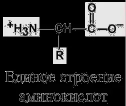
Аминокислоты являются строительными блоками белковых молекул, но необходимость их изучения кроется не только в данной функции. Несколько аминокислот являются источником для образования нейромедиаторов в ЦНС (гистамин, серотонин, гамма-аминомасляная кислота, дофамин, норадреналин), другие сами являются нейромедиаторами (глицин, глутаминовая кислота).
Те или иные аминокислоты необходимы для синтеза пуриновых и пиримидиновых оснований без которых нет нуклеиновых кислот, используются для синтеза низкомолекулярных биологически важных соединений (креатин, карнитин, карнозин, ансерин и др.).
Аминокислота тирозин целиком входит в состав гормонов щитовидной железы (тироксин, трийодтиронин) и мозгового вещества надпочечников (адреналин, норадреналин).
С нарушением обмена аминокислот связан ряд наследственных и приобретенных заболеваний, сопровождающихся серьезными проблемами в развитии организма (цистиноз, гомоцистеинемия, лейциноз, тирозинемии и др). Самым известным примером является фенилкетонурия.
По участию аминокислот в синтезе белков
Выделяют протеиногенные (20 АК) и непротеиногенные (около 40 АК). Все протеиногенные аминокислоты являются α-аминокислотами.
На примере протеиногенных аминокислот можно показать дополнительные способы классификации:
по строению бокового радикала – неполярные (алифатические, ароматические) и полярные (незаряженные, отрицательно и положительно заряженные),
электрохимическая – по кислотно-основным свойствам подразделяют нейтральные (большинство), кислые (Асп, Глу) и основные (Лиз, Арг, Гис) аминокислоты,
физиологическая классификация – по необходимости для организма выделяют незаменимые (Лей, Иле, Вал, Фен, Три, Тре, Лиз, Мет) и заменимые. Две аминокислоты являются условно незаменимыми (Арг, Гис), т.е. их синтез происходит в недостаточном количестве.
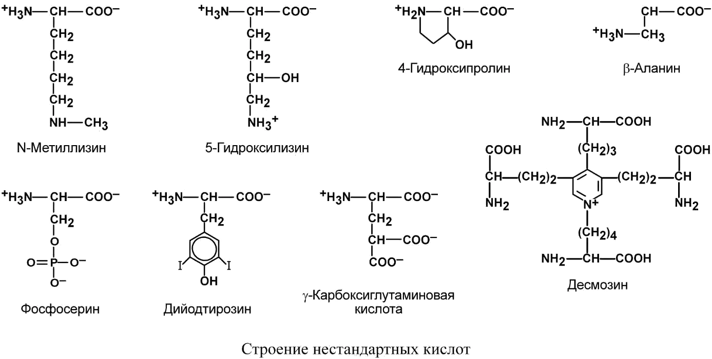
По полярности молекулы
К неполярным относят аминокислоты, имеющие алифатические углеводородные цепи (аланин, валин, лейцин, изолейцин, метионин, пролин) и ароматические кольца (фенилаланин, триптофан, тирозин).
К полярным незаряженным относятся аминокислоты, имеющие гидроксильные группы (серин, треонин, тирозин), амидные группы (аспарагин, глутамин), тиольную группу (цистеин) и глицин.
Аспарагиновая и глутаминовая аминокислоты имеют в радикале дополнительную карбоксильную группу, отрицательно заряжены и, соответственно, полярны. К аминокислотам с полярными положительно заряженными радикалами относятся лизин, аргинин, гистидин.
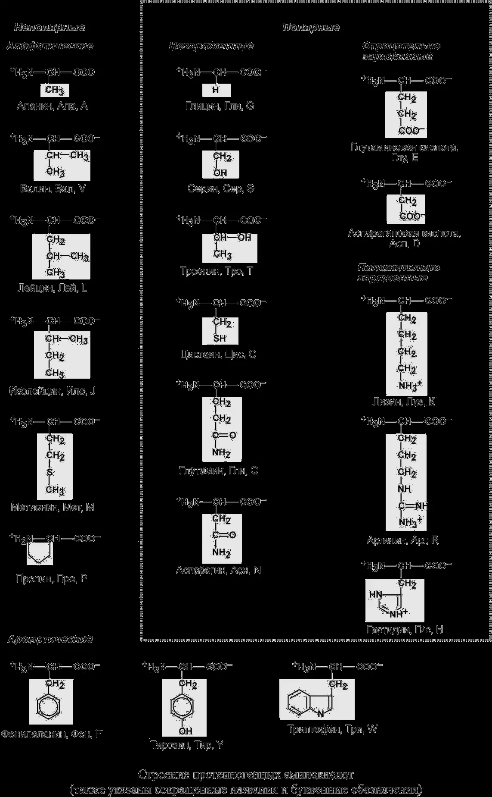
Вопрос 3
Типы связей аминокислот в молекулах белков и их роль в стабилизации белковой структуры. Пептиды. Номенклатура пептидов, их свойства. Физиологически активные пептиды крови и других тканей человека.
Типы связей аминокислот в молекулах белков и их роль в стабилизации белковой структуры
В молекуле белка различают прочные ковалентные связи — пептидные и дисульфидные — и непрочные нековалентные связи: водородные, ионные, вандерваальсовы и гидрофобные.
Пептидная связь: строение и свойства
Аминокислоты способны соединяться между собой связями, которые называются пептидными, при этом образуется полимерная молекула.
Пептидная связь – это связь между α-карбоксильной группой одной аминокислоты и α-аминогруппой другой аминокислоты.
Пептидные связи (–CO–NH–) являются основным видом связей в белках. Впервые они были изучены А. Я. Данилевским в 1888 году. Пептидные связи определяют порядок чередования аминокислот в полипептидной цепи, то есть формируют первичную структуру белка.
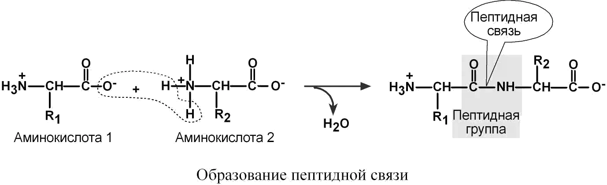
К свойствам пептидной связи относятся:
Трансположение заместителей (радикалов) аминокислот по отношению к C–N-связи
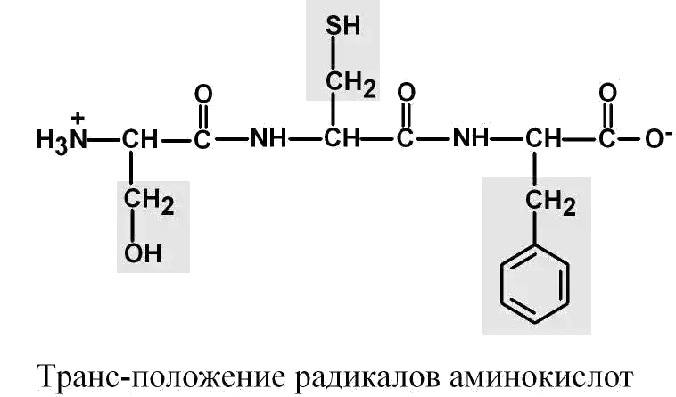
Копланарность
Все атомы, входящие в пептидную группу, находятся в одной плоскости, при этом атомы "Н" и "О" расположены по разные стороны от пептидной связи.
Наличие кетоформы и енольной формы
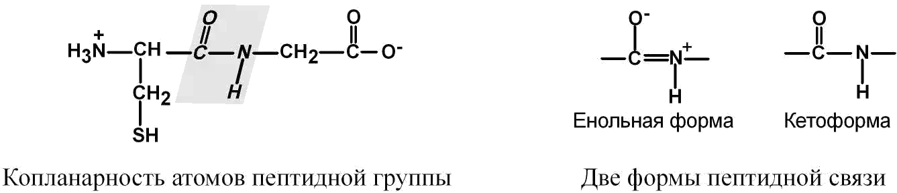
Способность к образованию двух водородных связей
Атомы кислорода и водорода, входящие в пептидную группу, обладают способностью образовывать водородные связи с атомами кислорода и водорода других пептидных групп.
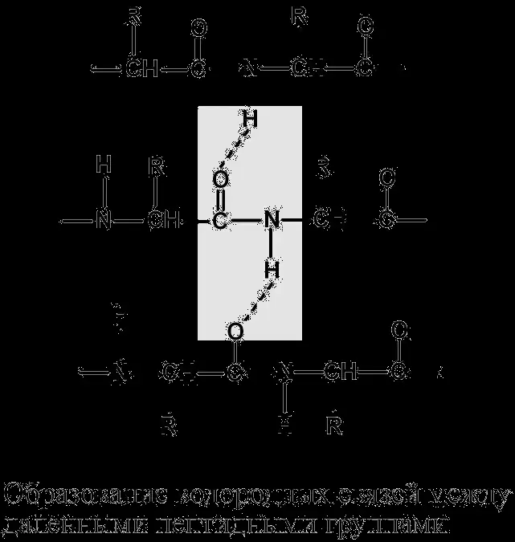
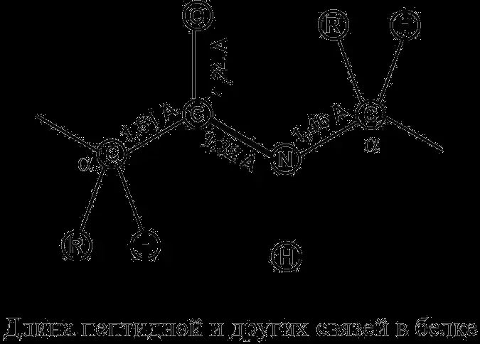
Частично двойной характер пептидной связи
Ее длина меньше, чем одинарной связи, она является жесткой структурой, и вращение вокруг нее затруднено.
Но так как, кроме пептидной, в белке есть и другие связи, цепочка аминокислот способна вращаться вокруг основной оси, что придает белкам различную конформацию (пространственное расположение атомов).
Пептидная связь является сопряжённой: электронная плотность в ней смещена от азота к кислороду, поэтому она занимает промежуточное положение между одинарной и двойной связью. Её длина составляет 0,132 нм. Вращение атомов вокруг пептидной связи затруднено, атомы O и H находятся в транс-положении, а все атомы пептидной группы располагаются в одной плоскости.
Пептидные связи прочные: энергия разрыва составляет около 95 ккал/моль. Они расщепляются при кипячении белка в присутствии кислот или щелочей либо под действием ферментов-пептидаз.
Связи между радикалами аминокислот
Дисульфидные связи
Дисульфидные связи (–S–S–) образованы двумя остатками цистеина. Возможны внутрицепочечные дисульфидные мостики в пределах одной полипептидной цепи и межцепочечные связи между отдельными полипептидными цепями. В молекуле инсулина присутствуют оба варианта. Эти связи влияют на пространственную укладку белковой молекулы, то есть на третичную структуру. Они разрываются при действии некоторых восстановителей и при денатурации белка.
Водородные связи
Водородные связи возникают между атомом водорода и электроотрицательным атомом, чаще кислородом. Они примерно в 10 раз слабее пептидных связей. Наиболее часто водородные связи возникают между атомами H и O различных пептидных групп — близко расположенных в одной молекуле или находящихся в разных полипептидных цепях. Большое количество водородных связей фиксирует главным образом вторичную структуру — α-спираль и β-складчатую структуру, а также участвует в образовании третичной и четвертичной структур. При денатурации водородные связи легко разрываются.
Ионные связи
Ионные связи образуются между положительно заряженными остатками лизина, аргинина и гистидина и отрицательно заряженными остатками глутамата и аспартата. Они влияют на пространственную укладку белка и участвуют в формировании третичной и четвертичной структур. Ионные связи нарушаются при изменении pH среды и при денатурации.
Вандерваальсовы взаимодействия
Вандерваальсовы взаимодействия возникают при кратковременной поляризации атомов.
Гидрофобные взаимодействия
Гидрофобные взаимодействия возникают между неполярными радикалами аминокислот в полярном растворителе — воде. Гидрофобные радикалы погружаются внутрь белковой молекулы, изменяя пространственное расположение полипептидной цепи. Эти взаимодействия имеют энтропийную природу, придают белковой молекуле устойчивость и участвуют в формировании третичной и четвертичной структур.
Псевдопептидная связь
Кроме пептидных связей между α-функциональными группами аминокислот, возможны псевдопептидные связи между дополнительными карбоксильными группами глутамата и аспартата и дополнительными аминогруппами лизина и аргинина.
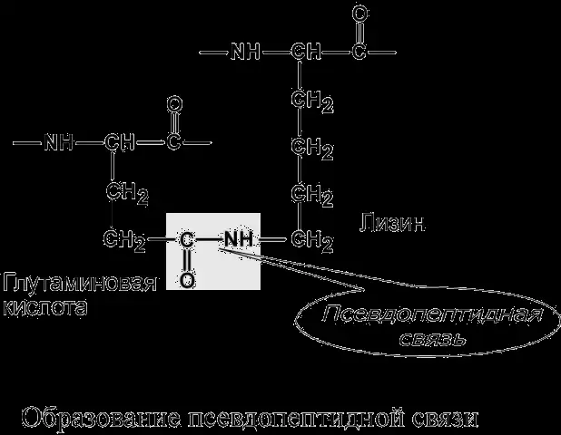
Пептиды: номенклатура и свойства
Белок — это последовательность аминокислот, связанных друг с другом пептидными связями. Если количество аминокислот не превышает 10, новое соединение называется пептидом; если оно содержит от 10 до 40 аминокислот — полипептидом; если более 40 аминокислот — белком.
В пептидной цепи различают N-концевую аминокислоту со свободной α-аминогруппой и C-концевую аминокислоту со свободной α-карбоксильной группой.
Номенклатура пептидов
При необходимости назвать пептид ко всем названиям аминокислот, кроме последней, добавляют окончание «-ил». Например, пептид, образованный аланином, серином и триптофаном, называется аланил-серил-триптофан. По такому же принципу называется трипептид глутатион — γ-глутаминил-цистеинил-глицин.
Свойства пептидов
Пептидные связи определяют порядок чередования аминокислот в пептидной цепи. Пептидная связь прочная: энергия её разрыва составляет около 95 ккал/моль. Расщепление пептидных связей происходит при кипячении в присутствии кислот или щелочей либо под действием ферментов-пептидаз.
Физиологически активные пептиды крови и других тканей человека
Глутатион
Глутатион — трипептид γ-глутамил-цистеинил-глицин. Он выполняет две функции: участвует в переносе аминокислот через мембраны и является ключевым звеном антиоксидантной системы клетки. Переносчиком некоторых, обычно нейтральных, аминокислот служит глутатион при участии γ-глутамилтрансферазы. γ-Глутамильный остаток связывает аминокислоту, после чего она перемещается внутрь клетки. Глутатион при этом распадается на составляющие, а после отделения аминокислоты ресинтезируется.
Пептиды мышечной ткани
К азотистым небелковым веществам мышц относятся дипептиды карнозин и ансерин. Они влияют на работу натриевых и кальциевых насосов, активируют работу мышц, регулируют апоптоз и являются антиоксидантами. Наличие гистидина позволяет карнозину и ансерину принимать и отдавать ион водорода при значениях pH, близких к pH крови и клеток — 7,35–7,45.
Нейропептиды
Нейроэнкефалины и нейроэндорфины — пептиды, обладающие морфиноподобным обезболивающим эффектом. Они являются иммуномодуляторами и выполняют нейромедиаторную функцию.
Кинины крови
Кинины представлены брадикинином, содержащим 9 аминокислотных остатков, каллидином из 10 остатков и лизил-метионил-брадикинином из 11 аминокислот. Они регулируют гемодинамику, увеличивают работу сердца, расширяют сосуды, вызывают спазм гладкой мускулатуры бронхов и матки, являются медиаторами воспаления, участвуют в регуляции свёртывающей и антисвёртывающей систем крови и обладают иммуномодуляторным действием. Кинины образуются из неактивных белков-предшественников — кининогенов — при участии протеолитических ферментов калликреинов, а расщепляются до аминокислот кининазами.
Ангиотензины
При уменьшении кровотока через почки в них вырабатывается протеолитический фермент ренин, переводящий ангиотензиноген в ангиотензин I — пептид из 10 аминокислот. Под действием ангиотензинпревращающего фермента ангиотензин I превращается в ангиотензин II, содержащий 8 аминокислот. Ангиотензин II суживает сосуды и стимулирует выработку антидиуретического гормона и альдостерона, задерживающих воду.
Вазопрессин и окситоцин
Вазопрессин и окситоцин синтезируются в гипоталамических ядрах, а затем перемещаются в заднюю долю гипофиза. Оба гормона состоят из 9 аминокислот. Вазопрессин регулирует водный обмен, усиливает синтез аквапорина и реабсорбцию воды в почечных канальцах, суживает сосуды и повышает артериальное давление. Окситоцин стимулирует сокращение мускулатуры матки и гладкой мускулатуры молочных желёз, усиливает отделение молока и активирует синтез липидов.
Глюкагон
Глюкагон — гормон пептидной природы, состоящий из 29 аминокислот. Он синтезируется в α-клетках островков поджелудочной железы и обладает гипергликемическим действием главным образом за счёт усиления фосфоролитического распада гликогена в печени до глюкозы. Глюкагон активирует липолиз и катаболизм белков.
Кальцитонин
Кальцитонин — пептид из 32 аминокислот. В отношении кальциевого обмена он является антагонистом паратгормона: снижает содержание кальция и фосфора в крови главным образом за счёт уменьшения резорбции кальция из костной ткани.
Натрийуретический пептид
Натрийуретический пептид вырабатывается в предсердиях в ответ на увеличение объёма воды в организме и растяжение предсердий. Он состоит из 28 аминокислот и представляет собой циклический пептид с дисульфидными мостиками. Натрийуретический пептид способствует выведению натрия и воды из организма.
Вопрос 4
Физико-химические свойства белков: молекулярная масса, формы белковых молекул, растворимость, способность к гидратации. Ионизация белков в водных растворах, их оптические свойства. Практическое применение указанных физико-химических свойств.
Физико-химические свойства белков
Физико-химические свойства белков зависят от особенностей аминокислотного состава, а также от конформации белковой молекулы. Физико-химические свойства белков проявляются в растворах.
Молекулярная масса белков
Молекулярная масса белков достаточно велика, находится в пределах от 60 000 до 100 000 дальтон. Например, молекулярная масса гемоглобина — 68 000 дальтон, альбумина сыворотки крови — 66 000 дальтон, рибонуклеазы — около 14 000 дальтон, миозина — 500 000 дальтон.
Методы определения молярной массы белков должны быть щадящими, не разрушающими белковые молекулы. Например, к белкам не применим эбулиоскопический метод, основанный на измерении температуры кипения растворов. Наиболее точными методами определения молекулярной массы белков являются метод ультрацентрифугирования и рентгеноструктурный метод.
Метод ультрацентрифугирования (седиментации) основан на изменении скорости осаждения белков различной молекулярной массы под действием центробежных сил при вращении белковых растворов с большой скоростью. Молекулярная масса белков, найденная под воздействием мощных центробежных сил, создаваемых в ультрацентрифугах, выражается в единицах Сведберга (S = 10−13 с).
Рентгеноструктурный метод позволяет рассчитать молекулярную массу путём анализа многочисленных рентгеновских снимков молекулы белка.
Электрофоретический метод основан на зависимости скорости передвижения белков в постоянном электрическом поле от молекулярной массы белка: электрофоретическая подвижность выше у белков с меньшей молекулярной массой.
Метод гель-фильтрации основан на различной скорости прохождения различных белков через молекулярные гелевые «сита», называемые сефадексами. Крупные молекулы, превышающие размеры пор геля, проходят через гель быстрее, чем более мелкие молекулы белка, которые задерживаются внутри зёрен геля.
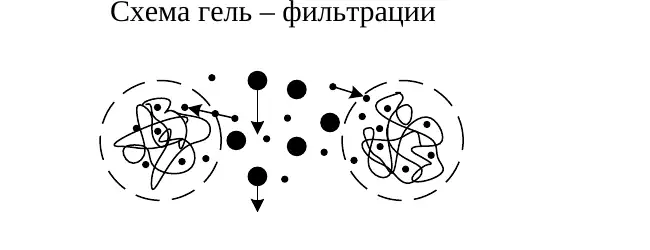
Схема гель-фильтрации.
Электронно-микроскопический метод проводится путём сравнения размеров белковой молекулы с эталонными образцами известной массы. Химические методы связаны с особенностями химического состава белков.
Размеры и форма белковых молекул
Форма белковых молекул различна. Белковые молекулы по форме могут быть фибриллярными и глобулярными.
Фибриллярные белки имеют нитевидную форму молекулы. Они, как правило, нерастворимы в воде и разбавленных солевых растворах. К фибриллярным белкам относятся основные структурные белки соединительной ткани: коллаген, кератин и эластин.
Глобулярные белки имеют полипептидные цепи, плотно свёрнутые в компактные сферические структуры. Большинство глобулярных белков хорошо растворяется в воде и слабых солевых растворах. К глобулярным белкам относятся ферменты, антитела, альбумины и гемоглобин.
Некоторые белки имеют промежуточную форму молекулы и содержат в своём составе нитевидные и шаровидные участки. Примером служит белок мышц миозин, растворимый в солевых растворах.
Размеры белковых молекул находятся в интервале от 1 до 100 нм, близком к размерам коллоидных частиц. Поэтому белковые растворы обладают свойствами как истинных, так и коллоидных растворов.
Свойства белков, сходные со свойствами коллоидных растворов
Медленная скорость диффузии белков.
Невозможность прохождения белков через полупроницаемые мембраны. В отсеках организма с высокой концентрацией белка создаётся избыточное давление, обусловленное односторонним перемещением молекул воды через полупроницаемую мембрану в сторону большей концентрации белка. Избыточное давление, создаваемое белками, называется онкотическим. Оно является важным фактором, определяющим передвижение воды между тканями, кровью и кишечником.
Высокая вязкость. Она обусловлена различными межмолекулярными взаимодействиями крупных белковых молекул. Повышенная вязкость крови увеличивает нагрузку на сердечную мышцу.
Способность некоторых белков образовывать гели. Образование гелей увеличивает прочность белков, например коллагена.
Растворимость белков
В целом растворимость белков высока, но различна для разных видов белков. На неё влияют следующие факторы:
форма белковой молекулы: глобулярные белки растворимы лучше, чем фибриллярные белки;
характер радикалов аминокислот белка, соотношение полярных и неполярных радикалов: чем больше в составе белка полярных гидрофильных радикалов, тем лучше его растворимость;
свойства растворителя, присутствие солей. Невысокая концентрация солей (KCl, NaCl) иногда повышает растворимость белков. Например, альбумины лучше растворимы в чистой дистиллированной воде, глобулины растворяются только в присутствии 10% солей (KCl, NaCl). Белки соединительной ткани коллаген и эластин не растворимы ни в воде, ни в солевых растворах.
Так как большинство белков несёт много заряженных групп, то в целом они водорастворимы. Растворимость объясняется:
наличием заряда и взаимоотталкиванием заряженных молекул белка;
наличием гидратной оболочки — чем больше полярных и/или заряженных аминокислот в белке, тем больше гидратная оболочка. Например, 100 г белка альбумина связывает 30–50 г воды.
Заряд и ионизация белковой молекулы
Белки, являясь молекулярными растворами, обладают свойствами истинных растворов. Будучи истинными растворами, белковые растворы отличаются высокой устойчивостью. Устойчивость белковым растворам придают два фактора: заряд белковой молекулы и гидратная оболочка.
Появление заряда на молекулах белков связано с их амфотерными свойствами — наличием кислотных и основных свойств. Группы, способные приобретать заряды, называются ионогенными. К ним относятся COOH-группы глутамата, аспартата, COOH-группы C-концевых аминокислот, NH2-группы лизина, аргинина, α-NH2-группы N-концевых аминокислот, азот имидазольного кольца гистидина. В очень незначительной степени ионизируются –SH-группы цистеина и –OH-группы тирозина. Ионизация различных функциональных групп белка определяется величиной pH среды.
При pH = 2–4 половина карбоксильных групп в белках находится в ионизированном состоянии (–COO−), половина — в неионизированном виде (–COOH). При физиологических значениях pH в интервале 7,35–7,45, то есть в более щелочной среде, карбоксильные группы полностью ионизированы и определяют отрицательный заряд белковой молекулы.
При pH около 10 половина аминогрупп белков ионизирована, а половина не ионизирована. При физиологических величинах pH = 7,4, то есть в более кислой среде, преобладает ионизированная форма аминогрупп (NH3+), придающая белковым молекулам положительный заряд.
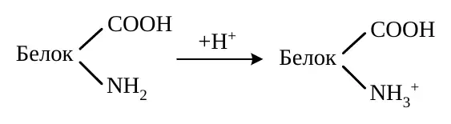
Ионизация основных групп белка.
Кислотно-основные свойства белков и аминокислот изучают методом потенциометрического титрования. Из всех аминокислот только гистидин обладает буферными свойствами при pH = 6–7. Входя в состав белка гемоглобина, гистидин определяет его буферные свойства, необходимые для связывания кислорода.
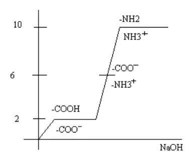
Изменение ионизации белка при потенциометрическом титровании.
Изменениями величины pH среды белок можно перевести в особое изоэлектрическое, электронейтральное состояние, в котором сумма положительных зарядов равна сумме отрицательных зарядов, а молекула в целом электронейтральна (+H3N–белок–COO−). Значение pH, при котором молекула белка электронейтральна, называется изоэлектрической точкой (ИЭТ). Для большинства белков изоэлектрическая точка находится в кислой среде (pH = 5–5,5). В то же время для гистонов ИЭТ находится в щелочной среде (pH = 9–11). В изоэлектрическом состоянии белки менее устойчивы, чем при наличии зарядов, поскольку одинаковый по знаку заряд белковой молекулы является фактором электростатического отталкивания белковых молекул, определяет ионные связи в белках и формирует наиболее стабильную конформацию белковой молекулы.
Таким образом, заряд белковой молекулы является одним из стабилизирующих факторов, препятствующих осаждению белков из растворов.
Формирование гидратной оболочки
Белки обычно имеют такую пространственную укладку, при которой гидрофобные группы «прячутся» в глубине белковой молекулы, а гидрофильные находятся на поверхности молекулы. К гидрофильным группам относятся –COOH, –NH2, –SH, –OH, пептидная связь, карбонильная группа. К гидрофильным группам притягиваются диполи H2O, в результате чего вокруг белковой молекулы формируется защитная водная «шуба», которая препятствует укрупнению белковых молекул и осаждению их из растворов. Вода, входящая в состав гидратных оболочек, называется связанной водой. Она отличается по физическим свойствам и определяет биологическую активность биополимеров.
Таким образом, гидратная оболочка белковых молекул является вторым мощным стабилизирующим фактором белковых растворов. Если каким-то воздействием убрать один или оба стабилизирующих фактора, то белки выпадают в осадок — происходит осаждение белков.
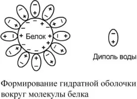
Формирование гидратной оболочки вокруг молекулы белка.
Оптические свойства белковых растворов
Оптические свойства белков определяются размерами белковых молекул, структурой радикалов аминокислот в белках, а также наличием пептидных связей и α-спиральных участков в белках.
Белковые растворы обладают эффектом светопреломления — рефракции — и светорассеивания. Данные свойства обусловлены большими размерами белковых молекул, соизмеримыми с длиной волны видимой части спектра. При этом короткие синие лучи рассеиваются в большей степени, чем более длинноволновые красные лучи. При прохождении луча света через белковый раствор образуется светящийся конус — эффект Тиндаля. Степень рефракции пропорциональна концентрации белкового раствора.
Белковые растворы поглощают ультрафиолетовые лучи в диапазоне 190–230 нм за счёт присутствия пептидных связей и в диапазоне 260–280 нм за счёт присутствия в белках циклических аминокислот. Степень поглощения УФ-лучей пропорциональна концентрации белка в растворе.
Белковые растворы способны вращать плоскость поляризованного света, что обусловлено оптической активностью содержащихся в белке аминокислот и наличием в нём α-спиральных участков. Угол вращения поляризованного луча света изменяется при денатурационных воздействиях.
Практическое применение физико-химических свойств белков
Молекулярная масса: ультрацентрифугирование разделяет белки по молекулярной массе; гель-фильтрация основана на различной скорости прохождения белков через поры геля.
Заряд белковой молекулы: электрофорез разделяет белки по заряду и молекулярной массе; ионообменная хроматография — по разнице зарядов белковых молекул.
Растворимость, заряд и гидратная оболочка: изоэлектрическое осаждение, дегидратация и высаливание используются для разделения белков. Высаливание применяют также для их концентрирования.
Неспособность белков проходить через полупроницаемые мембраны: диализ используют для очистки белковых препаратов от низкомолекулярных примесей; этот же принцип лежит в основе работы аппарата «искусственная почка».
Онкотическое давление: определяет перемещение воды между кровью и тканями; его изменение участвует в образовании отёков.
Поглощение ультрафиолетового света: спектрофотометрические методы оценивают интенсивность поглощения белками ультрафиолетовых лучей. Степень поглощения пропорциональна концентрации белка.
Рефракция и светорассеивание: рефрактометрические и нефелометрические методы основаны на способности белковых растворов преломлять и рассеивать свет пропорционально их концентрации.
Оптическая активность: поляриметрические методы основаны на способности белковых растворов вращать плоскость поляризованного света.
Вопрос 5
Общие принципы выделения белков из тканей. Очистка и фракционирование. Обнаружение белков в растворах. Цветные и осадочные реакции на белки. Определение содержания белков в тканях и биологических жидкостях.
Общие принципы выделения белков из тканей
Выделение белков из тканей включает несколько последовательных этапов.
Гомогенизация — измельчение ткани для разрушения клеточных и внутриклеточных мембран, препятствующих выделению белков. В процессе гомогенизации нередко добавляют детергенты.
Экстрагирование — растворение белков, которое чаще всего проводят слабыми солевыми растворами.
Отделение низкомолекулярных веществ, в том числе солей, методом диализа с использованием полупроницаемых мембран или методом гель-фильтрации.
Очистка белка от сопутствующих белков — фракционирование, основанное на различиях физико-химических свойств белков.
Выделение белка в кристаллическом состоянии путём лиофилизации — высушивания при низкой температуре.
Диализ и гель-фильтрация
Диализ основан на неспособности крупных белковых молекул проходить через полупроницаемые мембраны. Низкомолекулярные вещества проходят через мембрану и отделяются от белкового раствора.
При гель-фильтрации белки проходят через молекулярные гелевые «сита» — сефадексы. Крупные молекулы, превышающие размеры пор геля, проходят через него быстрее, чем мелкие молекулы, задерживающиеся внутри зёрен геля.
Схема гель-фильтрации.
Очистка и фракционирование белков
Фракционирование белков основано на различиях их молекулярной массы, заряда, растворимости и химических свойств.
Ультрацентрифугирование
Разделение белков по молекулярной массе.
Электрофорез
Разделение белков по заряду молекулы и молекулярной массе. Амфотерность белков позволяет разделять их по заряду.
Фракционное высаливание
Подбор концентрации соли для осаждения различных белков. Метод позволяет выделять белки с сохранением нативной конформации.
Распределительная хроматография
Разделение белков по различной растворимости.
Гель-фильтрация
Разделение белков по молекулярной массе.
Ионообменная хроматография
Разделение по разнице зарядов белковых молекул.
Аффинная хроматография
Разделение по химическим свойствам различных белков.
Обнаружение белков в растворах
Для обнаружения белков применяют цветные и осадочные реакции. Цветные реакции основаны на химических свойствах белков, а осадочные — на уменьшении их растворимости при устранении заряда и гидратной оболочки либо при денатурации.
Цветные реакции на белки
Биуретовая реакция является реакцией на пептидные связи. Отсутствие положительной биуретовой реакции служит одним из признаков завершения гидролиза белка до аминокислот.
К колориметрическим методам относятся также метод Лоури и метод сорбции белками определённых красителей. Интенсивность возникающей окраски определяется концентрацией белкового раствора.
Осадочные реакции на белки
Изоэлектрическое осаждение
При приближении pH раствора к изоэлектрической точке белок теряет заряд и осаждается. Примером является осаждение казеина молока при его скисании. На начальных стадиях процесс обратим и может использоваться для разделения белков.
Дегидратация
При добавлении водоотнимающих средств — спирта или ацетона — белок лишается гидратной оболочки. Заряд при этом сохраняется, растворимость снижается. При непродолжительном воздействии процесс обратим и используется для разделения белков.
Высаливание
Высаливание — осаждение белков концентрированными растворами нейтральных или слабокислых солей: NaCl, KCl, Na2SO4, (NH4)2SO4. Катионы и анионы взаимодействуют с заряженными группами белка, уменьшают его заряд и гидратную оболочку. Молекулы белка слипаются и выпадают в осадок. Высаливание не нарушает структуру белка и является полностью обратимым процессом, поэтому используется для разделения и концентрирования белков.
Фракционное высаливание белков плазмы
Белки плазмы различаются размерами, зарядом и строением, поэтому можно подобрать концентрацию соли, при которой менее устойчивые белки осаждаются, а другие остаются растворёнными. При 50% насыщении раствора нейтральными солями глобулины осаждаются, а более полярные альбумины остаются в растворе. В норме отношение альбуминов к глобулинам в плазме крови составляет 1,2–1,8.
Денатурационное осаждение
Денатурация сопровождается разрывом связей, стабилизирующих вторичную, третичную и четвертичную структуры белка, изменением растворимости, вязкости и химической активности, снижением или полной потерей биологической функции. Денатурацию вызывают высокая температура, ультрафиолетовое и микроволновое излучение, механическое воздействие, кислоты, щёлочи, органические растворители, алкалоиды, соли тяжёлых металлов и высокая концентрация мочевины.
На начальных стадиях денатурация может быть обратимой: восстановление структуры, физико-химических и биологических свойств белка называется ренатурацией. При продолжительном действии денатурирующего фактора процесс становится необратимым. Денатурацию применяют для обнаружения белков в растворах и биологических жидкостях и для удаления белков при проведении биохимических исследований.
Определение содержания белков в тканях и биологических жидкостях
Для определения концентрации белков в биологических жидкостях и растворах используются оптические, колориметрические и азотометрические методы.
Оптические методы
Спектрофотометрические методы оценивают интенсивность поглощения белками ультрафиолетовых лучей в диапазоне около 200 и 260 нм. Степень поглощения пропорциональна концентрации белка.
Рефрактометрические методы основаны на способности белковых растворов преломлять свет пропорционально их концентрации.
Нефелометрические методы основаны на способности белковых растворов рассеивать свет пропорционально их концентрации.
Поляриметрические методы основаны на способности белковых растворов вращать плоскость поляризованного света пропорционально их концентрации.
Колориметрические методы
Колориметрические методы основаны на цветных реакциях белков: биуретовой реакции, методе Лоури и сорбции белками определённых красителей. Интенсивность окраски определяется концентрацией белкового раствора.
Азотометрические методы
Азотометрические методы основаны на определении содержания азота и пересчёте его на концентрацию белка. В белках содержится около 16% азота.
Вопрос 6
Современные представления о структуре молекул белков. Первичная структура белков. Зависимость биологических свойств белков от первичной структуры. Видовая специфичность белков. Наследственные изменения первичной структуры. Наследственные протеинопатии: серповидно-клеточная анемия и другие примеры.
Уровни организации белковой структуры
Белок представляет собой последовательность аминокислот, соединённых пептидными связями. Линейная полипептидная цепь является первичной структурой белка. Строение аминокислотных остатков, их последовательность и соотношение определяют дальнейшее поведение цепи: способность изгибаться, сворачиваться и образовывать внутримолекулярные связи.
При сворачивании полипептидная цепь последовательно формирует более высокие уровни структурной организации.
Первичная структура
Последовательность аминокислотных остатков в полипептидной цепи.
Вторичная структура
Упорядоченная укладка отдельных участков цепи, прежде всего в α-спираль и β-складчатый слой.
Третичная структура
Компактная трёхмерная укладка одной полипептидной цепи в глобулу.
Четвертичная структура
Объединение нескольких полипептидных цепей в функциональный белковый комплекс.
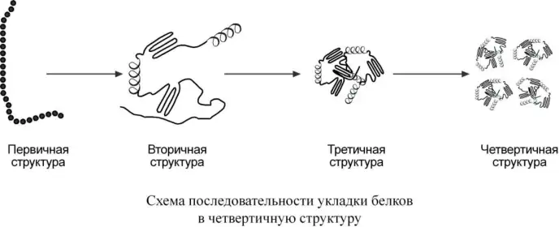
Последовательность формирования уровней организации белковой структуры.
Первичная структура белков и её влияние на общебиологические свойства
Первичная структура
Порядок чередования аминокислот в полипептидной цепи.
Впервые первичная структура была изучена Ф. Сенджером в 1954 году для гормона инсулина.
В синтезе белков участвуют 20 протеиногенных аминокислот, а средний белок содержит около 500 аминокислотных остатков. Поэтому количество потенциально возможных белков чрезвычайно велико. В организме человека обнаружено около 100 тысяч различных белков.
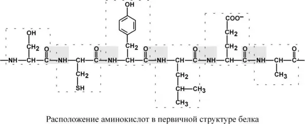
Расположение аминокислот в первичной структуре белка.
Последовательность и соотношение аминокислот в первичной структуре определяют формирование вторичной, третичной и, у олигомерных белков, четвертичной структуры.
Общебиологическое и медицинское значение первичной структуры
первичная структура определяет последующие уровни организации белковой молекулы;
её знание необходимо для искусственного синтеза белков с заданными биологическими свойствами;
изменения аминокислотной последовательности могут становиться причиной молекулярных заболеваний;
чередование жёстких пептидных групп и подвижных связей около α-углеродных атомов позволяет цепи формировать компактную пространственную укладку.
Видовая специфичность белков
Первичная структура определяет видовую специфичность белков. Например, в молекуле инсулина человека и различных видов животных в средней части молекулы обычно различаются три аминокислотных остатка. Замены происходят между аминокислотами с равноценными по свойствам радикалами, поэтому основные биологические свойства белка сохраняются.
Наследственные изменения первичной структуры и полиморфизм белков
Первичная структура белка задаётся последовательностью нуклеотидов в ДНК. Выпадение, вставка или замена нуклеотида приводит к изменению аминокислотного состава и, следовательно, структуры синтезируемого белка.
Если изменение последовательности аминокислот имеет не летальный, а приспособительный или нейтральный характер, изменённый белок может передаваться по наследству и сохраняться в популяции. В результате возникают новые белки и новые качества организма. Такое явление называется полиморфизмом белков.
Примером служит система групп крови АВ0, связанная с тремя вариантами фермента. Один вариант присоединяет к олигосахариду мембраны эритроцита N-ацетилгалактозамин и формирует группу А, другой присоединяет галактозу и формирует группу В, третий не присоединяет дополнительную сахаридную группу и соответствует группе 0.
Наследственные протеинопатии
Изменения первичной структуры могут быть причиной молекулярных патологий. К наследственным заболеваниям гемоглобина относятся гемоглобинопатии и талассемии.
Серповидноклеточная анемия
При серповидноклеточной анемии в результате точковой мутации в шестом положении β-цепи гемоглобина вместо глутамата включается валин. Образуется гемоглобин S — HbS. Изменение свойств β-цепи изменяет свойства всей молекулы и приводит к появлению на поверхности гемоглобина «липкого» участка.
При дезоксигенации этот участок раскрывается и связывает одну молекулу HbS с другими такими же молекулами. Происходит полимеризация гемоглобина и образуются крупные белковые тяжи. Эритроциты деформируются, приобретают форму серпа, теряют эластичность и разрушаются при прохождении через капилляры. Развиваются анемия, снижение оксигенации тканей и их некроз.
Другие наследственные изменения гемоглобина
При гемоглобинопатиях нарушается первичная структура α- или β-цепей гемоглобина.
Гемоглобин C — HbC
В шестом положении β-цепи глутамат заменяется на лизин.
Талассемии
При талассемиях нарушается образование и сочетание полипептидных цепей гемоглобина и увеличивается доля минорного гемоглобина A2.
Гемоглобин Бартса
Гемоглобин Бартса содержит четыре γ-цепи.
Вопрос 7
Вторичная и третичная структуры белковых молекул. Конформация белков. Роль конформационных изменений в функционировании белков. Белки-шапероны и их роль. Денатурация белков: физико-химическая сущность этого явления и его практическое значение.
Конформация белковых молекул как совокупность вторичной и третичной структуры и её связь с функциональной активностью белка
Конформация — пространственное расположение атомов белковой молекулы, возникающее при сворачивании полипептидной цепи. В её формировании последовательно участвуют элементы вторичной структуры и их дальнейшая укладка в третичную структуру.
Вторичная структура
Вторичная структура — способ укладки полипептидной цепи в упорядоченную форму, при которой аминокислотные остатки взаимодействуют через пептидные группы. Она формируется за счёт водородных связей между пептидными группами и зависит от устойчивости пептидной связи, подвижности связей около α-углеродного атома, размеров радикалов и аминокислотной последовательности.
Основными вариантами вторичной структуры являются α-спираль и β-складчатый слой. В одной белковой молекуле обычно присутствуют оба типа. В глобулярных белках чаще преобладают α-спиральные участки, в фибриллярных — β-структуры.
α-Спираль
α-Спираль является правозакрученной. Её стабилизируют водородные связи между пептидными группами первого и четвёртого, четвёртого и седьмого, седьмого и десятого аминокислотных остатков и далее. На один виток приходится 3,6 аминокислотного остатка, высота витка составляет 0,54 нм. Пролин и гидроксипролин препятствуют формированию спирали и вызывают резкий изгиб цепи.
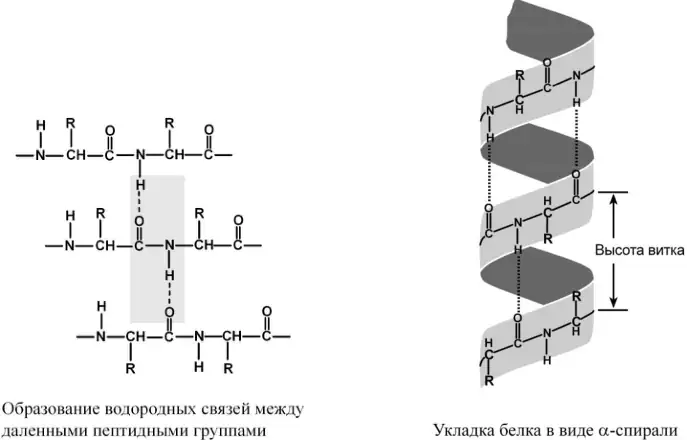
Образование водородных связей между пептидными группами и укладка цепи в α-спираль.
β-Складчатый слой
При формировании β-структуры удалённые участки полипептидной цепи сближаются и соединяются водородными связями между пептидными группами. Соседние участки могут располагаться параллельно, если направлены одинаково от N-конца к C-концу, или антипараллельно, если имеют противоположное направление.
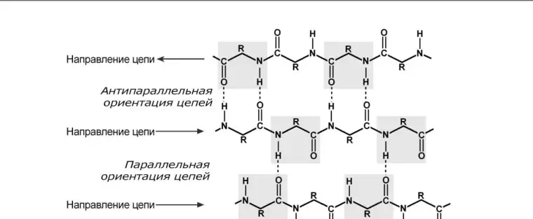
Параллельная и антипараллельная ориентация участков β-складчатого слоя.
Третичная структура
Третичная структура — укладка одной полипептидной цепи в глобулу. Чёткой границы между вторичной и третичной структурами нет: элементы вторичной структуры объединяются в компактную трёхмерную молекулу благодаря взаимодействиям между аминокислотными остатками, удалёнными друг от друга в первичной последовательности.
Наряду с α-спиралью и β-структурой в белках присутствуют неупорядоченные участки. Их соотношение различается: например, инсулин содержит 52% α-спирали и 6% β-структуры, а трипсин — 14% α-спирали и 45% β-структуры.
Третичную структуру стабилизируют водородные, дисульфидные, гидрофобные и ионные взаимодействия между радикалами аминокислот. Возможно также образование псевдопептидных связей между дополнительными карбоксильными группами глутамата или аспартата и дополнительными аминогруппами лизина или аргинина.
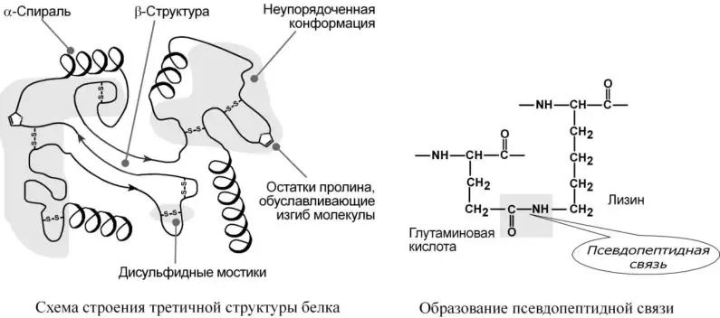
Элементы третичной структуры и один из вариантов связи между радикалами аминокислот.
Связь конформации с функцией
Нативная конформация создаёт активные центры ферментов и участки связывания лигандов. Поэтому функциональная активность белка зависит не только от его аминокислотной последовательности, но и от правильной пространственной укладки. Нарушение вторичной и третичной структуры изменяет или прекращает работу белка.
Белки-шапероны и их роль в формировании нативной конформации синтезируемых белков
Совокупность первичной, вторичной и третичной структур составляет конформацию белковой молекулы. Образование нативной конформации называется фолдингом. Оно определяется первичной структурой, но в клетке правильному сворачиванию белков помогают особые белки — шапероны.
Шапероны связываются с синтезируемыми, частично денатурированными или находящимися в неустойчивом состоянии белками. Они экранируют открытые гидрофобные участки, препятствуют неправильным внутримолекулярным взаимодействиям и способствуют формированию или восстановлению нативной конформации.
Основные группы
Шапероны классифицируют по молекулярной массе; наиболее изучены группы Hsp60, Hsp70 и Hsp90.
Hsp70
Связываются с участками, богатыми гидрофобными радикалами, и защищают белки от высокотемпературной денатурации.
Формирование конформации
Шапероны препятствуют денатурации и помогают белковой цепи принять нативную пространственную укладку.
Удаление повреждённых белков
Шапероны облегчают транспорт денатурированных белков к внутриклеточным системам разрушения.
Эффекты высаливания и денатурации белков
Так как растворимость белков зависит от заряда и наличия гидратной оболочки, то исчезновение одного или обоих этих факторов ведёт к осаждению белка.
Денатурация
Денатурация — необратимое осаждение белка из-за разрыва связей, стабилизирующих четвертичную, третичную, вторичную структуры белка, сопровождаемое изменением растворимости, вязкости, химической активности, снижением или полной потерей биологической функции.
Физическая денатурация: повышение температуры, ультрафиолетовое и микроволновое излучение, механические воздействия, ионизация заряженными частицами.
Химическая денатурация:
кислоты и щёлочи образуют водородные связи с пептидными группами;
органические растворители образуют водородные связи и вызывают дегидратацию;
алкалоиды образуют связи с полярными группами и разрывают систему водородных и ионных связей;
тяжёлые металлы взаимодействуют с заряженными радикалами, нейтрализуют отрицательные заряды и разрывают систему водородных и ионных связей.
Обратимое осаждение
Обратимость осаждения белков обусловлена сохранением первичной структуры белка. Восстановление физико-химических и биологических свойств белка называется ренативацией (ренатурацией). Иногда для ренативации достаточно просто удалить денатурирующий объект.
Высаливание
Высаливание — это добавление растворов нейтральных солей (Na2SO4, (NH4)2SO4). Анионы SO42− и катионы Na+, NH4+ взаимодействуют с зарядами белка — группами NH4+ и COO−. В результате заряд исчезает и, соответственно, исчезает взаимоотталкивание молекул. Одновременно резко уменьшается гидратная оболочка. Это ведёт к «слипанию» молекул и осаждению.
Так как белки плазмы крови отличаются по размерам, заряду, строению, то можно подобрать такие количества соли, которые вызовут осаждение менее устойчивых белков, пока другие ещё будут растворены.
Например, подобным образом раньше определяли соотношение альбумины/глобулины в плазме крови. Альбумины, как более полярные молекулы, остаются в растворённом состоянии при 50% насыщении раствора нейтральными солями, в то время как глобулины в этих условиях уже осаждаются. В норме соотношение альбумины/глобулины в плазме крови равно 1,2–1,8.
Осаждение водоотнимающими средствами
При добавлении водоотнимающих средств — ацетона, этанола — происходит отнятие у белка гидратной оболочки, но не заряда. Растворимость несколько снижается, но денатурации не наступает. Например, антисептическое действие этанола.
Изменение pH
Мягкое изменение pH до изоэлектрической точки белка ведёт к исчезновению заряда, уменьшению гидратной оболочки и снижению растворимости молекулы.
Вопрос 8
Четвертичная структура белков. Олигомерные белки, их преимущества по сравнению с мономерными. Кооперативные изменения конформации протомеров в олигомерных белках. Примеры строения и функционирования олигомерных белков: гемоглобин в сравнении с миоглобином, аллостерические ферменты, полиферментные комплексы. Принцип самосборки в формировании сложной структуры белковых молекул.
Четвертичная структура белков. Особенности строения и функционирования олигомерных белков
Четвертичная структура
Объединение двух или более полипептидных цепей в функциональный белковый комплекс за счёт нековалентных взаимодействий.
Белки с четвертичной структурой называют олигомерами, а входящие в их состав полипептидные цепи — протомерами, или субъединицами. Комплекс из двух протомеров называют димером, из четырёх — тетрамером. Четвертичную структуру стабилизируют водородные, ионные, электростатические и гидрофобные взаимодействия между аминокислотными остатками на поверхности субъединиц.
Гемоглобин взрослого человека является тетрамером и состоит из двух α- и двух β-субъединиц, каждая из которых содержит гем. В фетальном гемоглобине две β-субъединицы заменены на две γ-субъединицы.
Другие примеры олигомерных белков: лактатдегидрогеназа, состоящая из четырёх субъединиц H и M в разных сочетаниях, и креатинкиназа, состоящая из двух субъединиц B и M.
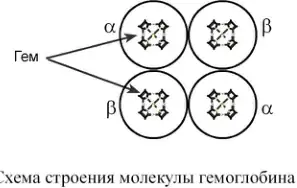
Четыре субъединицы гемоглобина.
Особенности функционирования олигомерных белков
Протомеры взаимодействуют по принципу комплементарности: их поверхности соответствуют друг другу по геометрической форме и расположению функциональных групп. Изменение конформации одной субъединицы передаётся другим субъединицам. Это называют кооперативным взаимодействием.
При присоединении кислорода к одной субъединице гемоглобина её конформация изменяется и сродство остальных субъединиц к кислороду возрастает. Поэтому последовательное присоединение следующих молекул кислорода происходит легче. При отдаче кислорода в тканях действует обратная последовательность.
Дезоксигемоглобин находится преимущественно в напряжённой T-форме с низким сродством к кислороду. При оксигенации белок переходит в расслабленную R-форму с высоким сродством к кислороду. Таким образом, четвертичная структура позволяет субъединицам согласованно изменять активность всего белкового комплекса.
Вопрос 9
Классификация белков. Основные группы простых и сложных белков и их характеристика.
Классификация белков
По функции
См. выше «Функции белков».
По строению
1. По форме молекулы
Глобулярные — соотношение продольной и поперечной осей составляет < 10 и в большинстве случаев не более 3–4. Они характеризуются компактной укладкой полипептидных цепей. Например, инсулин, альбумин, глобулины плазмы крови.
Фибриллярные — соотношение осей > 10. Они состоят из пучков полипептидных цепей, спиралью навитых друг на друга и связанных между собой поперечными ковалентными и водородными связями. Выполняют защитную и структурную функции. Например, кератин, миозин, коллаген.
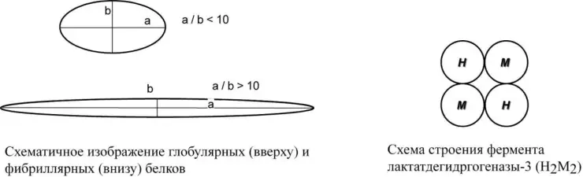
Схематическое изображение глобулярных и фибриллярных белков; строение олигомерного фермента.
2. По количеству белковых цепей в одной молекуле
мономерные — имеют одну субъединицу (протомер), например альбумин, миоглобин;
полимерные — имеют несколько субъединиц. Например, гемоглобин — 4 субъединицы, лактатдегидрогеназа — 4 субъединицы, креатинкиназа — 2 субъединицы.
3. По химическому составу
Простые — содержат в составе только аминокислоты: альбумины, глобулины, гистоны, протамины. Подробно эти белки характеризуются ниже.
Сложные — кроме аминокислот имеются небелковые компоненты: нуклеопротеины, фосфопротеины, металлопротеины, липопротеины, хромопротеины, гликопротеины. Подробно эти белки характеризуются ниже.
Классификация простых белков
Структура простых белков представлена только полипептидной цепью — альбумин, инсулин. Однако необходимо понимать, что многие простые белки, например альбумин, не существуют в «чистом» виде, они всегда связаны с какими-либо небелковыми веществами. Их относят к простым белкам, так как связи с небелковой группой слабые.
Альбумины
Группа глобулярных белков плазмы крови с молекулярной массой 69 кДа, имеют кислые свойства и отрицательный заряд при физиологических pH, так как содержат много глутаминовой кислоты. Легко адсорбируют полярные и неполярные молекулы, являются в крови переносчиком многих веществ, в первую очередь билирубина и жирных кислот.
В природе альбумины входят в состав не только плазмы крови — сывороточные альбумины, — но и яичного белка — овальбумин, — молока — лактальбумин, — являются запасными белками семян высших растений.
Глобулины
Группа разнообразных белков плазмы крови с молекулярной массой до 100 кДа, несут отрицательный заряд, слабокислые или нейтральные. Они мало гидратированы, по сравнению с альбуминами меньше устойчивы в растворе и легче осаждаются, что используется в клинической диагностике в «осадочных» пробах — тимоловой пробе, пробе Вельтмана. Часто содержат углеводные компоненты.
При обычном электрофорезе разделяются как минимум на 4 фракции — α1, α2, β и γ.
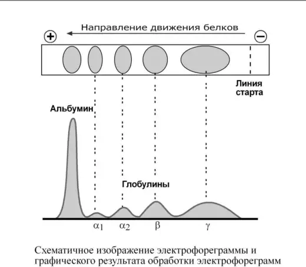
Схематическое изображение электрофореграммы и графического результата её обработки.
Так как глобулины включают в себя разнообразные белки, то их функции многочисленны. Часть α-глобулинов обладает антипротеазной активностью, что защищает белки крови от преждевременного разрушения, например α1-антитрипсин, α1-антихимотрипсин, α2-макроглобулин. Некоторые глобулины способны к связыванию определённых веществ: трансферрин — переносчик ионов железа, церулоплазмин — переносчик ионов меди, гаптоглобин — переносчик гемоглобина, гемопексин — переносчик гема. γ-Глобулины являются антителами и обеспечивают иммунную защиту организма.
Гистоны
Гистоны — внутриядерные белки массой около 24 кДа. Обладают выраженными основными свойствами, поэтому при физиологических значениях pH заряжены положительно и связываются с дезоксирибонуклеиновой кислотой (ДНК), образуя дезоксирибонуклеопротеины. Существуют 5 типов гистонов: очень богатый лизином (29%) гистон H1; другие гистоны H2a, H2b, H3, H4 богаты лизином и аргинином — в сумме до 25%.
Радикалы аминокислот в составе гистонов могут быть метилированы, ацетилированы или фосфорилированы. Это изменяет суммарный заряд и другие свойства белков.
Можно выделить две функции гистонов:
регулируют активность генома, а именно препятствуют транскрипции;
структурная — стабилизируют пространственную структуру ДНК.
Гистоны образуют нуклеосомы — октаэдрические структуры, составленные из гистонов H2a, H2b, H3, H4. Гистон H1 связан с молекулой ДНК, не позволяя ей «соскользнуть» с гистонового октамера. ДНК обвивает нуклеосому 2,5 раза, после чего обвивает следующую нуклеосому. Благодаря такой структуре достигается уменьшение размеров ДНК в 7 раз. Далее нить ДНК с нуклеосомами складывается в суперспираль и «суперсуперспираль». Таким образом, гистоны участвуют в плотной упаковке ДНК при формировании хромосом.
Благодаря гистонам в конечном итоге размеры ДНК уменьшаются в тысячи раз: длина ДНК достигает 6–9 см (10−1), а размеры хромосом — всего несколько микрометров (10−6).
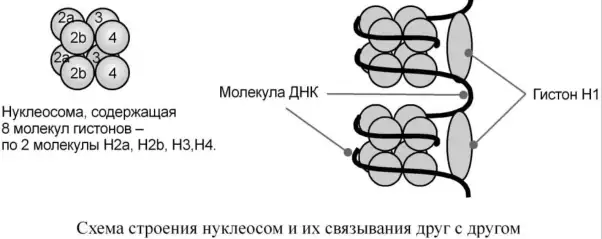
Схема строения нуклеосом и их связывания друг с другом.
Протамины
Это белки массой от 4 до 12 кДа, имеются в ядрах сперматозоидов многих организмов, в сперме рыб они составляют основную массу белка. Протамины являются заменителями гистонов и служат для организации хроматина в спермиях. По сравнению с гистонами протамины отличаются резко увеличенным содержанием аргинина — до 80%. Также, в отличие от гистонов, протамины обладают только структурной функцией, регулирующей функции у них нет, хроматин в сперматозоидах неактивен.
Коллаген
Фибриллярный белок с уникальной структурой. Составляет основу межклеточного вещества соединительной ткани сухожилий, кости, хряща, кожи, но имеется, конечно, и в других тканях.
Полипептидная цепь коллагена включает 1000 аминокислот и носит название α-цепь. Насчитывается около 30 вариантов α-цепи коллагена, но все они обладают одним общим признаком — в большей или меньшей степени включают повторяющийся триплет [Гли–X–Y], где X и Y — любые, кроме глицина, аминокислоты. В положении X чаще находится пролин или, гораздо реже, 3-оксипролин; в положении Y встречается пролин и 4-оксипролин. Также в положении Y часто находится аланин, лизин и 5-оксилизин. На другие аминокислоты приходится около трети от всего количества аминокислот. Гидроксилирование пролина и лизина осуществляют соответствующие гидроксилазы, железосодержащие ферменты; для их полноценной работы необходим витамин C — аскорбиновая кислота.
Структура пролина и оксипролина не позволяет образовать α-спиральную структуру, из-за этого образуется левозакрученная спираль, где на один виток приходится 3 аминокислотных остатка. Коллаген обычно содержит моносахаридные — галактоза — и дисахаридные — глюкоза–галактоза — молекулы, соединённые с OH-группами некоторых остатков оксилизина.
Молекула тропоколлагена построена из 3 α-цепей, сплетённых между собой в плотный жгут — тропоколлаген, длина 300 нм, диаметр 1,6 нм. Полипептидные цепи прочно связаны между собой через ε-аминогруппы остатков лизина. Тропоколлаген формирует крупные коллагеновые фибриллы диаметром 10–300 нм. Поперечная исчерченность фибриллы обусловлена смещением молекул тропоколлагена друг относительно друга на 1/4 их длины.
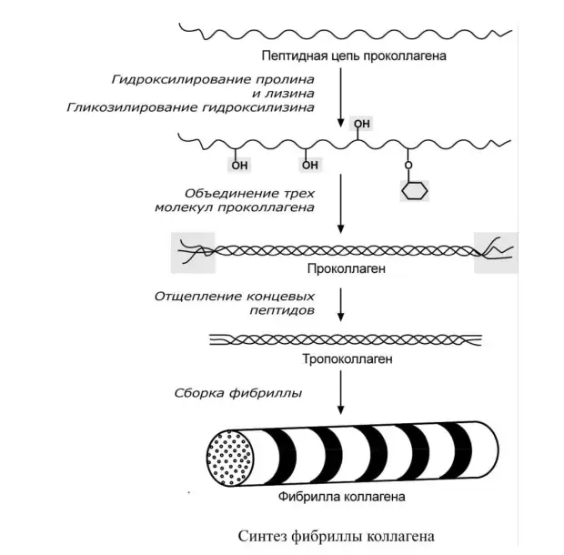
Синтез фибриллы коллагена.
Время полужизни коллагена исчисляется неделями и месяцами. Ключевую роль в его обмене играет коллагеназа, расщепляющая тропоколлаген на 1/4 расстояния с C-конца между глицином и лейцином. В результате распада коллагена появляется свободный гидроксипролин. При поражении соединительной ткани — болезнь Пейджета, гиперпаратиреоидизм — экскреция гидроксипролина возрастает и имеет диагностическое значение.
По мере старения организма в тропоколлагене образуется всё большее число поперечных связей, что делает фибриллы коллагена в соединительной ткани более жёсткими и хрупкими. Это ведёт к повышенной ломкости кости и снижению прозрачности роговицы глаза в старческом возрасте.
Эластин
По строению в общих чертах эластин схож с коллагеном. Находится в связках, эластичном слое сосудов. Структурной единицей является тропоэластин с молекулярной массой 72 кДа и длиной 800 аминокислотных остатков. В нём гораздо больше лизина, валина, аланина и меньше гидроксипролина. Отсутствие пролина обусловливает наличие спиральных эластичных участков.
Характерной особенностью эластина является формирование из четырёх молекул лизина своеобразной структуры — десмозина, который своими четырьмя группами объединяет белковые цепи в системы, способные растягиваться во всех направлениях.
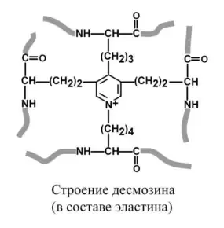
Строение десмозина в составе эластина.
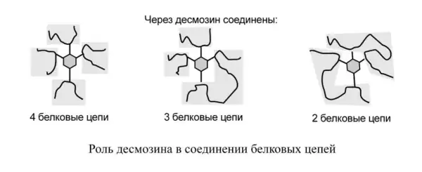
Роль десмозина в соединении белковых цепей.
α-Аминогруппы и α-карбоксильные группы десмозина включаются в пептидные связи одной или нескольких белковых цепей.
Строение и классификация сложных белков
У сложных белков, кроме белковой цепи, имеется дополнительная небелковая группа. Она называется лиганд — от латинского ligo, «связываю», — то есть молекула, связанная с белком. В случае если лиганд несёт структурную и/или функциональную нагрузку, он называется простетической группой.
В роли лиганда могут выступать любые молекулы:
молекулы, выполняющие в белке структурную функцию — липиды, углеводы, нуклеиновые кислоты, минеральные элементы, какие-либо другие органические соединения: гем в гемоглобине, углеводы в гликопротеинах, ДНК и РНК в нуклеопротеинах, медь в церулоплазмине;
переносимые белками молекулы: железо в трансферрине, гемоглобин в гаптоглобине, гем в гемопексине;
субстраты для ферментов — любые молекулы и даже другие белки.
Узнавание лиганда обеспечивается:
комплементарностью структуры центра связывания белка структуре лиганда, иначе говоря, пространственным и химическим соответствием белка и лиганда. Они подходят друг к другу как ключ к замку, например соответствие фермента и субстрата;
иногда узнавание может зависеть от реакционной способности атома, к которому присоединяется лиганд. Например, связывание кислорода железом гемоглобина или жирной кислоты с альбумином.
Функции лиганда в составе сложного белка разнообразны:
изменяет свойства белков — заряд, растворимость, термолабильность, — например фосфорная кислота в фосфопротеинах или остатки моносахаридов в гликопротеинах;
защищает белок от протеолиза вне и внутри клетки, например углеводная часть в гликопротеинах;
обеспечивает возможность транспорта нерастворимых в воде соединений, например перенос жиров липопротеинами;
придаёт биологическую активность и определяет функцию белка, например нуклеиновая кислота в нуклеопротеинах, гем в гемоглобине, углевод в рецепторных белках;
влияет на проникновение через мембраны, внутриклеточную миграцию, сортировку и секрецию белков; это выполняет, как правило, углеводный остаток.
Фосфопротеины
Фосфопротеины — это белки, в которых присутствует фосфатная группа; она связывается с пептидной цепью через остатки тирозина, серина, треонина, то есть тех аминокислот, которые содержат OH-группу.
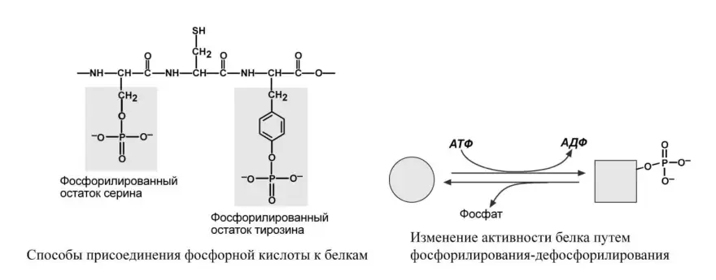
Способы присоединения фосфорной кислоты к белкам и изменение активности белка путём фосфорилирования-дефосфорилирования.
Фосфорная кислота может выполнять:
Структурную роль, придавая заряд, растворимость и изменяя свойства белка, например в казеине молока, яичном альбумине.
Функциональную роль. В клетке присутствует много белков, которые связаны с фосфатом не постоянно, а в зависимости от активности метаболизма. Белок может многократно переходить в фосфорилированную или в дефосфорилированную форму, что играет регулирующую роль в его работе. Например: 1) ферменты гликогенсинтаза и гликогенфосфорилаза; 2) гистоны в фосфорилированном состоянии менее прочно связываются с ДНК, и активность генома возрастает.
Нуклеопротеины
Нуклеопротеины — это белки, связанные с нуклеиновыми кислотами. Они составляют существенную часть рибосом, хроматина, вирусов.
В рибосомах рибонуклеиновая кислота (РНК) связывается со специфическими рибосомальными белками.
Вирусы являются практически чистыми рибо- и дезоксирибонуклеопротеинами.
В хроматине нуклеиновая кислота представлена дезоксирибонуклеиновой кислотой, связанной с разнообразными белками, среди которых можно выделить две основные группы — гистоны и негистоновые белки. Начальный этап упаковки ДНК осуществляют гистоны, более высокие уровни обеспечиваются другими белками.
В начале молекула ДНК обвивается вокруг гистонов, образуя нуклеосомы. Сформированная таким образом нуклеосомная нить напоминает бусы, которые складываются в суперспираль — хроматиновую фибриллу — и суперсуперспираль — хромонемму интерфазы.
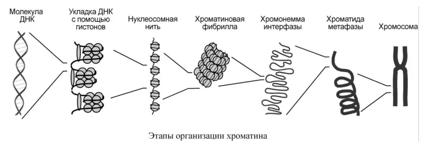
Этапы организации хроматина.
Нуклеиновые кислоты являются полимерными молекулами и состоят из мономеров, называемых нуклеотидами. Нуклеотид содержит фосфорную кислоту — один, два или три остатка, — сахар — рибозу или дезоксирибозу, — азотистое основание — аденин, гуанин, цитозин, урацил либо тимин.
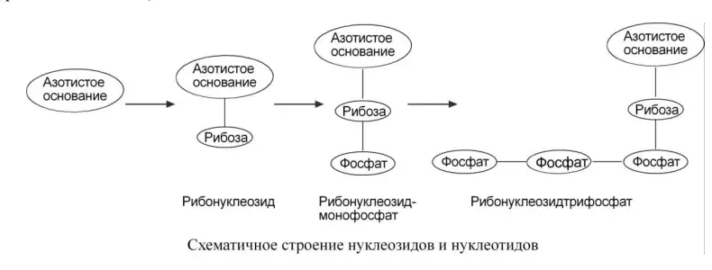
Схематическое строение нуклеозидов и нуклеотидов.
Самым распространённым в природе является нуклеотид аденозинтрифосфат, используемый как высокоэнергетическое соединение для реакций трансмембранного переноса веществ и реакций синтеза.
Связываясь через фосфатные остатки, нуклеотиды образуют длинные цепочки — нуклеиновые кислоты.
Выделяют два вида нуклеиновых кислот в зависимости от пентозы, входящей в их состав, — рибонуклеиновая кислота (РНК) и дезоксирибонуклеиновая кислота (ДНК). Сахарофосфатный остов в ДНК и РНК заряжен отрицательно благодаря заряду фосфатных групп. В то же время пуриновые и пиримидиновые основания гидрофобны.
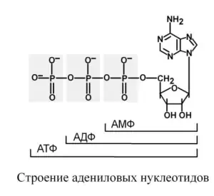
Строение адениловых нуклеотидов.
Цепи ДНК и РНК обладают направленностью, то есть имеют 3′-конец и 5′-конец. В ДНК цепи антипараллельны, то есть направлены в разные стороны. Имеется комплементарность азотистых оснований: аденин комплементарен тимину (A=T), гуанин комплементарен цитозину (Г≡Ц).
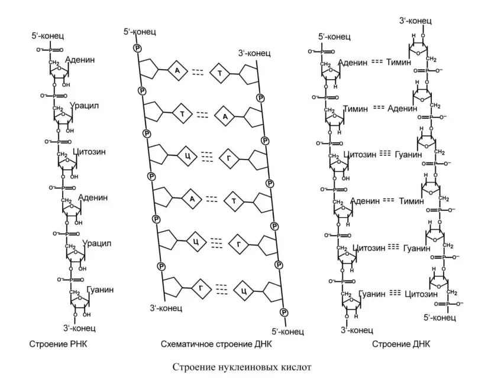
Строение нуклеиновых кислот.
Липопротеины
К липопротеинам, строго говоря, принадлежат только белки, содержащие ковалентно связанные липиды. Однако традиционно к липопротеинам относят и надмолекулярные образования, выполняющие транспортную функцию и состоящие из белков и молекул всех классов липидов, — транспортные липопротеины.
Структуру транспортных липопротеинов можно сравнить с орехом, у которого имеется скорлупа и ядро. «Скорлупа» липопротеина является гидрофильной, ядро — гидрофобное. Ядро формируют неполярные эфиры холестерола и триацилглицеролы. В поверхностном слое — «скорлупе» — находятся фосфолипиды, свободный холестерол, белки.
Белки в липопротеинах называются апобелками, их выделяют несколько видов: A, B, C и D. В каждом типе липопротеинов преобладают соответствующие ему апобелки.
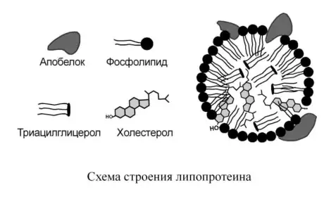
Схема строения липопротеина.
Выделяют четыре основных класса липопротеинов:
хиломикроны (ХМ);
липопротеины высокой плотности (ЛПВП, α-липопротеины, α-ЛП);
липопротеины низкой плотности (ЛПНП, β-липопротеины, β-ЛП);
липопротеины очень низкой плотности (ЛПОНП, пре-β-липопротеины, пре-β-ЛП).
Липопротеины различаются по составу, то есть по соотношению триацилглицеролов, холестерола и его эфиров, фосфолипидов, белков.
Типы липопротеинов
Хиломикроны — до 90% липидов ЛПОНП ЛПНП ЛПВП — до 80% белков
Сверху вниз происходит
Увеличение количества белка Увеличение количества фосфолипидов Уменьшение количества триацилглицеролов
Хромопротеины
Хромопротеины содержат окрашенные простетические группы. Сюда относят гемопротеины — содержат гем, ретинальпротеины — содержат витамин A, флавопротеины — содержат витамин B2, кобамидпротеины — содержат витамин B12.
Гемопротеины
Подразделяются на неферментативные — гемоглобин, миоглобин — и ферменты — цитохромы, каталаза, пероксидаза. Небелковой частью их является гем — структура, включающая в себя порфириновое кольцо, состоящее из 4 пиррольных колец, и ион Fe2+. Железо связывается с порфириновым кольцом двумя координационными и двумя ковалентными связями.
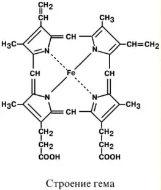
Строение гема.
Цитохромы
Цитохромы отличаются аминокислотным составом пептидных цепей и числом цепей и разделяются на типы a, b, c, d. Все они неспособны связывать кислород, кроме цитохрома a3, который содержит ионы меди. Цитохромы находятся в составе дыхательной цепи митохондрий и цепи микросомального окисления.
Флавопротеины
Флавопротеины являются ферментами окислительно-восстановительных реакций, например сукцинатдегидрогеназа, глицерол-3-фосфатдегидрогеназа. Они в качестве небелковой части содержат производные витамина B2 — флавинмононуклеотид (ФМН) и флавинадениндинуклеотид (ФАД). Флавинадениндинуклеотид представляет комплекс из двух нуклеотидов — аденозинмонофосфата и флавинмононуклеотида.
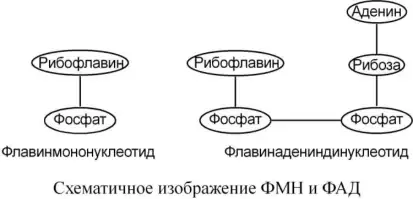
Схематическое изображение ФМН и ФАД.
Металлопротеины
Металлопротеины, кроме белка, содержат ионы одного или нескольких металлов. Металлопротеины часто являются ферментами. Ионы металлов соединены координационными связями с функциональными группами белка и выполняют следующие функции:
участвуют в ориентации субстрата в активном центре фермента;
входят в состав активного центра фермента и участвуют в катализе, например служат акцепторами электронов на определённой стадии ферментативной реакции.
К металлопротеинам, например, относятся белки, содержащие:
медь — цитохромоксидаза, в комплексе с другими ферментами дыхательной цепи митохондрий участвует в синтезе АТФ;
железо — ферритин, депонирующий железо в клетке; трансферрин, переносящий железо в крови; сукцинатдегидрогеназа — фермент цикла трикарбоновых кислот;
цинк — алкогольдегидрогеназа, обеспечивающая метаболизм этанола и других спиртов; лактатдегидрогеназа, участвующая в метаболизме молочной кислоты; карбоангидраза, образующая угольную кислоту из CO2 и H2O; щелочная фосфатаза, гидролизующая фосфорные эфиры различных соединений;
кальций — α-амилаза слюны и панкреатического сока, гидролизующая крахмал.
Гликопротеины (гликоконъюгаты)
Гликопротеины — белки, содержащие углеводный компонент, ковалентно присоединённый к полипептидной основе. Содержание углеводов варьирует от 1 до 85% по массе.
Выделяют два подкласса белков, содержащих углеводы: протеогликаны и гликопротеины. Между этими подклассами имеются существенные отличия:
Гликопротеины
доля углеводов 15–20%;
не содержат уроновых кислот;
углеводные цепи содержат не более 15 звеньев;
углевод имеет нерегулярное строение.
Протеогликаны
доля углеводов 80–85%;
имеются уроновые кислоты;
углеводные цепи крайне велики;
углевод имеет регулярное строение.
Гликопротеины
Для собственно гликопротеинов характерно низкое содержание углеводов. Углеводный остаток является олигосахаридом, имеет нерегулярное строение и содержит маннозу, галактозу, глюкозу и их аминопроизводные, а также N-ацетилнейраминовую кислоту.
Олигосахарид присоединён к аминокислотам белковой цепи либо N-гликозидной связью — к амидному азоту аспарагина, — либо O-гликозидной связью — к гидроксигруппе остатков серина, треонина, гидроксилизина.
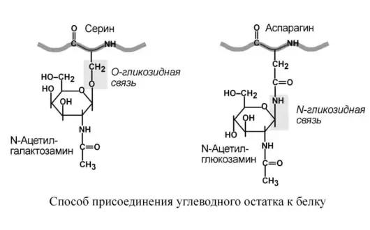
Способ присоединения углеводного остатка к белку.
Функциями гликопротеинов являются:
Структурная — клеточная стенка бактерий, костный матрикс, например коллаген, эластин.
Защитная — например антитела, интерферон, факторы свёртывания крови — протромбин, фибриноген.
Транспортная — перенос веществ в крови и через мембраны, например трансферрин, транскортин, альбумин, Na+,K+-АТФаза.
Гормональная — гонадотропный, адренокортикотропный и тиреотропный гормоны.
Ферментативная — холинэстераза, нуклеаза.
Рецепторная — присоединение эффектора приводит к изменению конформации белка-рецептора, что вызывает внутриклеточный ответ.
Протеогликаны
Другая группа гликопротеинов — протеогликаны — характеризуется наличием полисахаридов, состоящих из повторяющихся дисахаридных остатков.
Дисахариды включают в себя уроновую кислоту и аминосахар. Многократно дублируясь, дисахариды образуют олиго- и полисахаридные цепи — гликаны. В литературе встречаются другие названия — кислые гетерополисахариды, так как имеют много кислотных групп, гликозаминогликаны, так как содержат аминогруппы. Эти молекулы входят в состав протеогликанов — сложных белков, функцией которых является заполнение межклеточного пространства и удержание здесь воды; также они выступают как смазочный и структурный компонент суставов и других тканевых структур.
Углеводная часть, аналогично гликопротеинам, связывается с белком через остатки серина и аспарагина.
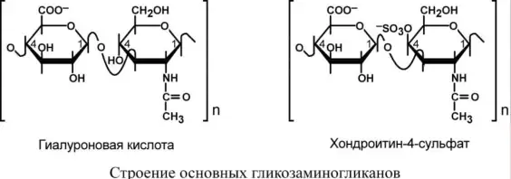
Строение основных гликозаминогликанов.
Основными представителями структурных гликозаминогликанов являются гиалуроновая кислота, хондроитинсульфаты, кератансульфаты и дерматансульфаты. Гепарин используется в антикоагулянтной системе крови.
По функции протеогликаны особенно значимы для межклеточного пространства, особенно соединительной ткани, в которое погружены коллагеновые волокна. При помощи электронной микроскопии выяснено, что они имеют древовидную структуру: в центре находится гиалуроновая кислота, которая через связующие белки присоединяет многочисленные «веточки» из хондроитинсульфатов, кератансульфатов, дерматансульфатов. Молекулы гликанов весьма гидрофильны, создают сетчатый желеподобный матрикс и заполняют пространство между клетками, являясь преградой для крупных молекул и микроорганизмов.
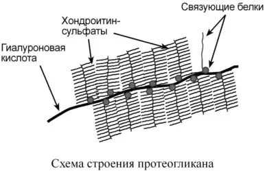
Схема строения протеогликана.
Вопрос 10
Роль ферментов в метаболизме. Современные данные о химической природе ферментов. Изоферменты. Кофакторы ферментов. Общие сведения о классификации и номенклатуре ферментов. Изменчивость изоферментов в онтогенезе.
Определение и роль ферментов в метаболизме
Ферменты — это высокоспециализированные белки, способные повышать скорость реакций в живых организмах. Ферменты являются биологическими катализаторами.
Основу всех жизненных процессов составляют тысячи химических реакций, катализируемых ферментами. Значение ферментов точно и образно определил И. П. Павлов, назвав их «возбудителями жизни».
По своей функции ферменты являются биологическими катализаторами. Энергетически невозможные реакции ферменты катализировать не будут: они ускоряют только те реакции, которые могут идти в данных условиях.
Нарушения в работе ферментов ведут к возникновению тяжёлых заболеваний — фенилкетонурии, гликогенозов, галактоземии, тирозинемии — или существенному снижению качества жизни при дислипопротеинемиях и гемофилиях.
Химическая природа ферментов
Все ферменты являются белками и обладают всеми свойствами белков. Как правило, это глобулярные белки. Подобно другим белкам, ферменты делятся на простые и сложные.
Простые ферменты состоят только из аминокислот. К ним относятся пепсин, трипсин и лизоцим.
Сложные ферменты, или холоферменты, имеют в своём составе белковую часть, состоящую из аминокислот, — апофермент — и небелковую часть — кофактор. Примерами являются сукцинатдегидрогеназа, содержащая ФАД, аминотрансферазы, содержащие пиридоксальфосфат, и пероксидаза, содержащая гем.
Кофакторы ферментов
Кофактор может называться коферментом или простетической группой. Кофакторами чаще всего являются ионы металлов, которые могут прочно связываться с апоферментом, например цинк в карбоангидразе и медь в цитохромоксидазе. Коферменты обычно являются органическими веществами, менее прочно связанными с апоферментом; к ним относятся, в частности, НАД и ФАД.
Кофермент — низкомолекулярная термостабильная часть фермента. Он определяет пространственную укладку апофермента и его активность. Некоторые кофакторы могут переносить электроны и функциональные группы, а также участвовать в образовании дополнительных связей между ферментом и субстратом.
У сложных ферментов в активном центре обязательно расположены функциональные группы кофактора. Кофактор участвует в связывании субстрата или в его превращении. Для осуществления катализа необходим полноценный комплекс апобелка и кофактора: по отдельности катализ они осуществить не могут.
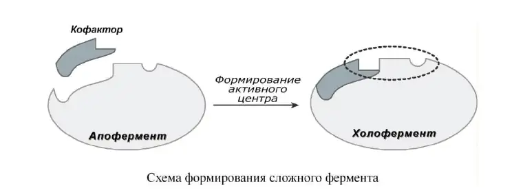
Изоферменты
Изоферменты — это молекулярные формы одного и того же фермента, возникшие в результате небольших генетических различий в первичной структуре фермента, но катализирующие одну и ту же реакцию.
Изоферменты отличаются сродством к субстрату, максимальной скоростью катализируемой реакции, чувствительностью к регуляторам — ингибиторам и активаторам, — а также условиями работы: оптимумом pH и температуры.
Как правило, изоферменты имеют четвертичную структуру, то есть состоят из двух или более субъединиц. Димерный фермент креатинкиназа представлен тремя изоферментными формами, составленными из двух типов субъединиц: M — мышца и B — мозг. Креатинкиназа-1 состоит из двух B-субъединиц и локализуется в головном мозге; креатинкиназа-2 содержит по одной M- и B-субъединице и активна в миокарде; креатинкиназа-3 состоит из двух M-субъединиц и специфична для скелетной мышцы.
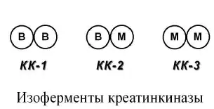
Ещё одним примером изоферментов является группа гексокиназ, присоединяющих фосфатную группу к глюкозе и вовлекающих её в реакции клеточного метаболизма. Из четырёх изоферментов выделяется гексокиназа IV — глюкокиназа, которая отличается низким сродством к глюкозе и нечувствительностью к ингибированию продуктом реакции.
Существует пять изоферментов лактатдегидрогеназы — фермента, участвующего в обмене глюкозы. Они отличаются соотношением субъединиц H — сердце и M — мышца. ЛДГ-1 (H4) и ЛДГ-2 (H3M) присутствуют в тканях с аэробным обменом, обладают высоким сродством к лактату и превращают его в пируват. ЛДГ-4 (HM3) и ЛДГ-5 (M4) находятся в тканях, склонных к анаэробному обмену, обладают низким сродством к лактату и катализируют превращение пирувата в лактат. В тканях с промежуточным типом обмена преобладает ЛДГ-3 (H2M2).
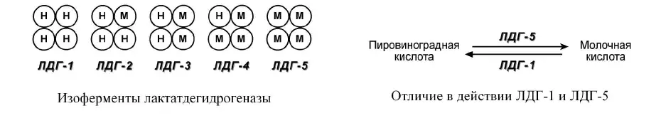
Изменчивость изоферментов в онтогенезе
Изоферменты обеспечивают протекание химических реакций в соответствии с условиями в разных органах. Их выраженная органоспецифичность используется для диагностики заболеваний различных органов.
Возрастные изменения
Изоферменты изменяют свою активность с возрастом. У плода при недостатке кислорода преобладает ЛДГ-3, а с увеличением возраста и поступления кислорода возрастает доля ЛДГ-2.
Классификация ферментов
В 1961 году в Москве V Международный биохимический союз принял классификацию ферментов. В соответствии с этой классификацией ферменты делятся на классы по типу катализируемой реакции; каждый класс подразделяется на подклассы по природе атакуемой химической группы; подклассы делятся на подподклассы по характеру атакуемой связи или по природе акцептора.
Класс
Название
I
Оксидоредуктазы
II
Трансферазы
III
Гидролазы
IV
Лиазы
V
Изомеразы
VI
Лигазы
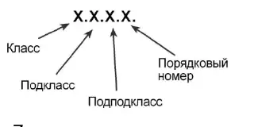
Четырёхзначный классификационный номер: класс, подкласс, подподкласс и порядковый номер.
Каждому ферменту присвоен четырёхзначный классификационный номер. Первая цифра обозначает класс, вторая — подкласс, третья — подподкласс, четвёртая — порядковый номер фермента в подподклассе. Например, лактатдегидрогеназа имеет номер КФ 1.1.1.27.
Номенклатура ферментов
Ферменты имеют несколько типов названий.
Тривиальное название — название, сложившееся исторически: пепсин, трипсин.
Рабочее название. Окончание «-аза» присоединяется к названию субстрата — уреаза, амилаза; к названию связи, на которую действует фермент, — пептидаза, гликозидаза; либо к типу реакции — синтетаза, гидролаза.
Систематическое название строится согласно классификации и отражает тип реакции, субстрат и, при необходимости, кофермент. Например, систематическое название ЛДГ — L-лактат:НАД+-оксидоредуктаза.
Вопрос 11
Механизм действия ферментов. Влияние ферментов на энергию активации и стерический коэффициент. Общие сведения о структуре активных центров ферментов. Роль взаимных конформационных изменений молекул фермента и субстрата.
Механизм действия ферментов
Ферменты обладают рядом общекаталитических свойств: не смещают каталитическое равновесие, не расходуются в процессе реакции и катализируют только термодинамически возможные реакции, в которых исходный энергетический запас молекул больше конечного.
Активный центр — это участок молекулы фермента, который взаимодействует с субстратом и участвует в каталитическом процессе.
В ферментативной реакции можно выделить следующие этапы:
Присоединение субстрата S к ферменту E с образованием фермент-субстратного комплекса E–S.
Преобразование комплекса E–S в один или несколько переходных комплексов E–X.
Превращение переходного комплекса в комплекс фермент-продукт E–P.
Отделение конечных продуктов от фермента.
E + S⇄E–S⇄E–X⇄E–P→E + P
Основные механизмы катализа
Кислотно-основной катализ
В активном центре фермента находятся группы специфических аминокислотных остатков, являющиеся хорошими донорами или акцепторами протонов. Такие группы представляют собой мощные катализаторы многих органических реакций.
Ковалентный катализ
Ферменты реагируют со своими субстратами, образуя при помощи ковалентных связей очень нестабильные фермент-субстратные комплексы, из которых в ходе внутримолекулярных перестроек образуются продукты реакции.
Влияние ферментов на энергию активации
Для осуществления химической реакции необходимо, чтобы реагирующие вещества имели суммарную энергию выше величины, называемой энергетическим барьером реакции. Для характеристики величины энергетического барьера Аррениус ввёл понятие энергии активации.
Преодоление энергии активации достигается либо увеличением энергии взаимодействующих молекул, например нагреванием, облучением или повышением давления, либо снижением требуемых для реакции затрат энергии при помощи катализаторов.
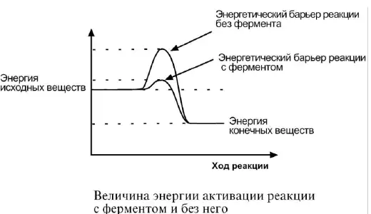
Ферменты снижают энергию активации благодаря образованию промежуточных фермент-субстратных комплексов:
Общая схемаF + S ⇄ FS-комплекс → F + продукты реакции.
Например, энергия активации расщепления H2O2 без ферментов и катализаторов составляет 18 000 ккал/моль. При использовании платины при высокой температуре она снижается до 12 000 ккал/моль, а при участии каталазы — до 2 000 ккал/моль.
Влияние ферментов на стерический коэффициент
Скорость ферментативных реакций определяется энергией активации и рядом других факторов. Константа скорости химической реакции рассчитывается по уравнению:
Уравнение скорости реакцииK = P · Z · e−Ea/(R·T)K — константа скорости реакции; P — пространственный, или стерический, коэффициент; Z — количество взаимодействующих молекул; Ea — энергия активации; R — газовая постоянная; T — абсолютная температура.
Между скоростью реакции и стерическим коэффициентом существует прямая зависимость, а между скоростью реакции и энергией активации — обратная степенная зависимость. Таким образом, механизм действия ферментов сводится к увеличению стерического коэффициента и уменьшению энергии активации.
Стерический коэффициент показывает долю удачных пространственно соответствующих столкновений активных молекул. Например, он равен 0,4, если четыре из десяти столкновений привели к образованию продукта реакции.
Ферменты увеличивают стерический коэффициент, так как изменяют строение молекулы субстрата в фермент-субстратном комплексе, в результате чего комплементарность фермента и субстрата возрастает. Кроме того, активный центр упорядочивает расположение молекул субстрата в пространстве и облегчает протекание реакции.
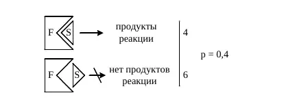
При четырёх результативных столкновениях из десяти стерический коэффициент равен 0,4.
Структура активного центра фермента
Активный центр образован радикалами аминокислот, удалённых друг от друга в первичной структуре белка. Он имеет трёхмерную укладку. В его составе наиболее часто выявляются реакционноспособные OH-группы серина, SH-группы цистеина, NH2-группы лизина и γ-COOH-группы глутаминовой кислоты.
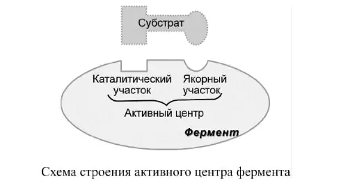
В активном центре различают две зоны:
Зона связывания
Обычно имеет жёсткую пространственную структуру, к которой комплементарно присоединяется субстрат реакции.
Каталитическая зона
Непосредственно воздействует на субстрат и осуществляет каталитическую функцию. Эта зона более подвижна; в ней возможно изменение взаиморасположения функциональных групп.
Взаимные конформационные изменения фермента и субстрата
Для объяснения высокой избирательности ферментов при взаимодействии с субстратом была предложена теория «ключа и замка» Э. Фишера. Согласно ей, фермент взаимодействует с субстратом только при полном соответствии — комплементарности — их структур. Эта теория объясняет специфичность ферментов, но не раскрывает механизм воздействия фермента на субстрат.
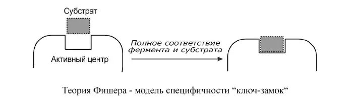
Позже была разработана теория индуцированного соответствия фермента и субстрата Д. Кошланда — модель «рука — перчатка». Активный центр фермента сформирован и содержит функциональные группы ещё до взаимодействия с субстратом, но эти группы находятся в неактивном состоянии.
Присоединение субстрата индуцирует изменение положения и структуры радикалов активного центра. Активный центр переходит в активное состояние и, в свою очередь, воздействует на субстрат. Происходят взаимные изменения фермента и субстрата, вследствие чего субстрат переходит в нестабильное состояние, энергия активации уменьшается и образуются продукты реакции. После отделения продуктов активный центр возвращается в исходное состояние.
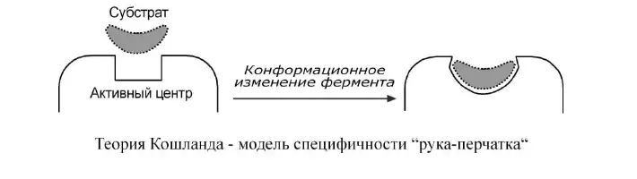
Вопрос 12
Свойства ферментов как биологических катализаторов: специфичность действия, высокая каталитическая активность, зависимость скорости ферментативных реакций от температуры и рН, фотолабильность. Практическое применение этих свойств.
Свойства ферментов как биологических катализаторов
Ферменты, помимо общих свойств с неорганическими катализаторами, имеют определённые отличия от них. К этим отличиям относятся более высокая активность, более высокая специфичность, более мягкие условия для катализа и способность к регуляции активности.
Специфичность действия ферментов
Специфичность основана на комплементарности структуры субстрата и активного центра фермента. Все ферменты обладают специфичностью, однако степень специфичности у разных ферментов различна.
Стереоспецифичность
Катализ только одного из стереоизомеров: специфичность к L- или D-аминокислотам, к цис- и транс-изомерам. Например, аспартаза реагирует только с транс-изомером — фумаровой кислотой, но не с малеатом.
Абсолютная специфичность
Фермент производит катализ только одного вещества. Уреаза расщепляет только мочевину, глюкокиназа фосфорилирует только D-глюкозу.
Групповая специфичность
Катализ субстратов с общими структурными особенностями — при наличии определённой связи или химической группы. Пепсин действует на определённые пептидные связи, алкогольдегидрогеназа окисляет одноатомные спирты.
Относительная групповая специфичность
Превращение субстратов с некоторыми общими признаками. Например, цитохром Р450 окисляет гидрофобные вещества.
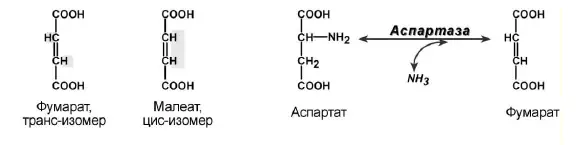
Аспартаза реагирует с транс-изомером — фумаратом, но не с цис-изомером — малеатом.
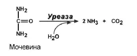
Уреаза расщепляет только мочевину — пример абсолютной специфичности.
Высокая специфичность имеет важное биологическое значение, поскольку обеспечивает упорядоченность химических процессов в организме. Специфичность ферментов лежит в основе их обнаружения в тканях и биологических жидкостях.
Высокая каталитическая активность
Ферменты отличаются высокой каталитической активностью. Например, одна молекула карбоангидразы за одну минуту катализирует образование или расщепление 36 миллионов молекул угольной кислоты H2CO3.
Причина высокой активностиФерменты уменьшают энергию активации и увеличивают пространственный, или стерический, коэффициент.
Высокая активность ферментов имеет важное биологическое значение: они обеспечивают высокую скорость химических реакций в организме.
Зависимость активности ферментов от температуры
ТермолабильностьЗависимость активности ферментов от температуры.
При повышении температуры от 0 до 40 °C активность ферментов возрастает согласно правилу Вант-Гоффа: при повышении температуры на 10 °C скорость реакции увеличивается в 2–4 раза.
При дальнейшем повышении температуры активность начинает снижаться, что объясняется тепловой денатурацией белковой молекулы фермента. При понижении температуры активность ферментов снижается, но не исчезает полностью.
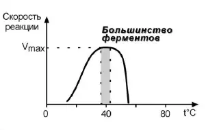
Максимальная скорость достигается при оптимальной для фермента температуре.
Инактивация фермента при низкой температуре обратима, а при высокой температуре она приобретает необратимый характер.
Зависимость активности ферментов от рН
У всех ферментов есть определённый интервал рН, в котором активность максимальна, — оптимум рН. Для каждого фермента существует свой узкий интервал оптимальных значений.
Оптимум рН для пепсина составляет 1,5–2,5, для трипсина — 8,0–8,5, для амилазы слюны — 7,2, для аргиназы — 9,7, для кислой фосфатазы — 4,5–5,0.
Значения оптимума рН различаются у разных ферментов.
При изменении рН изменяется заряд ионогенных групп аминокислот в структуре фермента. Изменение ионизации приводит к нарушению ионных связей и изменению конформации белковой молекулы; вследствие этого субстрат связывается или не связывается с активным центром.
Фотолабильность ферментов
ФотолабильностьЧувствительность ферментов к действию ультрафиолетовых лучей.
Ультрафиолетовые лучи вызывают фотоденатурацию белковых молекул и уменьшают активность ферментов.
Практическое применение свойств ферментов
Свойство
Практическое применение
Специфичность
Используется в лабораторной диагностике. В глюкозооксидазном и холестеролоксидазном методах добавленный фермент взаимодействует с определяемым веществом; по количеству специфичного продукта судят о концентрации этого вещества.
Температурная зависимость
Ферментативные реакции вне организма проводят при фиксированной оптимальной температуре. Понижение температуры используют в криохирургии и при хранении ферментных препаратов. Высокую температуру применяют для разрушения ферментов микроорганизмов при кипячении и автоклавировании.
Зависимость от рН
Ферментативные реакции вне организма проводят при оптимальном рН. При сниженной кислотности желудочного сока с лечебной целью назначают раствор HCl.
Фотолабильность
Фотоденатурация ферментов используется в бактерицидном действии ультрафиолетовых ламп.
Вопрос 13
Зависимость скорости ферментативных реакций от концентрации фермента и субстрата. Уравнение Михаэлиса-Ментен. Константа Михаэлиса, её графическое определение.
Зависимость скорости реакции от концентрации фермента и субстрата
Концентрация фермента
При увеличении количества молекул фермента скорость реакции возрастает непрерывно и прямо пропорционально количеству фермента, так как большее количество молекул фермента образует большее число молекул продукта. Эта зависимость выявляется при избытке субстрата.
Концентрация субстрата
При увеличении концентрации субстрата скорость реакции сначала возрастает, поскольку в катализ включаются новые молекулы фермента. Затем наступает насыщение: все активные центры заняты субстратом, и скорость реакции достигает максимального значения.
При избытке субстрата скорость прямо пропорциональна количеству фермента; при увеличении концентрации субстрата достигается насыщение.
В некоторых случаях при дальнейшем увеличении концентрации субстрата между его молекулами возникает конкуренция за активный центр, и скорость реакции снижается.
Уравнение Михаэлиса-Ментен
Зависимость скорости ферментативной реакции от концентрации субстрата описывает уравнение Михаэлиса-Ментен. Оно показывает взаимосвязь максимальной и реальной скоростей реакции, константы Михаэлиса и концентрации субстрата.
Уравнение Михаэлиса-МентенV = Vmax · [S] / (Km + [S])
V — скорость реакции; Vmax — максимальная скорость реакции; [S] — концентрация субстрата; Km — константа Михаэлиса.
[S] ≪ Km
При малой концентрации субстрата скорость реакции прямо пропорциональна его концентрации. Начальный участок графика имеет практически линейный характер.
[S] = Km
Скорость реакции равна половине максимальной: V = ½Vmax.
[S] ≫ Km
Величиной Km можно пренебречь, и скорость реакции приближается к максимальной — Vmax.
Константа Михаэлиса
Константа Михаэлиса KmЧисленно равна концентрации субстрата, при которой скорость реакции составляет половину максимальной: V = ½Vmax.
Константа Михаэлиса является важной характеристикой фермента и характеризует его сродство к субстрату: увеличение величины Km означает снижение сродства фермента к субстрату. Чем меньше Km, тем выше сродство фермента к субстрату.
Графическое определение константы Михаэлиса
На графике зависимости скорости реакции от концентрации субстрата определяют Vmax.
На оси скорости находят значение ½Vmax и проводят линию до пересечения с кривой.
Из точки пересечения опускают перпендикуляр на ось концентрации субстрата.
Полученное значение [S] соответствует Km.
При V = ½Vmax концентрация субстрата равна Km.
График Лайнуивера-Берка
Для более удобного графического определения используют график двойных обратных величин Лайнуивера-Берка, соответствующий обратному уравнению Михаэлиса-Ментен:
График представляет прямую линию. Точка пересечения с осью 1/V соответствует 1/Vmax, а точка пересечения с осью 1/[S] — −1/Km.
График Лайнуивера-Берка.
Вопрос 14
Активаторы ферментов: механизм действия различных активаторов. Ингибиторы ферментов: обратимые и необратимые, конкурентные и неконкурентные. Применение активаторов и ингибиторов как лекарственных средств.
Активаторы ферментов
АктиваторыВещества, повышающие скорость ферментативных реакций.
Специфические активаторы
Повышают активность одного фермента. Например, HCl является активатором пепсиногена.
Неспецифические активаторы
Увеличивают активность целого ряда ферментов. Ионы Mg2+ активируют гексокиназу, ионы K+ и Na+ — Na+,K+-АТФазу и ряд других ферментов.
В качестве активаторов могут служить ионы металлов, метаболиты и нуклеотиды.
Механизмы действия активаторов
Достраивание активного центра
Активатор достраивает активный центр фермента, вследствие чего облегчается взаимодействие фермента с субстратом. Таким механизмом обладают в основном ионы металлов.
Аллостерическая активация
Активатор взаимодействует с аллостерическим участком фермента, изменяет его структуру и опосредованно изменяет структуру активного центра, увеличивая активность фермента. Аллостерическим эффектом обладают метаболиты ферментативных реакций и АТФ.
Изменение олигомерности
Под действием активатора несколько субъединиц объединяются в олигомерную форму, что резко увеличивает активность фермента. Например, изоцитрат является активатором олигомерного фермента ацетил-КоА-карбоксилазы.
Белок-белковое взаимодействие. Активатором протеинкиназы А является цАМФ. Присоединение цАМФ к регуляторным субъединицам вызывает изменение их конформации и отделение от каталитических субъединиц; каталитические субъединицы при этом активируются.
Активация протеинкиназы А при присоединении цАМФ.
Фосфорилирование и дефосфорилирование. Это обратимая модификация ферментов. Присоединение фосфорной кислоты к белку осуществляют протеинкиназы, отщепление — протеинфосфатазы.
Ферменты могут быть активны как в фосфорилированном, так и в дефосфорилированном состоянии. При фосфорилировании гликогенфосфорилаза становится активной, а гликогенсинтаза — неактивной; при дефосфорилировании активна гликогенсинтаза, а гликогенфосфорилаза неактивна.
Обратимая ковалентная модификация фермента.
Ограниченный протеолиз. Некоторые ферменты синтезируются в виде более крупного неактивного предшественника. При поступлении в нужное место фермент активируется через отщепление одного или нескольких пептидных фрагментов.
При частичном протеолизе от профермента отщепляется фрагмент, блокирующий активный центр. Например, неактивный пепсиноген под действием HCl превращается в активный пепсин. Это необратимая модификация.
При удалении ингибирующего фрагмента открывается активная каталитическая часть.
Ингибиторы ферментов
ИнгибиторВещество, вызывающее специфическое снижение активности фермента.
Неорганические кислоты и тяжёлые металлы, которые неспецифично снижают активность многих ферментов, являются не ингибиторами, а инактиваторами.
По прочности связывания
Ингибирование бывает обратимым и необратимым.
По отношению к активному центру
Ингибирование делят на конкурентное и неконкурентное.
Эти классификации основаны на разных признаках. Конкурентное ингибирование относится к обратимому ингибированию.
Необратимое ингибирование
При необратимом ингибировании происходит связывание или разрушение функциональных групп фермента, необходимых для проявления его активности.
Диизопропилфторфосфат
Прочно и необратимо связывается с гидроксильной группой серина в активном центре ацетилхолинэстеразы, гидролизующей ацетилхолин в нервных синапсах.
Ацетилсалициловая кислота
Присоединяет ацетильную группу к гидроксильной группе серина в активном центре циклооксигеназы, вызывая инактивацию фермента и прекращение синтеза простагландинов.
Ацетилирование серина в активном центре циклооксигеназы.
Конкурентное ингибирование
Конкурентный ингибитор по своей структуре похож на субстрат фермента, поэтому он конкурирует с субстратом за активный центр. Это приводит к уменьшению связывания субстрата с ферментом и нарушению катализа.
Ингибирование можно ослабить повышением концентрации субстрата. Максимальная скорость реакции остаётся достижимой при высокой концентрации субстрата.
Малоновая кислота сходна по строению с янтарной кислотой — субстратом сукцинатдегидрогеназы — и конкурентно угнетает активность этого фермента.
Конкурентный ингибитор уменьшает сродство фермента к субстрату: Km повышается, Vmax не изменяется.
Сукцинат и сходный с ним малонат конкурируют за активный центр.
Другой пример — сульфаниламиды, сходные по структуре с парааминобензойной кислотой. Они конкурентно нарушают её использование бактериальной клеткой для синтеза дигидрофолиевой кислоты.
Неконкурентное ингибирование
Неконкурентный ингибитор присоединяется не в активном центре, а в другом участке молекулы фермента. При этом структура активного центра изменяется так, что после связывания субстрата реакция становится невозможной.
Ингибитор связывается с ферментом независимо от субстрата, поэтому изменение концентрации субстрата не влияет на образование комплекса фермент—ингибитор. Vmax снижается, Km не изменяется; добавление субстрата не восстанавливает работу фермента.
Неконкурентное ингибирование может быть аллостерическим или связано с действием токсинов. Например, цианиды связываются с гемовым железом ферментов дыхательной цепи и блокируют клеточное дыхание.
При конкурентном ингибировании Vmax не изменяется; при неконкурентном — снижается.
Признак
Конкурентное ингибирование
Неконкурентное ингибирование
Место связывания
Активный центр
Другой участок молекулы фермента
Сходство с субстратом
Ингибитор сходен с субстратом
Структурное сходство с субстратом не требуется
Избыток субстрата
Ослабляет ингибирование
Не устраняет ингибирование
Km
Повышается
Не изменяется
Vmax
Не изменяется
Снижается
Применение активаторов и ингибиторов как лекарственных средств
АктиваторПри сниженной кислотности желудочного сока с лечебной целью назначают раствор HCl. Соляная кислота создаёт оптимальную для пепсина среду и активирует пепсиноген.
Средство или группа
Фермент и применение
Ацетилсалициловая кислота
Ингибирует циклооксигеназу; применяется в составе противовоспалительных средств при воспалительных заболеваниях и лихорадочных состояниях.
Сульфаниламиды
Конкурентно нарушают использование парааминобензойной кислоты бактериями; применяются как антибактериальные средства.
Ловастатин
Ингибирует ГМГ-КоА-редуктазу и снижает синтез холестерола.
Ингибирует ксантиноксидазу; применяется для снижения образования мочевой кислоты при гиперурикемии и подагре.
Этанол при отравлении метанолом
Этанол и метанол конкурируют за алкогольдегидрогеназу и вытесняют друг друга из активного центра.
Ингибиторы протеаз
Контрикал и гордокс применяются при панкреатитах.
Ингибиторы холинэстеразы
Физостигмин и прозерин вызывают накопление ацетилхолина; применяются при миастении и нарушениях при невритах и радикулитах.
Ингибиторы АПФ
Каптоприл и эналаприл применяются как антигипертензивные средства.
Ингибитор карбоангидразы
Ацетазоламид используется как мочегонное средство, а также при глаукоме, отёках, эпилепсии, алкалозах и горной болезни.
Вопрос 15
Структурная организация ферментов в клетке. Регуляция активности ферментов в процессе метаболизма: аллостерические механизмы, фосфорилирование-дефосфорилирование, другие механизмы. Физиологическое значение регуляции активности ферментов. Принципы выделения ферментов из тканей, их обнаружения и количественного определения. Единицы активности. Изменение активности ферментов в онтогенезе.
Структурная организация ферментов в клетке
Компартментализация. Сосредоточение ферментов и их субстратов в определённых клеточных структурах и органеллах.
Слаженность обменных процессов обеспечивается структурной разобщённостью ферментов. Отдельные реакции и метаболические пути протекают в тех компартментах, где находятся соответствующие ферменты и субстраты.
Ферменты синтеза нуклеиновых кислот, в том числе ДНК-полимераза.
Лизосомы
Ферменты расщепления веществ: РНКаза, фосфатазы и другие гидролазы.
Ферменты, наиболее активные в определённой клеточной структуре, называются маркерными, или индикаторными. Изменение их активности отражает глубину структурного повреждения ткани.
Мультиферментный комплекс. Несколько прочно связанных ферментов, осуществляющих последовательные реакции. Продукт одной реакции непосредственно передаётся следующему ферменту и становится его субстратом.
Такая организация значительно ускоряет превращение молекул. Примеры: пируватдегидрогеназный и α-кетоглутаратдегидрогеназный комплексы, синтаза жирных кислот.
Последовательная передача промежуточных продуктов между ферментами комплекса.
Регуляция активности ферментов в процессе метаболизма
Активность ферментов в клетке непостоянна. Она изменяется под влиянием внутренних и внешних факторов, обеспечивая приспособление клетки к новым условиям и ответ на гормональные и другие стимулы.
Изменение синтеза ферментов
Медленный механизм, при котором изменяется количество фермента в клетке.
Изменение доступности
Доступность субстрата и фермента изменяется вследствие изменения проницаемости клеточных мембран и распределения веществ между компартментами.
Изменение активности готового фермента
Быстрый механизм, действующий на уже имеющиеся в клетке молекулы фермента; обычно носит обратимый характер.
В многоступенчатых процессах выделяют регуляторные, или ключевые, ферменты, ограничивающие суммарную скорость процесса. Чаще всего это ферменты начальных и конечных стадий метаболического пути.
Аллостерическая регуляция
Аллостерические ферменты состоят из двух и более субъединиц: одни субъединицы содержат каталитический центр, другие являются регуляторными. Присоединение эффектора к регуляторной субъединице изменяет конформацию белка и активность каталитической субъединицы.
Аллостерические ферменты обычно находятся в начале метаболических путей и являются ключевыми. Конечный продукт процесса может подавлять начальный фермент — это обратная отрицательная связь, или ретроингибирование.
Если регулятором служит исходный метаболит или субстрат реакции, говорят о прямой регуляции; она может быть положительной или отрицательной.
Начальные, промежуточные и конечные метаболиты регулируют ключевой фермент пути.
Фосфофруктокиназа регулируется промежуточными и конечными продуктами распада глюкозы. АТФ, лимонная кислота и фруктозо-1,6-бисфосфат являются ингибиторами, а фруктозо-6-фосфат и АМФ — активаторами фермента.
Другой пример: высокие концентрации пуриновых и пиримидиновых нуклеотидов угнетают начальные стадии собственного синтеза. Глюкозо-6-фосфат активирует гликогенсинтазу — конечный фермент синтеза гликогена.
АМФ и фруктозо-6-фосфат активируют фермент, АТФ подавляет его активность.
Фосфорилирование и дефосфорилирование
Ковалентная модификация заключается в обратимом присоединении или отщеплении определённой группы, вследствие чего изменяется активность фермента. Чаще всего такой группой является остаток фосфорной кислоты.
Фосфорилирование происходит по остаткам серина, треонина или тирозина. Фосфатную группу присоединяют протеинкиназы, отщепляют протеинфосфатазы.
Фермент может быть активен как в фосфорилированном, так и в дефосфорилированном состоянии. В мышцах при нагрузке фосфорилирование активирует гликогенфосфорилазу и инактивирует гликогенсинтазу; при отдыхе оба фермента дефосфорилируются, и их активность изменяется в противоположном направлении.
Обратимое присоединение фосфатной группы протеинкиназой и её удаление протеинфосфатазой.
Другие механизмы регуляции
Доступность субстрата или кофермента
Скорость реакции зависит от концентрации реагирующих веществ. Изменение количества одного из субстратов может запускать или прекращать реакцию.
Компартментализация
Реакция становится возможной при сосредоточении фермента и субстрата в одном компартменте.
Генетическая регуляция
Количество фермента меняется вследствие индукции или репрессии его синтеза. Различают конститутивные, индуцируемые и репрессируемые ферменты.
Ограниченный протеолиз
Неактивный предшественник активируется при отщеплении одного или нескольких пептидных фрагментов. Механизм необратим.
Изменение олигомерности
Объединение неактивных мономеров в олигомерную форму может резко увеличивать активность фермента.
Белок-белковое взаимодействие
Регуляторным фактором служит специфический белок, который после собственной активации воздействует на фермент.
Мембранная аденилатциклаза регулируется G-белком. Присоединение гормона к рецептору вызывает последовательную активацию G-белка и аденилатциклазы.
Образующийся цАМФ активирует протеинкиназу А: связывается с её регуляторными субъединицами и вызывает отделение активных каталитических субъединиц.
Гормональный сигнал передаётся от рецептора через G-белок к аденилатциклазе.
Физиологическое значение регуляции активности ферментов
адаптация организма к изменению питания и воздействию факторов окружающей среды;
ответ клеток на гормональные и другие сигналы;
быстрое изменение направления и скорости метаболических процессов;
согласование последовательных реакций посредством ключевых ферментов;
ограничение синтеза конечного продукта по механизму обратной отрицательной связи.
Выделение ферментов из тканей
Поскольку ферменты имеют белковую природу, их выделение основано на общих принципах выделения и фракционирования белков. При этом необходимо сохранять каталитическую активность фермента.
Гомогенизация ткани. Ткань измельчают в холодном буферном растворе. Образец во время работы держат на льду, чтобы уменьшить денатурацию и протеолитическое разрушение фермента.
Получение бесклеточного экстракта. Гомогенат центрифугируют при низкой температуре; клеточные обломки осаждаются, растворимые ферменты остаются в надосадочной жидкости.
Фракционное осаждение. Белки разделяют по растворимости, обычно постепенно добавляя сульфат аммония. Соль добавляют медленно при охлаждении, избегая локально высокой концентрации.
Удаление солей и смена буфера. Используют диализ или гель-фильтрацию на обессоливающей колонке.
Хроматографическая очистка. Применяют ионообменную, гель-фильтрационную и аффинную хроматографию, разделяя белки по заряду, молекулярной массе и специфическому сродству.
Контроль очистки. После каждого этапа определяют общую активность фермента и общее количество белка. Рост удельной активности свидетельствует об очистке; одновременно оценивают выход сохранённой активности.
Критерии хода очистки. Удельная активность = общая активность / масса белка; выход = активность после этапа / исходная активность × 100%; степень очистки = удельная активность после этапа / исходная удельная активность.
Обнаружение ферментов
Обнаружение ферментов основано на их высокой специфичности. Фермент выявляют по факту протекания реакции, которую он катализирует. Например, амилазу обнаруживают по расщеплению крахмала.
Исчезновение субстрата
Определяют уменьшение количества вещества, на которое действует фермент.
Появление продукта
Регистрируют образование специфического продукта реакции.
Изменение кофермента
Измеряют изменение оптических свойств окисленной или восстановленной формы кофермента.
Количественное определение и единицы активности
Концентрация ферментов в клетках очень низка, поэтому обычно определяют не истинную концентрацию фермента, а его активность. Активность оценивают по скорости накопления продукта или убыли субстрата в пересчёте на время и количество исследуемого материала.
Активность ферментаA = количество превращённого субстрата или продукта / (время × масса или объём пробы)
Определение проводят в стандартных условиях: при оптимальном рН, фиксированной температуре, одинаковом времени инкубации и избытке субстрата. В этих условиях скорость реакции прямо пропорциональна концентрации фермента.
Показатель
Определение
Международная единица, МЕ (U)
Количество фермента, превращающее 1 мкмоль субстрата за 1 минуту при заданных условиях.
Катал
Количество фермента, превращающее 1 моль субстрата за 1 секунду.
Удельная активность
Отношение активности фермента к массе белка в препарате.
Молекулярная активность
Число молекул субстрата, превращаемых одной молекулой фермента за единицу времени.
Изменение активности ферментов в онтогенезе
Набор изоферментов, количество ферментов и их активность изменяются в ходе внутриутробного и постнатального развития в соответствии с условиями обмена веществ.
Изоферменты лактатдегидрогеназы
У плода при недостатке кислорода преобладает ЛДГ3. С возрастом и увеличением поступления кислорода возрастает доля ЛДГ2.
Печёночные цитохромы CYP3A
CYP3A7 обладает высокой активностью в печени плода и новорождённого, после рождения его активность снижается. CYP3A4 в печени плода представлен слабо, а его содержание и активность возрастают после рождения.
Энтерокиназа и лактаза
Энтерокиназа выявляется в слизистой тонкой кишки плода примерно с 26-й недели гестации и её активность увеличивается к рождению. Активность лактазы на 26–34-й неделях составляет около 30% активности у доношенного новорождённого.
Гидролазы щёточной каймы
При созревании тонкой кишки возрастает активность щелочной фосфатазы, аминопептидазы N, α-глюкозидазы, дипептидилпептидазы IV и лактаза-флоризингидролазы. Это отражает функциональное созревание кишечного эпителия.
Вопрос 16
Основы клинической ферментологии. Основные типы энзимопатий. Первичные (наследственные) энзимопатии: нарушения обмена при алкаптонурии, фенилкетонурии, гипераммониемии, другие примеры наследственных энзимопатий. Энзимодиагностика, её принципы и задачи. Основные направления энзимотерапии.
Основы клинической ферментологии
Основу жизненных процессов составляют тысячи химических реакций, катализируемых ферментами. Нарушения в работе ферментов приводят к возникновению тяжёлых заболеваний или существенному снижению качества жизни.
Энзимопатии. Состояния, связанные с патологическим изменением активности ферментов. Наиболее часто встречается снижение активности и нарушение определённых метаболических процессов.
Клиническое значение при энзимопатиях может иметь накопление субстрата реакции, недостаток продукта либо оба нарушения одновременно. Накопление субстрата наблюдается, например, при фенилкетонурии, недостаток продукта — при альбинизме, сочетание обоих нарушений — при гликогенозах.
Клиническая ферментология рассматривает патологические изменения активности ферментов, их значение в развитии заболеваний, применение определения ферментативной активности для диагностики и использование ферментов в качестве лекарственных средств.
Основные типы энзимопатий
Тип
Причина и примеры
Первичные, или наследственные
Связаны с генетическим дефектом и наследственным снижением активности фермента. К ним относятся фенилкетонурия, галактоземия, недостаточность лактазы и сахаразы, гликогенозы, наследственные гипераммониемии и липидозы.
Вторичные, или приобретённые
Возникают вследствие заболеваний органов, вирусных инфекций и других причин, нарушающих синтез фермента или условия его работы. Примеры: гипераммониемия при заболеваниях печени, недостаточность ферментов ЖКТ при заболеваниях желудка, поджелудочной железы или желчного пузыря, ферментопатии при недостатке витаминов и их коферментных форм.
Фенилкетонурия
Основной путь превращения фенилаланина начинается с его гидроксилирования с образованием тирозина. Классическая фенилкетонурия наследуется аутосомно-рецессивно и вызывается мутацией, снижающей активность фенилаланин-4-монооксигеназы, обеспечивающей превращение фенилаланина в тирозин.
Гидроксилирование фенилаланина с участием тетрагидробиоптерина.
В тканях и жидкостях организма накапливаются фенилаланин и его производные: фенилпировиноградная, фенилмолочная, фенилуксусная и другие кислоты. Они оказывают прямое токсическое действие на центральную нервную систему, нарушают синтез моноаминовых нейромедиаторов, серотонина, простых и сложных белков.
Ребёнок при рождении выглядит здоровым; заболевание обычно проявляется в возрасте 2–6 месяцев. Отмечаются вялость, сонливость, нарушение мышечного тонуса, судороги, отставание в физическом и нервно-психическом развитии. Характерен необычный «мышиный» запах мочи и пота. Вовремя начатая диетотерапия с ограничением фенилаланина обеспечивает хороший клинический эффект.
Алкаптонурия
Алкаптонурия — генетическая аутосомно-рецессивная энзимопатия. В основе заболевания лежит снижение активности печёночного фермента гомогентизатоксидазы, вследствие чего в организме накапливается гомогентизиновая кислота.
Гомогентизиновая кислота на воздухе окисляется и полимеризуется в меланиноподобное соединение, поэтому наиболее постоянным симптомом является тёмная моча. На пелёнках и белье остаются тёмно-коричневые пятна.
С возрастом гомогентизиновая кислота накапливается в соединительнотканных образованиях, склерах и коже. Возникают охроноз, повреждение хрящей и дегенеративный артрит позвоночника и крупных суставов.
Ферментативные блоки обмена тирозина.
Наследственные гипераммониемии
Наследственные формы гипераммониемии вызваны генетическим дефектом одного из пяти ферментов синтеза мочевины. Аммиак токсичен; при хронической гипераммониемии развивается умственная отсталость, а выраженное повышение его концентрации может привести к коме и смерти.
Последовательные реакции орнитинового цикла.
Недостаточный фермент
Заболевание
Карбамоилфосфатсинтетаза
Гипераммониемия I типа
Орнитинкарбамоилтрансфераза
Гипераммониемия II типа
Аргининсукцинатсинтетаза
Цитруллинемия
Аргининсукцинатлиаза
Аргининсукцинатурия
Аргиназа
Аргининемия
Наиболее часто встречается гипераммониемия II типа, связанная с недостатком орнитинкарбамоилтрансферазы и сцепленная с X-хромосомой. При полном дефекте фермента заболевание начинается в первые 48 часов после рождения. Основные признаки: сонливость, отказ от пищи, рвота, беспокойство, судороги, нарушение координации и дыхательный алкалоз.
Принцип лечения состоит в ограничении белка в диете. Одновременно применяют глутамат, связывающий аммиак, и фенилацетат, образующий с глутамином водорастворимый комплекс, который выводится с мочой.
Другие примеры наследственных энзимопатий
Заболевание
Ферментативный дефект и биохимические последствия
Галактоземия
Генетический дефект галактозо-1-фосфат-уридилтрансферазы, галактокиназы или эпимеразы. Накапливаются галактоза, галактозо-1-фосфат и галактитол; возможны катаракта, поражение печени, почек и нервной системы.
Наследственная недостаточность лактазы или сахаразы
Отсутствует гидролиз соответствующего дисахарида. Возникают осмотическая задержка воды, образование органических кислот и газов; проявлениями служат диарея, рвота, метеоризм и боли в животе.
Гликогенозы
Дефект фермента синтеза или мобилизации гликогена приводит к его накоплению или изменению структуры. Примеры: болезнь фон Гирке — дефект глюкозо-6-фосфатазы; болезнь Мак-Ардля — отсутствие мышечной фосфорилазы; болезнь Помпе — отсутствие лизосомальной α-1,4-глюкозидазы.
Альбинизм
Полный или частичный дефект синтеза тирозиназы, необходимой для образования ДОФА и меланинов. Развиваются депигментация кожи, волос и глаз, светобоязнь и повышенная чувствительность к ультрафиолетовым лучам.
Лейциноз
Ферментативный блок окислительного декарбоксилирования кетокислот, образующихся при распаде лейцина, изолейцина и валина. Недоокисленные кетокислоты выделяются с мочой и придают ей запах кленового сиропа; заболевание сопровождается тяжёлыми неврологическими нарушениями.
Энзимодиагностика: принципы и задачи
Энзимодиагностика. Исследование активности ферментов плазмы крови, мочи и слюны с целью диагностики заболеваний.
Большинство ферментативных процессов локализовано внутри клеток, однако определение активности ферментов внеклеточной среды имеет диагностическое значение. Степень изменения активности ферментов клеточного метаболизма в сыворотке крови зависит от массы поражённого органа, распределения ферментов между тканями и их локализации во внутриклеточных органеллах.
При воспалении в первую очередь выходят цитоплазматические ферменты. При прогрессировании заболевания, некрозе клеток и разрушении органелл в кровь поступают также органелльные ферменты.
Повышение активности
Ускорение синтеза фермента, некроз клеток, снижение выведения или повышение проницаемости клеточных мембран.
Снижение активности
Уменьшение числа клеток, синтезирующих фермент, недостаточность синтеза, усиление выведения или торможение активности протеиназами.
Основные задачи энзимодиагностики — выявить повреждение органа, определить его преимущественную локализацию, оценить глубину процесса и наблюдать его изменение. Для этого устанавливают соотношение активности отдельных ферментов и получают характерные ферментные спектры.
Орган или заболевание
Диагностически значимые ферменты
Инфаркт миокарда
Креатинкиназа, ЛДГ, АсАТ; для сердечной мышцы характерны КК-MB и ЛДГ-1, ЛДГ-2.
Острые гепатиты
Резкое повышение активности АсАТ, АлАТ и альдолазы.
Гепатоциты
АлАТ, глутаматдегидрогеназа, холинэстераза, сорбитолдегидрогеназа.
Поджелудочная железа
α-Амилаза и липаза.
Желчевыводящие пути
Щелочная фосфатаза и γ-глутамилтранспептидаза.
Скелетные мышцы
КК-MM и алкогольдегидрогеназа.
Предстательная железа
Кислая фосфатаза.
Основные направления энзимотерапии
Энзимотерапия. Использование ферментов в качестве лекарственных средств.
Заместительная терапия
Комплексы пепсина, химотрипсина, липазы, амилазы и других ферментов используют при нарушениях переваривания в желудочно-кишечном тракте.
Изменение проницаемости тканей
Гиалуронидазу применяют для размягчения рубцов, восстановления подвижности суставов и рассасывания гематом.
Разжижение секрета и гнойного содержимого
Рибонуклеаза и дезоксирибонуклеаза деполимеризуют нуклеиновые кислоты, разжижают гной и уменьшают вязкость слизи. Трипсин применяют при бронхолёгочных заболеваниях для разжижения густой мокроты.
Фибринолиз
Урокиназа и стрептокиназа восстанавливают проходимость тромбированных кровеносных сосудов.
Удаление некротизированных тканей
Коллагеназу используют для ускорения отторжения некротизированных тканей и очистки трофических язв.
Вопрос 17
Обмен веществ как наиболее характерный признак живой материи. Факторы, влияющие на интенсивность обмена веществ и соотношение процессов ассимиляции и диссимиляции. Основные этапы обмена веществ. Понятие о метаболизме и метаболических путях. Концентрация метаболитов в крови у человека как показатель нормы и патологии. Основные конечные продукты метаболизма и пути их выведения. Методы изучения обмена веществ.
Обмен веществ как признак живой материи
Обмен веществ — совокупность химических процессов в живых организмах.
Метаболизм представляет собой высококоординированную и целенаправленную клеточную активность, обеспеченную участием многих взаимосвязанных ферментативных систем.
Метаболизм выполняет три специализированные функции:
Энергетическая
Снабжение клетки химической энергией.
Пластическая
Синтез макромолекул как строительных блоков.
Специфическая
Синтез и распад биомолекул, необходимых для выполнения специфических клеточных функций.
Анаболизм и катаболизм
Промежуточный, или тканевой, обмен представляет собой превращение всосавшихся в кишечнике продуктов переваривания в соединения, характерные для данного организма, и их использование на различные цели. Метаболизм включает два взаимодополняющих друг друга процесса: катаболизм и анаболизм.
Процесс
Содержание
Энергетическая сторона
Анаболизм (ассимиляция)
Биосинтез белков, полисахаридов, липидов, нуклеиновых кислот и других макромолекул из малых молекул-предшественников.
Сопровождается усложнением структуры и требует затрат энергии АТФ. Для биосинтеза жирных кислот и холестерола необходимы атомы водорода в составе НАДФН.
Катаболизм (диссимиляция)
Расщепление и окисление сложных органических молекул до более простых конечных продуктов.
Сопровождается высвобождением энергии: большая её часть рассеивается в виде тепла, меньшая часть улавливается НАД и ФАД или используется для синтеза АТФ.
В реакциях анаболизма НАДФН передаёт атомы водорода на синтетические реакции и окисляется до НАДФ. Так формируется НАДФ–НАДФН-цикл.
Взаимосвязь катаболических и анаболических реакций через НАДФ–НАДФН.
Благодаря сбалансированности анаболизма и катаболизма в организме поддерживается постоянство концентрации многих химических веществ.
Факторы, влияющие на интенсивность обмена веществ
Фактор
Влияние на обмен веществ
Возраст
Скорость окислительных процессов у детей первого года жизни примерно в три раза выше, чем у взрослых, а в более позднем детском возрасте — примерно в два раза. Это проявляется более высокой потребностью в кислороде, калорийности рациона, скорости обмена АТФ и активности ферментов энергетического обмена.
Поступление кислорода и питательных веществ
Их недостаток снижает энергетический обмен и может приводить к гипоэргическим состояниям.
Состояние митохондрий
Повреждение митохондрий и разобщение окислительного фосфорилирования уменьшают образование АТФ.
Гормональная регуляция
Инсулин, гормоны щитовидной железы, надпочечников, гипофиза и половых желёз изменяют интенсивность обмена углеводов, липидов и белков. Высокие концентрации тиреоидных гормонов способствуют разобщению окисления и фосфорилирования.
Функциональное состояние организма
Рост, беременность и восстановление сопровождаются преобладанием синтетических процессов; при голодании и заболеваниях может усиливаться распад веществ. Интенсивная мышечная работа усиливает синтез мышечных белков.
Соотношение ассимиляции и диссимиляции. Если синтез белков равен их распаду, количество поступающего и выводимого азота одинаково. При преобладании синтеза развивается положительный азотистый баланс, при преобладании распада — отрицательный.
Основные этапы обмена веществ
1. Питание
Поступление в организм питательных веществ, их переваривание и усвоение.
2. Промежуточный обмен
Превращение всосавшихся продуктов переваривания в соединения организма и их использование на различные цели.
3. Конечный этап
Образование и выведение конечных продуктов обмена.
Эти этапы характеризуют обмен веществ в организме в целом. От них следует отличать три этапа катаболизма органических веществ.
Три этапа катаболизма
I этап. Происходит в кишечнике при переваривании пищи или в лизосомах при расщеплении ненужных молекул. Белки распадаются до аминокислот, углеводы — до моносахаридов, липиды — до глицерина и жирных кислот. Освобождается около 1% энергии, заключённой в молекуле; она рассеивается в виде тепла.
II этап. Вещества, образованные при гидролизе или поступающие в клетку из крови, обычно превращаются в пировиноградную кислоту, ацетильную группу в составе ацетил-КоА и некоторые другие мелкие органические молекулы. Этап протекает в цитозоле и митохондриях. Часть энергии рассеивается в виде тепла, около 13% энергии вещества запасается в макроэргических связях АТФ.
III этап. Все реакции идут в митохондриях. Ацетил-КоА включается в цикл трикарбоновых кислот и окисляется до углекислого газа. НАДН и ФАДН₂ переносят водород в цепь дыхательных ферментов внутренней мембраны митохондрий. В результате окислительного фосфорилирования образуются вода и АТФ. Около 46% энергии исходного вещества запасается в связях АТФ и ГТФ.
Этапы биологического окисления основных органических веществ.
Метаболические пути
Метаболический путь — последовательность ферментативных реакций, в которой продукт одной реакции становится субстратом последующей.
Отдельные пути взаимосвязаны общими промежуточными продуктами. При катаболизме углеводов, липидов и аминокислот образуются пируват и ацетил-КоА. Ацетил-КоА поступает в цикл трикарбоновых кислот, а восстановленные НАДН и ФАДН₂ передают водород в дыхательную цепь.
Разные участки метаболических путей разделены пространственно: переваривание пищи происходит в желудочно-кишечном тракте, внутриклеточное расщепление ненужных молекул — в лизосомах, реакции второго этапа катаболизма — в цитозоле и митохондриях, реакции третьего этапа — в митохондриях.
Метаболиты крови как показатели нормы и патологии
Благодаря сбалансированности обменных процессов поддерживается постоянство концентрации многих химических веществ. При заболеваниях наблюдаются отклонения в содержании различных веществ, что используется с диагностическими целями.
Метаболит
Какой процесс характеризует его концентрация
Глюкоза
Состояние углеводного обмена; повышение или снижение концентрации свидетельствует о нарушении поддержания гликемии.
Холестерол и липиды
Состояние липидного обмена и транспорта липидов в составе липопротеинов.
Мочевина и остаточный азот
Интенсивность азотистого обмена, образование конечных азотистых продуктов и их выведение почками.
Креатинин
Обмен креатина в мышцах и выведение продуктов обмена почками.
Мочевая кислота
Распад пуриновых нуклеотидов и выведение его конечного продукта.
Билирубин
Распад гемоглобина, превращение и выведение жёлчных пигментов.
Аммиак
Образование и обезвреживание азота аминокислот.
Конечные продукты обмена и пути их выведения
К основным конечным продуктам обмена относятся вода, углекислый газ, соли аммония, мочевина и мочевая кислота.
Конечный продукт
Основной путь выведения
Углекислый газ
Выводится через лёгкие с выдыхаемым воздухом.
Вода
Выводится главным образом почками, а также путём испарения с поверхности кожи, через лёгкие и кишечник.
Мочевина, соли аммония, мочевая кислота
Выводятся преимущественно почками в составе мочи.
Продукты обмена, поступающие с жёлчью
Выводятся через кишечник; часть их после превращений может всасываться и повторно поступать в обмен.
По количеству выделяемых конечных продуктов через почки и кишечник оценивают состояние обмена веществ.
Методы изучения обмена веществ
Определение метаболитов
Измерение концентрации веществ в крови и моче и сопоставление полученных значений с нормальными показателями.
Изучение конечных продуктов
Определение количества воды, углекислого газа и азотистых продуктов, образующихся и выводимых из организма.
Балансовый метод
Сопоставление количества поступившего и выделенного вещества. Азотистый баланс определяют по соотношению поступающего в организм и выводимого из него азота.
Функциональные пробы
Изучение изменения показателя после дозированной нагрузки; примером служит глюкозотолерантный тест.
Определение активности ферментов
Активность оценивают по скорости ферментативной реакции в оптимальных условиях; изменение активности ферментов в биологических жидкостях используют для диагностики.
Вопрос 18
Биохимия питания. Состав пищи человека. Органические и минеральные компоненты пищи. Основные пищевые вещества (суточная потребность, сущность переваривания, частичная взаимозаменяемость при питании). Незаменимые компоненты основных пищевых веществ. Минорные компоненты пищи. Региональные патологии, связанные с недостатком микроэлементов в пище и воде. Особенности метаболизма и нормы питания детей раннего возраста.
Биохимия питания
Наука о питании — нутрициология. Биохимия питания изучает качественный и количественный состав пищевых веществ, их биологическую роль и биохимические последствия недостатка или избытка питательных веществ.
Питание выполняет пластическую и энергетическую функции, служит источником биологически активных веществ и обеспечивает иммунные реакции организма.
Состав пищи человека
Принцип классификации
Группы пищевых веществ
По химической природе
Органические вещества — белки, липиды, углеводы, витамины; минеральные вещества.
По количественной потребности
Основные вещества, или макронутриенты, — белки, липиды и углеводы; минорные компоненты, или микронутриенты, — витамины и микроэлементы.
По способности к синтезу в организме
Заменимые и незаменимые компоненты.
Требования к рациональному питанию
Энергетическая достаточность
Энергетическая ценность пищи должна соответствовать энергетическим затратам организма.
Полноценность
Пища должна содержать незаменимые компоненты.
Биологическая активность
Рацион должен содержать витамины и микроэлементы.
Сбалансированность
Соотношение белков, липидов и углеводов у взрослых составляет 1:1:4, у детей первого года жизни — 1:2:4.
Безопасность
Пища не должна содержать токсичных и вредных для здоровья компонентов.
Основные пищевые вещества
Вещество
Суточная потребность взрослого
Пищевая и биологическая характеристика
Белки
100–120 г
Обеспечивают около 15% энергетических затрат. Служат источником аминокислот, необходимых для синтеза собственных белков и других азотсодержащих соединений. Не менее половины пищевых белков должны составлять белки животного происхождения.
Липиды
70–100 г
Выполняют энергетическую и пластическую функции, входят в состав мембран, служат источником незаменимых ПНЖК. Не менее четверти пищевых липидов должны составлять растительные масла.
Углеводы
400–600 г
Являются основным источником энергии. Незаменимых углеводов нет, однако растительная пища содержит необходимые для нормальной работы кишечника пищевые волокна.
Различия в приводимых нормах. В другом используемом учебном источнике указаны 350–400 г углеводов и 80–100 г липидов в сутки, причём пищевых волокон должно быть не менее 30–40 г. В основной таблице сохранены кафедральные нормативы.
Сущность переваривания основных пищевых веществ
Белки
Переваривание начинается в желудке и продолжается в двенадцатиперстной и тонкой кишке. Оно заключается в ферментативном гидролизе пептидных связей с образованием аминокислот.
Углеводы
Полисахариды и дисахариды гидролизуются амилазами и дисахаридазами до моносахаридов, способных всасываться в кишечнике.
Липиды
Пищевые жиры эмульгируются компонентами жёлчи, гидролизуются липазами и другими ферментами. Продукты переваривания образуют смешанные мицеллы и всасываются в энтероциты.
Образование продуктов переваривания липидов и смешанных мицелл.
Частичная взаимозаменяемость при питании
Белки, липиды и углеводы частично взаимозаменяемы как источники энергии. Избыток углеводов может использоваться для синтеза жирных кислот и триацилглицеролов. Глицерин и ряд аминокислот способны включаться в образование глюкозы. Достаточное поступление углеводов и липидов уменьшает расход белков на энергетические нужды.
Взаимозаменяемость ограничена: организм не может компенсировать отсутствие в пище незаменимых аминокислот, незаменимых полиненасыщенных жирных кислот, витаминов и минеральных веществ.
Отсутствие хотя бы одной незаменимой аминокислоты препятствует использованию других аминокислот для синтеза белка.
Липиды
Линолевая и линоленовая полиненасыщенные жирные кислоты.
Используются для построения мембранных липидов и образования биологически активных эйкозаноидов.
Углеводы
Незаменимых углеводов нет.
Пищевые волокна усиливают моторику кишечника, создают чувство сытости, служат субстратом для бродильной микрофлоры и адсорбируют многие токсичные вещества.
Полноценные пищевые белки содержат весь набор незаменимых аминокислот в необходимом соотношении и хорошо перевариваются в желудочно-кишечном тракте. Этим требованиям в большей степени отвечают белки животного происхождения.
Минеральные и минорные компоненты пищи
Минеральные вещества делятся на макроэлементы и микроэлементы; пограничной считают концентрацию 0,01%.
Группа
Представители и значение
Макроэлементы
Кальций, фосфор, натрий и калий выполняют пластическую функцию, определяют физико-химические свойства биологических жидкостей, участвуют в свёртывании крови и нервно-мышечной возбудимости.
Микроэлементы
Железо, цинк, медь, фтор, йод и другие элементы выполняют регуляторную функцию для ферментов, входят в состав гормонов и сложных белков. Йод входит в состав тиреоидных гормонов, железо — в состав гемоглобина.
Витамины
Минорные компоненты пищи, выполняющие регуляторную роль в обмене веществ; многие из них входят в состав коферментов.
Региональные патологии при недостатке микроэлементов
Источником минеральных веществ являются растения и почвенная вода. Поэтому в регионах с недостатком определённых микроэлементов в почве, пище и воде развиваются эндемические заболевания.
Недостаток йода
Вызывает эндемический зоб. Щитовидная железа компенсаторно увеличивается, обычно развивается снижение её функции.
Недостаток фтора
Способствует развитию кариеса.
Нормы питания детей раннего возраста
У детей энергетические затраты в расчёте на массу тела выше, чем у взрослых. Организм ребёнка более чувствителен к недостатку незаменимых компонентов, витаминов и микроэлементов.
Показатель
0–6 месяцев
6–12 месяцев
Энергетическая потребность
120–125 ккал/кг
110 ккал/кг
Белки
2–4 г/кг; в первые месяцы все пищевые белки должны быть полноценными
Липиды
6–7 г/кг
5–6 г/кг
Углеводы
12–14 г/кг
Соотношение Б:Ж:У
1:2:4
Недостаток белка в детском возрасте приводит к задержке роста, замедлению умственного развития и нарушению гемопоэза. Избыточное поступление белка также нежелательно, поскольку увеличивает нагрузку на печень и почки. Недостаток ПНЖК нарушает деятельность центральной нервной системы, снижает иммунитет и изменяет различные виды обмена.
Особенности пищеварения и обмена у грудных детей
Переваривание белков в желудке менее активно, чем у взрослых, поскольку снижены активность пепсина и образование соляной кислоты. Кроме пепсина участвуют химозин, гастриксин, катепсины и протеазы грудного молока. Снижена активность протеолитических ферментов поджелудочной железы и слизистой кишечника.
У детей могут всасываться не только аминокислоты, но также пептиды и низкомолекулярные белки. Это обеспечивает поступление иммуноглобулинов грудного молока, но одновременно может способствовать развитию аллергических реакций.
Коротко- и среднецепочечные жирные кислоты молока могут всасываться без образования мицелл непосредственно в воротную вену. Лактоза и олигосахариды грудного молока способствуют развитию бифидофлоры кишечника.
Химический состав и значение грудного молока
Молозиво отличается небольшим объёмом, высокой плотностью и калорийностью. По сравнению со зрелым молоком в нём меньше лактозы, жира и водорастворимых витаминов, но больше белков, жирорастворимых витаминов, натрия, цинка, природных антиоксидантов, иммуноглобулинов и других защитных факторов.
Зрелое молоко начинает образовываться на 3–14-й день лактации и содержит около 400 органических и минеральных компонентов.
Компоненты
Особенности и значение
Белки
Среднее содержание — 11,5 г/л. Представлены преимущественно α-лактоальбумином, лактоферрином и иммуноглобулинами. Соотношение сывороточных и казеиновых белков обеспечивает образование мягкого творожистого сгустка и облегчает переваривание.
Липиды
Около 40–45 г/л; находятся в виде тонкой эмульсии. Преобладают триацилглицеролы и ненасыщенные жирные кислоты, имеются фосфолипиды, холестерол, карнитин и ПНЖК. Обеспечивают 35–50% энергетической потребности ребёнка.
Углеводы
68–74 г/л; около 85% приходится на лактозу. Лактоза обеспечивает около 40% энергетической потребности и способствует всасыванию минеральных веществ. Олигосахариды поддерживают рост молочной и бифидофлоры и препятствуют адгезии патогенных микроорганизмов.
Витамины и минералы
При правильном питании матери обычно соответствуют потребностям ребёнка. Содержание ряда минералов мало зависит от рациона матери; несмотря на сравнительно низкое содержание железа, цинка, марганца и йода, их поступление в первые месяцы грудного вскармливания достаточно.
Защитные факторы, регуляторы метаболизма и факторы роста грудного молока.
Вопрос 19
Витамины. История открытия и изучения. Классификация, биологические функции. Алиментарные и вторичные авитаминозы и гиповитаминозы. Гипервитаминозы. Биохимия витамина А. Витаминзависимые и витаминрезистентные состояния.
Витамины: определение и история открытия
Витамины — группа низкомолекулярных веществ разнообразной природы, необходимых для биохимических реакций, обеспечивающих рост, выживание и размножение организма. Витамины являются минорными компонентами пищи и выполняют регуляторную роль в обмене веществ.
Термин «витамины» возник в связи с тем, что первый витамин, открытый К. Функом в 1911 году, содержал аминогруппу и предотвращал развитие полиневрита.
Классификация витаминов
Группа
Представители
Общие особенности
Жирорастворимые
A, D, E, K, F
Для всасывания необходимы липиды и жёлчные кислоты. При избыточном поступлении способны накапливаться и вызывать гипервитаминозы.
Водорастворимые
B₁, B₂, B₃, B₅, B₆, B₉, B₁₂, H, C
Многие входят в состав коферментов и непосредственно участвуют в ферментативных реакциях.
Витаминоподобные вещества
Убихинон, холин, биофлавоноиды, инозит, карнитин, липоевая, оротовая и другие кислоты
Выделяются в дополнительную группу витаминоподобных соединений.
Для обозначения витаминов используют буквы латинского алфавита, названия, отражающие химическую природу вещества, и названия с приставкой «анти-», указывающие на заболевание, возникающее при его отсутствии.
Общие свойства и биологические функции
В организме человека витамины обычно не образуются и должны поступать с пищей. Исключениями являются витамин PP, который может синтезироваться из триптофана, и витамин D, образующийся из холестерола.
Витамины не являются пластическим материалом и не служат источником энергии; исключением в обоих случаях считают витамин F.
Они необходимы для жизненных процессов и биологически активны в малых количествах.
Витамины влияют на биохимические процессы во многих тканях и органах, то есть не обладают органной специфичностью.
Коферментная функция
Витамин PP входит в состав НАД и НАДФ, витамин B₂ — в состав ФМН и ФАД; другие витамины также образуют коферментные формы.
Регуляторная функция
Витамины и их производные могут быть аллостерическими регуляторами ферментов и влиять на экспрессию генов.
Участие в сложных соединениях
Витамин A в форме ретиналя входит в состав зрительного пигмента родопсина.
Антиоксидантная функция
Витамины A, E и C участвуют в нейтрализации свободных радикалов.
Основные этапы обмена витаминов
Всасывание
Для некоторых витаминов имеются специальные белки-переносчики; во всасывании жирорастворимых витаминов участвуют жёлчные кислоты.
Транспорт
Для жирорастворимых витаминов необходимы транспортные белки; витамин A переносится ретинолсвязывающим белком.
Активация в тканях
Витамины превращаются в биологически активные формы и встраиваются в состав коферментов.
Инактивация и выведение
Инактивация происходит преимущественно в печени, продукты распада выводятся через почки.
Авитаминозы и гиповитаминозы
Авитаминоз — патологическое состояние, развивающееся при отсутствии витамина в пище либо при тяжёлом нарушении его усвоения и обменных превращений. Гиповитаминоз возникает при недостаточном поступлении, частичном нарушении обмена витамина или повышенной потребности в нём.
Форма недостаточности
Причины
Алиментарная, или экзогенная
Нерациональное питание и недостаточное поступление витамина с пищей.
Вторичная, или эндогенная
Нарушение всасывания при заболеваниях желудочно-кишечного тракта; заболевания печени и жёлчного пузыря; дисбактериоз, гельминтозы; повышенная потребность при беременности, лактации и физических нагрузках; генетические дефекты кофермент-образующих ферментов.
Алиментарную недостаточность корректируют продуктами и препаратами, содержащими недостающий витамин. При нарушении всасывания витаминные препараты могут вводить парентерально, минуя желудочно-кишечный тракт.
Гипервитаминозы
Гипервитаминоз — патологическое состояние, возникающее вследствие избыточного поступления витамина в организм.
Особенно легко накапливаются жирорастворимые витамины. Общими проявлениями гипервитаминозов могут быть потеря аппетита, расстройства желудочно-кишечного тракта, сильные головные боли, повышенная возбудимость нервной системы, выпадение волос и шелушение кожи. Наиболее выраженная картина гипервитаминоза характерна для витаминов A и D.
Витамин A: источники, потребность и активные формы
Витамин A — ретинол, антиксерофтальмический витамин. Ретиноиды представляют собой β-иононовое кольцо с метильными заместителями и изопреновой цепью.
Показатель
Характеристика
Пищевые источники ретинола
Рыбий жир, печень морских рыб, печень крупного рогатого скота и свиньи, жирномолочные продукты, желток яиц.
Источники каротиноидов
Морковь, красный перец, томаты, пальмовое и облепиховое масла.
Суточная потребность
1,0–2,5 мг, или около 5000 ЕД.
Превращения
После всасывания каротиноиды в печени и кишечнике превращаются в ретинол; из β-каротина образуются две молекулы витамина A. Спиртовая группа ретинола окисляется с образованием ретиналя и ретиноевой кислоты.
Ретинол, ретиналь, ретиноевая кислота и β-каротин.
Биологические функции витамина A
Регуляция экспрессии генов
Ретиноевая кислота служит лигандом ядерных рецепторов и необходима для экспрессии генов, участвующих в реакции клетки на гормоны и ростовые стимулы. Она регулирует нормальный рост и дифференцировку клеток эмбриона и молодого организма, стимулирует деление и дифференцировку хрящевой и костной тканей, эпителия кожи и слизистых оболочек, сперматогенного эпителия, плаценты и клеток иммунной системы.
Участие ретиноевой кислоты в регуляции роста и дифференцировки клеток.
Участие в фотохимическом акте зрения
11-цис-ретиналь в комплексе с белком опсином образует родопсин — зрительный пигмент палочек сетчатки, обеспечивающих чёрно-белое сумеречное зрение. Под действием света родопсин распадается на опсин и полностью транс-ретиналь, при этом возникает электрический сигнал. Затем транс-ретиналь ферментативно превращается в 11-цис-ретиналь и вновь соединяется с опсином.
Превращения ретиналя в фотохимическом акте зрения.
Антиоксидантная функция
Благодаря двойным связям в изопреновой цепи витамин A участвует в нейтрализации свободных кислородных радикалов; особенно выражена эта функция у каротиноидов.
Гиповитаминоз и авитаминоз A
Причиной может быть недостаток витамина A в пище, нехватка витаминов E и C, защищающих ретинол от окисления, а также гипотиреоз, при котором снижается активность железосодержащих ферментов превращения каротиноидов в ретинол.
Нарушение темновой адаптации — куриная слепота.
Задержка роста, похудание и истощение.
Кожа: гиперкератоз, сухость и шелушение, склонность к вторичным гнойным процессам.
Глаза: ксерофтальмия вследствие ороговения и закупорки слёзного канала; воспаление и кератомаляция роговицы.
Слизистые оболочки: нарушение синтеза гликопротеинов и барьерной функции эпителия желудочно-кишечного тракта, дыхательных и мочеполовых путей.
Репродуктивная система: нарушение сперматогенеза и репродуктивной функции.
Гипервитаминоз A
Основной причиной является избыточный приём витамина A в составе витаминных препаратов и, реже, пищи.
Острое отравление сопровождается головной болью, тошнотой, слабостью, ступором, отёком соска зрительного нерва вследствие ликворной гипертензии и повышением температуры.
Хроническое отравление проявляется нарушением пищеварения, потерей аппетита и массы тела, сухим дерматитом и ломкостью костей. В высоких дозах витамин A обладает нефротоксичностью, канцерогенностью и эмбриотоксичностью.
Витаминзависимые и витаминрезистентные состояния
Витаминзависимые состояния связаны с генетическими дефектами ферментов, использующих витамин или образованную из него коферментную форму. При снижении сродства фермента к коферменту активность реакции может повышаться при назначении увеличенных доз соответствующего витамина.
Витаминрезистентные состояния наблюдаются, в частности, в детском возрасте при нарушении превращения витамина в активную форму или его включения в состав кофермента. Обычные дозы витамина не устраняют нарушение; используют готовые коферментные формы витаминов.
Вопрос 20
Краткая история развития учения о биологическом окислении. Кислород как акцептор электронов: образование воды, пероксида водорода и радикальных форм кислорода. Роль активных форм кислорода в бактерицидном действии фагоцитирующих лейкоцитов. Защитные ферменты СОД, каталаза, глютатионпероксидаза.
Биологическое окисление
Определение
Биологическое окисление — совокупность окислительных процессов, протекающих в живых организмах.
Биологическое окисление выполняет ряд важных функций:
EЭнергетическая
Окислительные процессы снабжают биологические процессы энергией.
SБиосинтетическая
Путём окислительных реакций могут синтезироваться новые вещества, необходимые для организма.
DОбезвреживающая
Путём окислительных реакций многие вещества лишаются своей токсичности.
По современным представлениям процесс окисления веществ заключается в потере ими электронов. Вещество, теряющее электроны, — донор электронов, вещество, присоединяющее электроны, — акцептор электронов. У аэробных организмов конечным акцептором электронов служит кислород. У анаэробных организмов электроны переносятся не на кислород, а на другие вещества.
Краткая история учения о биологическом окислении
Перекисная теория А. Н. Баха
На первых этапах изучения процессов окисления были предложены теории активации кислорода, в которых предполагался механизм его активации, поскольку кислород в организме является более активным окислителем, чем вне организма. К теориям этого направления относится перекисная теория А. Н. Баха. Согласно ей, в организме имеются вещества, которые, взаимодействуя с молекулярным кислородом, образуют перекисные соединения, в которых кислород становится более активным.
Образование перекисного соединения при взаимодействии вещества с молекулярным кислородом.
Впоследствии кислород в составе перекиси окисляет многие субстраты в организме. В результате к окисленному веществу присоединяется кислород. Эта теория носит частный характер.
Теория дегидрирования А. В. Палладина
Согласно теории дегидрирования, вещества окисляются не путём присоединения кислорода, а путём потери атомов водорода. В первую, анаэробную, фазу окисления происходит перенос атомов водорода с субстрата (RH2) на акцептор (X) при участии ферментов дегидрогеназ.
Анаэробная и аэробная стадии окисления по теории дегидрирования.
Во вторую, аэробную, стадию атомы водорода переносятся с восстановленного акцептора (XH2) на кислород. Акцептор при этом окисляется и повторно участвует в дегидрировании субстрата. По теории Палладина допускалось участие в окислительных процессах кислорода воды. Эта теория более универсальна и положена в основу современных представлений о биологическом окислении.
Кислород как конечный акцептор электронов
Митохондрии поглощают до 80–90% всего потребляемого клеткой кислорода. Компоненты внутримитохондриального окисления встроены во внутреннюю мембрану митохондрий в определённой последовательности и образуют цепи переноса электронов.
Цитохромоксидаза является конечным, терминальным, участком цепи переноса электронов и переносит электроны непосредственно на кислород. Под действием цитохромоксидазы на молекулу кислорода переносятся четыре электрона. Восстановленная форма кислорода затем взаимодействует с четырьмя протонами с образованием воды.
Полное восстановление
O2 + 4e− → 2O2− 2O2− + 4H+ → 2H2O
В конце дыхательной цепи электроны попадают на кислород и восстанавливают его до воды.
Неполное восстановление
O2 + 1e− → O2•− O2 + 2e− → O22−
При неполном восстановлении возникают активные формы кислорода; после присоединения протонов к пероксидной форме образуется пероксид водорода.
Активные формы кислорода
Окисление с участием оксидаз происходит в основном на внешней мембране митохондрий. Оксидазы — аэробные флавиновые дегидрогеназы, которые переносят электроны от окисляемых субстратов по короткой цепи на кислород. Примерами являются окисление некоторых аминокислот аминокислотоксидазами, аминов — аминооксидазами, ксантина — ксантиноксидазой. В результате такого окисления в тканях образуются активные формы кислорода.
Супероксидный анион-радикал
O2 + 1e− → O2•−
Пероксидная форма
O2 + 2e− → O22−; при присоединении протонов образуется H2O2.
Гидроксильный радикал
O2•− + H2O2 → O2 + OH• + OH−
Пероксинитрит
Сильный окислитель ONOO−, образующийся с участием NO, участвует в фагоцитозе.
В физиологических условиях образуется очень небольшое количество активных форм кислорода. Они регулируют проницаемость клеточных мембран путём окисления липидов в составе мембран, влияют на активность мембранных ферментов и участвуют в синтезе биологически активных эйкозаноидов.
При высокой концентрацииАктивные формы кислорода оказывают токсический эффект, окисляют липиды, белки и нуклеиновые кислоты. Окисление клеточных липидов под действием АФК называется перекисным окислением липидов и представляет собой цепную реакцию, в которой образование одного свободного радикала стимулирует образование других.
Бактерицидное действие АФК в фагоцитирующих лейкоцитах
Особенно важную роль в физиологических условиях активные формы кислорода играют в фагоцитозе, принимая участие в нескольких механизмах уничтожения чужеродных веществ и микроорганизмов.
Мембранная флавиновая оксидаза
При контакте с чужеродными веществами в фагоцитах активируется мембранная флавиновая оксидаза. Под её действием образуются супероксидные анион-радикалы, вызывающие окисление чужеродного вещества.
Миелопероксидаза
В фагоцитах активируется миелопероксидаза. Путём окисления хлоридов через образование HClO она образует активный кислород, который окисляет чужеродные вещества, повышает проницаемость мембран фагоцитов и облегчает эндоцитоз.
Пероксинитрит
Образующийся с участием NO сильный окислитель пероксинитрит ONOO− также участвует в фагоцитозе.
Дефензины
Пептиды-дефензины формируют в оболочках поглощаемых микроорганизмов дополнительные ионные каналы и способствуют разрушению микроорганизмов.
Бактерицидные механизмы окислительного взрыва.
Защитная антиокислительная система
Для разрушения избыточных концентраций активных форм кислорода в организме существует защитная антиокислительная система. Она представлена ферментами и веществами неферментативной природы.
Супероксиддисмутаза, СОД
Разрушает супероксидный анион-радикал кислорода.
Каталаза
Разрушает пероксид водорода.
Глутатионпероксидаза
Разрушает пероксиды при участии трипептида глутатиона.
Пероксидазное окисление
RH2 + H2O2 → R + 2H2O.
НАДФН работает в кооперации с глутатионредуктазой, глутатионом и глутатионпероксидазой, восстанавливающей пероксид водорода до воды. Пероксид водорода в клетке образуется из свободных кислородных радикалов, являющихся обычными продуктами деятельности некоторых ферментов.
При ослаблении антиоксидантной системы пероксид водорода накапливается в клетках, усиливается повреждение мембран. Особенно существенно это для эритроцитов, в которых НАДФН необходим для восстановления глутатиона и поддержания резистентности клетки.
Неферментативные компонентыК ним относятся белки, содержащие SH-группы, глутатион, витамины E, A и C, некоторые гормоны, трансферрин, церулоплазмин и селен.
Вопрос 21
Понятие о катаболизме, анаболизме и их взаимосвязи. Экзэргонические и эндэргонические реакции в метаболизме. АТФ и другие макроэргические соединения. Цикл АТФ↔АДФ. Основные пути фосфорилирования АДФ и использования АТФ. Особенности энергетического обмена у детей.
Катаболизм, анаболизм и их взаимосвязь
Метаболизм включает два взаимодополняющих друг друга процесса: катаболизм и анаболизм.
Катаболизм
Расщепление и окисление сложных органических молекул до более простых конечных продуктов, сопровождающееся высвобождением энергии.
Анаболизм
Биосинтез белков, полисахаридов, липидов, нуклеиновых кислот и других макромолекул из малых молекул-предшественников, сопровождающийся затратой энергии.
Большая часть энергии, высвобождаемой при катаболизме, рассеивается в виде тепла. Меньшая часть «перехватывается» коферментами окислительных реакций НАД и ФАД, некоторая часть сразу используется для синтеза АТФ. Энергия АТФ затем используется в реакциях анаболизма.
Для биосинтеза некоторых веществ, в частности жирных кислот и холестерола, требуются богатые энергией атомы водорода. Их источником является НАДФН. В реакциях анаболизма НАДФН передаёт атомы водорода на синтетические реакции и окисляется до НАДФ.
Атомы водорода, высвобождаемые в реакциях окисления веществ, используются клеткой по двум направлениям:
на анаболические реакции в составе НАДФН;
на образование АТФ в составе НАДН и ФАДН2 в дыхательной цепи митохондрий.
Связь реакций катаболизма и анаболизма через цикл НАДФ–НАДФН.
Взаимосвязь процессовИсточником энергии для анаболизма является энергия АТФ, образующаяся в ходе катаболизма. Благодаря сбалансированности катаболизма и анаболизма в организме поддерживается постоянство концентрации многих химических веществ.
Этапы катаболизма и преобразование энергии
Весь катаболизм подразделяется на три этапа.
I этап
Происходит в кишечнике при переваривании пищи или в лизосомах при расщеплении уже ненужных молекул. Сложные вещества распадаются до составных компонентов: белки — до аминокислот, жиры — до глицерина и жирных кислот, углеводы — до моносахаридов. При этом освобождается около 1% энергии, заключённой в молекуле; она рассеивается в виде тепла.
II этап
Вещества, образованные при внутриклеточном гидролизе или проникающие в клетку из крови, обычно превращаются в пировиноградную кислоту, ацетильную группу в составе ацетил-SКоА и некоторые другие мелкие органические молекулы. Локализация второго этапа — цитозоль и митохондрии.
На втором этапе выделяется около 30% энергии, заключённой в молекуле. Около 13% всей энергии вещества запасается в виде макроэргических связей АТФ, что составляет примерно 43% энергии, выделенной на этом этапе.
III этап
Все реакции этого этапа идут в митохондриях. Ацетил-SКоА включается в цикл трикарбоновых кислот и окисляется до углекислого газа. Выделенные атомы водорода соединяются с НАД и ФАД и восстанавливают их. Затем НАДН и ФАДН2 переносят водород в цепь дыхательных ферментов внутренней мембраны митохондрий. В процессе окислительного фосфорилирования образуются вода и главный продукт биологического окисления — АТФ.
На третьем этапе выделяется до 70% всей энергии вещества. Из этого количества усваивается почти две трети — около 46% общей энергии исходного вещества.
Последовательные этапы катаболизма белков, углеводов и липидов.
Таким образом, из 100% молекулярной энергии на втором и третьем этапах клетка запасает около 59%: 13% на втором этапе и 46% на третьем.
Соотношение энергии, высвобождаемой на этапах катаболизма и запасаемой в виде АТФ.
Экзэргонические и эндэргонические реакции
Энергетический обмен — сбалансированное протекание реакций образования и реакций использования энергии.
Экзэргонические реакции
Протекают с высвобождением энергии. Основным экзэргоническим процессом в организме является транспорт электронов по дыхательной цепи.
Эндэргонические реакции
Протекают с поглощением энергии. Для их осуществления используется энергия, запасённая в макроэргических соединениях, прежде всего в АТФ.
Окислительно-восстановительный потенциал начальной пары НАД+/НАДН равен −0,32 В, а конечной пары дыхательной цепи — +0,82 В. В результате разницы потенциалов происходит перемещение электронов с высвобождением энергии.
В формуле n — количество переносимых электронов на один атом кислорода, ΔE — перепад окислительно-восстановительного потенциала между началом и концом цепи переноса электронов.
Энергия, которая может быть использована для выполнения работы, называется свободной энергией. Высвободившаяся энергия используется организмом для обогрева и выполнения различных видов работы:
MМеханическая
Сокращение мышц, вращение жгутиков.
CХимическая
Синтез новых веществ.
TТранспортная
Создание и поддержание трансмембранных градиентов ионов.
EЭлектрическая
Возникновение потенциалов в нервной системе.
Макроэргические соединения. АТФ
Макроэргические соединенияВещества, при гидролизе связей которых высвобождается более 5 ккал/моль энергии.
К макроэргическим соединениям относятся фосфоенолпируват, креатинфосфат, 1,3-дифосфоглицерат, активные формы жирных кислот, а также нуклеотиды АТФ, ГТФ, ЦТФ и УТФ.
Среди всех макроэргов центральное место занимает АТФ — аденозинтрифосфат. АТФ является аккумулятором и источником химической энергии, основной и универсальной молекулой, запасающей энергию.
В состав АТФ входят аденин, рибоза и три остатка фосфорной кислоты. В молекуле АТФ заключена энергия от 7,3 ккал/моль в стандартных условиях до 12 ккал/моль в физиологических условиях.
АТФ синтезируется из АДФ и фосфорной кислоты с затратой энергии. Присоединение фосфорной кислоты называется фосфорилированием. Распад АТФ, напротив, является экзэргоническим процессом.
Строение аденозинтрифосфата.
Цикл АТФ↔АДФ и использование АТФ
Все молекулы АТФ в организме непрерывно участвуют в реакциях, постоянно расщепляются до АДФ и вновь регенерируют. АТФ синтезируется из АДФ и расщепляется с образованием АДФ, поэтому в тканях постоянно осуществляется цикл АДФ–АТФ.
Образование АТФ в катаболизме и её использование для химической, транспортной и механической работы.
Существует три основных способа использования АТФ:
химическая работа — биосинтез веществ;
осмотическая работа — транспорт веществ и поддержание концентрационных градиентов;
механическая работа — мышечное сокращение и другие виды движения.
АТФ является энергетической «разменной валютой» клетки: энергия катаболизма используется для образования АТФ, а энергия гидролиза АТФ — для выполнения клеточной работы.
Основные источники энергии в клетке
В клетке существуют четыре основных процесса, обеспечивающих высвобождение энергии из химических связей при окислении веществ и её запасание.
Гликолиз, II этап катаболизма. Глюкоза окисляется до двух молекул пировиноградной кислоты, при этом образуются две молекулы АТФ и НАДН. В аэробных условиях пировиноградная кислота превращается в ацетил-SКоА, в анаэробных — в молочную кислоту.
β-Окисление жирных кислот, II этап катаболизма. Жирные кислоты окисляются до ацетил-SКоА с образованием НАДН и ФАДН2. Молекулы АТФ непосредственно в этом процессе не образуются.
Цикл трикарбоновых кислот, III этап катаболизма. Ацетильная группа в составе ацетил-SКоА или другие кетокислоты окисляются до углекислого газа. Один оборот цикла сопровождается образованием одной молекулы ГТФ, трёх молекул НАДН и одной молекулы ФАДН2.
Окислительное фосфорилирование, III этап катаболизма. Окисляются НАДН и ФАДН2, полученные в реакциях катаболизма. Ферменты внутренней мембраны митохондрий обеспечивают образование основного количества клеточного АТФ из АДФ.
Основные пути фосфорилирования АДФ
Окислительное фосфорилирование
Процесс синтеза АТФ из АДФ и фосфорной кислоты за счёт энергии транспорта электронов по цепи переноса электронов называется окислительным фосфорилированием. Процессы окисления в дыхательной цепи и синтез АТФ тесно взаимосвязаны — сопряжены. Основным способом получения АТФ в клетке является окислительное фосфорилирование.
Субстратное фосфорилирование
Субстратное фосфорилирование связано с передачей макроэргического фосфата или энергии макроэргической связи вещества-субстрата на АДФ. К таким веществам относятся метаболиты гликолиза — 1,3-дифосфоглицериновая кислота и фосфоенолпируват, метаболит цикла трикарбоновых кислот сукцинил-SКоА и креатинфосфат. Энергия гидролиза их макроэргической связи выше, чем в АТФ, и используется для фосфорилирования АДФ.
Дополнительные варианты синтеза АТФСреди путей синтеза АТФ отдельно выделяют образование АТФ из других макроэргов за счёт креатинфосфата и синтез АТФ из двух молекул АДФ.
Особенности энергетического обмена у детей
Особенности энергетического обмена у детей определяются повышенными энергозатратами. Скорость окислительных процессов в течение первого года жизни в три раза выше, чем у взрослых, а в более позднем возрасте — в два раза.
Это проявляется более высокой потребностью в кислороде, повышенной калорийностью рациона, большей скоростью обмена АТФ и активностью ферментов энергетического обмена.
В то же время у детей существует несовершенство регуляции энергетического обмена. Может возникать несоответствие между процессами образования энергии и теплоотдачей.
Бурая жировая тканьВ детском возрасте органом термогенеза является бурая жировая ткань, в которой происходит нефосфорилирующее окисление: энергия окисления субстрата используется не на выполнение работы, а на образование тепла.
Вопрос 22
НАД⁺(НАДФ⁺)-зависимые дегидрогеназы. Строение окисленной и восстановленной форм НАД⁺. Витамин РР. Важнейшие субстраты НАД⁺ (НАДФ⁺)-зависимых дегидрогеназ. НАД⁺-дегидрогеназы и перенос электронов во внутренней мембране митохондрий. Авитаминоз РР.
НАД⁺- и НАДФ⁺-зависимые дегидрогеназы
Никотинамидзависимые дегидрогеназы — сложные белки, состоящие из белковой и небелковой частей. Белковая часть определяет специфичность дегидрогеназ, имеет молекулярную массу порядка 70–100 тыс. Да. В активном центре дегидрогеназ присутствуют SH-группы. Коферменты представлены динуклеотидами НАД и НАДФ.
Коферменты НАД и НАДФ влияют на третичную структуру дегидрогеназ, придают активность белковой части фермента и участвуют в переносе водорода. Они непрочно связаны с белковой частью фермента. Непосредственным акцептором протонов и электронов в составе НАД или НАДФ является никотинамид — витамин РР.
Общий вид реакцииНАД⁺(НАДФ⁺)-зависимые дегидрогеназы отщепляют водород от окисляемого субстрата и переносят его на кофермент.
Строение НАД⁺ и НАДФ⁺
НАД — никотинамидадениндинуклеотид. В его состав входят два нуклеотида: аденин–рибоза–фосфат и никотинамид–рибоза–фосфат.
НАДФ — никотинамидадениндинуклеотидфосфат. Он отличается от НАД дополнительным остатком фосфорной кислоты у 2′-атома рибозы аденозиновой части молекулы.
Строение окисленных форм НАД⁺ и НАДФ⁺.
Окисленная и восстановленная формы
НАД и НАДФ переносят гидрид-ионы H⁻ — атом водорода вместе с электроном — в окислительно-восстановительных реакциях. Гидрид-ион присоединяется к никотинамидному кольцу кофермента, вследствие чего окисленная форма восстанавливается. Второй протон остаётся в среде.
Восстановление кофермента
НАД⁺ + 2H ⇄ НАДН + H⁺
Для НАДФ реакция протекает аналогично: НАДФ⁺ + 2H ⇄ НАДФН + H⁺.
Механизм участия НАД и НАДФ в окислительно-восстановительных реакциях.
Витамин РР
Витамин B3 (РР, ниацин, антипеллагрический витамин) существует в виде никотиновой кислоты и никотинамида. Название РР происходит от выражения preventive pellagra — предотвращающий пеллагру.
Хорошими источниками витамина являются печень, мясо, рыба, бобовые, гречка и чёрный хлеб; в молоке и яйцах витамина мало. Никотинамид также синтезируется в организме из триптофана: 60 мг триптофана равноценны примерно 1 мг никотинамида.
Суточная потребность составляет 15–25 мг. Коферментными формами витамина являются НАД и НАДФ.
Две формы витамина РР.
Важнейшие субстраты НАД⁺- и НАДФ⁺-зависимых дегидрогеназ
В организме встречаются дегидрогеназы, активные только в присутствии НАД, ферменты, использующие только НАДФ, и дегидрогеназы, способные использовать оба кофермента.
НАД и НАДФ служат коферментами большинства дегидрогеназ, участвующих в синтезе и окислении карбоновых кислот, аминокислот, углеводов и липидов.
Реакция лактатдегидрогеназы с участием пары НАД⁺/НАДН.
Использование НАДН и НАДФН
НАДН
Используется преимущественно в энергетических процессах. НАДН также выполняет регулирующую функцию, являясь ингибитором некоторых реакций окисления, например в цикле трикарбоновых кислот.
НАДФН
Служит источником водорода для восстановительных синтезов жирных кислот, холестерола и стероидных гормонов.
НАД является субстратом поли-АДФ-рибозилирования при сшивке хромосомных разрывов и репарации ДНК. НАДФН необходим антиоксидантной системе клетки, участвует в восстановлении фолиевой кислоты до тетрагидрофолиевой и в восстановлении тиоредоксина при синтезе дезоксирибонуклеотидов.
НАД⁺-дегидрогеназы и перенос электронов во внутренней мембране митохондрий
Длинная дыхательная цепь начинается в матриксе митохондрий при участии НАД⁺-зависимых дегидрогеназ. В матриксе происходит дегидрирование субстратов, образующихся в процессе метаболизма, с переносом электронов и протонов на НАД⁺. Образовавшийся НАДН затем окисляется компонентами дыхательной цепи внутренней мембраны митохондрий.
Положение I комплекса и перенос электронов на коэнзим Q.
I комплекс — НАДН-КоQ-оксидоредуктаза
I комплекс носит общее название НАДН-дегидрогеназа. Он содержит ФМН, белковые молекулы, в том числе шесть железосерных белков. Железосерные белки содержат атомы железа, связанные с атомами серы и серой остатков цистеина с образованием железосерного центра.
НАДН передаёт два электрона на ФМН I комплекса.
Электроны проходят через железосерные центры.
I комплекс передаёт электроны на коэнзим Q — убихинон.
Одновременно I комплекс переносит четыре иона H⁺ на наружную поверхность внутренней митохондриальной мембраны.
Причина: пищевая недостаточность ниацина и триптофана.
Клиническая картина: заболевание пеллагра — «шершавая кожа». Оно проявляется синдромом трёх D:
Дерматит
Поражение кожи, в том числе фотодерматит.
Диарея
Слабость, расстройство пищеварения и потеря аппетита.
Деменция
Нервные и психические расстройства, слабоумие.
При отсутствии лечения заболевание заканчивается летально. У детей при гиповитаминозе наблюдаются замедление роста, похудание и анемия.
Вопрос 23
Флавиновые ферменты (флавопротеиды). Окислительные реакции, протекающие с участием флавиновых ферментов. Последующие акцепторы электронов. Структура и роль ФАД и ФМН. Витамин В₂.
Флавиновые ферменты
Флавопротеиды, или флавиновые дегидрогеназы, — сложные белки, состоящие из белковой и небелковой частей. Небелковая часть представлена флавинмононуклеотидом — ФМН — или флавинадениндинуклеотидом — ФАД.
Белковая часть флавопротеидов имеет большую молекулярную массу — около 200 тыс. Да — и прочно связывается с небелковой частью. Поэтому ФАД и ФМН функционируют в составе флавопротеидов как прочно связанные простетические группы.
Функция флавиновой группировкиНепосредственным переносчиком протонов и электронов в составе флавопротеидов служит флавин.
Витамин B₂ и строение рибофлавина
Витамин B₂ — рибофлавин, или витамин роста. В состав рибофлавина входит флавин — изоаллоксазиновое кольцо с заместителями — и спирт рибитол.
Коферментные формы витамина дополнительно содержат фосфорную кислоту с образованием ФМН либо фосфорную кислоту, дополнительно связанную с АМФ, с образованием ФАД.
Строение рибофлавина.
Структура ФМН и ФАД
ФМН — флавинмононуклеотид. Он состоит из флавина, рибитола и остатка фосфорной кислоты.
ФАД — флавинадениндинуклеотид. Он включает флавиновый и адениловый нуклеотиды: флавин–рибитол–фосфат и аденин–рибоза–фосфат. Таким образом, ФАД представляет собой ФМН, соединённый с АМФ.
Окисленные формы ФМН и ФАД.Упрощённое изображение строения ФМН и ФАД.
Механизм восстановления ФАД и ФМН
Флавиновый кофермент оксидоредуктаз обеспечивает перенос двух атомов водорода в окислительно-восстановительных реакциях. Окисленная флавиновая группировка принимает два атома водорода от субстрата и превращается в восстановленную форму ФАДH₂ или ФМНH₂.
Первая стадия
СубстратH₂ + ФМН (ФАД) → субстрат + ФМНH₂ (ФАДH₂)
Флавопротеид принимает протоны и электроны от окисляемого субстрата.
Вторая стадия
ФМНH₂ (ФАДH₂) + X → ФМН (ФАД) + XH₂
Восстановленный кофермент передаёт водород или электроны последующему акцептору.
Механизм участия флавинового кофермента в биохимической реакции.
Окислительные реакции с участием флавиновых ферментов
К флавиновым ферментам и флавинсодержащим системам энергетического обмена относятся пируватдегидрогеназа, α-кетоглутаратдегидрогеназа, сукцинатдегидрогеназа, ацил-SКоА-дегидрогеназа и митохондриальная глицерол-3-фосфатдегидрогеназа.
В качестве субстратов флавопротеидов служат янтарная кислота и активированные жирные кислоты. При их окислении флавопротеиды являются первичными акцепторами протонов и электронов.
К флавиновым ферментам относятся также оксидазы, окисляющие субстраты с участием молекулярного кислорода. Примером является моноаминоксидаза, участвующая в обезвреживании биогенных аминов — гистамина, серотонина и дофамина. В реакции образуются соответствующий альдегид, аммиак и пероксид водорода.
ФАД-зависимое окисление биогенного амина.
Первичные, промежуточные и последующие акцепторы
При окислении янтарной кислоты и активированных жирных кислот флавопротеиды являются первичными акцепторами протонов и электронов. Донором водорода для флавопротеина может быть также НАДН; в этом случае флавопротеид является промежуточным акцептором протонов и электронов.
Внутримитохондриальное окисление
Последующим акцептором электронов служит убихинон — коэнзим Q.
Внемитохондриальное окисление
Акцептором электронов может быть молекулярный кислород; такие флавопротеиды называют оксидазами.
ФАД-зависимые ферменты внутренней мембраны восстанавливают ФАД в ходе окислительно-восстановительной реакции. Затем электроны от ФАДH₂ передаются на железосерные белки внутренней мембраны и далее поступают на коэнзим Q.
ФМН входит в состав I комплекса дыхательной цепи и принимает электроны от НАДН. Далее электроны передаются через железосерные центры на коэнзим Q:
Участие ФМН в I комплексеНАДН → ФМН → Fe-S-центры → коэнзим Q.
Биологическая роль и обмен витамина B₂
Витамин B₂ входит в состав коферментов ФМН и ФАД и участвует в биологическом окислении. В кишечнике рибофлавин освобождается из состава пищевых ФМН и ФАД и диффундирует в кровь. В слизистой кишечника и других тканях вновь образуются ФМН и ФАД.
Достаточное количество витамина содержат мясные продукты, печень, почки, молочные продукты и дрожжи. Рибофлавин также образуется кишечными бактериями. Суточная потребность составляет 2,0–2,5 мг.
Недостаточность витамина B₂
Причины: пищевая недостаточность, хранение пищевых продуктов на свету, фототерапия, алкоголизм и нарушения желудочно-кишечного тракта.
В первую очередь страдают высокоаэробные ткани — эпителий кожи и слизистых оболочек.
Полость рта и кожа
Сухость ротовой полости и губ, хейлоз — трещины в уголках рта и на губах, глоссит — «фуксиновый язык», шелушение кожи.
Орган зрения
Сухость роговицы, конъюнктивит, блефарит, васкуляризация роговицы и катаракта.
Другие проявления
Анемия и поражение сердечной мышцы.
Вопрос 24
Структурная организация митохондриальной дыхательной цепи. Химическая природа и роль в биологическом окислении убихинона, железосеросодержащих белков, цитохромов, цитохромоксидазы.
Структурная организация митохондриальной дыхательной цепи
Внутренняя митохондриальная мембрана содержит ряд мультиферментных комплексов, включающих множество ферментов. Эти ферменты называют дыхательными ферментами, а последовательность их расположения в мембране — дыхательной цепью.
Цепь переноса электронов включает около 40 разнообразных белков, организованных в четыре крупных мембраносвязанных мультиферментных комплекса. НАДН и ФАДН₂ передают электроны дыхательным ферментам. Электроны движутся по цепи и теряют энергию, которая используется для переноса H⁺ из матрикса в межмембранное пространство. В конце цепи электроны поступают на кислород и восстанавливают его до воды.
Ферменты расположены в строго определённой последовательности. Каждый последующий компонент обладает большим сродством к электронам и более положительным окислительно-восстановительным потенциалом, чем предыдущий. Это обеспечивает однонаправленное движение электронов.
Расположение комплексов дыхательной цепи во внутренней мембране митохондрий.
Ферментные комплексы дыхательной цепи
Комплекс
Состав и функция
I — НАДН-КоQ-оксидоредуктаза
НАДН-дегидрогеназа содержит ФМН и белковые молекулы, в том числе шесть железосерных белков. Принимает электроны от НАДН, передаёт их коэнзиму Q и переносит четыре H⁺ на наружную поверхность внутренней мембраны.
II — ФАД-зависимый участок
Условно объединяет ФАД-зависимые ферменты внутренней мембраны: сукцинатдегидрогеназу, ацил-SКоА-дегидрогеназу и митохондриальную глицерол-3-фосфатдегидрогеназу. Электроны от ФАДН₂ через Fe-S-белки поступают на коэнзим Q.
III — КоQ-цитохром c-оксидоредуктаза
Комплекс цитохромов b–c₁, содержащий два железосерных белка. Принимает электроны от коэнзима Q, передаёт их цитохрому c и переносит два H⁺ на наружную поверхность внутренней мембраны.
IV — цитохром c-кислород-оксидоредуктаза
Цитохромы aa₃, или цитохромоксидаза, содержащие два иона меди. Принимает электроны от цитохрома c, передаёт их кислороду с образованием воды и переносит четыре H⁺ на наружную поверхность внутренней мембраны.
Перенос H⁺ через мембрану осуществляют комплексы I, III и IV. II комплекс передаёт электроны на коэнзим Q, но не является участком выкачивания протонов.
Передача электронов от I и II комплексов к коэнзиму Q и далее к III и IV комплексам.
Длинная и короткая дыхательные цепи
Длинная дыхательная цепь
НАДН → I → КоQ → III → цитохром c → IV → O₂
Начинается с окисления субстратов НАД-зависимыми дегидрогеназами и включает I, III и IV комплексы.
Короткая дыхательная цепь
ФАДН₂ → II → КоQ → III → цитохром c → IV → O₂
Первичным акцептором является флавопротеид; этап передачи электронов через I комплекс отсутствует.
После передачи электронов на коэнзим Q длинная и короткая цепи объединяются: восстановленный КоQ окисляется системой цитохромов, а конечным акцептором электронов становится кислород.
Включение НАДН и ФАДН₂ в дыхательную цепь.
Убихинон — коэнзим Q
Убихинон — небелковое липидоподобное вещество, локализованное во внутренней мембране митохондрий. Молекула содержит хиноновую часть и длинный гидрофобный углеводородный остаток, благодаря которому коэнзим Q находится в липидной части мембраны.
Коэнзим Q принимает электроны от I комплекса и от ФАД-зависимого участка II комплекса. При присоединении двух электронов и двух протонов окисленный КоQ превращается в восстановленную форму — КоQH₂.
Восстановление убихинона
КоQ + 2e⁻ + 2H⁺ ⇄ КоQH₂
КоQH₂ передаёт электроны III комплексу, а протоны выделяются в межмембранное пространство.
Окисленная и восстановленная формы коэнзима Q.
Железосеросодержащие белки
Железосерные белки, или Fe-S-белки, содержат атомы железа, связанные с атомами серы. Железо соединено с неорганической серой и серой остатков цистеина, образуя железосерный центр.
Fe-S-белки являются промежуточными переносчиками электронов. В I комплексе шесть железосерных белков передают электроны от ФМН к коэнзиму Q. Они также участвуют в передаче электронов от ФАДН₂ на КоQ в составе II комплекса. Два железосерных белка входят в III комплекс и участвуют в переносе электронов от восстановленного коэнзима Q к цитохромам.
Роль Fe-S-центровФлавиновый кофермент → Fe-S-белки → коэнзим Q или следующий компонент комплекса.
Цитохромы
Цитохромы — гемсодержащие белки. Они отличаются строением белковой части, структурой гема, оптическими свойствами и величиной окислительно-восстановительного потенциала.
Небелковая часть цитохромов представлена гемом — структурой, включающей порфириновое кольцо и атом железа. Перенос электронов осуществляется за счёт обратимого окисления и восстановления железа гема:
Fe²⁺ ⇄ Fe³⁺
Строение гема.
В дыхательной цепи цитохромы расположены по возрастанию окислительно-восстановительного потенциала. Цитохромы b и c₁ входят в III комплекс. Цитохром c переносит электроны от III комплекса к IV. Цитохромы a и a₃ входят в состав IV комплекса.
Цитохромоксидаза
Цитохромоксидаза представляет собой IV, терминальный комплекс дыхательной цепи. Она включает два гема цитохромов a и a₃, ионы меди и шесть полипептидных цепей; молекулярная масса составляет около 450 тыс. Да.
Цитохромоксидаза принимает электроны от цитохрома c и является единственным комплексом, способным передавать их непосредственно на молекулярный кислород. Четыре электрона передаются на O₂, после чего восстановленный кислород взаимодействует с четырьмя протонами с образованием воды.
Восстановление кислорода
O₂ + 4e⁻ + 4H⁺ → 2H₂O
Цитохромоксидаза образует конечный участок цепи переноса электронов.
Последовательность переноса электронов
Путь электронов от НАДННАДН → ФМН → Fe-S → КоQ → цитохром b → Fe-S → цитохром c₁ → цитохром c → цитохромы a и a₃ → O₂ → H₂O.
Путь электронов от ФАДН₂ФАДН₂ → Fe-S → КоQ, после чего электроны проходят общий цитохромный участок цепи до кислорода.
Таким образом, коэнзим Q объединяет потоки электронов от I и II комплексов, цитохром c соединяет III и IV комплексы, а цитохромоксидаза передаёт электроны конечному акцептору — кислороду.
Вопрос 25
Окислительные системы наружной мембраны митохондрий. Внемитохондриальное окисление. Пероксидазные, моно- и диоксигеназные реакции. Их биологическое значение.
Внемитохондриальное окисление
Внемитохондриальное окисление протекает в эндоплазматической сети, пероксисомах, на наружной мембране митохондрий и в цитозоле. Этот вид окисления в разных тканях расходует разное количество кислорода.
Основные функции внемитохондриального окисления:
антитоксическая функция — обезвреживание токсических веществ путём их окисления;
синтез новых соединений путём окислительных реакций.
Различают несколько видов внемитохондриального окисления в зависимости от внутриклеточной локализации и участвующих компонентов. Во внемитохондриальном окислении принимают участие флавопротеиды, цитохром P450, цитохром b₅, оксигеназы и пероксидазы.
Окислительные системы наружной мембраны митохондрий
Окисление с участием оксидаз происходит в основном на наружной мембране митохондрий. Оксидазы — аэробные флавиновые дегидрогеназы, которые переносят электроны от окисляемых субстратов по короткой цепи на кислород.
Примеры: окисление некоторых аминокислот аминокислотоксидазами, аминов — аминооксидазами, ксантина — ксантиноксидазой. В результате такого окисления в тканях образуются активные формы кислорода.
Супероксидный анион-радикал
O₂ + e⁻ → O₂•⁻
Пероксид
O₂ + 2e⁻ → O₂²⁻
Гидроксильный радикал
O₂•⁻ + H₂O₂ → O₂ + OH⁻ + OH•
Биологическое значение активных форм кислорода
В физиологических условиях образуется очень небольшое количество активных форм кислорода. Они участвуют в регуляции проницаемости клеточных мембран путём окисления липидов в составе мембран, регулируют активность мембранных ферментов и участвуют в синтезе биологически активных эйкозаноидов.
Особенно важную роль активные формы кислорода играют в фагоцитозе:
при контакте с чужеродными веществами в фагоцитах активируется мембранная флавиновая оксидаза; под её действием образуются супероксидные анион-радикалы, вызывающие окисление чужеродного вещества;
в фагоцитах активируется миелопероксидаза; окисляя хлориды с образованием HOCl, она образует атомарный кислород, который окисляет чужеродные вещества, повышает проницаемость мембран фагоцитов и облегчает эндоцитоз;
образующийся из NO сильный окислитель пероксинитрит ONOO⁻ также участвует в фагоцитозе;
дефензины формируют в оболочках поглощаемых микроорганизмов дополнительные ионные каналы и способствуют их разрушению.
Окислительный взрывПри фагоцитозе потребление кислорода увеличивается в 2–5 раз.
В патологических условиях высокие концентрации активных форм кислорода оказывают токсическое действие: окисляют липиды, белки и нуклеиновые кислоты. NO угнетает окислительное фосфорилирование. Для разрушения избыточных концентраций активных форм кислорода существует защитная антиоксидантная система.
Антиоксидантные ферменты
Супероксиддисмутаза разрушает супероксидный анион-радикал, каталаза — пероксид водорода, глутатионпероксидаза — пероксиды при участии глутатиона.
Неферментативные антиоксиданты
Белки, содержащие SH-группы, глутатион, витамины E, A и C, некоторые гормоны, трансферрин, церулоплазмин и селен.
Диоксигеназные реакции
Окисление с участием оксигеназ наиболее активно протекает в эндоплазматической сети. В нём участвуют диоксигеназы и монооксигеназы.
Диоксигеназы катализируют окисление субстрата путём присоединения двух атомов кислорода:
R + O₂ → RO₂
Примерами служат окисление гомогентизиновой кислоты диоксигеназой гомогентизиновой кислоты и окисление триптофана триптофанпирролазой с разрывом пиррольного кольца.
Окисление гомогентизиновой кислоты до фумарилацетоацетата.
Монооксигеназные реакции и микросомальное окисление
Монооксигеназы катализируют окисление субстратов путём присоединения одного атома кислорода. Этот вид окисления активно протекает в эндоплазматической сети печени, где на него расходуется до 50% поглощаемого кислорода.
В микросомальном окислении участвуют дополнительные вещества — косубстраты НАДФН или витамин C, выполняющие функцию донора водорода для связывания второго атома кислорода.
Микросомальное окисление — последовательность реакций с участием оксигеназ и НАДФН, приводящих к внедрению атома кислорода в состав неполярной молекулы и появлению у неё гидрофильности.
Реакции осуществляются несколькими ферментами, расположенными на мембранах эндоплазматического ретикулума; в условиях in vitro эти мембраны называют микросомальными. Ферменты образуют короткую цепь, которая заканчивается цитохромом P450. Цитохром P450 включает один атом кислорода в молекулу субстрата, а другой — в молекулу воды.
Упрощённая схема микросомального окисления.
Цель микросомального окисления заключается в увеличении реакционной способности молекулы и её способности вступать в реакции конъюгации, а также в придании молекуле гидрофильности. Это способствует выведению вещества с мочой и препятствует его накоплению в нервной и жировой ткани.
Микросомальное окисление в основном выполняет антитоксическую функцию: обезвреживаются продукты гниения белков и лекарственные вещества. Оно участвует в синтезе тирозина и биогенных аминов, а также в биотрансформации различных ксенобиотиков. В молекуле формируется гидроксильная группа, к которой затем могут присоединяться глюкуроновая кислота, H₂SO₄ или глутатион.
Субстрат окисления не обязательно является чужеродным веществом. Микросомальному окислению подвергаются также предшественники желчных кислот, стероидных гормонов и другие метаболиты.
Пероксидазные реакции
Пероксидазное окисление протекает по схеме:
RH₂ + H₂O₂ → R + 2H₂O
Примеры пероксидаз: каталаза, глутатионпероксидаза и йодидпероксидаза. Йодидпероксидаза участвует в синтезе тиреоидных гормонов.
Вопрос 26
Сопряжение окисления с фосфорилированием. Протонный потенциал, АТФ-синтетаза. Коэффициент Р/О, изменение его величины при окислении различных субстратов. Дыхательный контроль. Разобщение дыхания и фосфорилирования. Терморегуляторная роль тканевого дыхания. Нарушения энергетического обмена. Гипоксические состояния.
Сопряжение окисления с фосфорилированием
Окислительное фосфорилирование — основная часть биологического окисления, или тканевого дыхания, то есть процессов, протекающих в организме с участием кислорода.
Окислительное фосфорилирование — многоэтапный процесс, происходящий во внутренней мембране митохондрий и заключающийся в окислении восстановленных эквивалентов — НАДН и ФАДН₂ — с одновременным синтезом АТФ.
Процессы окисления в дыхательной цепи и синтеза АТФ тесно взаимосвязаны, или сопряжены. Ведущим процессом является транспорт электронов, сопутствующим — фосфорилирование АДФ.
В физиологических условиях степень сопряжения окисления и фосфорилирования увеличивают инсулин, витамины E и K.
Образующиеся в реакциях катаболизма НАДН и ФАДН₂ передают протоны и электроны ферментам дыхательной цепи.
Электроны движутся по дыхательной цепи и теряют энергию.
Эта энергия используется для выкачивания H⁺ из матрикса в межмембранное пространство.
В конце дыхательной цепи электроны переходят на кислород, который восстанавливается до воды.
Протоны возвращаются в матрикс через АТФ-синтазу.
Энергия протонного потока используется для синтеза АТФ.
Общая схема окислительного фосфорилирования.
Участки сопряжения и образование протонного потенциала
Механизм окислительного фосфорилирования объясняется хемоосмотической теорией Питера Митчелла. Перенос электронов по внутренней митохондриальной мембране вызывает выкачивание H⁺ из матрикса в межмембранное пространство. Внутренняя мембрана митохондрий практически непроницаема для протонов, поэтому между её сторонами формируется электрохимический, или протонный, градиент.
Перенос H⁺ происходит в строго определённых участках мембраны — участках сопряжения, или пунктах фосфорилирования. Ими являются I, III и IV комплексы дыхательной цепи:
Комплекс
Перенос протонов
I комплекс
Переносит 4 H⁺ на наружную поверхность внутренней митохондриальной мембраны.
II комплекс
Передаёт электроны на коэнзим Q, но не переносит протоны.
III комплекс
Переносит 2 H⁺ в межмембранное пространство.
IV комплекс
Переносит 4 H⁺ и передаёт электроны кислороду с образованием воды.
В длинной дыхательной цепи имеются три участка сопряжения — I, III и IV комплексы, в короткой цепи — два: III и IV комплексы.
Протонный потенциал имеет две составляющие: электрическую — разность зарядов по обе стороны мембраны — и концентрационную, обусловленную различием pH:
ΔμH⁺ = Δψ + ΔpH
Формирование протонного градиента и его использование для синтеза АТФ.
АТФ-синтаза
V комплекс дыхательной цепи — АТФ-синтаза. Это фермент, состоящий из множества белковых цепей, объединённых в две функциональные части.
Субъединица Fₒ
Расположена во внутренней мембране и образует протонный канал, по которому H⁺ из межмембранного пространства возвращаются в матрикс. Буква «о» означает чувствительность к олигомицину.
Субъединица F₁
Обращена в матрикс и выполняет каталитическую функцию. Энергия протонного потока вызывает конформационные перестройки F₁ и используется для синтеза АТФ из АДФ и неорганического фосфата.
Для непосредственного синтеза одной молекулы АТФ необходимо прохождение приблизительно трёх H⁺. Ещё один протон требуется для переноса через мембрану неорганического фосфата, АДФ и АТФ. Таким образом, для получения одной молекулы АТФ из АДФ в целом требуется около четырёх H⁺.
Дыхательный контроль
Дыхательный контрольПрямое ингибирующее влияние электрохимического градиента на скорость движения электронов по дыхательной цепи. Величина градиента зависит от соотношения АТФ и АДФ.
При исчерпании запасов АДФ и накоплении АТФ АТФ-синтаза лишается субстрата, H⁺ перестают возвращаться в матрикс, а протонный градиент возрастает. Его ингибирующее влияние усиливается, движение электронов замедляется, дыхательные комплексы остаются в восстановленном состоянии. Уменьшается окисление НАДН и ФАДН₂ и замедляется катаболизм.
При интенсивной работе клетки и расходовании АТФ возрастает содержание АДФ. АТФ-синтаза начинает работать, H⁺ возвращаются в матрикс и электрохимический градиент снижается. Дыхательная цепь ускоряется, усиливается окисление НАДН и ФАДН₂, снимается ингибирующее влияние НАДН на цикл лимонной кислоты и пируватдегидрогеназный комплекс. Активируется катаболизм углеводов и жиров.
Таким образом, дыхательный контроль поддерживает содержание АТФ на относительно постоянном уровне и приводит в соответствие процессы образования и использования энергии.
Взаимосвязь протонного градиента, переноса электронов и концентрации АТФ.
Разобщение окисления и фосфорилирования
Разобщение — частичное или полное прекращение синтеза АТФ при сохранении транспорта электронов по дыхательной цепи.
Разобщители снижают величину электрохимического градиента. В результате скорость движения электронов по дыхательной цепи увеличивается, синтез АТФ уменьшается, катаболизм возрастает, а энергия протонного градиента рассеивается в виде тепла.
К разобщителям прежде всего относятся протонофоры — вещества, переносящие H⁺ из межмембранного пространства в матрикс в обход АТФ-синтазы. При этом уменьшаются обе составляющие электрохимического градиента: разность pH и разность зарядов.
Классическим протонофором является динитрофенол. Это жирорастворимое соединение присоединяет H⁺ на наружной поверхности внутренней митохондриальной мембраны и отдаёт их на внутренней поверхности.
Динитрофенол — классический протонофор.
Разобщению также способствуют салицилаты, жирные кислоты, высокие концентрации трийодтиронина и других тиреоидных гормонов, билирубин. При действии разобщителей транспорт электронов сохраняется или ускоряется, но образуется меньше АТФ.
Терморегуляторная роль тканевого дыхания
Физиологическим протонофором является белок термогенин, в большом количестве присутствующий в клетках бурой жировой ткани. Существенное отличие бурой жировой ткани от белой — большое количество митохондрий, придающих клеткам буро-красный цвет.
При охлаждении организма клетки бурой жировой ткани получают сигналы по симпатическим нервам, в них активируется липолиз. Окисление жирных кислот приводит к образованию НАДН и ФАДН₂, усилению работы дыхательной цепи и возрастанию протонного градиента.
АТФ-синтазы в мембранах митохондрий бурых адипоцитов мало, зато много термогенина. H⁺ возвращаются в матрикс через термогенин в обход АТФ-синтазы, поэтому значительная часть энергии протонного градиента рассеивается в виде тепла.
Возвращение H⁺ через АТФ-синтазу и термогенин.
Бурая жировая ткань особенно хорошо развита у новорождённых. Отдельные скопления бурых жировых клеток имеются и у взрослых: в верхней части спины, между лопатками, под мышками и по ходу крупных кровеносных сосудов.
В норме около 60% свободной энергии используется для выполнения работы, а около 40% превращается в тепло. При охлаждении частичное разобщение увеличивает долю энергии, расходуемую на поддержание температуры тела.
Коэффициент Р/О
Коэффициент Р/ООтношение количества неорганического фосфата, включённого АТФ-синтазой в молекулу АТФ, к количеству атомов кислорода, включённых в молекулу H₂O при переносе одной пары электронов по дыхательной цепи.
Каждая молекула НАДН или ФАДН₂ передаёт в дыхательную цепь два электрона. Для восстановления одного атома кислорода до воды также требуется одна пара электронов.
Источник электронов
Путь электронов
Традиционное Р/О
Современное Р/О
НАДН
I → III → IV комплексы
3,0
2,5
ФАДН₂
III → IV комплексы, I комплекс обходится
2,0
1,5
При прохождении электронов от НАДН через I, III и IV комплексы переносится больше H⁺, поэтому синтезируется приблизительно 2,5 молекулы АТФ. Электроны от ФАДН₂ входят в цепь на уровне коэнзима Q и обходят I комплекс, поэтому переносится меньше H⁺ и синтезируется около 1,5 молекулы АТФ.
К субстратам, окисляющимся через ФАД-зависимые ферменты, относятся янтарная кислота, активированные жирные кислоты и глицерол-3-фосфат. Для них коэффициент Р/О ниже, чем для субстратов, передающих восстановительные эквиваленты через НАДН.
Нарушения энергетического обмена
Снижение образования и использования энергии приводит к гипоэнергетическим, или гипоэргическим, состояниям. Их причинами могут быть:
экзогенные и эндогенные гиповитаминозы, особенно недостаток витаминов B₁, B₂, PP, B₆, пантотеновой и аскорбиновой кислот;
дефицит пищевого белка, вызывающий снижение синтеза ферментов;
недостаточное поступление углеводов и липидов как основных источников энергии;
дефицит кислорода;
дефицит железа — компонента цитохромов, миоглобина и гемоглобина — и меди, входящей в цитохромоксидазу;
повреждение митохондрий;
разобщение окислительного фосфорилирования под действием токсинов.
Особую группу составляют митохондриальные болезни, связанные с мутациями митохондриальной или ядерной ДНК и нарушением работы ферментов энергетического обмена.
Гипоксические состояния
ГипоксияДефицит кислорода в тканях.
Вид гипоксии
Причина
Высотная
Снижение парциального давления кислорода во вдыхаемом воздухе.
Альвеолярная
Нарушение поступления кислорода в кровь при заболеваниях лёгких.
Циркуляторная
Нарушение кровообращения и доставки кислорода к тканям.
Гемическая
Уменьшение количества или нарушение свойств гемоглобина.
Тканевая
Нарушение использования кислорода в реакциях тканевого дыхания.
Гемическая гипоксия может быть гемолитической или железодефицитной, а также возникать при образовании форм гемоглобина, неспособных переносить кислород. К ним относятся карбоксигемоглобин, образующийся при связывании гемоглобина с угарным газом, и метгемоглобин, возникающий при действии сильных окислителей, в частности нитратов.
При недостатке кислорода отсутствует конечный акцептор электронов. Дыхательные ферменты остаются в восстановленном состоянии, в клетке накапливаются НАДН и ФАДН₂, прекращаются перенос электронов и окислительное фосфорилирование. Снижается образование АТФ и тормозятся аэробные пути катаболизма.
Вопрос 27
Понятие о специфических и общих путях катаболизма. Пировиноградная кислота и ацетил-КоА: пути образования и пути использования в организме. Значение этих процессов. Окислительное декарбоксилирование пировиноградной кислоты: суммарная реакция, состав пируватдегидрогеназного комплекса. Витамин B₁ и пантотеновая кислота. Авитаминоз B₁.
Специфические и общие пути катаболизма
КатаболизмРасщепление и окисление сложных органических молекул до более простых конечных продуктов. Оно сопровождается высвобождением энергии, заключённой в сложной структуре веществ.
Большая часть высвобождённой энергии рассеивается в виде тепла. Меньшая часть этой энергии «перехватывается» коферментами окислительных реакций НАД и ФАД, некоторая часть сразу используется для синтеза АТФ.
Катаболизм основных органических веществ протекает в несколько этапов.
I этап
Происходит в кишечнике при переваривании пищи или в лизосомах при расщеплении ненужных клетке молекул. Белки распадаются до аминокислот, жиры — до глицерина и жирных кислот, углеводы — до моносахаридов. Эти реакции специфичны. Освобождается около 1% заключённой в молекулах энергии, которая рассеивается в виде тепла.
II этап
Мономеры с помощью специфических реакций обычно превращаются в два общих продукта распада — пировиноградную кислоту и ацетил-КоА, а также в некоторые другие небольшие органические молекулы. Реакции идут в цитозоле и митохондриях. Примерно 13% энергии исходного вещества запасается в макроэргических связях АТФ.
III этап
Реакции идут в митохондриях. Ацетил-КоА включается в цикл трикарбоновых кислот и окисляется до CO₂. НАДН и ФАДН₂ передают водород в дыхательную цепь; в результате окислительного фосфорилирования образуются вода и АТФ. Около 46% энергии исходного вещества запасается в связях АТФ и ГТФ.
Таким образом, специфические пути катаболизма различаются для белков, липидов и углеводов, но сходятся на небольшом числе общих метаболитов. К общим путям относятся окислительное декарбоксилирование пирувата, цикл трикарбоновых кислот, дыхательная цепь и окислительное фосфорилирование.
Этапы биологического окисления.
Пировиноградная кислота: пути образования
Пировиноградная кислота — ПВК, или пируват — является продуктом окисления глюкозы и некоторых аминокислот.
Гликолиз: глюкоза окисляется до двух молекул пировиноградной кислоты.
Окисление лактата: лактатдегидрогеназа тканей с аэробным обменом превращает молочную кислоту в пируват.
Превращение аланина: аланин в реакции трансаминирования образует пировиноградную кислоту.
Превращение серина: серин под действием сериндегидратазы теряет аминогруппу и превращается в пируват.
Пути использования пирувата
Судьба пирувата зависит от доступности кислорода и метаболических потребностей клетки.
Направление
Значение
Восстановление до лактата
Происходит в анаэробных условиях. Реакция регенерирует НАД⁺, необходимый для продолжения гликолиза.
Окислительное декарбоксилирование до ацетил-КоА
Происходит в аэробных условиях и обеспечивает включение углеродного скелета пирувата в цикл трикарбоновых кислот.
Карбоксилирование до оксалоацетата
Реакция является анаплеротической, пополняет количество оксалоацетата в ЦТК и служит первым этапом включения пирувата в глюконеогенез.
Трансаминирование с образованием аланина
Аланин служит транспортной формой пирувата и аминного азота из мышц в печень.
Пируват + CO₂ + АТФ → оксалоацетат
Судьба пирувата при наличии и отсутствии кислорода.
В головном мозге доля пирувата, поступающая на пируватдегидрогеназу, составляет 80–90%, тогда как в печени — 15–20%. В печени пируват в основном используется для синтеза оксалоацетата.
Ацетил-КоА: пути образования и использования
Ацетил-КоА образуется при катаболизме всех основных классов пищевых веществ:
из глюкозы через образование пирувата и его окислительное декарбоксилирование;
при β-окислении жирных кислот;
при катаболизме углеродных скелетов аминокислот.
Основные пути использования ацетил-КоА:
окисление ацетильной группы в цикле трикарбоновых кислот до CO₂ с образованием НАДН, ФАДН₂ и ГТФ;
синтез жирных кислот;
синтез холестерина;
синтез кетоновых тел в печени при накоплении ацетил-КоА и недостатке оксалоацетата.
Пируват и ацетил-КоА являются центральными метаболитами, через которые осуществляется взаимосвязь обмена углеводов, липидов и аминокислот. Наличие оксалоацетата вовлекает ацетил-КоА в ЦТК; при снижении количества оксалоацетата в печени активируется резервный путь утилизации ацетильной группы — синтез кетоновых тел.
Если в процессе катаболизма белков, жиров и углеводов образуется ПВК, для дальнейшего окисления необходим её переход в ацетил-КоА. Этот процесс называется окислительным декарбоксилированием пировиноградной кислоты. Он включает окисление пирувата и образование CO₂ при разрушении карбоксильной группы.
В аэробных условиях пируват окислительно декарбоксилируется до уксусной кислоты, переносчиком которой служит коэнзим A. Суммарное уравнение отражает декарбоксилирование пирувата, восстановление НАД⁺ до НАДН и образование ацетил-КоА:
Окислительное декарбоксилирование пирувата протекает в митохондриях. Пируватдегидрогеназный комплекс прикреплён к внутренней митохондриальной мембране со стороны матрикса.
Биологическое значение процесса заключается в том, что он является важным этапом катаболизма и позволяет включаться в цикл трикарбоновых кислот тем веществам, при распаде которых образуется пируват. Одновременно образуется НАДН, который передаёт восстановительные эквиваленты в дыхательную цепь.
Состав пируватдегидрогеназного комплекса
Пируватдегидрогеназный комплекс имеет молекулярную массу около 6 × 10⁶ Да. Превращение пирувата состоит из пяти последовательных реакций. В составе комплекса находятся три фермента и пять коферментов.
Фермент
Кофермент
Участие в процессе
E₁ — пируватдегидрогеназа
Тиаминдифосфат, ТДФ
Декарбоксилирует пируват.
E₂ — дигидролипоат-ацетилтрансфераза
Липоевая кислота
Окисляет гидроксиэтильный остаток и переносит ацетильную группу на коэнзим A.
E₃ — дигидролипоатдегидрогеназа
ФАД
Возвращает липоевую кислоту в окисленное состояние и передаёт водород на НАД⁺.
Тиаминдифосфат, липоевая кислота и ФАД прочно связаны с соответствующими ферментами. Коэнзим A и НАД⁺ находятся в свободном состоянии и присоединяются к комплексу во время реакции.
Тиаминдифосфат
Содержит витамин B₁ и является коферментом E₁.
Липоевая кислота
Является коферментом E₂ и переносит ацетильную группу.
ФАД
Содержит витамин B₂ и является коферментом E₃.
НАД⁺
Содержит витамин PP и принимает водород от ФАДН₂.
HS-КоА
Содержит пантотеновую кислоту и принимает ацетильную группу.
Последовательность реакций комплекса
В первой реакции E₁ при участии ТДФ декарбоксилирует пируват. Образуется гидроксиэтильный остаток, связанный с ТДФ, и выделяется CO₂.
Во второй реакции гидроксиэтильный остаток окисляется до ацетильного и переносится на липоевую кислоту, связанную с E₂.
В третьей реакции E₂ переносит ацетильную группу на HS-КоА. Образуются ацетил-КоА и восстановленная липоевая кислота.
Декарбоксилирование пирувата и синтез ацетил-КоА.
Оставшиеся две реакции необходимы для возвращения липоевой кислоты и ФАД в окисленное состояние. В четвёртой реакции E₃ окисляет восстановленную липоевую кислоту, а связанный с ферментом ФАД восстанавливается до ФАДН₂. В пятой реакции водород переносится с ФАДН₂ на НАД⁺ с образованием НАДН + H⁺.
Возвращение коферментов в окисленное состояние и образование НАДН.
Регуляция пируватдегидрогеназного комплекса
В составе комплекса находятся два вспомогательных фермента — киназа и фосфатаза, регулирующие активность пируватдегидрогеназы E₁ путём фосфорилирования и дефосфорилирования.
Киназа активируется при избытке АТФ и продуктов реакции — НАДН и ацетил-КоА. Она фосфорилирует пируватдегидрогеназу и переводит её в неактивное состояние.
Фосфатаза активируется ионами Ca²⁺ или инсулином, отщепляет фосфат и активирует пируватдегидрогеназу.
В состоянии покоя при достаточном количестве АТФ пируватдегидрогеназа неактивна. При работе клетки уровень АТФ и НАДН снижается, киназная реакция прекращается, и в результате дефосфорилирования фермент активируется.
Регуляция активности пируватдегидрогеназы.
Витамин B₁ — тиамин
Витамин B₁ — тиамин, антиневритный витамин. Его источники: чёрный хлеб, злаки, горох, фасоль, мясо и дрожжи. Суточная потребность составляет 2,0–3,0 мг.
В составе тиамина находится пиримидиновое кольцо, соединённое с тиазоловым кольцом. Коферментной формой витамина является тиаминдифосфат.
Тиамин и его коферментная форма — тиаминдифосфат.
Тиамин всасывается в тонком кишечнике в свободном виде и фосфорилируется непосредственно в клетке-мишени. Примерно 50% всего витамина B₁ находится в мышцах, около 40% — в печени.
Тиаминдифосфат является коферментом:
транскетолазы второго этапа пентозофосфатного пути;
пируватдегидрогеназы;
α-кетоглутаратдегидрогеназы.
Пируватдегидрогеназа и α-кетоглутаратдегидрогеназа участвуют в энергетическом обмене. Поэтому недостаток тиамина особенно сильно отражается на тканях с высокой потребностью в аэробном образовании АТФ.
Авитаминоз B₁
Причиной недостаточности может быть дефицит витамина в пище, а также избыток алкогольсодержащих напитков или углеводных продуктов, повышающих потребность в тиамине.
Бери-бери, или «ножные кандалы»Нарушение функций пищеварительной, сердечно-сосудистой и нервной систем вследствие недостаточности энергетического и пластического обмена.
Со стороны нервной системы:
полиневриты — снижение периферической чувствительности, утрата некоторых рефлексов, боли по ходу нервов;
синдром Вернике — спутанность сознания, нарушение координации, галлюцинации, нарушения зрения;
синдром Корсакова — ретроградная амнезия, неспособность усваивать новую информацию, болтливость.
Со стороны сердечно-сосудистой системы: нарушение сердечного ритма, боли в сердце и увеличение его размеров.
Со стороны желудочно-кишечного тракта: нарушение секреторной и моторной функций, атония кишечника и запоры, исчезновение аппетита, снижение кислотности желудочного сока.
В кишечнике имеется бактериальная тиаминаза, разрушающая тиамин. Этот фермент также активен в сырой рыбе и устрицах. Высокая чувствительность нервной ткани к дефициту тиамина связана с тем, что в головном мозге 80–90% пирувата используется пируватдегидрогеназным комплексом.
Пантотеновая кислота
Пантотеновая кислота — витамин B₅. Она содержится в любых пищевых продуктах, особенно в бобовых, дрожжах и продуктах животного происхождения. Суточная потребность составляет 10–15 мг.
В составе пантотеновой кислоты находятся β-аланин и пантоевая кислота. Её коферментными формами являются кофермент A — коэнзим A, HS-КоА — и 4-фосфопантетеин.
Строение пантотеновой кислоты.Коэнзим A и место присоединения ацильной группы.
Коэнзим A не связан прочно с каким-либо ферментом. Его функция — перенос ацильных, в том числе ацетильных, групп:
в реакциях энергетического окисления глюкозы, жирных кислот и радикалов аминокислот;
в работе пируватдегидрогеназы, α-кетоглутаратдегидрогеназы и ферментов β-окисления жирных кислот;
в реакциях синтеза жирных кислот, триацилглицеролов и фосфолипидов;
в синтезе ацетилхолина, гликозаминогликанов, гиппуровой и желчных кислот.
Пищевая недостаточность пантотеновой кислоты встречается очень редко, поскольку витамин присутствует во всех продуктах. Гиповитаминоз может проявляться педиолалгией — жжением в стопах, поражением кожи и желудочно-кишечного тракта, нарушениями нервной системы, мышечной слабостью и судорогами.
Вопрос 28
Цитратный цикл (цикл трикарбоновых кислот): последовательность реакций, связь с дыхательной цепью, регуляция, анаболическая роль.
Общая характеристика цитратного цикла
Образующийся в пируватдегидрогеназной реакции ацетил-КоА далее вступает в цикл трикарбоновых кислот — ЦТК, цикл лимонной кислоты, или цикл Кребса.
Цикл Кребса протекает в митохондриях и включает восемь реакций. Он представляет собой последовательные реакции связывания ацетила и щавелевоуксусной кислоты — оксалоацетата — с образованием лимонной кислоты, её изомеризации и последующего окисления с выделением CO₂. После восьми реакций цикла вновь образуется оксалоацетат.
В первой реакции связываются ацетил-КоА и оксалоацетат с образованием цитрата. Далее лимонная кислота изомеризуется до изоцитрата, следуют две реакции дегидрирования с выделением CO₂ и восстановлением НАД⁺. В сукцинил-КоА-синтетазной реакции образуется ГТФ. Последние три превращения представляют собой дегидрирование, гидратацию и новое дегидрирование субстратов.
Последовательность реакций цикла трикарбоновых кислот.
Последовательность реакций
Цитратсинтазная реакция
Ацетил-КоА связывается с оксалоацетатом. В реакции участвует вода, освобождается HS-КоА и образуется цитрат — лимонная кислота.
Ацетил-КоА + оксалоацетат + H₂O → цитрат + HS-КоА
Аконитазная реакция
Цитрат изомеризуется в изоцитрат. Аконитаза сначала отщепляет от цитрата воду с образованием цис-аконитата, а затем вновь присоединяет воду с образованием изоцитрата.
Цитрат ⇄ цис-аконитат ⇄ изоцитрат
Изоцитратдегидрогеназная реакция
Изоцитрат окисляется и декарбоксилируется. Образуются α-кетоглутарат, CO₂ и НАДН + H⁺.
Энергия макроэргической связи сукцинил-КоА используется для образования ГТФ из ГДФ и неорганического фосфата. Образуются сукцинат и HS-КоА. Это реакция субстратного фосфорилирования.
Сукцинил-КоА + ГДФ + Фн → сукцинат + ГТФ + HS-КоА
Сукцинатдегидрогеназная реакция
Сукцинат дегидрируется до фумарата. Акцептором водорода является ФАД, который восстанавливается до ФАДН₂.
Сукцинат + ФАД → фумарат + ФАДН₂
Фумаразная реакция
Фумараза присоединяет к фумарату молекулу воды. Образуется малат — яблочная кислота.
Фумарат + H₂O → малат
Малатдегидрогеназная реакция
Малат дегидрируется до оксалоацетата. НАД⁺ восстанавливается до НАДН + H⁺. Образование оксалоацетата завершает оборот цикла.
Малат + НАД⁺ → оксалоацетат + НАДН + H⁺
Результаты одного оборота цикла
При окислении одной ацетильной группы в цикле образуются:
2 CO₂
Выделяются в изоцитратдегидрогеназной и α-кетоглутаратдегидрогеназной реакциях.
3 НАДН
Образуются при окислении изоцитрата, α-кетоглутарата и малата.
1 ФАДН₂
Образуется в сукцинатдегидрогеназной реакции.
1 ГТФ
Образуется при превращении сукцинил-КоА в сукцинат и эквивалентен одной молекуле АТФ.
Оксалоацетат после восьми реакций вновь образуется и может связывать следующую ацетильную группу.
Связь с дыхательной цепью
Энергетическая функция ЦТК заключается в синтезе одной молекулы ГТФ и в генерации атомов водорода для работы дыхательной цепи — трёх молекул НАДН и одной молекулы ФАДН₂.
НАДН передаёт электроны на I комплекс дыхательной цепи. При окислении одной молекулы НАДН образуется 2,5 молекулы АТФ. Три молекулы НАДН, образовавшиеся в ЦТК, обеспечивают образование 7,5 молекулы АТФ.
Сукцинатдегидрогеназа расположена во внутренней мембране митохондрий и относится к ФАД-зависимым ферментам II комплекса. Она передаёт электроны от ФАДН₂ через железосерные белки на коэнзим Q. При окислении ФАДН₂ образуется 1,5 молекулы АТФ.
Таким образом, при окислении трёх НАДН и одного ФАДН₂ в дыхательной цепи образуется 9 молекул АТФ. С учётом одной молекулы ГТФ при окислении одной ацетильной группы в ЦТК образуется 10 молекул АТФ.
Продукт ЦТК
Количество
Образование АТФ
НАДН
3
3 × 2,5 = 7,5 АТФ
ФАДН₂
1
1 × 1,5 = 1,5 АТФ
ГТФ
1
1 АТФ
Всего
10 АТФ
При отсутствии кислорода реакции окислительного фосфорилирования не идут. Накапливающийся НАДН тормозит цикл трикарбоновых кислот, поэтому работа ЦТК связана с окислением восстановленных коферментов в дыхательной цепи.
Регуляция: доступность оксалоацетата
Главным регулятором ЦТК является оксалоацетат, точнее его доступность. Наличие оксалоацетата вовлекает в цикл ацетил-КоА и запускает процесс.
В клетке обычно существует баланс между образованием ацетил-КоА из глюкозы, жирных кислот или аминокислот и количеством оксалоацетата.
Источниками оксалоацетата являются:
синтез из пирувата — анаплеротическая, или пополняющая, реакция;
поступление из фруктовых кислот самого ЦТК, в том числе яблочной и лимонной кислот;
образование из аспарагиновой кислоты.
Пируват + CO₂ + АТФ → оксалоацетат
Источники оксалоацетата и ацетил-КоА для реакций ЦТК.
Регуляция ферментов цикла
Ключевыми регулируемыми ферментами являются цитратсинтаза, изоцитратдегидрогеназа и α-кетоглутаратдегидрогеназа.
Фермент
Ингибиторы
Активаторы
Цитратсинтаза
АТФ, НАДН, ацил-КоА, цитрат
—
Изоцитратдегидрогеназа
АТФ, НАДН
АМФ, АДФ
α-Кетоглутаратдегидрогеназа
Сукцинил-КоА, АТФ, НАДН
—
Высокая концентрация АТФ и НАДН тормозит реакции цикла. АДФ и окисленный НАД активируют ключевые ферменты ЦТК.
Недостаток оксалоацетата и образование кетоновых тел
При декомпенсации сахарного диабета I типа и при голодании в печени активируется глюконеогенез — образование глюкозы из оксалоацетата и других метаболитов. Это приводит к снижению количества оксалоацетата.
Одновременная активация окисления жирных кислот и накопление ацетил-КоА запускают резервный путь утилизации ацетильной группы — синтез кетоновых тел. В организме развивается кетоацидоз, для которого характерны слабость, головная боль, сонливость, снижение мышечного тонуса, температуры тела и артериального давления.
Изменение хода реакций ЦТК при недостатке оксалоацетата.
Анаболическая роль
Промежуточные продукты цикла трикарбоновых кислот используются в реакциях синтеза:
Сукцинил-КоА
Предшественник гема.
α-Кетоглутарат
Кетокислота, способная превращаться в глутаминовую кислоту.
Оксалоацетат
Используется для образования аспарагиновой кислоты и при определённых условиях — для синтеза глюкозы.
Цитрат
При определённых условиях используется для синтеза жирных кислот.
Таким образом, ЦТК выполняет энергетическую и анаболическую функции. Поскольку доступность оксалоацетата является главным регулятором цикла, его количество пополняется при синтезе из пирувата и образовании из аспарагиновой кислоты.
Вопрос 29
Общебиологические функции углеводов. Важнейшие углеводы, содержащиеся в тканях: моно- и олигосахариды, гликоген, гликозаминогликаны. Химический состав гликозаминогликанов, их структура, значение. Потребность в углеводах у детей разного возраста.
Общая характеристика и содержание углеводов в организме
Термин «углеводы» связан с тем, что большинство веществ этого класса соответствуют формуле Cn(H2O)m.
Содержание углеводов в организме человека в среднем составляет около 2%. Наиболее высоко содержание углеводов в печени и соединительной ткани.
Общебиологические функции углеводов
Энергетическая и резервная
При окислении 1 г углеводов образуется 4,1–4,2 ккал. Глюкоза способна откладываться в виде крахмала в растительных клетках и гликогена в животных клетках. Углеводы могут окисляться как в аэробных, так и в анаэробных условиях.
Структурная
Углеводы входят в состав клеточных мембран, рецепторов и межклеточного вещества соединительной ткани. Опорно-структурную функцию выполняют целлюлоза растений и гликозаминогликаны в составе протеогликанов.
Защитно-механическая
Гиалуроновая кислота и другие гликозаминогликаны входят в состав основного вещества трущихся поверхностей суставов, сосудов и слизистых оболочек.
Гидроосмотическая и ионрегулирующая
Гетерополисахариды обладают высокой гидрофильностью и отрицательным зарядом, удерживают воду, ионы Ca2+, Mg2+ и Na+ в межклеточном веществе, обеспечивают тургор кожи и упругость тканей.
Участие в составе других веществ
Углеводы входят в состав нуклеиновых кислот, АТФ, НАД, ФАД и других важных соединений.
Функции в составе гликопротеидов
Вместе с белками углеводы участвуют в иммунной, транспортной, ферментативной, рецепторной и коммуникативной функциях.
Кофакторная
Гепарин является кофактором липопротеинлипазы плазмы крови и фермента антикоагулянтной системы крови — антитромбина III.
Классификация углеводов
По способности к гидролизу углеводы делятся на три группы:
моносахариды — углеводы, которые не могут быть гидролизованы до более простых форм углеводов;
олигосахариды — соединения, включающие небольшое число остатков моносахаридов; к ним относятся дисахариды, трисахариды и другие соединения;
полисахариды — гомополисахариды, состоящие из одинаковых моносахаров, и гетерополисахариды, состоящие из разных моносахаров и их производных.
Моносахариды и их производные
По химической природе моносахариды являются альдегидо- или кетоспиртами. В зависимости от присутствия альдегидной или кетоновой группы они делятся на альдозы и кетозы, а в зависимости от числа атомов углерода — на триозы, тетрозы, пентозы, гексозы, гептозы и другие группы.
Наиболее распространёнными в организме пентозами являются рибоза, дезоксирибоза, рибулоза и ксилулоза. Гексозы организма в основном представлены глюкозой, фруктозой, галактозой и маннозой.
Важнейшие пентозы и гексозы тканей человека.
Основными производными моносахаридов в тканях человека являются аминосахара, ацетиламиносахара, гексуроновые кислоты и гликозиды.
Производные
Строение
Примеры и значение
Аминосахара
Производные моносахаридов, у которых OH-группа во втором положении замещена аминогруппой.
Глюкозамин и галактозамин; входят в состав дисахаридных компонентов гетерополисахаридов.
Ацетиламиносахара
Производные аминосахаров, у которых к аминогруппе присоединён остаток уксусной кислоты.
N-ацетилглюкозамин и N-ацетилгалактозамин.
Гексуроновые кислоты
Производные гексоз, у которых в шестом положении находится карбоксильная группа.
Глюкуроновая, галактуроновая и идуроновая кислоты.
Гликозиды
Соединения, образующиеся при замещении водорода гликозидного гидроксила циклической формы моносахарида.
O-гликозиды содержат остаток спирта, N-гликозиды — азотсодержащее вещество.
Олигосахариды
Олигосахариды представлены дисахаридами и смешанными олигосахаридами. Дисахариды — углеводы, которые при гидролизе дают две одинаковые или разные молекулы моносахарида.
Мальтоза состоит из двух остатков глюкозы и является промежуточным продуктом гидролиза крахмала и гликогена.
Сахароза состоит из остатков глюкозы и фруктозы, соединённых α-1,2-гликозидной связью.
Лактоза состоит из галактозы и глюкозы, соединённых β-1,4-гликозидной связью. Это специфический дисахарид молока; в грудном молоке её содержится около 6,5%, или 65 г/л.
Строение сахарозы и лактозы и типы гликозидных связей.
Смешанные олигосахариды представлены несколькими углеводами, соединёнными гликозидными связями. Чаще всего в их составе содержатся манноза, фруктоза, нейраминовая кислота и галактоза. Олигосахариды в комплексе с белками определяют групповую специфичность крови, входят в состав иммуноглобулинов и клеточных рецепторов, участвуют в межклеточных взаимодействиях.
В грудном молоке присутствует большое количество специфических олигосахаридов: фукозилактоза, лакто-N-тетраоза, бифидус-фактор и другие соединения.
Гликоген
Гликоген — резервный полисахарид животных. Он находится в цитоплазме многих типов клеток, но в наибольшем количестве содержится в печени — около 5% — и мышцах — около 2%.
Гликоген состоит из цепей циклических форм глюкозы, соединённых α-1,4-гликозидными связями. Ветвление происходит за счёт α-1,6-гликозидных связей через каждые 8–10 остатков глюкозы. Длина ветвей составляет 11–18 остатков. Благодаря высокой разветвлённости гликоген компактно уложен в клетке.
Молекулярная масса гликогена достигает 107–109 Да. Гликоген является резервным энергетическим материалом, который не связывает воду и легко может превращаться в глюкозу.
α-1,4- и α-1,6-гликозидные связи в молекуле гликогена.
Гликозаминогликаны: химический состав и структура
Гликозаминогликаны — линейные неразветвлённые гетерополисахариды, построенные из повторяющихся дисахаридных фрагментов. Дисахаридный фрагмент включает гексуроновую кислоту и аминосахар — обычно N-ацетилгексозамин или его сульфат.
Дублируясь, дисахаридные фрагменты образуют олиго- и полисахаридные цепи — гликаны. Гликозаминогликаны имеют много кислотных групп, обладают отрицательным зарядом и выраженной гидрофильностью.
Гликозаминогликан
Химический состав
Локализация и значение
Гиалуроновая кислота
Повторяющиеся остатки глюкуроновой кислоты и N-ацетилглюкозамина. Молекулярная масса достигает 105–107 Да.
Содержится в межклеточном веществе соединительной ткани, синовиальной жидкости, слизистых секретах и стекловидном теле глаза. Один грамм способен связать до 500 мл воды. Играет роль тканевого цемента, участвует в водно-солевом обмене, определяет сосудисто-тканевую проницаемость и тургор ткани.
Хондроитинсульфаты
Содержат глюкуроновую кислоту и N-ацетилгалактозаминсульфат. Выделяют хондроитин-4-сульфаты, хондроитин-6-сульфаты и дерматансульфаты, содержащие идуроновую кислоту.
Распространены в хрящевой ткани, коже и сухожилиях. Молекулярная масса составляет 18–28 тысяч Да. Являются структурными компонентами соединительной ткани.
Кератансульфаты
Содержат N-ацетилглюкозаминсульфат и галактозу.
Находятся в межпозвоночных хрящах и роговице; с возрастом их содержание возрастает.
Гепарин
Содержит глюкуронатсульфат или идуронатсульфат и N-ацетилглюкозаминсульфат.
Синтезируется в тучных клетках. Является антикоагулянтом, структурным компонентом базальных мембран, активатором некоторых ферментов и выполняет дезинтоксикационную функцию.
Протеогликаны
Гликозаминогликаны чаще всего находятся в тканях не в свободном состоянии, а в составе протеогликанов. Протеогликаны — белково-углеводные комплексы, в которых белки составляют менее 5%, а углеводная часть представлена гликозаминогликанами.
В хрящевой ткани протеогликаны образуют протеогликановые агрегаты. Наиболее распространённым среди них является агрекан. Его молекулярная масса достигает 1 миллиарда Да. Наряду с большими агрегатами в соединительной ткани присутствуют малые протеогликаны, например бигликаны, включающие одну полипептидную цепь и две-три углеводные цепи.
Протеогликаны заполняют межклеточное пространство и удерживают в нём воду, являются смазочным и структурным компонентом суставов, хрящей и кожи.
Строение протеогликанового агрегата агрекана.
Особенности гликозаминогликанов и протеогликанов у детей
Повышено содержание протеогликанов, что обусловливает физиологическую гипергидратацию новорождённых.
Иное распределение гликозаминогликанов: преобладает гиалуроновая кислота по сравнению с хондроитинсульфатами и кератансульфатами.
Обмен гликозаминогликанов протекает более активно.
Относительно высоко выделение гликозаминогликанов с мочой.
Потребность в углеводах у детей
Для взрослого человека суточная потребность в углеводах составляет 400–600 г. Для детей потребность в углеводах составляет 12–14 г на 1 кг массы тела.
Содержание углеводов в женском молоке составляет 68–74 г/л. Около 85% всех углеводов приходится на лактозу; присутствуют также галактоза, фруктоза и смешанные олигосахариды.
Лактоза обеспечивает около 40% энергетических потребностей грудного ребёнка, способствует всасыванию кальция, железа, магния и марганца и является источником галактозы для синтеза гликолипидов и гликопротеидов.
Олигосахариды женского молока обеспечивают организм ребёнка производными моносахаров, поддерживают рост молочной и бифидофлоры в кишечнике и препятствуют прикреплению патогенных микроорганизмов к клеткам слизистой оболочки.
Вопрос 30
Роль углеводов в питании человека. Их переваривание, всасывание и транспорт в организме. Пути утилизации в тканях глюкозы, фруктозы, галактозы, маннозы. Фруктоземия. Галактоземия. Особенности микробиологического статуса кишечника грудного ребёнка. Бифидус-фактор.
Роль углеводов в питании человека
Основными пищевыми углеводами являются крахмал и дисахариды. Кроме них, с пищей поступают гликоген, целлюлоза, сахароза, лактоза, мальтоза, глюкоза, фруктоза и рибоза. Суточная потребность взрослого человека в углеводах составляет 400–600 г, детей — около 12 г на 1 кг массы тела. Пищевых волокон в рационе взрослого должно быть не менее 30–40 г в сутки.
Пищевые углеводы служат основным источником энергии и материалом для образования гликогена, липидов, аминокислот и производных моносахаридов. Целлюлоза ферментами человека не переваривается, однако стимулирует перистальтику кишечника, участвует в формировании каловых масс и стимуляции желчеотделения, адсорбирует холестерол и другие вещества, препятствуя их всасыванию. В толстом кишечнике часть целлюлозы гидролизуется ферментами микрофлоры; образующиеся органические кислоты также стимулируют перистальтику.
Переваривание углеводов
В ротовой полости происходит частичное расщепление крахмала и гликогена под действием кальцийсодержащей α-амилазы слюны. Её оптимум pH равен 7,1–7,2, фермент активируется ионами Cl−. α-Амилаза расщепляет внутренние α-1,4-гликозидные связи с образованием разветвлённых и неразветвлённых декстринов и небольшого количества мальтозы; другие типы связей она не расщепляет.
В желудке ферменты переваривания углеводов отсутствуют. Кислая среда инактивирует амилазу, поэтому некоторое время гидролиз продолжается только внутри пищевого комка.
В тонком кишечнике полостное пищеварение обеспечивает панкреатическая α-амилаза, разрывающая внутренние α-1,4-гликозидные связи крахмала, гликогена и декстринов до точек ветвления. α-1,6-Гликозидные связи в точках ветвления расщепляет изомальтаза.
мальтаза расщепляет α-1,4-гликозидные связи мальтозы;
изомальтаза расщепляет α-1,6-гликозидные связи;
сахараза расщепляет α-1,2-β-гликозидную связь сахарозы;
лактаза расщепляет β-1,4-гликозидную связь между галактозой и глюкозой в лактозе;
гетерогалактозидаза расщепляет гликозидные связи смешанных олигосахаридов;
β-галактозидаза имеет оптимум pH около 5;
гликоамилазный комплекс нижних отделов тонкого кишечника расщепляет α-1,4-гликозидные связи в олигосахаридах с восстанавливающего конца.
Конечными продуктами переваривания полисахаридов и дисахаридов являются моносахариды.
Особенности переваривания углеводов у детей
Активность амилазы слюны снижена до четырёхлетнего возраста.
Активность α-амилазы поджелудочной железы у новорождённых низкая; к концу первого года жизни она возрастает примерно в 25 раз, к периоду половой зрелости — примерно в 50 раз.
Из-за недостаточной кислотности желудка слюнная α-амилаза у детей первого года жизни может достигать тонкого кишечника и продолжать переваривание полисахаридов.
Преобладает пристеночное переваривание углеводов в тонком кишечнике.
Активность лактазы высока уже до рождения и сохраняется на высоком уровне до 5–7 лет; активность сахаразы постепенно повышается с введением прикорма.
Лактоза женского молока не полностью гидролизуется в тонком кишечнике. Часть её достигает нижних отделов тонкого и толстого кишечника и способствует развитию оптимальной микрофлоры.
Всасывание моносахаридов
При высокой концентрации моносахаридов в кишечнике возможен пассивный транспорт. Основным механизмом всасывания глюкозы является вторичный активный транспорт, сопряжённый с переносом Na+.
Na+,K+-АТФаза базолатеральной мембраны энтероцита, затрачивая энергию АТФ, выкачивает Na+ из клетки в обмен на K+ и создаёт градиент концентрации натрия. На апикальной мембране Na+ сначала связывается со специфическим белком-переносчиком и вызывает его конформационную перестройку; после этого к переносчику присоединяется моносахарид. В цитоплазме Na+ и моносахарид отделяются от белка. Выход глюкозы через базолатеральную мембрану в межклеточное пространство и кровь происходит путём облегчённой диффузии.
Сопряжённый перенос Na+ и моносахаридов через мембрану энтероцита.
У детей углеводы, особенно глюкоза и галактоза, всасываются быстрее; могут всасываться также декстрины и дисахариды. По системе воротной вены всосавшиеся моносахариды поступают в печень, где примерно половина всосавшихся углеводов депонируется в виде гликогена. Остальная часть поступает в головной мозг, мышцы и другие ткани.
Транспорт глюкозы из крови в клетки
Из крови в клетки глюкоза поступает путём облегчённой диффузии по градиенту концентрации с участием мембранных белков-переносчиков — глюкозных транспортёров ГЛЮТ.
ГЛЮТ-2
Находится в печени и эпителии кишечника, постоянно присутствует в мембране и переносит глюкозу в обе стороны — внутрь клетки и из клетки.
ГЛЮТ-4
Находится в мышечной и жировой ткани. Под действием инсулина переносчики поднимаются к поверхности мембраны и обеспечивают поступление глюкозы в клетку; поэтому эти ткани относят к инсулинзависимым.
Инсулиннезависимые ткани
К ним относятся нервная ткань, стекловидное тело, хрусталик, сетчатка, клубочковые клетки почек, эндотелиоциты, семенники и эритроциты.
Большинство клеток занимает промежуточное положение: на их мембранах присутствуют разные типы транспортёров глюкозы.
Пути утилизации глюкозы в тканях
Фонд глюкозы в клетках пополняется за счёт поступления из крови, распада внутриклеточного гликогена, а в печени и почках — также за счёт глюконеогенеза. Попав в клетку, глюкоза немедленно фосфорилируется гексокиназой с образованием глюкозо-6-фосфата. Отрицательно заряженный фосфатный эфир не может выйти через мембрану, поэтому гексокиназу называют «ловушкой для глюкозы». Снижение концентрации свободной глюкозы в клетке поддерживает поступление новых молекул из крови.
Глюкозо-6-фосфат используется по нескольким направлениям:
окисление в реакциях катаболизма с образованием АТФ;
запасание в виде гликогена;
синтез триацилглицеролов в печени и жировой ткани и синтез холестерола в печени;
пентозофосфатный путь с образованием рибозо-5-фосфата и НАДФН;
синтез гликозаминов и далее структурных и других гетерополисахаридов;
синтез некоторых аминокислот и других производных глюкозы.
Глюкозо-6-фосфатаза, превращающая глюкозо-6-фосфат в свободную глюкозу, имеется только в печени и почках. В печени она необходима для поддержания концентрации глюкозы крови при голодании и мышечной нагрузке.
Ткань
Преобладающие виды обмена глюкозы
Мозг
Аэробное окисление.
Мышцы
Анаэробное окисление — гликолиз — и аэробное окисление.
Печень
Обмен гликогена, глюконеогенез.
Жировая ткань
Пентозофосфатный путь.
Эритроциты
Анаэробный гликолиз, пентозофосфатный путь.
Утилизация фруктозы
Фруктоза поступает в организм преимущественно с мёдом, фруктами и сахарозой. Реакции её превращения наиболее активно протекают в печени.
В печени фруктокиназа, или кетогексокиназа, с затратой АТФ фосфорилирует фруктозу по первому атому углерода с образованием фруктозо-1-фосфата. Фруктозо-1-фосфат-альдолаза расщепляет его на глицеральдегид и дигидроксиацетонфосфат. Глицеральдегид фосфорилируется триозокиназой. Образующиеся триозофосфаты либо вступают в гликолиз, либо объединяются во фруктозо-1,6-бисфосфат и далее превращаются во фруктозо-6-фосфат, глюкозо-6-фосфат и свободную глюкозу.
Фосфорилирование фруктозы по первому атому углерода и включение продуктов её распада в гликолиз.
При использовании триозофосфатов в гликолизе фруктоза служит в печени энергетическим субстратом или источником для синтеза жиров. Фруктокиназа инсулиннезависима. Метаболизм фруктозы обходит лимитирующую реакцию, катализируемую фосфофруктокиназой, поэтому образование пирувата и ацетил-КоА из фруктозы может протекать быстрее, чем из глюкозы, и приводить к усиленному синтезу жирных кислот и триацилглицеролов.
В мышцах фруктокиназа отсутствует. Гексокиназа фосфорилирует фруктозу по шестому атому углерода с образованием фруктозо-6-фосфата, который поступает в гликолиз или используется для синтеза гликогена. Сродство гексокиназы к фруктозе значительно ниже, чем к глюкозе.
Фосфорилирование фруктозы по шестому атому углерода и дальнейшее использование гексозофосфатов.
Нарушения утилизации фруктозы
Эссенциальная фруктозурия
Генетический дефект фруктокиназы препятствует превращению фруктозы в последующие продукты. Концентрация фруктозы в крови повышается, и из-за низкого почечного порога возрастает её выделение с мочой. Нарушение имеет доброкачественное течение и не сопровождается отрицательными симптомами.
Аутосомно-рецессивный дефект фруктозо-1-фосфат-альдолазы проявляется после введения в рацион ребёнка соков и фруктов, содержащих фруктозу и сахарозу. Фруктозо-1-фосфат накапливается, связывает неорганический фосфат, угнетает гликогенфосфорилазу и ослабляет глюконеогенез. Возникают гипофосфатемия, гиперфруктоземия и тяжёлая послепищевая гипогликемия; отмечаются вялость, нарушение сознания, почечный канальцевый ацидоз, поражение центральной нервной системы и печени.
Утилизация галактозы
Галактоза поступает в организм в составе молочных продуктов. В эпителии кишечника и гепатоцитах галактокиназа с затратой АТФ фосфорилирует её по первому атому углерода. Затем галактозо-1-фосфат взаимодействует с УДФ-глюкозой под действием галактозо-1-фосфат-уридилтрансферазы с образованием УДФ-галактозы и глюкозо-1-фосфата. УДФ-галактоза эпимеризуется в УДФ-глюкозу, а глюкозо-1-фосфат превращается в глюкозо-6-фосфат и далее используется в обмене или превращается в свободную глюкозу.
Начальные реакции превращения галактозы в активированные производные глюкозы.
Галактоземия
Наследственные нарушения обмена галактозы вызываются дефектами галактозо-1-фосфат-уридилтрансферазы, галактокиназы или УДФ-галактозо-4-эпимеразы. Наиболее часто встречается дефект галактозо-1-фосфат-уридилтрансферазы.
В крови повышается концентрация галактозы до 11,1–16,6 ммоль/л при норме 0,3–0,5 ммоль/л и появляется галактозо-1-фосфат. Лабораторными признаками также служат билирубинемия, галактозурия, протеинурия, гипераминоацидурия и накопление гликозилированного гемоглобина; дети отказываются от еды.
Избыток галактозы превращается в галактитол, который накапливается в хрусталике, осмотически притягивает воду, изменяет солевой состав и конформацию белков хрусталика, вызывая катаракту. При дефекте уридилтрансферазы АТФ постоянно расходуется на фосфорилирование галактозы. Дефицит энергии и накопление галактозо-1-фосфата особенно повреждают нейроны, гепатоциты и нефроциты. Возможны задержка психомоторного развития, умственная отсталость, некроз гепатоцитов и цирроз печени; в почках и кишечнике нарушается всасывание аминокислот.
Лечение заключается в исключении молока и других источников галактозы. Сохранность интеллекта возможна при ранней диагностике и начале лечения не позднее первых двух месяцев жизни.
Утилизация маннозы и взаимопревращение гексоз
В кишечнике всасываются фруктоза, галактоза, манноза и другие моносахариды. Для дальнейшего использования они превращаются в глюкозу; реакции взаимопревращения сахаров протекают в эпителии кишечника и гепатоцитах. Благодаря этому организм использует один основной субстрат углеводного обмена — D-глюкозу — и не создаёт отдельный набор всех метаболических путей для каждого пищевого сахара.
Взаимопревращения гексоз происходят только в активной форме. Используются две активные формы: гексозо-6-фосфаты и УДФ-гексозы. Гексозо-6-фосфаты превращаются друг в друга при участии изомераз, а УДФ-гексозы — при участии эпимераз и уридилтрансфераз. Таким путём манноза включается в общий обмен гексоз и после превращения в производные глюкозы может использоваться для получения энергии и синтеза гликогена.
Микробиологический статус кишечника грудного ребёнка. Бифидус-фактор
У грудного ребёнка отсутствует гнилостная микрофлора и преобладает бродильная микрофлора: кишечная палочка, ацидофильная флора и бифидофлора. Субстратами для неё служат лактоза и специфические смешанные олигосахариды женского молока.
Бифидус-фактор относится к специфическим смешанным олигосахаридам грудного молока наряду с фукозилактозой и лакто-N-тетраозой. Он поддерживает рост бифидофлоры кишечника ребёнка. Олигосахариды молока также обеспечивают ребёнка производными моносахаридов, синтез которых в тканях затруднён, и препятствуют адгезии патогенных микроорганизмов к клеткам слизистой оболочки кишечника.
Бифидофлора — анаэробная флора, образующая из лактозы и смешанных олигосахаридов молочную и уксусную кислоты. Эти короткоцепочечные кислоты снижают pH кишечника, оказывают антибактериальное действие и связывают некоторые токсические амины. Бифидофлора синтезирует ряд витаминов группы B и ферменты, в том числе лизоцим и казеинфосфатазы; активирует дисахаридазы кишечника младенца, защищает от дефицита цинка, стимулирует пролиферацию энтероцитов и оказывает иммуномодулирующий эффект.
Вопрос 31
Взаимные превращения моносахаридов в организме. Образование в тканях глюкуроновой кислоты, аминосахаров, лактозы и других олигосахаридов. Роль УДФ-глюкозы в этих процессах.
Взаимные превращения моносахаридов: сущность и значение
В кишечнике всасываются все поступающие с пищей моносахариды: глюкоза, фруктоза, галактоза, манноза и другие. Для дальнейшего использования полученные гексозы превращаются в глюкозу. Этот процесс получил название взаимопревращение сахаров.
Цель взаимопревращения — создание одного основного субстрата для реакций метаболизма, D-глюкозы. Это позволяет не образовывать отдельный полный набор ферментов для каждого вида сахара. Реакции взаимопревращения протекают главным образом в эпителии кишечника и гепатоцитах. Из глюкозы, в свою очередь, возможен синтез её производных и других необходимых тканям гексоз.
Взаимопревращения моносахаридов возможны только в их активной форме. Используются две основные формы:
Гексозо-6-фосфаты
Участвуют во взаимопревращении альдогексоз и кетогексоз и служат исходными соединениями для синтеза аминосахаров.
УДФ-гексозы
Используются для эпимеризации гексоз, образования гексуроновых кислот, переноса углеводных остатков и синтеза олиго- и полисахаридов.
Превращения гексозо-6-фосфатов и образование аминосахаров
Альдогексозы и кетогексозы взаимопревращаются при участии изомераз. Так, глюкозо-6-фосфат обратимо превращается во фруктозо-6-фосфат.
Аминосахара синтезируются из гексозо-6-фосфатов при участии амидотрансфераз. Фруктозо-6-фосфат взаимодействует с глутамином; амидный азот глутамина переносится на углевод с образованием глюкозамин-6-фосфата и глутамата:
Глюкозамин-6-фосфат является предшественником других аминосахаров. Аминосахара и их ацетилированные производные входят в состав дисахаридных фрагментов гликозаминогликанов, а также гликопротеинов и гликолипидов.
Использование гексозо-6-фосфатов для образования аминосахаров и взаимопревращения альдо- и кетогексоз.
Взаимопревращение глюкозы и фруктозы
Фруктоза активируется посредством фосфорилирования: по шестому атому углерода при участии гексокиназы либо по первому атому углерода при участии фруктокиназы. Фруктозо-6-фосфат изомеризуется в глюкозо-6-фосфат; после дефосфорилирования может образоваться свободная глюкоза.
Фруктозо-1-фосфат при участии альдолазы расщепляется на глицеральдегид и дигидроксиацетонфосфат. Глицеральдегид фосфорилируется триозокиназой. Полученные триозофосфаты могут объединяться во фруктозо-1,6-бисфосфат, который последовательно превращается во фруктозо-6-фосфат, глюкозо-6-фосфат и свободную глюкозу.
Обратное превращение глюкозы во фруктозу происходит в полиоловом пути. Альдозоредуктаза восстанавливает глюкозу до сорбитола, который далее превращается во фруктозу. Обычно в полиоловый путь включается не более 1% глюкозы. Особое значение он имеет в семенных пузырьках: образующаяся фруктоза поступает в семенную жидкость и используется сперматозоидами как энергетический субстрат.
Превращение галактозы в глюкозу
Галактоза сначала фосфорилируется по первому атому углерода с образованием галактозо-1-фосфата. Затем при участии галактозо-1-фосфат-уридилтрансферазы происходит перенос УДФ между УДФ-глюкозой и галактозо-1-фосфатом:
УДФ-галактоза эпимеризуется в УДФ-глюкозу. Образовавшийся глюкозо-1-фосфат превращается в глюкозо-6-фосфат и далее может использоваться в обмене или переходить в свободную глюкозу. Таким образом, УДФ-глюкоза одновременно участвует в превращении галактозы и обеспечивает образование активированной УДФ-галактозы.
Образование УДФ-глюкозы
Сначала глюкоза фосфорилируется гексокиназой или глюкокиназой с затратой АТФ. Фосфоглюкомутаза переносит фосфат из шестого положения в первое. Затем глюкозо-1-фосфат взаимодействует с УТФ, в результате чего образуется активная форма глюкозы — УДФ-глюкоза:
Глюкоза + АТФ → глюкозо-6-фосфат + АДФ
Глюкозо-6-фосфат ⇄ глюкозо-1-фосфат
УТФ + глюкозо-1-фосфат → УДФ-глюкоза + пирофосфат
Активация глюкозы и образование УДФ-глюкозы.
Роль УДФ-глюкозы и других УДФ-гексоз
УДФ-глюкоза — активированная форма глюкозы. Связь с уридиндифосфатом обеспечивает перенос углеводного остатка в реакциях, катализируемых гликозилтрансферазами и уридилтрансферазами.
Превращение
Ферменты и значение
УДФ-глюкоза → УДФ-глюкуроновая кислота
Дегидрогеназы; образование активной гексуроновой кислоты.
Уридилтрансфераза; перенос УДФ с одной гексозы на другую.
Использование УДФ-гексоз для образования гексуроновых кислот, эпимеризации и синтеза сложных углеводов.
Образование и значение глюкуроновой кислоты
Глюкуроновая кислота образуется при окислении УДФ-глюкозы под действием дегидрогеназы:
УДФ-глюкоза → УДФ-глюкуроновая кислота
УДФ-глюкуроновая кислота является активной формой глюкуроновой кислоты. Она используется при синтезе гликозаминогликанов. Углеводный компонент протеогликанов включает ацетиламиносахара и уроновые кислоты; исходным веществом для их образования служит глюкоза:
Кроме того, УДФ-глюкуроновая кислота участвует в реакциях конъюгации. Присоединение глюкуроновой кислоты маскирует токсичные группы веществ, повышает их гидрофильность и облегчает выведение. Так образуются, в частности, глюкурониды билирубина.
Образование лактозы
Для синтеза лактозы используется активированная галактоза. УДФ-галактоза отдаёт галактозный остаток молекуле глюкозы; реакцию катализирует гликозилтрансфераза:
УДФ-галактоза + глюкоза → лактоза + УДФ
Лактоза — специфический дисахарид молока, состоящий из галактозы и глюкозы. В грудном молоке её содержится около 6,5%, или 65 г/л. Она обеспечивает значительную часть энергетических потребностей грудного ребёнка и служит источником галактозы для синтеза гликолипидов и гликопротеинов.
Образование других олигосахаридов и полисахаридов
Синтез олигосахаридов и полисахаридов протекает при участии гликозилтрансфераз. Эти ферменты переносят остатки активированных моносахаридов с УДФ-гексоз на растущую углеводную цепь или на другое соединение.
Смешанные олигосахариды содержат маннозу, фруктозу, галактозу, нейраминовую кислоту и другие моносахариды. В комплексе с белками они определяют групповую специфичность крови, входят в состав иммуноглобулинов и клеточных рецепторов и участвуют в межклеточных взаимодействиях.
В грудном молоке присутствуют специфические олигосахариды: фукозилактоза, лакто-N-тетраоза, бифидус-фактор и другие соединения. Их синтез, как и образование углеводных компонентов гликопротеинов, гликолипидов и протеогликанов, требует активированных моносахаридов и соответствующих гликозилтрансфераз.
Вопрос 32
Биосинтез и распад гликогена: последовательность реакций, значение. Регуляция активности указанных процессов. Гликогенозы. Обмен гликогена в анте- и в перинатальном периоде.
Гликоген и его значение
Гликоген — краткосрочный резерв углеводов в организме. Наибольшие запасы гликогена имеются в печени и скелетных мышцах, но вообще гликоген способен синтезироваться почти во всех тканях. Резервы гликогена в клетках используются в зависимости от их функциональных особенностей.
В мышцах количество гликогена снижается обычно только во время физической нагрузки — длительной и/или напряжённой. Накопление гликогена здесь отмечается в период восстановления, особенно если восстановление сопровождается приёмом богатой углеводами пищи. Количество гликогена в миоците снижается также во время голодания.
Гликоген печени расщепляется при снижении концентрации глюкозы в крови, прежде всего между приёмами пищи. Через 12–18 часов голодания запасы гликогена в печени полностью истощаются. Накапливается гликоген в печени только после еды, при гипергликемии. Это объясняется особенностями глюкокиназы, которая имеет низкое сродство к глюкозе и может работать при её высоких концентрациях в крови.
Биосинтез гликогена
Биосинтез гликогена наиболее активно происходит в печени в течение первых двух часов после приёма углеводов пищи — в абсорбтивный период. Глюкоза поступает в гепатоциты и другие ткани с помощью переносчиков ГЛЮТ.
Синтез гликогена начинается с образования глюкозо-6-фосфата под действием глюкокиназы в печени или других гексокиназ в остальных тканях. Глюкокиназа обладает низким сродством к глюкозе, поэтому в гепатоцитах глюкоза задерживается только при её высоких концентрациях.
Фосфоглюкомутаза превращает глюкозо-6-фосфат в глюкозо-1-фосфат.
Глюкозо-1-фосфат-уридилтрансфераза осуществляет ключевую реакцию синтеза — образование УДФ-глюкозы. Необратимость реакции обеспечивается гидролизом образующегося дифосфата.
Гликогенсинтаза образует α-1,4-гликозидные связи и удлиняет гликогеновую цепь, присоединяя активированный C1 УДФ-глюкозы к C4-глюкозы на концевом участке гликогена.
Амило-α-1,4→α-1,6-гликозилтрансфераза, или гликоген-ветвящий фермент, переносит фрагмент с минимальной длиной в шесть остатков глюкозы на соседнюю цепь с образованием α-1,6-гликозидной связи.
Глюкоза + АТФ → глюкозо-6-фосфат + АДФ
Глюкозо-6-фосфат ⇄ глюкозо-1-фосфат
УТФ + глюкозо-1-фосфат → УДФ-глюкоза + пирофосфат
УДФ-глюкоза + гликогенn → УДФ + гликогенn+1
Регуляция активности гликогенсинтазы посредством фосфорилирования и дефосфорилирования.
Распад гликогена
Распад гликогена, или гликогенолиз, активируется в постабсорбтивном периоде — при голодании и усиленной физической нагрузке. В печени функционируют два пути распада гликогена: амилолитический и фосфоролитический.
Амилолитический путь заключается в гидролитическом распаде гликогена. Его катализируют α-амилаза, расщепляющая внутренние α-1,4-гликозидные связи, и γ-амилаза, отрывающая концевые остатки глюкозы.
Основным способом распада гликогена является фосфоролитический путь при участии H3PO4:
Фосфорилаза гликогена, коферментом которой является пиридоксальфосфат, расщепляет α-1,4-гликозидные связи с образованием глюкозо-1-фосфата. Фермент работает до тех пор, пока до точки ветвления α-1,6 не останется четыре остатка глюкозы.
α-1,4→α-1,4-глюкантрансфераза переносит фрагмент из трёх остатков глюкозы на другую цепь с образованием новой α-1,4-гликозидной связи. На прежнем месте остаётся один остаток глюкозы и открытая α-1,6-гликозидная связь.
Амило-α-1,6-глюкозидаза, или деветвящий фермент, гидролизует α-1,6-гликозидную связь с высвобождением свободной, нефосфорилированной глюкозы. Образуется цепь без ветвлений, служащая субстратом для фосфорилазы.
Глюкозо-1-фосфат превращается в глюкозо-6-фосфат под действием фосфоглюкомутазы. Уровень глюкозы крови целенаправленно поддерживает только печень, в которой имеется глюкозо-6-фосфатаза, гидролизующая фосфатный эфир глюкозы. Образуемая свободная глюкоза выходит через плазматическую мембрану в кровь. Остальные органы используют гликоген только для собственных нужд.
Регуляция синтеза и распада гликогена
Основные ферменты метаболизма гликогена активны либо в фосфорилированной, либо в дефосфорилированной форме. Присоединение фосфатов к ферментам производят протеинкиназы; источником фосфата является АТФ.
Фосфорилирование
Фосфорилаза гликогена активируется после присоединения фосфатной группы, а гликогенсинтаза после присоединения фосфата инактивируется. Адреналин и глюкагон вызывают гликогенолиз.
Дефосфорилирование
Дефосфорилирование осуществляют протеинфосфатазы. Инсулин запускает синтез гликогена за счёт быстрой активации гликогенсинтазы и инактивации гликогенфосфорилазы.
Одновременно инсулин и глюкокортикоиды увеличивают синтез гликогена, увеличивая количество молекул гликогенсинтазы.
Гормональная регуляция перехода фосфорилазы между формами B и A.
Каскадная активация фосфорилазы гликогена
Скорость гликогенолиза лимитируется скоростью работы фосфорилазы гликогена. Её активность изменяется посредством ковалентной модификации, кальций-зависимой активации и аллостерической активации с помощью АМФ.
Адреналин или глюкагон взаимодействует со своим рецептором.
Активный гормон-рецепторный комплекс воздействует на мембранный G-белок.
G-белок активирует аденилатциклазу.
Аденилатциклаза превращает АТФ в циклический АМФ — вторичный посредник.
цАМФ аллостерически активирует протеинкиназу A.
Протеинкиназа A фосфорилирует гликогенсинтазу, активность которой угнетается, и киназу фосфорилазы, которая активируется.
Киназа фосфорилазы фосфорилирует фосфорилазу b гликогена, превращая её в активную фосфорилазу a.
Активная фосфорилаза a расщепляет α-1,4-гликозидные связи гликогена с образованием глюкозо-1-фосфата.
После воздействия инсулина активируется фосфодиэстераза, которая гидролизует цАМФ и прекращает развитие аденилатциклазного механизма действия глюкагона и адреналина.
Ионы Ca2+ и кальмодулин активируют киназу фосфорилазы. Этот путь работает, например, в мышцах при умеренной нагрузке, когда в цитоплазму под влиянием нервных импульсов поступают ионы Ca2+. Фосфорилаза b активируется также аллостерически с помощью АМФ при увеличении расхода АТФ и накоплении АДФ и АМФ.
Изменение скоростей синтеза и распада гликогена при изменении концентрации глюкозы.
Гликогеновые болезни
Гликогеновые болезни — наследственные заболевания, обусловленные недостаточностью ферментов, отвечающих за метаболизм гликогена. Средняя частота встречаемости составляет 1:40 000.
Синдром гликогеноза возникает в результате дефекта фермента синтеза или мобилизации гликогена, что приводит к накоплению или изменению структуры гликогена в разных тканях, чаще в печени и мышцах. Существует 12 типов гликогенозов. По патогенетическому признаку их делят на печёночные, мышечные и смешанные формы.
Заболевание
Ферментный дефект
Основные проявления
I тип — болезнь фон Гирке Печёночный гликогеноз
Глюкозо-6-фосфатаза
Преимущественно страдают печень и почки. Уже у новорождённых наблюдаются гепатомегалия и нефромегалия; гликоген накапливается в цитоплазме и ядрах клеток. Возникают стеатоз печени, гипогликемия, ацетонемия, метаболический ацидоз и ацетонурия.
II тип — болезнь Помпе Смешанный гликогеноз
Лизосомальная α-1,4-глюкозидаза
Поражаются все гликогенсодержащие клетки; гликоген накапливается в лизосомах и цитоплазме. Заболевание наиболее злокачественное: больные умирают в грудном возрасте вследствие кардиомегалии и тяжёлой сердечной недостаточности.
III тип — болезнь Форбса–Кори, лимит-декстриноз Печёночный гликогеноз
Амило-α-1,6-глюкозидаза, деветвящий фермент
Гепатомегалия, умеренная задержка физического развития; в подростковом возрасте возможна небольшая миопатия. Течение более доброкачественное.
IV тип — болезнь Андерсена Печёночный гликогеноз
Ветвящий фермент
Образуется гликоген с короткими цепочками, резко уменьшается скорость гликогенолиза.
V тип — болезнь Мак-Ардла Мышечный гликогеноз
Мышечная фосфорилаза
Нарушается энергообеспечение мышц. При тяжёлой мышечной нагрузке возникают судороги и миоглобинурия; лёгкая работа обычно не вызывает проблем.
VI тип — болезнь Херса Печёночный гликогеноз
Печёночная фосфорилаза гликогена
Отсутствует мобилизация гликогена, развиваются гепатомегалия и гипогликемия.
Агликогеноз
Агликогенозы — состояния, связанные с отсутствием гликогена. Примером служит наследственный аутосомно-рецессивный дефицит гликогенсинтазы.
Симптомами являются резкая гипогликемия натощак, особенно утром, рвота, судороги и потеря сознания. В результате гипогликемии наблюдаются задержка психомоторного развития и умственная отсталость. При адекватном лечении — частом кормлении — болезнь несмертельна, хотя и опасна.
Обмен гликогена в анте- и перинатальном периоде
В последний месяц внутриутробного развития активируется синтез гликогена, и его содержание достигает 10% массы печени.
В процессе родов происходит усиленный распад гликогена на энергетические цели, и его содержание резко снижается. Синтез гликогена вновь активируется в первые 2–3 месяца после рождения.
Вопрос 33
Анаэробный распад глюкозы: последовательность реакций, значение. Дальнейшая судьба молочной кислоты. Значение анаэробного гликолиза в метаболизме плода и в перинатальном периоде.
Анаэробный распад глюкозы
Основная функция глюкозы — энергетическая: при окислении глюкозы в тканях высвобождается энергия. Глюкоза превращается в пировиноградную кислоту, которая затем либо полностью окисляется в аэробных условиях, либо превращается в молочную кислоту — лактат — в анаэробных условиях.
Путь, по которому глюкоза окисляется до пировиноградной кислоты, называется гликолизом. Анаэробное превращение глюкозы локализуется в цитозоле и включает два этапа из одиннадцати ферментативных реакций.
В анаэробном процессе пировиноградная кислота восстанавливается до молочной кислоты. Поэтому в микробиологии анаэробный гликолиз называют молочнокислым брожением.
Образование лактата в анаэробных условиях и аэробное окисление пирувата.
На первом этапе происходит затрата энергии АТФ, активация глюкозы и образование из неё триозофосфатов.
Гексокиназа. Глюкоза превращается в реакционноспособное соединение за счёт фосфорилирования шестого, не включённого в кольцо, атома углерода: глюкоза + АТФ → глюкозо-6-фосфат + АДФ.
Фосфоглюкоизомераза. Вторая реакция необходима для выведения ещё одного атома углерода из кольца для его последующего фосфорилирования: глюкозо-6-фосфат ⇄ фруктозо-6-фосфат.
Фосфофруктокиназа. Фруктозо-6-фосфат фосфорилируется с образованием почти симметричной молекулы фруктозо-1,6-дифосфата: фруктозо-6-фосфат + АТФ → фруктозо-1,6-дифосфат + АДФ.
Альдолаза. Фруктозо-1,6-дифосфат расщепляется на две фосфорилированные триозы: глицеральдегид-3-фосфат и диоксиацетонфосфат.
Триозофосфатизомераза. Глицеральдегид-3-фосфат и диоксиацетонфосфат взаимопревращаются. При активации окисления глюкозы диоксиацетонфосфат превращается в глицеральдегид-3-фосфат, который далее окисляется на втором этапе гликолиза.
Таким образом, на первом этапе гликолиза на активацию глюкозы затрачиваются две молекулы АТФ и образуются две молекулы глицеральдегид-3-фосфата.
Активация глюкозы и образование двух молекул глицеральдегид-3-фосфата.
Второй этап гликолиза — освобождение энергии
Второй этап представляет собой освобождение энергии, содержащейся в глицеральдегид-3-фосфате, и запасание её в форме АТФ. Все реакции этого этапа протекают дважды на одну молекулу глюкозы.
Глицеральдегидфосфатдегидрогеназа. Окисление глицеральдегид-3-фосфата и присоединение фосфорной кислоты приводят к образованию макроэргического соединения 1,3-дифосфоглицериновой кислоты и НАДН.
Фосфоглицераткиназа. Энергия фосфоэфирной связи 1,3-дифосфоглицерата расходуется на образование АТФ. Это первая реакция субстратного фосфорилирования.
Фосфоглицератмутаза. 3-Фосфоглицерат изомеризуется в 2-фосфоглицерат.
Енолаза. От 2-фосфоглицериновой кислоты отщепляется молекула воды и образуется макроэргическая фосфоэфирная связь в составе фосфоенолпирувата.
Пируваткиназа. Макроэргический фосфат переносится с фосфоенолпирувата на АДФ, образуются АТФ и пировиноградная кислота. Это вторая реакция субстратного фосфорилирования.
Окисление глицеральдегид-3-фосфата, образование АТФ, пирувата и лактата.
Гликолитическая оксидоредукция
Последняя реакция бескислородного окисления глюкозы — образование молочной кислоты из пирувата под действием лактатдегидрогеназы. Эта реакция необходима клетке, поскольку НАДН, образующийся в шестой реакции, в отсутствие кислорода не может окисляться в митохондриях.
В анаэробных условиях образуемый в глицеральдегидфосфатдегидрогеназной реакции НАДН используется для восстановления пирувата до лактата. Образовавшийся НАД+ возвращается в шестую реакцию. Процесс циклического восстановления и окисления НАД в реакциях анаэробного окисления глюкозы получил название гликолитической оксидоредукции.
Возвращение НАД+ в глицеральдегидфосфатдегидрогеназную реакцию.
Энергетическая эффективность
На первом этапе на молекулу глюкозы расходуются две молекулы АТФ — в гексокиназной и фосфофруктокиназной реакциях.
На втором этапе образуются по две молекулы АТФ на одну молекулу триозы — в фосфоглицераткиназной и пируваткиназной реакциях. Поскольку из одной молекулы глюкозы образуются две триозы, всего синтезируются четыре молекулы АТФ.
Затрачивается
2 АТФ
Образуется
4 АТФ
Чистый выход
2 АТФ
Две молекулы АТФ аккумулируют около 20 ккал, что составляет примерно 3% энергии полного окисления глюкозы — 686 ккал.
Биологическое значение анаэробного гликолиза
Несмотря на сравнительно невысокую энергетическую эффективность, анаэробный гликолиз имеет важное биологическое значение: это единственный способ образования энергии в бескислородных условиях.
Для эритроцитов анаэробный распад глюкозы является единственным источником энергии. Клетки скелетной мускулатуры за счёт бескислородного расщепления глюкозы выполняют мощную, быструю и интенсивную работу с предельным напряжением продолжительностью до 60 секунд.
Анаэробное окисление глюкозы усиливается при нарушении работы митохондрий, митохондриальных болезнях, гиповитаминозах B1, B2, B3 и B5, гипоксии клеток при различных анемиях, нарушении кровообращения в тканях и заболеваниях бронхолёгочной системы.
Эффект Пастера — снижение потребления глюкозы и прекращение продукции молочной кислоты клеткой в присутствии кислорода. Его биохимическая основа заключается в конкуренции между пируватдегидрогеназой, превращающей пируват в ацетил-КоА, и лактатдегидрогеназой, превращающей пируват в лактат.
Дальнейшая судьба молочной кислоты
Лактат является метаболическим тупиком: единственная возможность использовать его — окислить обратно в пируват. При интенсивном поступлении кислорода в аэробных условиях молочная кислота превращается в пируват и через ацетил-КоА включается в цитратный цикл, давая энергию.
При физической нагрузке в мышцах образуется большое количество молочной кислоты. Она непрерывно образуется и в эритроцитах независимо от состояния организма. Во время и после нагрузки, в период восстановления, лактат удаляется из мышц. Через 0,5–1,5 часа молочной кислоты в мышце уже нет.
Небольшая часть молочной кислоты выводится с мочой. Большая часть лактата захватывается гепатоцитами, окисляется в пировиноградную кислоту и вступает на путь глюконеогенеза.
Глюкозо-лактатный цикл, или цикл Кори, представляет собой связь глюконеогенеза в печени с образованием лактата из глюкозы в эритроцитах или мышцах. Полученная в печени глюкоза используется самим гепатоцитом или выходит в кровь, пополняя запасы в мышце и других клетках.
Глюкоза в мышце→Лактат→Кровь→Печень→Пируват→Глюкоза
Значение у плода и в перинатальном периоде
В тканях плода анаэробный гликолиз очень активен в условиях дефицита кислорода. У плода и детей первых месяцев жизни преобладает анаэробный распад глюкозы, в связи с чем уровень лактата у них выше по сравнению со взрослыми.
Анаэробный гликолиз остаётся активным в период новорождённости и постепенно сменяется аэробным окислением.
Вопрос 34
Аэробный распад глюкозы: последовательность реакций, значение. Эффект Пастера. Глицерофосфатный и малатный челночные механизмы.
Аэробное окисление глюкозы
Аэробное окисление глюкозы представляет собой полное окисление глюкозы до CO2 и H2O с образованием АТФ. Процесс начинается в цитозоле и продолжается в митохондриях.
Аэробное окисление глюкозы включает три стадии:
Гликолиз в цитозоле: глюкоза превращается в две молекулы пировиноградной кислоты.
Окислительное декарбоксилирование пирувата в митохондриях: две молекулы пирувата превращаются в две молекулы ацетил-КоА.
Цитратный цикл и дыхательная цепь: две молекулы ацетил-КоА окисляются в двух оборотах цитратного цикла, а образовавшиеся НАДН и ФАДН2 передают электроны в дыхательную цепь.
Последовательные стадии аэробного распада глюкозы.
Первая стадия — образование пирувата
Гликолиз до пирувата включает десять реакций. На подготовительном этапе затрачивается энергия АТФ, глюкоза активируется и расщепляется с образованием двух молекул глицеральдегид-3-фосфата.
Активация глюкозы и образование двух молекул глицеральдегид-3-фосфата.
На втором этапе освобождается энергия, содержащаяся в глицеральдегид-3-фосфате, и запасается в форме АТФ. Все реакции этого этапа протекают дважды на одну молекулу глюкозы.
Окисление глицеральдегид-3-фосфата и образование пирувата.
На пути от глюкозы до двух молекул пирувата в чистом виде образуются две молекулы АТФ и две молекулы цитозольного НАДН.
Глюкоза → 2 пирувата + 2 АТФ + 2 НАДН
Вторая стадия — образование ацетил-КоА
При наличии кислорода пировиноградная кислота поступает в митохондрии и подвергается окислительному декарбоксилированию в пируватдегидрогеназном комплексе. Реакция необратима.
Пируватдегидрогеназный комплекс содержит три фермента: пируватдегидрогеназу E1, дигидролипоилтрансацетилазу E2 и дигидролипоилдегидрогеназу E3. В реакции участвуют тиаминдифосфат, липоамид, HS-КоА, ФАД и НАД+.
Из двух молекул пирувата образуются две молекулы ацетил-КоА и две молекулы НАДН. При современном коэффициенте P/O, равном 2,5, их окисление соответствует образованию пяти молекул АТФ.
Третья стадия — цитратный цикл и дыхательная цепь
Ацетил-КоА вступает в цитратный цикл и соединяется с оксалоацетатом. Далее последовательно образуются цитрат, изоцитрат, α-кетоглутарат, сукцинил-КоА, сукцинат, фумарат, малат и снова оксалоацетат.
При окислении одной ацетильной группы в цитратном цикле образуются три молекулы НАДН, одна молекула ФАДН2 и одна молекула ГТФ. Их энергетический эквивалент составляет десять молекул АТФ.
Поскольку из одной молекулы глюкозы образуются две молекулы ацетил-КоА, два оборота цитратного цикла дают:
6 НАДН
15 АТФ при P/O = 2,5.
2 ФАДН₂
3 АТФ при P/O = 1,5.
2 ГТФ
Эквивалент 2 АТФ.
4 CO₂
Конечный углеродсодержащий продукт окисления.
НАДН и ФАДН2 передают электроны в дыхательную цепь. Кислород является конечным акцептором электронов и восстанавливается до воды.
Необходимость челночных механизмов
Молекулы НАДН, образованные в глицеральдегидфосфатдегидрогеназной реакции, в аэробных условиях должны передать атомы водорода в дыхательную цепь митохондрий.
Сама молекула НАДН через внутреннюю митохондриальную мембрану не проходит. Поэтому существуют системы, принимающие от неё атомы водорода в цитоплазме и отдающие их в матриксе митохондрий. Такие системы называются челночными.
Основными являются глицерофосфатный и малат-аспартатный челночные механизмы.
Передача восстановительных эквивалентов цитозольного НАДН через митохондриальную мембрану.
Глицерофосфатный челночный механизм
Ключевыми ферментами глицерофосфатного челнока являются два изофермента глицерол-3-фосфатдегидрогеназы — цитоплазматический и митохондриальный. У цитоплазматической формы коферментом является НАД, у митохондриальной — ФАД.
В цитозоле диоксиацетонфосфат восстанавливается цитозольным НАДН до глицерол-3-фосфата.
Цитозольная НАД-зависимая глицерол-3-фосфатдегидрогеназа окисляет НАДН до НАД+.
Митохондриальная ФАД-зависимая глицерол-3-фосфатдегидрогеназа окисляет глицерол-3-фосфат обратно в диоксиацетонфосфат.
ФАД восстанавливается до ФАДН2, который передаёт электроны в дыхательную цепь.
Передача восстановительных эквивалентов цитозольного НАДН на митохондриальный ФАД.
При этом энергия цитозольного НАДН передаётся на ФАД. Две молекулы цитозольного НАДН дают через этот челнок три молекулы АТФ, поэтому общий выход аэробного окисления глюкозы составляет 30 АТФ.
Малатный, или малат-аспартатный, челночный механизм
Малат-аспартатный механизм сложнее глицерофосфатного. В нём участвуют малат, оксалоацетат, аспартат, глутамат и α-кетоглутарат.
В цитозоле аспартат трансаминируется с α-кетоглутаратом с образованием оксалоацетата и глутамата.
Цитозольная малатдегидрогеназа восстанавливает оксалоацетат до малата за счёт цитозольного НАДН.
Малат антипортом с α-кетоглутаратом переносится в матрикс митохондрии.
Митохондриальная малатдегидрогеназа окисляет малат до оксалоацетата с образованием митохондриального НАДН.
Внутренняя мембрана непроницаема для оксалоацетата, поэтому он трансаминируется с глутаматом и превращается в аспартат.
Аспартат выходит в цитозоль в обмен на глутамат и снова вступает в реакцию трансаминирования.
Цитозоль
Оксалоацетат + НАДН + H+ ⇄ малат + НАД+
Транспорт
Малат → матрикс α-Кетоглутарат → цитозоль
Матрикс
Малат + НАД+ ⇄ оксалоацетат + НАДН + H+
Возврат переносчиков
Оксалоацетат ⇄ аспартат аспартат → цитозоль
В этом механизме восстановительные эквиваленты цитозольного НАДН передаются на митохондриальный НАД+. Две молекулы цитозольного НАДН дают пять молекул АТФ, а общий выход аэробного окисления одной молекулы глюкозы составляет 32 АТФ.
Энергетическая эффективность аэробного окисления
По современным данным коэффициент P/O для НАДН равен 2,5, для ФАДН2 — 1,5.
Прежний расчёт энергетического выходаВ старой схеме использовались коэффициенты P/O = 3 для НАДН и P/O = 2 для ФАДН2. При таком подсчёте получали 38 АТФ для малат-аспартатного челнока и 36 АТФ для глицерофосфатного. Современный расчёт даёт соответственно 32 и 30 АТФ.
Эффект Пастера
Эффект Пастера — снижение потребления глюкозы и прекращение продукции молочной кислоты клеткой в присутствии кислорода.
Биохимическая основа эффекта Пастера заключается в конкуренции между пируватдегидрогеназой, превращающей пируват в ацетил-КоА, и лактатдегидрогеназой, превращающей пируват в лактат.
При отсутствии кислорода реакции окислительного фосфорилирования не идут. Накапливающийся НАДН тормозит цитратный цикл и пируватдегидрогеназу. Ацетил-КоА, не поступающий в цитратный цикл, также ингибирует пируватдегидрогеназу. Пировиноградная кислота под действием лактатдегидрогеназы превращается в молочную.
При наличии кислорода ингибирование пируватдегидрогеназы прекращается. Благодаря более высокому сродству к пирувату пируватдегидрогеназа направляет его в образование ацетил-КоА.
Значение аэробного распада глюкозы
Аэробный распад обеспечивает полное окисление глюкозы до CO2 и H2O и образование основной части АТФ. Около 50–60% энергии глюкозы сохраняется в форме макроэргических связей.
Энергетическая эффективность аэробного пути значительно выше эффективности анаэробного гликолиза. Поэтому при поступлении кислорода образование лактата уменьшается, а пируват направляется в митохондриальное окисление.
У новорождённых аэробный путь начинает активироваться в первые 2–3 месяца жизни.
Вопрос 35
Пентозофосфатный путь превращения углеводов: последовательность реакций, распространение, значение, регуляция. Особенности пентозного пути у детей.
Общая характеристика
Пентозофосфатный путь — альтернативный аэробный способ окисления глюкозы, в котором из глюкозы образуются пентозофосфаты. Этот путь также называют апотомическим, или верхушечным, окислением.
Реакции пентозофосфатного пути протекают в цитозоле. Путь непосредственно не связан с образованием АТФ и прежде всего обеспечивает анаболические процессы клетки.
Пентозофосфатный путь включает два этапа:
окислительный этап — необратимый;
неокислительный этап — обратимый, представляющий собой ряд структурных перестроек моносахаридов.
Окислительный этап
На первом этапе глюкозо-6-фосфат в трёх реакциях превращается в рибулозо-5-фосфат. Реакции сопровождаются восстановлением двух молекул НАДФ+ до НАДФН.
Окисление глюкозо-6-фосфата. Глюкозо-6-фосфатдегидрогеназа переносит водород на НАДФ+. Образуются 6-фосфоглюконо-δ-лактон и НАДФН.
Гидролиз лактона. Под действием лактоназы 6-фосфоглюконо-δ-лактон присоединяет воду и превращается в 6-фосфоглюконовую кислоту.
Окислительное декарбоксилирование. 6-Фосфоглюконатдегидрогеназа окисляет 6-фосфоглюконат; одновременно отщепляется CO2. Образуются рибулозо-5-фосфат и вторая молекула НАДФН.
Подготовка глюкозы и окислительный этап: образование рибулозо-5-фосфата, CO₂ и двух молекул НАДФН.
Неокислительный этап
Второй этап представляет собой обратимые ферментативные реакции переноса фрагмента одного углевода на молекулу другого. При каждой перестройке общее число атомов углерода в продуктах равно числу атомов углерода в исходных веществах. Благодаря этим реакциям пентозы способны возвращаться в фонд гексоз.
Рибулозо-5-фосфат превращается в рибозо-5-фосфат и ксилулозо-5-фосфат. Рибозо-5-фосфат образуется под действием изомеразы, ксилулозо-5-фосфат — под действием эпимеразы.
Транскетолаза переносит двухуглеродный фрагмент с ксилулозо-5-фосфата на рибозо-5-фосфат. Образуются седогептулозо-7-фосфат и глицеральдегид-3-фосфат. Коферментом транскетолазы служит тиаминдифосфат.
Трансальдолаза переносит трёхуглеродный фрагмент с седогептулозо-7-фосфата на глицеральдегид-3-фосфат. Образуются эритрозо-4-фосфат и фруктозо-6-фосфат.
Эритрозо-4-фосфат взаимодействует ещё с одной молекулой ксилулозо-5-фосфата. Транскетолаза образует фруктозо-6-фосфат и глицеральдегид-3-фосфат.
Первая транскетолазная реакция и последующее образование эритрозо-4-фосфата и фруктозо-6-фосфата.Вторая транскетолазная реакция: образование глицеральдегид-3-фосфата и фруктозо-6-фосфата.
При реализации всех реакций неокислительного этапа три молекулы пентозо-5-фосфатов превращаются в две молекулы фруктозо-6-фосфата и одну молекулу глицеральдегид-3-фосфата.
Фруктозо-6-фосфат и глицеральдегид-3-фосфат могут включаться в гликолиз. При необходимости из глицеральдегид-3-фосфата и фруктозо-6-фосфата вновь образуется глюкозо-6-фосфат, который повторно поступает в пентозофосфатный путь.
Итоговое уравнение
При циклическом течении процесса пять из шести молекул глюкозы регенерируются, а одна молекула полностью окисляется до CO2 с образованием восстановленного НАДФ.
Образование энергииАТФ непосредственно в реакциях пентозофосфатного пути не образуется. Основными продуктами окислительного этапа являются НАДФН и пентозофосфаты.
Распространение
Наиболее активно реакции пентозофосфатного пути идут в цитозоле клеток:
печени;
жировой ткани;
эритроцитов;
коры надпочечников;
молочной железы при лактации.
В гораздо меньшей степени пентозофосфатный путь активен в скелетных мышцах. Высокая активность пути характерна для тканей, в которых интенсивно идут восстановительные синтезы, требуется рибоза для образования нуклеотидов или необходима постоянная антиоксидантная защита.
Значение окислительного этапа
Главное значение первого этапа состоит в синтезе НАДФН. Образованный НАДФН используется:
для синтеза жирных кислот;
для синтеза холестерола и других стероидов, в том числе жёлчных кислот;
для синтеза глутаминовой кислоты из α-кетоглутаровой кислоты в реакции восстановительного аминирования;
для синтеза дезоксирибонуклеотидов;
в системах защиты клетки от свободнорадикального окисления;
в цепи микросомального окисления с участием цитохрома P450;
для восстановления железа Fe3+ метгемоглобина в Fe2+ нормального гемоглобина;
для реактивации фолиевой кислоты и витамина K.
Значение неокислительного этапа
Значение второго этапа двояко.
Рибозо-5-фосфат используется для синтеза пуриновых и пиримидиновых нуклеотидов и нуклеиновых кислот. Он необходим также для образования нуклеотидных коферментов и макроэргических соединений.
Избыток пентозо-5-фосфатов превращается во фруктозо-6-фосфат и глицеральдегид-3-фосфат. Эти соединения включаются в путь гликолиза или используются для повторного образования гексоз.
В зависимости от потребностей клетки неокислительный этап может подключаться к окислительному этапу или выключаться из процесса.
Роль пути в различных клетках
Метаболизм глюкозо-6-фосфата в пентозофосфатном пути может идти по различным вариантам. Судьба промежуточных продуктов определяется потребностями и типом клетки.
НАДФН и рибозо-5-фосфат нужны в равной степени
При росте и делении клетке требуется рибоза для синтеза рибонуклеотидов и НАДФН для превращения рибонуклеотидов в дезоксирибонуклеотиды. Окислительный этап идёт обычным порядком, а реакции второго этапа прекращаются на стадии рибозо-5-фосфата.
Потребность в НАДФН выше потребности в рибозе
Такой вариант характерен для адипоцитов и печени при синтезе жирных кислот. Пентозофосфаты превращаются во фруктозо-6-фосфат и глицеральдегид-3-фосфат, а затем — в пируват и ацетил-КоА, используемый для синтеза жиров. Глицеральдегид-3-фосфат может превращаться в глицерол-3-фосфат и использоваться для синтеза триацилглицеролов.
НАДФН необходим, а рибоза не требуется
Такой вариант наблюдается в эритроцитах, где НАДФН постоянно расходуется антиоксидантной системой. Идут оба этапа пути. Фруктозо-6-фосфат и глицеральдегид-3-фосфат вступают в гликолиз с образованием лактата. В итоге одновременно образуются НАДФН и АТФ.
Регуляция
Регуляция происходит на окислительном этапе. Инсулин повышает активность двух дегидрогеназ этого этапа:
глюкозо-6-фосфатдегидрогеназы;
6-фосфоглюконатдегидрогеназы.
Поэтому при действии инсулина усиливается образование НАДФН, необходимого для восстановительных синтезов, прежде всего для синтеза жирных кислот и холестерола.
Особенности у детей
У новорождённых и детей первых лет жизни активность пентозофосфатного пути довольно высока. В детском возрасте он протекает активнее, чем у взрослых.
На первом году жизни пентозофосфатный путь выполняет не только пластическую, но и энергетическую функцию. В кафедральном расчёте при полном окислении одной молекулы глюкозы образуются 12 молекул НАДФН2, что соответствует потенциальным 36 АТФ.
Как понимать этот расчётАТФ не является непосредственным продуктом пентозофосфатного пути. Энергетическое значение связывают с последующим использованием восстановительных эквивалентов НАДФН; число 36 АТФ приведено по традиционному учебному расчёту.
Генетическая недостаточность глюкозо-6-фосфатдегидрогеназы связана с X-хромосомой. Следствием ферментного дефекта является снижение синтеза НАДФН. Особенно существенно это влияет на эритроциты, в которых окислительный этап пентозофосфатного пути служит единственным источником НАДФН.
НАДФН работает совместно с глутатионредуктазой, глутатионом и глутатионпероксидазой. Эта система восстанавливает пероксид водорода до воды и защищает клетку от активных форм кислорода.
При дефекте фермента активность антиоксидантной системы снижается, пероксид водорода накапливается, усиливается повреждение мембраны эритроцитов и развивается гемолиз. Проявление патологии могут провоцировать лекарственные препараты и токсины с окислительными свойствами, а также бактериальные и вирусные инфекции.
Вопрос 36
Глюконеогенез: последовательность реакций, значение, регуляция. Взаимосвязь гликолиза в мышцах и глюконеогенеза в печени (цикл Кори). Значение глюконеогенеза в метаболизме плода.
Определение и локализация
Глюконеогенез — синтез глюкозы из неуглеводных компонентов: лактата, пирувата, глицерола, кетокислот цитратного цикла и других кетокислот, аминокислот.
Процесс включает все обратимые реакции гликолиза и особые обходные пути, поэтому он не полностью повторяет реакции окисления глюкозы. Часть реакций протекает в митохондриях, часть — в цитозоле.
Отдельные реакции глюконеогенеза могут идти в разных тканях, однако последняя глюкозо-6-фосфатазная реакция происходит только в печени и почках. Поэтому полный синтез свободной глюкозы осуществляется именно в этих органах.
Значение глюконеогенеза
В клетках организма постоянно существует потребность в глюкозе:
для эритроцитов глюкоза является единственным источником энергии;
нервная ткань потребляет около 120 г глюкозы в сутки и только при длительном голодании частично переходит на использование кетоновых тел;
глюкоза необходима для поддержания концентрации метаболитов цитратного цикла, прежде всего оксалоацетата.
При недостатке углеводов в пище, голодании и длительной физической работе глюконеогенез поддерживает содержание глюкозы в крови и снабжает ею ткани.
Кроме образования глюкозы, процесс обеспечивает утилизацию лактата, постоянно образующегося в эритроцитах и работающих мышцах, а также глицерола, образующегося при липолизе в жировой ткани.
Исходные вещества и их включение в процесс
Лактат
Лактат + НАД+ ⇄ пируват + НАДН + H+
Лактат поступает из эритроцитов и работающих мышц.
Глицерол
Глицерол → глицерол-3-фосфат → диоксиацетонфосфат
Образуется при распаде триацилглицеролов в жировой ткани и поступает в печень.
Аминокислоты
Аланин и серин образуют пируват, аспартат — оксалоацетат, глутамат — α-кетоглутарат.
Метаболиты цитратного цикла
Кетокислоты превращаются в оксалоацетат и через него включаются в синтез глюкозы.
Все аминокислоты, кроме кетогенных лейцина и лизина, способны полностью или частично участвовать в синтезе глюкозы.
Необратимые реакции гликолиза и их обход
В гликолизе имеются три необратимые реакции:
пируваткиназная реакция;
фосфофруктокиназная реакция;
гексокиназная реакция.
Энергетические барьеры этих реакций в глюконеогенезе преодолеваются с помощью дополнительных ферментов:
пируваткарбоксилазы и фосфоенолпируваткарбоксикиназы;
фруктозо-1,6-бисфосфатазы;
глюкозо-6-фосфатазы.
Обход пируваткиназной, фосфофруктокиназной и гексокиназной реакций.
Обход пируваткиназной реакции
Образование оксалоацетата. В митохондриях пируваткарбоксилаза превращает пируват в оксалоацетат. Для реакции необходимы АТФ, CO2 и биотин.
Образование малата. Внутренняя митохондриальная мембрана непроницаема для оксалоацетата. Митохондриальная малатдегидрогеназа восстанавливает его до малата за счёт НАДН.
Перенос в цитозоль. Малат проходит через митохондриальную мембрану и в цитозоле вновь окисляется до оксалоацетата. Одновременно образуется цитозольный НАДН, необходимый для последующих реакций.
Образование фосфоенолпирувата. Фосфоенолпируваткарбоксикиназа превращает оксалоацетат в фосфоенолпируват. Расходуется ГТФ и отщепляется тот же атом углерода, который был присоединён пируваткарбоксилазой.
Фруктозо-6-фосфат обратимо изомеризуется в глюкозо-6-фосфат.
Фруктозо-6-фосфат ⇄ глюкозо-6-фосфат
Глюкозо-6-фосфатаза гидролизует глюкозо-6-фосфат до свободной глюкозы. После завершения реакции глюкоза выходит из клеток печени и почек в кровь.
Глюкозо-6-фосфат + H2O → глюкоза + Фн
Энергетические затраты
На синтез одной молекулы глюкозы из двух молекул пирувата или лактата расходуются четыре молекулы АТФ и две молекулы ГТФ — всего шесть макроэргических фосфатных связей.
Глюконеогенез является энергозатратным процессом. Поэтому он активируется при достаточном обеспечении клетки АТФ, в частности при усиленном окислении жирных кислот в печени.
Регуляция глюконеогенеза
Регуляция гликолиза и глюконеогенеза осуществляется гормональными и метаболическими механизмами.
Гормональная регуляция
Глюкокортикоиды увеличивают синтез пируваткарбоксилазы, фосфоенолпируваткарбоксикиназы и фруктозо-1,6-бисфосфатазы.
Глюкагон стимулирует эти ферменты через аденилатциклазный механизм.
Инсулин активирует гексокиназу, фосфофруктокиназу и пируваткиназу, направляя обмен в сторону гликолиза.
АМФ активирует фосфофруктокиназу и усиливает гликолиз;
АТФ, цитрат и жирные кислоты ингибируют фосфофруктокиназу.
Таким образом, высокая концентрация АТФ активирует глюконеогенез, требующий энергии, и одновременно тормозит гликолиз, который эту энергию образует. При недостатке АТФ усиливается гликолиз, а синтез глюкозы затормаживается.
Взаимно противоположное изменение активности гликолиза и глюконеогенеза при изменении концентрации АТФ.
Цикл Кори
Глюкозо-лактатный цикл, или цикл Кори, — взаимосвязь образования лактата из глюкозы в мышцах и эритроцитах с глюконеогенезом в печени.
В работающей мышце глюкоза расщепляется до лактата. При анаэробном гликолизе образуются две молекулы АТФ.
Лактат выходит из мышц в кровь и переносится в печень. Лактат также постоянно поступает в кровь из эритроцитов.
Гепатоциты захватывают лактат и окисляют его до пирувата.
Пируват вступает в глюконеогенез. На образование одной молекулы глюкозы печень расходует шесть макроэргических связей.
Образовавшаяся глюкоза выходит в кровь и вновь поступает в мышцу или используется другими клетками.
Перенос лактата из мышцы в печень и возвращение синтезированной глюкозы в мышцу.
Цикл Кори обеспечивает удаление лактата из работающей мышцы, предупреждает его чрезмерное накопление и позволяет печени поддерживать концентрацию глюкозы в крови во время и после физической нагрузки.
Витамин H в глюконеогенезе
Витамин H, или биотин, участвует в реакциях карбоксилирования. Он является коферментом пируваткарбоксилазы и необходим для присоединения CO2 к пирувату с образованием оксалоацетата.
Пируват + CO2 + АТФ → оксалоацетат + АДФ + Фн
Значение в метаболизме плода
Глюконеогенез активен в последние месяцы внутриутробного развития. Он обеспечивает образование глюкозы из неуглеводных веществ и участвует в поддержании фонда глюкозы в период подготовки организма к самостоятельному обмену после рождения.
После рождения активность глюконеогенеза возрастает начиная с третьего месяца жизни. Это происходит одновременно с постепенным усилением аэробного обмена и созреванием механизмов поддержания концентрации глюкозы в крови.
Вопрос 37
Регуляция концентрации глюкозы в крови. Пути поступления и пути расходования глюкозы крови. Влияние на эти процессы инсулина, адреналина, кортизола и глюкагона. Гипо- и гипергликемия, причины их возникновения. Определение толерантности к глюкозе при диагностике сахарного диабета. Гиперкортицизм.
Концентрация глюкозы в крови
Основным метаболитом углеводного обмена является глюкоза. Её содержание в тканях и плазме крови поддерживается на определённом уровне благодаря сбалансированности процессов образования и распада.
У здорового человека содержание глюкозы в крови относится к биохимическим константам и составляет 3,3–5,5 ммоль/л; допустимой верхней границей считается 6,0 ммоль/л.
Основными факторами гормональной регуляции являются глюкагон, адреналин, глюкокортикоиды и соматотропный гормон, с одной стороны, и инсулин — с другой. Инсулин является единственным гормоном организма, действие которого направлено на снижение уровня глюкозы крови. Остальные перечисленные гормоны повышают гликемию, действуя преимущественно на печень.
Пути поступления глюкозы в кровь
Фонд глюкозы пополняется:
за счёт поступления моносахаридов, всосавшихся в кишечнике;
при распаде гликогена в печени;
путём глюконеогенеза — синтеза глюкозы из неуглеводных веществ.
После приёма пищи основным источником служат всосавшиеся моносахариды. Между приёмами пищи глюкоза поступает в кровь при распаде гликогена печени. При голодании и длительной физической нагрузке возрастает значение глюконеогенеза.
Пути расходования глюкозы
Глюкоза в тканях расходуется:
на образование энергии при анаэробном и аэробном окислении;
на синтез гликогена;
в реакциях пентозофосфатного пути;
на синтез липидов;
на синтез некоторых аминокислот;
на образование производных глюкозы и других необходимых тканям соединений.
Механизмы регуляции углеводного обмена
Авторегуляция на клеточном уровне осуществляется путём аллостерического изменения активности ферментов либо путём их фосфорилирования и дефосфорилирования. АТФ и АДФ являются аллостерическими регуляторами ключевых ферментов гликолиза и глюконеогенеза: высокая концентрация АТФ активирует глюконеогенез, а высокая концентрация АДФ активирует ключевые ферменты гликолиза.
Нервная регуляция выражается во влиянии нервной системы на секрецию гормонов. Блуждающий нерв положительно влияет на секрецию инсулина, симпатическая иннервация тормозит её. Выделение адреналина и развитие его эффектов подчинены прямому влиянию симпатической нервной системы.
Подтверждением нервной регуляции является «сахарный укол»: раздражение дна четвёртого желудочка приводит к повышению уровня глюкозы в крови.
Эндокринная регуляция осуществляется гормонами гипофиза, щитовидной железы, поджелудочной железы и надпочечников. Действие гормонов в конечном итоге сводится к изменению активности ферментов углеводного обмена.
Инсулин
Инсулин — гормон белковой природы, вырабатывающийся β-клетками островков поджелудочной железы в ответ на повышение уровня глюкозы крови. Главным регулятором его секреции является глюкоза; пороговая концентрация для секреции инсулина составляет около 5,5 ммоль/л.
Инсулин оказывает гипогликемическое действие. Уменьшение концентрации глюкозы в крови достигается следующими путями:
активация белков-переносчиков ГЛЮТ-4 и поступления глюкозы в скелетные и сердечные миоциты и адипоциты;
вовлечение глюкозы в гликолиз благодаря активации глюкокиназы, фосфофруктокиназы и пируваткиназы;
усиление синтеза гликогена вследствие активации гликогенсинтазы;
торможение распада гликогена;
активация пентозофосфатного пути путём индукции синтеза глюкозо-6-фосфатдегидрогеназы и 6-фосфоглюконатдегидрогеназы;
усиление липогенеза — вовлечение глюкозы в синтез триацилглицеролов;
торможение глюконеогенеза.
После связывания инсулина с рецептором активируется тирозинкиназный домен рецептора. Последующая активация фосфатидилинозитол-3-киназы приводит к быстрым метаболическим эффектам, в том числе к перемещению ГЛЮТ-4 на клеточную мембрану и изменению активности ферментов обмена.
Активируя фосфодиэстеразу, разрушающую цАМФ, инсулин прерывает эффекты адреналина и глюкагона на печень и жировую ткань.
К инсулиннезависимым тканям относятся нервная ткань, стекловидное тело, хрусталик, сетчатка, клубочковые клетки почек, эндотелиоциты, семенники и эритроциты.
Глюкагон
Глюкагон — гормон пептидной природы, образующийся в α-клетках островков поджелудочной железы. Его секрецию активируют гипогликемия и адреналин, уменьшают — глюкоза и жирные кислоты.
Глюкагон оказывает гипергликемическое действие. В печени он:
усиливает мобилизацию гликогена через активацию гликогенфосфорилазы;
стимулирует глюконеогенез, повышая активность пируваткарбоксилазы, фосфоенолпируваткарбоксикиназы и фруктозо-1,6-бисфосфатазы.
Рецепторы к глюкагону имеются в печени и жировой ткани. В мышцах действие глюкагона не реализуется.
Адреналин
Адреналин — гормон мозгового слоя надпочечников, производное аминокислоты тирозина. Рецепторы к нему имеются в печени, жировой ткани и мышцах. Адреналин является гормоном острого стресса и оказывает гипергликемическое действие.
В печени адреналин активирует распад гликогена и увеличивает поступление глюкозы в кровь. В мышцах он усиливает гликогенолиз и образование энергии для мышечного сокращения. В жировой ткани адреналин активирует липолиз и повышает концентрацию свободных жирных кислот в крови.
Адреналин и глюкагон действуют с участием цАМФ. Увеличение содержания цАМФ активирует протеинкиназу, которая переводит фосфорилазу из неактивной формы в активную; в результате усиливается распад гликогена в печени.
Активация фосфорилазы и распада гликогена в печени через цАМФ.
Кортизол
Кортизол — основной глюкокортикоид человека, стероидный гормон коры надпочечников. Его мишенями являются мышечная, лимфоидная, эпителиальная, жировая и костная ткани, а также печень.
Глюкокортикоиды повышают концентрацию глюкозы в крови:
снижают проницаемость мембран для глюкозы в инсулинзависимых тканях;
усиливают катаболизм белков в периферических тканях, в результате чего образуются аминокислоты — субстраты глюконеогенеза;
стимулируют глюконеогенез, увеличивая синтез фосфоенолпируваткарбоксикиназы, пируваткарбоксилазы и фруктозо-1,6-бисфосфатазы.
Гипергликемические состояния
Гипергликемия — повышение концентрации глюкозы в крови более 6,0 ммоль/л.
К физиологическим гипергликемиям относятся:
алиментарная — связана с приёмом пищи и в норме продолжается не более двух часов;
нейрогенная — возникает при нервном напряжении, которое стимулирует секрецию адреналина и мобилизацию гликогена в печени;
гипергликемия беременных — связана с относительной недостаточностью инсулина при увеличении массы тела и потребности плода в глюкозе.
Патологические гипергликемии наблюдаются при заболеваниях гипофиза, коры и мозгового слоя надпочечников, щитовидной железы, β-клеток поджелудочной железы, а также при органических поражениях центральной нервной системы.
Наиболее распространённым и серьёзным гипергликемическим состоянием является сахарный диабет. При недостатке инсулина уменьшается поступление глюкозы в ткани, усиливаются гликогенолиз и глюконеогенез, поэтому концентрация глюкозы в крови возрастает.
Гипогликемические состояния
Гипогликемия — снижение концентрации глюкозы в крови ниже 3,5 ммоль/л.
К физиологическим причинам относятся:
кратковременное или длительное голодание;
интенсивная физическая нагрузка.
Патологические причины:
гиперинсулинизм при передозировке инсулина во время лечения сахарного диабета;
инсулинома — инсулинпродуцирующая опухоль;
замедленный распад инсулина при недостатке инсулиназы;
гликогенозы;
заболевания печени;
недостаток контринсулярных гормонов при гипопитуитаризме и болезни Аддисона;
заболевания кишечника: энтериты, гельминтозы и дисбактериозы.
У недоношенных и новорождённых гипогликемии способствуют охлаждение, малые запасы гликогена в печени и её общая незрелость.
В первые дни жизни возможна преходящая гипогликемия новорождённых. Её причинами являются прекращение поступления глюкозы из организма матери, усиленное расходование гликогена и глюкозы во время рождения и слабость глюконеогенеза. В тяжёлых случаях развиваются судороги и нарушения функции центральной нервной системы.
Определение толерантности к глюкозе
Для ранней диагностики сахарного диабета используют метод сахарных нагрузок, или построение гликемических кривых. Метод оценивает толерантность организма к глюкозе.
У обследуемого натощак определяют содержание глюкозы в крови. Затем дают выпить раствор глюкозы из расчёта 1,5–2,0 г на килограмм массы тела. Кровь исследуют непосредственно перед приёмом глюкозы и далее через 30, 60, 90 и 120 минут; при необходимости пробу берут также на 180-й минуте.
В норме концентрация глюкозы к 60-й минуте повышается на 50–75%, но не более чем в 1,5–1,7 раза, а к 90–120-й минуте снижается до исходной величины. При исходном содержании 4,0–5,5 ммоль/л подъём глюкозы должен быть не более 7,5 ммоль/л.
Гипергликемическая кривая характеризуется повышением глюкозы в 2–3 раза и медленной нормализацией показателей — не ранее 150–180 минут. Наиболее частыми причинами такой кривой являются скрытый сахарный диабет второго типа и повреждение паренхимы печени. Она наблюдается также при избытке катехоламинов, гипертиреозе, гиперкортицизме и заболеваниях гипоталамуса и гипофиза.
При гипогликемической кривой концентрация глюкозы повышается не более чем на 25% и быстро возвращается к исходной величине. Такие кривые наблюдаются при аденоме островков поджелудочной железы, гипотиреозе, гипофункции коры надпочечников, заболеваниях кишечника, дисбактериозе и гельминтозах.
Нормальное возвращение гликемии к исходному уровню и диабетоидная кривая, не возвращающаяся к норме.
Гиперкортицизм
Гиперфункция глюкокортикоидов может быть первичной или вторичной. Первичный гиперкортицизм — синдром Кушинга, связанный с избыточной функцией коры надпочечников. Вторичный гиперкортицизм — болезнь Иценко–Кушинга, развивающаяся при избытке АКТГ.
При гиперкортицизме наблюдаются:
снижение толерантности к глюкозе — аномальная гипергликемия после сахарной нагрузки или после еды;
гипергликемия вследствие активации глюконеогенеза;
глюкозурия;
усиление катаболизма белков и повышение содержания продуктов азотистого обмена;
ожирение лица и туловища: лунообразное лицо, «буйволиный горб», фартучный живот;
остеопороз и усиленная потеря кальция и фосфатов из костной ткани;
лейкопения, иммунодефицит, истончение кожи и язвенная болезнь;
нарушение синтеза коллагена и гликозаминогликанов;
артериальная гипертензия вследствие задержки натрия и воды.
Вопрос 38
Основные липиды тканей организма человека. Их биологическое значение и классификация. Резервные и структурные липиды. Липидный состав мембран. Белки мембран. Общие свойства и функции мембран. Роль бурой жировой ткани у детей. Особенности жирнокислотного состава тканей новорождённых.
Основные липиды тканей человека
Липиды (жиры и жироподобные вещества) — неоднородные в химическом отношении органические вещества, нерастворимые в воде, но растворимые в органических растворителях. В этот класс входят вещества, весьма разнообразные по строению; объединяющим для них свойством является гидрофобность.
Основные липиды тканей построены из различных спиртов и жирных кислот. Спирты представлены глицерином, сфингозином и холестерином.
Спиртовые компоненты основных липидов: глицерин, сфингозин и холестерин.
Жирные кислоты входят в состав практически всех классов липидов, кроме производных холестерола. Для жирных кислот человека характерны:
чётное число углеродных атомов в цепи;
отсутствие разветвлений цепи;
наличие двойных связей только в цис-конформации.
По строению жирные кислоты различаются длиной цепи и количеством двойных связей. К насыщенным относятся пальмитиновая (С16:0), стеариновая (С18:0) и арахиновая (С20:0) кислоты; к мононенасыщенным — пальмитоолеиновая (С16:1, Δ9) и олеиновая (С18:1, Δ9). Полиненасыщенные жирные кислоты содержат две и более двойные связи, разделённые метиленовой группой. К ω-6-жирным кислотам относятся линолевая, γ-линоленовая и арахидоновая, к ω-3-жирным кислотам — α-линоленовая, тимнодоновая, клупанодоновая и цервоновая кислоты.
В жирах тканей человека приблизительно 2/3 составляют ненасыщенные жирные кислоты — преимущественно пальмитоолеиновая и олеиновая, а 1/3 приходится на насыщенные жирные кислоты — преимущественно пальмитиновую и стеариновую. Температура плавления жиров тканей человека составляет около 15 °C, поэтому в организме они находятся в жидком состоянии.
Классификация липидов
По отношению к гидролизу в щелочной среде липиды подразделяются на две большие группы:
омыляемые липиды;
простые — состоят только из спирта и жирных кислот: воски, триацилглицеролы, эфиры холестерола;
сложные — кроме спирта и жирных кислот содержат вещества иного строения: фосфолипиды, гликолипиды, сфинголипиды;
неомыляемые липиды — к ним относится большая группа стероидов: холестерол и его производные, стероидные гормоны, стероидные витамины и жёлчные кислоты.
По виду спирта, входящего в состав молекулы, выделяют три группы липидов:
глицеринсодержащие: триацилглицерины и глицерофосфолипиды;
сфингозинсодержащие: сфингофосфолипиды и сфингогликолипиды — цереброзиды и ганглиозиды;
холестеринсодержащие: свободный холестерин, эфиры холестерина и другие стероиды.
Содержание и биологические функции липидов
Общее содержание липидов в тканях организма человека вариабельно и составляет 10–20% массы тела. Около 1/4 этого количества приходится на структурные липиды, около 3/4 — на резервные жиры.
Липиды выполняют следующие функции:
резервно-энергетическую: триацилглицеролы подкожного жира являются основным энергетическим резервом организма при голодании; при окислении 1 г жира образуется около 9 ккал;
структурную, или пластическую: липиды входят в состав клеточных мембран; обязательными компонентами мембран являются фосфолипиды, гликолипиды и холестерол; основным компонентом сурфактанта лёгких является фосфатидилхолин;
сигнальную и регуляторную: гликолипиды выполняют рецепторные функции, фосфатидилинозитол участвует в передаче гормонального сигнала в клетку, из жирных кислот образуются эйкозаноиды, из холестерола — стероидные гормоны;
защитную: подкожная и брыжеечная жировая ткань обеспечивают механическую защиту внутренних органов;
участвуют в проведении нервных импульсов и образуют миелиновые оболочки нервных волокон;
служат растворителями жирорастворимых витаминов;
являются источником эндогенной воды.
Резервные и структурные липиды
Резервные липиды представлены преимущественно триацилглицеролами. Триацилглицеролы являются наиболее распространёнными липидами организма человека; в среднем их доля составляет 16–23% массы тела взрослого. В адипоцитах жиры могут составлять 65–85% массы клетки. Запасов подкожного жира у среднего человека достаточно для поддержания жизнедеятельности примерно в течение 40 дней полного голодания.
Триацилглицеролы — сложные эфиры трёхатомного спирта глицерина и трёх высших жирных кислот. Они выполняют резервно-энергетическую, теплосберегающую и механически защитную функции.
Общая структура триацилглицерола.
Структурные липиды представлены прежде всего глицерофосфолипидами, сфинголипидами и холестерином. Большинство глицерофосфолипидов построено на основе фосфатидной кислоты, состоящей из глицерина, двух остатков жирных кислот и остатка фосфорной кислоты. Все фосфолипиды являются дифильными веществами: содержат гидрофильную и гидрофобную части, благодаря чему образуют липидный бислой мембран.
Гидрофильная (I) и гидрофобная (II) части фосфолипида.
Фосфатидилсерин, фосфатидилэтаноламин и фосфатидилхолин вместе с холестерином формируют липидный бислой клеточных мембран. От их жирнокислотного состава зависят активность мембранных ферментов, вязкость и проницаемость мембран. Плазмалогены участвуют в построении мембран и составляют до 10% фосфолипидов мозга и мышечной ткани; кардиолипин является структурным фосфолипидом внутренней мембраны митохондрий.
Состав и организация клеточных мембран
В состав клеточных мембран в различных соотношениях входят белки, липиды и углеводы. На долю белков в среднем приходится 50%, липидов — 30%, углеводов — 10%. Около половины мембранных липидов составляют глицерофосфолипиды, около трети приходится на холестерин, меньшая часть — на сфинголипиды. Углеводы мембран входят в состав гликосфинголипидов и гликопротеинов.
Общепринятой является мозаичная модель клеточной мембраны. Основу мембраны составляют глицерофосфолипиды, ориентированные таким образом, что гидрофильные участки находятся на поверхности, а гидрофобные — в глубине мембраны. В силу дифильности глицерофосфолипиды образуют билипидный слой.
Фосфолипиды располагаются асимметрично: на наружной поверхности плазматической мембраны преобладает фосфатидилхолин, на внутренней — фосфатидилэтаноламин и фосфатидилсерин.
Белки клеточных мембран
Мембранные белки представлены ферментами, структурными, транспортными и рецепторными белками. По расположению они подразделяются на поверхностные и интегральные.
Интегральные белки обычно расположены в мембране асимметрично. Толщу мембраны пронизывают гидрофобные участки белка, чаще всего уложенные в виде α-спирали. С-конец полипептидной цепи находится на внутренней поверхности, N-конец — на наружной поверхности мембраны. К N-концевому фрагменту часто присоединяются углеводы, выполняющие рецепторную функцию.
Гидрофобные части белка взаимодействуют с гидрофобными участками липидов, а гидрофильные части — с гидрофильными участками липидов и водной средой.
Физико-химические свойства и функции мембран
Физико-химические свойства мембран определяются их химическим составом и температурой окружающей среды. Жёсткость мембранам придают холестерин и насыщенные жирные кислоты, ненасыщенные жирные кислоты определяют текучесть мембранных липидов.
При низкой температуре фосфолипиды достаточно жёстко фиксированы в составе мембраны; при повышении температуры становится возможным перемещение липидов. При температуре тела липиды мембраны находятся в жидкокристаллическом состоянии.
Основные функции клеточных мембран:
разделительная: мембраны придают форму клеткам, формируют внутриклеточные отсеки и взаимодействуют с цитоскелетом;
коммуникативная: обеспечивают межклеточные контакты с помощью рецепторов;
метаболическая: в мембраны встроены мембранные ферменты;
транспортная: через мембрану осуществляется перенос веществ;
рецепторная: рецепторы мембран избирательно взаимодействуют с определёнными веществами.
Пассивный транспорт осуществляется по градиенту концентрации через соответствующие мембранные каналы. Активный транспорт идёт против градиента концентрации с использованием энергии АТФ. В облегчённом транспорте участвуют специальные транспортные белки, осуществляющие или однонаправленное перемещение двух веществ, или разнонаправленное перемещение двух веществ через мембрану. Транспорт макромолекул происходит путём эндоцитоза и экзоцитоза.
Бурая жировая ткань у детей
В раннем детском возрасте важным видом жировой ткани является бурая жировая ткань. Она локализована преимущественно на спине и груди. Бурый оттенок обусловлен большим количеством митохондрий и железосодержащих цитохромов.
Физиологическим протонофором является белок термогенин, содержание которого в клетках бурой жировой ткани достигает 15% всех белков митохондрий. При охлаждении организма клетки получают сигналы по симпатическим нервам, и в них активируется липолиз. Окисление жирных кислот приводит к образованию НАДН и ФАДН₂, активации дыхательной цепи и выкачиванию протонов в межмембранное пространство.
В митохондриях бурой жировой ткани мало АТФ-синтазы, но много термогенина. Через термогенин протоны возвращаются в матрикс, минуя АТФ-синтазу, поэтому энергия протонного градиента не запасается в АТФ, а рассеивается в виде тепла. Таким образом, в бурой жировой ткани происходит нефосфорилирующее окисление липидов, обеспечивающее термогенез и поддержание температуры тела ребёнка.
Роль термогенина во внутренней мембране митохондрии.
Бурая жировая ткань широко представлена у человеческих младенцев. У взрослого человека сохраняются отдельные скопления бурых адипоцитов между лопатками, в подмышечных областях и по ходу крупных кровеносных сосудов. Жировое депо у детей легко истощается при нарушении питания, заболеваниях и стрессе.
Особенности липидов тканей новорождённых
У новорождённых общее содержание липидов ниже, чем у взрослых, и составляет 8–16% массы тела; у недоношенных детей — 3–4%. В течение первого года жизни содержание липидов увеличивается до 28%.
Триацилглицеролы плода и новорождённых отличаются большим содержанием насыщенных жирных кислот. Они являются основным источником энергии и тепла для новорождённых, поскольку запасы гликогена у младенцев малы и нередко имеется незрелость ферментативного окисления глюкозы.
Недостаточное развитие жировой прослойки повышает опасность переохлаждения, особенно у недоношенных детей. Поэтому их необходимо чаще кормить и принимать дополнительные меры для сохранения тепла.
Глицеринсодержащие липиды тканей организма человека. Их виды, химическая структура, значение. Синтез и распад различных глицерофосфолипидов в тканях. Лизофосфатиды, их химическая структура и биологическая роль.
Глицеринсодержащие липиды
Липиды — неоднородные в химическом отношении органические вещества, нерастворимые в воде, но растворимые в органических растворителях. В их состав входят различные спирты и жирные кислоты. По виду спирта среди липидов выделяют глицеринсодержащие липиды: триацилглицеролы и глицерофосфолипиды.
Триацилглицеролы
Триацилглицеролы (нейтральные жиры) — сложные эфиры глицерола и высших жирных кислот. В простых ТАГ все жирные кислоты одинаковы; в смешанных ТАГ жирные кислоты различаются.
Общая формула триацилглицерола.
Консистенция жиров определяется их жирнокислотным составом: ненасыщенные кислоты преобладают в жидких жирах, насыщенные — в твёрдых. Триацилглицеролы более чем на 90% являются резервным энергетическим материалом организма.
Общая структура глицерофосфолипидов
Фосфолипиды представляют собой соединения спирта глицерола или сфингозина с высшими жирными кислотами и фосфорной кислотой. В организме человека наиболее распространены глицерофосфолипиды.
Большинство глицерофосфолипидов построено на основе фосфатидной кислоты, состоящей из глицерола, двух остатков жирных кислот и остатка фосфорной кислоты. Фосфатидная кислота является общим предшественником триацилглицеролов и глицерофосфолипидов.
Структура фосфатидной кислоты.
Жирные кислоты в составе глицерофосфолипидов неравноценны: ко второму атому углерода, как правило, присоединена полиненасыщенная жирная кислота; при С₁ находятся любые жирные кислоты, чаще мононенасыщенные.
Остаток фосфатидной кислоты соединяется эфирной связью с дополнительным компонентом, имеющим спиртовую группу: холином, этаноламином, серином или инозитолом. Все глицерофосфолипиды являются дифильными веществами: содержат гидрофильную и гидрофобную части, поэтому входят в состав клеточных мембран.
Виды и значение глицерофосфолипидов
Основные глицерофосфолипиды.
Фосфатидилсерин, фосфатидилэтаноламин и фосфатидилхолин — структурные фосфолипиды; вместе с холестерином они формируют липидный бислой клеточных мембран. От их жирнокислотного состава зависят активность мембранных ферментов, вязкость и проницаемость мембран.
Фосфатидилхолин входит в состав желчи и вместе с желчными кислотами участвует в эмульгировании пищевых липидов; поддерживает холестерин желчи в растворённом состоянии и улучшает его выведение; формирует внешний гидрофильный слой транспортных липопротеинов крови. Дипальмитоилфосфатидилхолин является основным компонентом сурфактанта лёгочных альвеол. Его недостаток в лёгких недоношенных младенцев приводит к синдрому дыхательной недостаточности.
Фосфатидилинозитол играет ведущую роль в фосфолипид-кальциевом механизме передачи гормонального сигнала в клетку.
Плазмалогены при С₁ содержат высший спирт вместо жирной кислоты. Они участвуют в построении мембран и составляют до 10% фосфолипидов мозга и мышечной ткани. Кардиолипин представляет собой дифосфатидилглицерол и является структурным фосфолипидом мембраны митохондрий.
Общие этапы синтеза
Начальные реакции синтеза триацилглицеролов и глицерофосфолипидов совпадают и происходят при наличии глицерола и жирных кислот.
Сначала образуется глицерол-3-фосфат. В печени глицерол фосфорилируется в АТФ-зависимой реакции. В мышцах, жировой ткани и других тканях эта реакция отсутствует, поэтому глицерол-3-фосфат образуется из диоксиацетонфосфата — метаболита гликолиза.
Жирные кислоты, поступившие из крови или синтезированные в клетке из глюкозы, активируются и превращаются в ацил-КоА в АТФ-зависимой реакции. При связывании глицерол-3-фосфата с двумя остатками жирных кислот синтезируется фосфатидная кислота.
Далее фосфатидная кислота может превращаться двумя путями: в ЦДФ-ДАГ или после дефосфорилирования — в 1,2-ДАГ. Из 1,2-ДАГ после присоединения ещё одной ацильной группы образуется ТАГ; ЦДФ-ДАГ и 1,2-ДАГ используются также для синтеза глицерофосфолипидов.
Синтез отдельных глицерофосфолипидов
Биосинтез глицерофосфолипидов имеет существенную особенность — дополнительную активацию одного из компонентов: фосфатидной кислоты либо холина и этаноламина. Активатором служит ЦТФ.
Два пути синтеза глицерофосфолипидов.
При первом пути холин или этаноламин через промежуточное фосфорилированное производное присоединяет ЦМФ. Активированный холин или этаноламин переносится на 1,2-ДАГ с образованием соответственно фосфатидилхолина или фосфатидилэтаноламина. Этот путь особенно характерен для лёгких и кишечника, но протекает и в других тканях.
При втором пути к фосфатидной кислоте присоединяется ЦМФ с образованием ЦДФ-ДАГ. Затем к ЦДФ-ДАГ присоединяется инозитол или серин с образованием соответственно фосфатидилинозитола или фосфатидилсерина.
Фосфатидилсерин декарбоксилируется с образованием фосфатидилэтаноламина; последний метилируется при участии S-аденозилметионина в фосфатидилхолин. Между фосфатидилэтаноламином и серином возможен обмен с образованием фосфатидилсерина и этаноламина. ЦДФ-ДАГ может превращаться также в другие фосфолипиды, в том числе в кардиолипин.
Липотропные факторы
Вещества, способствующие синтезу фосфолипидов, препятствующие синтезу ТАГ и способные предотвращать жировую инфильтрацию печени, называются липотропными факторами. К ним относятся структурные компоненты фосфолипидов — полиненасыщенные жирные кислоты, инозитол, серин, холин, этаноламин; метионин — донор метильных групп для синтеза холина и фосфатидилхолина; витамины В₆, В₁₂ и фолиевая кислота.
При недостатке липотропных факторов начинается жировая инфильтрация печени — жировой гепатоз, стеатоз печени, жировая дистрофия.
Распад глицерофосфолипидов
Распад глицерофосфолипидов осуществляется тканевыми фосфолипазами. Фосфолипазы А₁, А₂, С и D разрывают различные связи в молекуле фосфолипида.
Места действия фосфолипаз А₁, А₂, С и D.
Фосфолипаза А₁ отщепляет жирную кислоту при С₁, фосфолипаза А₂ — жирную кислоту при С₂. Фосфолипаза С расщепляет связь между глицеролом и фосфорной кислотой с образованием диацилглицерола и фосфорилированной полярной части; фосфолипаза D отделяет полярный компонент от остатка фосфорной кислоты.
Лизофосфатиды
Лизофосфолипиды — продукты гидролиза глицерофосфолипидов фосфолипазой А₂. Они образуются при катаболизме фосфолипидов или при стимулах, вызывающих в клетке синтез эйкозаноидов. После отщепления остатка жирной кислоты из положения С₂ в этом положении остаётся гидрофильная гидроксильная группа.
Образование лизофосфолипида под действием фосфолипазы А₂.
Лизофосфолипиды являются поверхностно-активными веществами. В пищеварительном тракте они усиливают эмульгирование жиров и затем расщепляются лизофосфолипазой на жирную кислоту и глицерофосфохолин, который может всасываться без гидролиза.
При ряде патологических состояний активируется тканевая фосфолипаза А₂. Накопление лизофосфолипидов в клеточной мембране повышает её проницаемость для Na⁺, K⁺ и H₂O, вследствие чего возможен лизис клеток, в частности гемолиз эритроцитов. Фосфолипаза А₂ присутствует в яде некоторых змей.
Сфингозинсодержащие липиды, их химическая структура, значение для организма. Обмен сфинголипидов и его врождённые нарушения.
Общая характеристика сфинголипидов
В основе сфингозинсодержащих липидов находится церамид, состоящий из аминоспирта сфингозина и жирной кислоты, присоединённой амидной связью. Церамид является структурным блоком всех сфинголипидов.
Химическая структура церамида.
Сфингозинсодержащие липиды представлены сфингофосфолипидами и сфингогликолипидами. К сфингофосфолипидам относятся сфингомиелины; сфингогликолипиды представлены цереброзидами, ганглиозидами и сульфолипидами.
Сфингофосфолипиды — сфингомиелины
Сфингофосфолипиды состоят из церамида, фосфорной кислоты и азотсодержащего вещества — холина, этаноламина и других соединений. Основными представителями у человека являются сфингомиелины.
Химическая структура сфингофосфолипида.
Наибольшее количество сфингомиелинов находится в сером и белом веществе головного и спинного мозга, в оболочках аксонов периферической нервной системы. Они имеются также в печени, почках, эритроцитах и других тканях. В качестве жирных кислот в сфингомиелинах выступают насыщенные и мононенасыщенные кислоты.
Сфингофосфолипиды входят в состав клеточных мембран головного мозга и сурфактанта лёгких. В эмбриогенезе их содержание в тканях постепенно возрастает, поэтому содержание сфингофосфолипидов в амниотической жидкости характеризует степень зрелости плода.
Сфингогликолипиды
Гликолипиды широко представлены в нервной ткани и мозге. Они располагаются в наружном монослое плазматических мембран, причём их олигосахаридные цепи направлены наружу. Гликолипиды обладают рецепторной функцией, участвуют в межклеточных взаимодействиях и контактах, являются антигенами клеточной поверхности.
Большую часть гликолипидов составляют гликосфинголипиды, включающие церамид и один или несколько остатков сахаров.
Химическая структура цереброзида.
Цереброзиды содержатся преимущественно в белом веществе головного мозга. В нервной ткани главным цереброзидом является галактозилцерамид; для других тканей более характерны глюкозилцерамиды.
Ганглиозиды преобладают в сером веществе головного мозга. Они состоят из церамида и олигосахаридного фрагмента, в котором концевое положение обычно занимают сиаловые кислоты. Ганглиозиды входят в состав клеточных рецепторов, участвуют в связывании некоторых токсинов и чужеродных веществ, в механизмах памяти и иммунных реакциях.
Если моносахариды несут сульфогруппу, такие гликолипиды называют сульфолипидами.
Синтез сфингозина и церамида
Сфингозин является компонентом всех сфинголипидов. Его синтез происходит из активной формы пальмитиновой кислоты — пальмитоил-КоА — и аминокислоты серина.
Синтез сфингозина из пальмитоил-КоА и серина.
При взаимодействии пальмитоил-КоА и серина образуется 3-кетосфинганин. Его восстановление при участии НАДФН приводит к образованию сфинганина; последующее дегидрирование при участии ФАД приводит к образованию сфингозина.
Синтез церамида осуществляется из сфингозина и активной формы жирной кислоты.
Синтез церамида из сфингозина и ацил-КоА.
Синтез отдельных сфинголипидов
Синтез сфингофосфолипидов происходит из церамида и активной формы холина:
Синтез цереброзидов осуществляется из церамида и активной формы моносахаров:
Церамид + УДФ-галактоза → цереброзид.
Синтез ганглиозидов происходит путём присоединения к церамиду олигосахаридного фрагмента, на конце которого чаще всего находятся сиаловые кислоты и аминосахара.
Распад сфинголипидов
Расщепление сфинголипидов происходит при участии лизосомальных ферментов. При дефекте этих ферментов развиваются сфинголипидозы, при которых в ткани головного мозга накапливаются сфинголипиды и продукты их неполного распада. Сфинголипидозы проявляются неврологическими симптомами. Для их антенатальной диагностики используется определение содержания сфинголипидов в амниотической жидкости.
Распад сфингофосфолипидов осуществляется неспецифическими эстеразами и специфическим ферментом сфингомиелиназой, которая расщепляет связь между церамидом и фосфохолином.
Распад цереброзидов происходит под действием β-гликозидазы, расщепляющей связь между церамидом и моносахаридом. Распад ганглиозидов осуществляется различными гликозидазами, включая гексаминидазу.
Врождённые сфинголипидозы
Болезнь Гоше возникает вследствие аутосомно-рецессивного отсутствия глюкоцереброзидазы. Цереброзиды откладываются в макрофагальных клетках селезёнки, печени, лимфатических узлов и костного мозга. Основными проявлениями являются увеличение печени и селезёнки, а также изменения костей в виде остеопороза.
Болезнь Нимана — Пика обусловлена дефицитом сфингомиелиназы и наследуется аутосомно-рецессивно. Сфингомиелин откладывается в клетках различных органов. Заболевание проявляется резким увеличением печени и селезёнки, замедлением психического развития ребёнка, слепотой и глухотой. Чаще всего дети погибают в возрасте до двух лет.
Болезнь Тея — Сакса развивается при отсутствии гексаминидазы. Накопление ганглиозидов в клетках головного мозга сопровождается атрофией зрительных нервов, слепотой, слабоумием и смертью в младенческом возрасте.
Липиды пищи человека, суточная потребность, переваривание в желудочно-кишечном тракте, всасывание продуктов переваривания жира. Жёлчные кислоты. Их виды, химическое строение и роль в процессах пищеварения липидов. Нарушение пищеварения жиров при патологии желудочно-кишечного тракта. Потребность в жирах у детей разного возраста. Особенности переваривания и всасывания жиров у детей.
Липиды пищи и суточная потребность
Потребность в липидах взрослого организма составляет 80–100 г в сутки, при этом растительных жидких жиров должно быть не менее 30%. С пищей в основном поступают триацилглицеролы, фосфолипиды и эфиры холестерина.
Липиды содержат незаменимые полиненасыщенные жирные кислоты: линолевую и линоленовую. Они служат источником биологически активных эйкозаноидов. При недостатке ПНЖК нарушается деятельность центральной нервной системы, снижается иммунитет и нарушаются различные виды обмена.
У детей потребность в липидах выше, чем у взрослых: в возрасте 0–6 месяцев — 6–7 г/кг массы тела, в возрасте 6–12 месяцев — 5–6 г/кг. Грудное молоко богато мононенасыщенными жирными кислотами и ПНЖК.
Общая последовательность переваривания и всасывания липидов
Переваривание липидов осложняется тем, что их молекулы полностью или частично гидрофобны. Для действия водорастворимых пищеварительных ферментов необходимо предварительное эмульгирование: оно увеличивает поверхность раздела липид–вода и площадь контакта липидных капель с ферментами.
Во внешнем обмене липидов последовательно происходят:
эмульгирование пищевых жиров;
гидролиз ТАГ, фосфолипидов и эфиров холестерина ферментами ЖКТ;
образование мицелл из продуктов переваривания;
всасывание компонентов мицелл в эпителий кишечника;
ресинтез ТАГ, фосфолипидов и эфиров холестерина в энтероцитах.
Переваривание в ротовой полости и желудке взрослого
У взрослых в ротовой полости переваривание липидов не происходит, хотя длительное пережёвывание пищи способствует частичному эмульгированию жиров.
Собственная липаза желудка взрослого не играет существенной роли в переваривании липидов из-за небольшого количества фермента, оптимума pH 4,5–5,5 и отсутствия эмульгированных жиров в обычной пище, кроме молока.
Тёплая среда и перистальтика желудка вызывают некоторое эмульгирование жиров. Даже малоактивная желудочная липаза расщепляет небольшое количество жира; образующиеся свободные жирные кислоты облегчают последующее эмульгирование в двенадцатиперстной кишке и стимулируют секрецию панкреатической липазы.
Жёлчные кислоты: виды и химическое строение
Простые жёлчные кислоты являются производными холановой кислоты.
Химическая структура холановой кислоты.
Жёлчные кислоты синтезируются из холестерина в печени. Ключевым ферментом является 7α-гидроксилаза, переводящая холестерин при участии цитохрома P450 в 7α-гидроксихолестерин.
В печени образуются первичные жёлчные кислоты: холевая, содержащая OH-группы при C₃, C₇ и C₁₂, и хенодезоксихолевая, содержащая OH-группы при C₃ и C₇.
Полярность жёлчных кислот увеличивается при образовании парных кислот — конъюгатов с глицином и таурином. Соотношение гликопроизводных и тауропроизводных составляет примерно 3:1; до 80% жёлчных кислот взрослого человека представлено гликохолевой и таурохолевой кислотами.
В дистальных отделах кишечника под действием микрофлоры происходит отщепление глицина, таурина и OH-группы при C₇. Образуются вторичные жёлчные кислоты: дезоксихолевая и литохолевая.
Образование вторичных жёлчных кислот.
Роль жёлчи и жёлчных кислот
Все жёлчные кислоты относятся к поверхностно-активным веществам и содержат гидрофобные и гидрофильные участки. Гидрофильными являются OH-группы и остатки таурина и глицина, гидрофобным — радикал жёлчной кислоты. Благодаря дифильности жёлчные кислоты располагаются в поверхностном слое жировой капли и уменьшают поверхностное натяжение.
Расположение гидрофобных и гидрофильных участков в мицелле.
Под действием перистальтики кишечника и компонентов желчи — жёлчных кислот и фосфатидилхолина — крупные капли пищевого жира дробятся на множество мелких. Размер капель эмульсии не превышает 0,5 мкм. Лизофосфолипиды также являются поверхностно-активными веществами и усиливают эмульгирование.
Желчь вместе с панкреатическим соком нейтрализует кислый химус, усиливает перистальтику кишечника, обеспечивает эмульгирование жиров, препятствует слиянию жировых капель, участвует в образовании мицелл и всасывании жирорастворимых витаминов.
Кишечно-печёночная циркуляция представляет собой непрерывную секрецию жёлчных кислот из печени в кишечник и реабсорбцию их большей части в подвздошной кишке. В сутки совершается 6–10 циклов, поэтому 3–6 г жёлчных кислот достаточно для переваривания липидов, поступающих в течение суток.
Переваривание триацилглицеролов в кишечнике
Липолитические ферменты активны при pH 8,0–9,0; щелочная среда обеспечивается секрецией бикарбонатов поджелудочной железы. Переваривание ТАГ осуществляется панкреатической липазой, поступающей в кишечник в виде пролипазы.
Для проявления активности липазы необходима колипаза, которая помогает ферменту расположиться на поверхности липидной капли. Колипаза активируется трипсином и образует с липазой комплекс в соотношении 1:1.
Панкреатическая липаза последовательно отщепляет остатки жирных кислот из α-положений ТАГ с образованием 2-моноацилглицерола.
Гидролиз ТАГ до 2-моноацилглицерола.
Примерно 3/4 ТАГ после гидролиза остаются в форме 2-МАГ, а 1/4 гидролизуется полностью. 2-МАГ всасываются или превращаются моноацилглицерол-изомеразой в 1-МАГ, который гидролизуется до глицерола и жирной кислоты. Свободный глицерол всасывается непосредственно в кровь.
Переваривание других пищевых липидов
Глицерофосфолипиды расщепляются фосфолипазами поджелудочной железы. Активируемая трипсином фосфолипаза А₂ отщепляет остаток жирной кислоты из β-положения с образованием лизофосфолипида. Лизофосфолипаза расщепляет его на жирную кислоту и глицерофосфохолин, который хорошо всасывается без дальнейшего гидролиза.
Переваривание глицерофосфолипида.
Эфиры холестерина расщепляются холестеролэстеразой панкреатического сока до свободного холестерина и жирной кислоты.
Гидролиз эфира холестерина.
Переваривание сфинголипидов осуществляется эстеразами, фосфатазами, амидазами и гликозидазами. В результате действия ферментов панкреатического и кишечного соков образуются лизофосфолипиды, 2-МАГ, жирные кислоты и свободный холестерин.
Всасывание продуктов переваривания липидов
Всасывание происходит преимущественно в верхнем отделе тонкого кишечника, в начальных 100 см. В норме всасывается около 98% пищевых липидов.
Водорастворимые продукты — глицерол, холин и фосфорная кислота — легко всасываются по градиенту концентрации. Короткоцепочечные жирные кислоты, содержащие не более 10 атомов углерода, переходят непосредственно в кровь воротной вены.
Длинноцепочечные жирные кислоты, холестерин и моноацилглицеролы образуют с жёлчными кислотами мицеллы с гидрофильной поверхностью и гидрофобным ядром. Мицеллы примерно в 100 раз меньше самых мелких эмульгированных жировых капель и через водную фазу перемещаются к щёточной каёмке слизистой оболочки.
У плазматической мембраны энтероцитов мицеллы распадаются, а липидные компоненты диффундируют внутрь клетки и поступают в гладкую эндоплазматическую сеть. Большая часть жёлчных кислот остаётся в химусе, достигает подвздошной кишки и всасывается активным транспортом.
Ресинтез липидов в энтероцитах
Ресинтез — синтез характерных для организма человека липидов из продуктов переваривания пищевых липидов. Поступившие в энтероцит жирные кислоты активируются присоединением коэнзима А.
ТАГ ресинтезируются из активных форм жирных кислот и глицерола через стадии моноацилглицерола и диацилглицерола. Глицерофосфолипиды ресинтезируются из фосфатидной кислоты, фосфохолина и диацилглицеролов. Холестерин этерифицируется при участии ацил-КоА:холестерол-ацилтрансферазы.
Нарушение переваривания и всасывания липидов
При снижении переваривания и всасывания липидов содержание жира в кале резко увеличивается — развивается стеаторея.
Причинами нарушения переваривания и всасывания липидов являются:
снижение желчеобразования из-за недостаточного синтеза жёлчных кислот и фосфолипидов при заболеваниях печени и гиповитаминозах;
снижение желчевыделения при обтурационной желтухе, билиарном циррозе и желчнокаменной болезни;
недостаток панкреатической липазы при остром и хроническом панкреатите, некрозе и склерозе поджелудочной железы;
избыток кальция и магния, связывающих жирные и жёлчные кислоты и переводящих их в нерастворимое состояние;
повреждение стенки кишечника токсинами и некоторыми антибиотиками;
недостаточность пищеварительных ферментов и ферментов ресинтеза липидов при белковой и витаминной недостаточности.
Следствием нарушения переваривания и всасывания становятся дефицит жирорастворимых витаминов и липидов, истощение жировых депо и потеря липидов через кишечник.
Особенности переваривания и всасывания липидов у детей
Главная особенность раннего детского возраста заключается в том, что значительная часть липидов частично расщепляется уже в желудке. Это обеспечивается рядом условий:
липиды молока находятся в эмульгированном состоянии;
при грудном вскармливании действует липаза женского молока, отсутствующая в коровьем молоке;
при сосании секретируются лингвальная и фарингальная липазы, продолжающие действие в желудке;
активно вырабатывается желудочная липаза с оптимумом pH около 5,0;
желудочная среда менее кислая и приближена к оптимуму pH липаз;
активность панкреатической липазы снижена;
синтез жёлчных кислот менее активен, их потеря через кишечник повышена, а кишечно-печёночная циркуляция замедлена.
Благодаря этим особенностям у грудных детей в желудке происходит 25–50% всего липолиза. Активность панкреатической липазы остаётся невысокой до семи лет и достигает максимума к 8–9 годам. Однако уже в первые месяцы жизни достигается почти 100% гидролиза жира и около 95% его всасывания.
Продукты гидролиза жиров у детей всасываются быстрее, чем у взрослых, благодаря высокой проницаемости слизистой кишечника и большому количеству среднецепочечных жирных кислот в липидах грудного молока.
Транспортные формы липидов крови. Особенности строения, химического состава и биологических функций различных липопротеидов. Их роль в обмене холестерина и нейтральных жиров. Содержание различных липидов в крови в норме. Гиперлипопротеидемии. Жировое депо. Резервирование и мобилизация жиров в жировой ткани и роль в этих процессах инсулина, глюкагона и адреналина.
Транспортные формы липидов крови
Гидрофобные липиды не могут транспортироваться кровью самостоятельно. В водной фазе крови они переносятся в следующих формах:
хиломикроны — липидные частицы, образующиеся в слизистой кишечника;
свободные жирные кислоты — в комплексе с альбуминами плазмы.
Хиломикроны — частицы размером около 500 нм и плотностью около 0,95 г/см³, состоящие примерно из 2% белка и 90% ТАГ. Они синтезируются в слизистой кишечника и являются транспортной формой пищевых, или экзогенных, липидов. Сначала хиломикроны поступают в лимфу, затем — в кровь и разносятся главным образом в жировые депо, а также в печень, лёгкие и мышечную ткань.
Общий принцип строения липопротеинов
Липиды транспортируются в водной фазе крови в составе особых частиц — липопротеинов. Поверхность частицы гидрофильна и образована белками, фосфолипидами и свободным холестеролом. Триацилглицеролы и эфиры холестерола составляют гидрофобное ядро.
Белки липопротеинов называются апобелками, или апопротеинами. Различают апобелки A, B, C, D и E. Они формируют структуру липопротеиновой частицы, взаимодействуют с тканевыми рецепторами, выполняют ферментативную и кофакторную функции и служат активаторами ферментов обмена липопротеинов.
Гидрофобное ядро и гидрофильная оболочка липопротеиновой частицы.
По электрофоретической подвижности выделяют пре-β-липопротеины, β-липопротеины и α-липопротеины. По плотности различают хиломикроны, липопротеины очень низкой плотности, липопротеины промежуточной плотности, липопротеины низкой плотности и липопротеины высокой плотности.
В ряду ЛПОНП → ЛПНП → ЛПВП размеры частиц уменьшаются, плотность и доля белка возрастают, а общее содержание липидов уменьшается.
Закономерности строения ЛПОНП, ЛПНП и ЛПВП.
Хиломикроны и ЛПОНП ответственны прежде всего за транспорт жирных кислот в составе ТАГ. ЛПНП и ЛПВП участвуют главным образом в транспорте холестерола и жирных кислот, находящихся в составе эфиров холестерола.
Хиломикроны и транспорт экзогенных триацилглицеролов
Хиломикроны формируются в кишечнике из ресинтезированных липидов. В их составе преобладают ТАГ — до 90%; белка, фосфолипидов и холестерола мало. Основным апобелком является апоВ-48, выполняющий структурную функцию. В норме натощак хиломикроны не обнаруживаются; они появляются в крови после приёма пищи и исчезают через 10–12 часов. Хиломикроны не атерогенны.
Их функция — транспорт экзогенных ТАГ из кишечника в ткани, запасающие или использующие жиры: преимущественно в жировую ткань, миокард, скелетные мышцы и лактирующую молочную железу, в меньшей степени — в костный мозг, лёгкие, почки и селезёнку.
После ресинтеза липидов в энтероцитах формируются первичные хиломикроны, содержащие только апоВ-48.
Из-за большого размера они не проникают непосредственно в кровеносное русло, а поступают в лимфатическую систему и попадают в кровь через грудной лимфатический проток.
В крови хиломикроны взаимодействуют с ЛПВП и получают от них апоС-II и апоЕ, превращаясь в зрелые формы. АпоС-II является кофактором липопротеинлипазы, а апоЕ необходим для удаления остаточных хиломикронов из крови.
На эндотелии капилляров жировой ткани, миокарда, скелетных мышц и других тканей находится липопротеинлипаза. Количество этого фермента в жировой ткани увеличивается под действием инсулина.
Липопротеинлипаза гидролизует ТАГ хиломикронов с образованием свободных жирных кислот и моноацилглицеролов. Жирные кислоты поступают в клетки либо остаются в плазме и переносятся альбумином в другие ткани. Липопротеинлипаза способна расщепить до 90% ТАГ, находящихся в хиломикроне.
Остаточные хиломикроны поступают в гепатоциты посредством апоЕ-рецепторного эндоцитоза и разрушаются.
ЛПОНП и транспорт эндогенных триацилглицеролов
ЛПОНП синтезируются в печени из эндогенных и экзогенных липидов. В их составе преобладают ТАГ; около 40% массы составляют белки, фосфолипиды и холестерол. Основным структурным белком является апоВ-100. В норме концентрация ЛПОНП составляет 1,3–2,0 г/л. Они слабо атерогенны.
Функция ЛПОНП — транспорт эндогенных и экзогенных ТАГ от печени к тканям, запасающим и использующим жиры.
Первичные ЛПОНП образуются в печени из пищевых липидов, поступивших с остаточными хиломикронами, и из жиров, вновь синтезированных из глюкозы. Первичные частицы содержат апоВ-100.
В крови они получают от ЛПВП апоС-II и апоЕ и превращаются в зрелые ЛПОНП.
На эндотелии капилляров зрелые ЛПОНП подвергаются действию липопротеинлипазы. ТАГ гидролизуются, а образовавшиеся жирные кислоты поступают в клетки либо транспортируются альбумином.
Остаточные ЛПОНП, или ЛППП, поступают в гепатоциты посредством рецепторного эндоцитоза с участием апоЕ и апоВ-100 либо под действием печёночной ТАГ-липазы превращаются в ЛПНП.
ЛПВП и обратный транспорт холестерола
ЛПВП образуются в печени de novo, в плазме крови при распаде хиломикронов и в небольшом количестве в стенке кишечника. Около половины массы частицы составляют белки, примерно четверть — фосфолипиды, остальное приходится на холестерол и ТАГ. Основным апобелком является апоА-I. ЛПВП обладают антиатерогенными свойствами.
Главная функция ЛПВП — транспорт свободного холестерола от тканей к печени. Фосфолипиды ЛПВП одновременно служат источником полиеновых жирных кислот для синтеза клеточных фосфолипидов и эйкозаноидов.
Первичные, или насцентные, ЛПВП синтезируются в печени и содержат преимущественно фосфолипиды и апобелки. Остальные липидные компоненты накапливаются в процессе обмена в плазме крови.
При участии специфических транспортных белков ЛПВП получают свободный холестерол из клеточных мембран.
ЛПВП взаимодействуют с ЛПНП и ЛПОНП: забирают свободный холестерол и отдают этерифицированный холестерол.
В ЛПВП протекает ЛХАТ-реакция. Лецитин:холестерол-ацилтрансфераза переносит остаток ненасыщенной жирной кислоты с фосфатидилхолина на свободный холестерол. Образуются лизофосфатидилхолин и эфир холестерола. Более гидрофобный эфир холестерола погружается внутрь частицы.
При взаимодействии с ЛПОНП и хиломикронами ЛПВП получают ТАГ, ДАГ и МАГ и передают этим частицам апоЕ и апоС-II.
ЛПВП отдают клеточным мембранам часть своей фосфолипидной оболочки, доставляя таким образом полиеновые жирные кислоты.
Накопление холестерола и глицеролипидов и потеря части фосфолипидной оболочки превращают ЛПВП₃ в ЛПВП₂. ЛПВП₂ захватывается гепатоцитами при помощи апоА-I-рецептора.
ЛПНП и транспорт холестерола к тканям
ЛПНП образуются в сосудистой системе печени из ЛПОНП под действием печёночной ТАГ-липазы; часть ЛПНП синтезируется в гепатоцитах. Около 25% массы частицы занимают белки, несколько меньше половины составляет холестерол, остальное — фосфолипиды и ТАГ. Основным апобелком является апоВ-100. ЛПНП являются наиболее атерогенными липопротеинами.
ЛПНП переносят холестерол к клеткам, использующим его для синтеза половых гормонов, глюкокортикоидов и минералокортикоидов, холекальциферола и желчных кислот. В составе эфиров холестерола они также доставляют полиеновые жирные кислоты в клетки, использующие их для образования фосфолипидов и эйкозаноидов.
В крови первичные ЛПНП взаимодействуют с ЛПВП, отдают свободный холестерол и получают этерифицированный. Накопление эфиров холестерола увеличивает гидрофобное ядро и способствует выходу апоВ-100 на поверхность частицы; первичный ЛПНП превращается в зрелый.
На клетках-мишенях находится высокоаффинный апоВ-100-рецептор. После связывания с рецептором происходит эндоцитоз ЛПНП и лизосомальный распад частицы на фосфолипиды, аминокислоты, глицерол, жирные кислоты, холестерол и его эфиры.
Холестерол используется для синтеза гормонов и мембран. Излишки мембранного холестерола удаляются ЛПВП. Поступивший холестерол регулирует количество апоВ-100-рецепторов и, следовательно, дальнейший захват ЛПНП. Часть избытка холестерола этерифицируется ферментом ацил-КоА:холестерол-ацилтрансферазой.
Около половины ЛПНП поглощается гепатоцитами, приблизительно столько же — клетками других тканей.
Содержание липидов в крови в норме
Содержание основных липидов в крови взрослых людей.
Общее содержание липидов в крови взрослых составляет 4–8 г/л. Концентрация ТАГ находится в пределах 1–2,5 ммоль/л, фосфолипидов — 2,5–3,0 ммоль/л, холестерина — 3,5–5,2 ммоль/л, свободных жирных кислот — 0,5–1,0 мэкв/л.
У детей общее содержание липопротеинов и большинства липидов ниже, чем у взрослых. Снижена концентрация хиломикронов и ЛПОНП, но повышено содержание ЛПВП, в которых больше гидрофильных компонентов. Концентрация свободных жирных кислот у детей примерно в два раза выше.
Гиперлипопротеидемии
Изменения количества и соотношения классов липопротеинов не всегда сопровождаются общим повышением содержания липидов, поэтому важное диагностическое значение имеет выявление дислипопротеинемий. Их причинами могут быть изменения активности ферментов обмена липопротеинов, снижение рецепции липопротеинов клетками и нарушение синтеза апобелков.
Тип I. Гиперхиломикронемия
Обусловлена генетическим дефектом липопротеинлипазы. Из-за нарушения превращения хиломикронов в остаточные формы снижается их апоЕ-рецепторный эндоцитоз. Клинически проявляется в раннем возрасте ксантоматозом и гепатоспленомегалией вследствие отложения липидов в коже, печени и селезёнке. Первичная гиперлипопротеинемия I типа встречается редко; вторичная сопровождает сахарный диабет, системную красную волчанку, нефроз и гипотиреоз.
Тип II. Гипер-β-липопротеинемия
Подтип IIa — семейная гиперхолестеролемия. Обусловлен замедлением распада ЛПНП и элиминации холестерола вследствие дефекта апоВ-100-рецептора и нарушения рецепторного эндоцитоза.
Подтип IIб. Возникает при функциональном снижении активности апоВ-100-рецептора и апоВ-100-рецепторного эндоцитоза ЛПНП. Такое состояние развивается при нарушении формирования зрелых ЛПНП, снижении активности ЛХАТ, дефекте апоА-I и других нарушениях. Оба подтипа клинически проявляются атеросклеротическими изменениями.
Тип III. Дис-β-липопротеинемия
Обусловлена дефектом апоЕ, отвечающего за связывание остаточных хиломикронов и ЛПОНП с рецепторами гепатоцитов. Извлечение этих частиц из крови уменьшается; появляются патологически флотирующие ЛПОНП или ЛПНП. Заболевание проявляется атеросклерозом с коронарными нарушениями; у части больных возникают плоские, бугорчатые и эруптивные ксантомы.
Тип IV. Гиперпре-β-липопротеинемия
Обусловлена неадекватно высоким синтезом ТАГ в печени в результате поступления избытка глюкозы. Первичная гиперлипопротеинемия IV типа приводит к развитию ожирения и атеросклероза после 20 лет; вторичная наблюдается при гипотиреозе, сахарном диабете, панкреатите, нефрозе и алкоголизме.
Тип V. Гиперхиломикронемия и гиперпре-β-липопротеинемия
Обусловлена умеренным снижением активности липопротеинлипазы вследствие дефекта апоС-II. В крови одновременно накапливаются хиломикроны и ЛПОНП. Клинические проявления сходны с гиперлипопротеинемией I типа.
Жировое депо
Большая часть переносимых кровью липидов откладывается в жировых депо, к которым относятся подкожно-жировая клетчатка, большой и малый сальники. Липиды жировых депо постоянно обновляются.
У детей наиболее активно депонирование липидов происходит в возрасте одного года, семи лет и в пубертатном периоде. Жировое депо ребёнка легко истощается при нарушении питания, заболеваниях и стрессе.
Резервирование жиров в жировой ткани
В течение нескольких часов после приёма пищи насыщенные и мононенасыщенные жирные кислоты поступают в ткани из хиломикронов. Одновременно в печени жирные кислоты синтезируются из избытка пищевой глюкозы, этерифицируются с глицеролом с образованием ТАГ и переносятся к тканям в составе ЛПОНП.
В адипоцитах жирная кислота либо синтезируется из глюкозы, либо поступает из хиломикронов и ЛПОНП. После активации с образованием ацил-SКоА она используется для синтеза ТАГ. В мышцах и жировой ткани глицерол-3-фосфат образуется из диоксиацетонфосфата — метаболита гликолиза. Из глицерол-3-фосфата и ацил-SКоА синтезируется фосфатидная кислота, которая дефосфорилируется до ДАГ; присоединение ещё одной ацильной группы приводит к образованию ТАГ.
Синтез ТАГ усиливается при высокой концентрации инсулина и низкой концентрации глюкагона после приёма пищи. Инсулин увеличивает поступление и использование глюкозы адипоцитами, активирует синтез жирных кислот и ТАГ и повышает количество липопротеинлипазы в капиллярах жировой ткани. В результате жирные кислоты быстрее извлекаются из хиломикронов и ЛПОНП и запасаются в составе ТАГ.
Мобилизация жира и липолиз
Распад ТАГ — липолиз, или мобилизация жира, — идёт в адипоцитах постоянно. В норме существует равновесие между синтезом и распадом ТАГ. Благодаря фоновому липолизу печень, сердце, скелетные мышцы и другие ткани в состоянии покоя получают значительную часть энергии при окислении жирных кислот, поступающих из жировой ткани.
Мобилизация жира усиливается при эмоциональном стрессе, мышечной работе, голодании и охлаждении, а также при сахарном диабете I типа, гиперкортицизме и гипертиреозе.
Последовательный распад ТАГ до глицерола и жирных кислот.
ТАГ последовательно гидролизуется до ДАГ, МАГ, глицерола и жирных кислот. Ключевым регуляторным ферментом является гормончувствительная ТАГ-липаза. ДАГ-липаза и МАГ-липаза обладают высокой постоянной активностью, но их действие проявляется после появления соответствующих субстратов.
Общая последовательность мобилизации жира включает:
гормонзависимый липолиз ТАГ в жировой ткани;
выход жирных кислот и глицерола из адипоцитов;
транспорт жирных кислот кровью в комплексе с альбумином;
проникновение жирной кислоты в клетку-мишень;
активацию жирной кислоты с образованием ацил-SКоА;
карнитинзависимый перенос жирной кислоты в митохондрию;
β-окисление с образованием ацетил-SКоА и последующее использование ацетил-SКоА в цитратном цикле или кетогенезе.
Глицерол переносится кровью в печень и почки, где фосфорилируется и окисляется до диоксиацетонфосфата. В зависимости от условий диоксиацетонфосфат включается в глюконеогенез или окисляется в гликолизе. Жирные кислоты в комплексе с альбумином поступают при физической нагрузке главным образом в мышцы, а в обычных условиях и при голодании — в мышцы и большинство других тканей; около 30% жирных кислот захватывается печенью.
Действие глюкагона и адреналина на липолиз
Гормонзависимая активация ТАГ-липазы адипоцитов адреналином и глюкагоном происходит при напряжении организма — голодании, длительной мышечной работе и охлаждении. Активность ТАГ-липазы прежде всего зависит от соотношения инсулин/глюкагон.
Адреналин или глюкагон взаимодействует со своим мембранным рецептором.
Активный гормон-рецепторный комплекс воздействует на мембранный G-белок.
G-белок активирует аденилатциклазу.
Аденилатциклаза превращает АТФ в цАМФ — вторичный посредник.
цАМФ аллостерически активирует протеинкиназу А.
Протеинкиназа А фосфорилирует ТАГ-липазу и переводит её в активное состояние.
Активная ТАГ-липаза отщепляет жирную кислоту от ТАГ с образованием ДАГ; далее действуют ДАГ-липаза и МАГ-липаза.
Действие инсулина
Инсулин препятствует влиянию контринсулярных гормонов на липолиз. Он активирует фосфодиэстеразу, гидролизующую цАМФ, вследствие чего снижается активность протеинкиназы А и ТАГ-липазы. Одновременно инсулин активирует протеинфосфатазы, дефосфорилирующие и инактивирующие ТАГ-липазу.
Таким образом, инсулин стимулирует поступление жирных кислот в адипоциты и синтез ТАГ и тормозит их мобилизацию. Глюкагон и адреналин действуют противоположно: через аденилатциклазный механизм активируют гормончувствительную ТАГ-липазу и усиливают выход жирных кислот и глицерола из жировой ткани.
Расщепление триацилглицеринов в тканях (липолиз). Его эндокринная регуляция. Тканевые липазы. Окисление глицерина. Окисление жирных кислот. Энергетическая оценка этих процессов.
Липолиз и его физиологическое значение
Липолиз, или мобилизация жира, — распад триацилглицеролов до жирных кислот и глицерола. Распад ТАГ идёт в жировых клетках постоянно, и в норме существует равновесие между синтезом и распадом ТАГ.
В состоянии покоя печень, сердце, скелетные мышцы и другие ткани, кроме эритроцитов и нейроцитов, более 50% энергии получают при окислении жирных кислот, поступающих из жировой ткани благодаря фоновому липолизу.
Мобилизация жира активируется при физиологических стрессовых ситуациях — эмоциональном стрессе, мышечной работе, голодании и охлаждении. Она усиливается также при сахарном диабете I типа и гормональных заболеваниях, сопровождающихся гиперкортицизмом или гипертиреозом.
Общая последовательность мобилизации жира
Гормонзависимый распад ТАГ в жировой ткани или резервных ТАГ в самой клетке.
Транспорт жирных кислот из жировой ткани по крови в комплексе с альбумином.
Проникновение жирной кислоты в цитозоль клетки-мишени.
Активация жирной кислоты посредством присоединения HS-КоА.
Карнитинзависимое перемещение жирной кислоты в митохондрию.
Окисление жирной кислоты с образованием ацетил-SКоА.
Окисление ацетил-SКоА в цитратном цикле или синтез кетоновых тел в печени.
Тканевые липазы
Триацилглицеролы поэтапно расщепляются тканевыми липазами. Ключевым регулируемым ферментом липолиза является гормончувствительная ТАГ-липаза. Она отщепляет жирную кислоту от ТАГ в первом или третьем положении с образованием диацилглицерола.
В адипоцитах имеются также ДАГ-липаза и МАГ-липаза. Их активность высока и постоянна, однако в покое она не проявляется из-за отсутствия субстратов. После появления ДАГ начинает работать ДАГ-липаза; образующийся МАГ становится субстратом для МАГ-липазы.
Последовательный гидролиз ТАГ до глицерола и жирных кислот.
Эндокринная регуляция липолиза
Гормонзависимая активация ТАГ-липазы адипоцитов адреналином и глюкагоном происходит при напряжении организма — голодании, длительной мышечной работе и охлаждении. Активность ТАГ-липазы прежде всего зависит от соотношения инсулин/глюкагон.
Адреналин, глюкагон, АКТГ или соматотропный гормон взаимодействует со своим мембранным рецептором.
Активный гормон-рецепторный комплекс воздействует на мембранный G-белок.
G-белок активирует аденилатциклазу.
Аденилатциклаза превращает АТФ в циклический АМФ — вторичный посредник.
цАМФ аллостерически активирует протеинкиназу А.
Протеинкиназа А фосфорилирует ТАГ-липазу и переводит её в активное состояние.
Активная ТАГ-липаза начинает гидролиз ТАГ; вслед за ней действуют ДАГ-липаза и МАГ-липаза.
Соматотропный гормон увеличивает количество аденилатциклазы, а глюкокортикоиды способствуют синтезу ТАГ-липазы.
Инсулин препятствует действию липолитических гормонов. Он активирует фосфодиэстеразу, гидролизующую цАМФ, и тем самым снижает активность протеинкиназы А и ТАГ-липазы. Кроме того, инсулин активирует протеинфосфатазы, дефосфорилирующие и инактивирующие ТАГ-липазу.
Транспорт продуктов липолиза
В результате липолиза в адипоцитах образуются свободный глицерол и жирные кислоты. Глицерол с кровью доставляется в печень и почки.
Жирные кислоты транспортируются в крови в комплексе с альбуминами плазмы. При физической нагрузке они поступают преимущественно в мышцы. В обычных условиях и при голодании жирные кислоты используются мышцами и большинством других тканей; около 30% жирных кислот захватывается печенью.
Окисление глицерола
На первом этапе глицерол активируется: глицеролкиназа фосфорилирует его с использованием АТФ и образует глицерол-3-фосфат. Затем митохондриальная глицерол-3-фосфатдегидрогеназа окисляет глицерол-3-фосфат до диоксиацетонфосфата; ФАД восстанавливается до ФАДН₂.
Диоксиацетонфосфат является метаболитом гликолиза. Он превращается в пируват, далее — в ацетил-SКоА, который окисляется в цитратном цикле. При голодании и мышечной нагрузке диоксиацетонфосфат может включаться в реакции глюконеогенеза.
Превращение глицерола в диоксиацетонфосфат и дальнейшее окисление.
Энергия при окислении глицерола образуется на нескольких этапах: при окислении ФАДН₂ и НАДН в дыхательной цепи, при субстратном фосфорилировании в гликолизе и при окислении ацетил-SКоА в цитратном цикле.
Окисление жирных кислот
Различают α-, β- и ω-окисление жирных кислот. Основным вариантом является β-окисление — постепенное отщепление от жирной кислоты двухуглеродных фрагментов в форме ацетил-SКоА с освобождением энергии.
β-Окисление протекает в митохондриях большинства клеток организма. Для окисления используются жирные кислоты, поступающие из крови или образующиеся при внутриклеточном липолизе ТАГ.
Активация жирной кислоты
Перед поступлением в митохондрию жирная кислота активируется в цитозоле. Тиокиназа присоединяет к ней коэнзим А с образованием ацил-SКоА. В реакции АТФ расщепляется до АМФ и пирофосфата; последующий гидролиз пирофосфата делает реакцию необратимой.
Образование ацил-SКоА. На активацию расходуются две макроэргические связи.
Карнитинзависимый перенос в митохондрию
Длинноцепочечный ацил-SКоА не проходит через внутреннюю мембрану митохондрий. На наружной мембране карнитин-ацилтрансфераза I переносит ацильный остаток с ацил-SКоА на карнитин. Образовавшийся ацилкарнитин переносится транслоказой через внутреннюю мембрану.
На внутренней стороне мембраны карнитин-ацилтрансфераза II вновь образует ацил-SКоА, который поступает в матрикс и вступает в β-окисление. Свободный карнитин возвращается на наружную сторону мембраны.
Перенос ацильного остатка из цитозоля в митохондрию.
Цикл β-окисления
Процесс собственно β-окисления состоит из четырёх реакций, которые циклически повторяются.
Первое дегидрирование. Ацил-SКоА-дегидрогеназа окисляет ацил-SКоА до еноил-SКоА. ФАД восстанавливается до ФАДН₂.
Гидратация. Еноилгидратаза присоединяет воду по двойной связи и образует β-гидроксиацил-SКоА.
Второе дегидрирование. β-Гидроксиацил-SКоА-дегидрогеназа образует β-кетоацил-SКоА; НАД⁺ восстанавливается до НАДН.
Тиолиз. Тиолаза при участии HS-КоА расщепляет β-кетоацил-SКоА с образованием ацетил-SКоА и ацил-SКоА, укороченного на два углеродных атома.
Укороченный ацил-SКоА возвращается к первой реакции. Циклы повторяются до тех пор, пока в последней реакции не образуются две молекулы ацетил-SКоА.
Четыре повторяющиеся реакции β-окисления насыщенной жирной кислоты.
Окисление жирных кислот с нечётным числом атомов углерода
Жирные кислоты с нечётным числом углеродных атомов поступают с растительной пищей и морепродуктами. Их β-окисление идёт обычным путём до последнего цикла, в котором наряду с ацетил-SКоА образуется пропионил-SКоА.
Пропионил-SКоА последовательно карбоксилируется и изомеризуется с образованием сукцинил-SКоА, который включается в цитратный цикл. В этих превращениях участвуют биотин и дезоксиаденозилкобаламин — производное витамина B₁₂.
Окисление ненасыщенных жирных кислот
Ненасыщенная жирная кислота окисляется обычным β-путём до участка двойной связи. Дополнительные изомеразы перемещают двойную связь в положение, пригодное для продолжения β-окисления, и переводят природную цис-конфигурацию в транс-конфигурацию.
Уже имеющаяся двойная связь позволяет пропустить первую ФАД-зависимую реакцию соответствующего цикла. Поэтому ФАДН₂ не образуется, а энергетический выход ненасыщенной жирной кислоты уменьшается на 1,5 АТФ на каждую пропущенную ФАД-зависимую реакцию.
Энергетическая оценка β-окисления
В современных расчётах коэффициент P/O для НАДН принимается равным 2,5, для ФАДН₂ — 1,5. В одном цикле β-окисления образуются одна молекула НАДН и одна молекула ФАДН₂, что соответствует 4 АТФ. Окисление одной молекулы ацетил-SКоА в цитратном цикле даёт 10 АТФ. На активацию жирной кислоты расходуются две макроэргические связи.
Окисление пальмитиновой кислоты
Пальмитиновая кислота содержит 16 атомов углерода. При её β-окислении образуются 8 молекул ацетил-SКоА и проходят 7 циклов.
Окисление 8 ацетил-SКоА: 8 × 10 = 80 АТФ.
Семь циклов β-окисления: 7 × 4 = 28 АТФ.
Расход на активацию: 2 макроэргические связи.
Итоговый выход: 80 + 28 − 2 = 106 АТФ.
Для расчёта коэффициента P/O учитываются 100 молекул АТФ, образованных АТФ-синтазой, и 46 восстановленных атомов кислорода. P/O для β-окисления пальмитиновой кислоты составляет 2,17.
Окисление линолевой кислоты
Линолевая кислота содержит 18 атомов углерода и две двойные связи. Образуются 9 молекул ацетил-SКоА и проходят 8 циклов β-окисления.
Окисление 9 ацетил-SКоА: 9 × 10 = 90 АТФ.
Восемь циклов β-окисления: 8 × 4 = 32 АТФ.
Из-за двух двойных связей не образуются две молекулы ФАДН₂: потеря составляет 3 АТФ.
Расход на активацию: 2 макроэргические связи.
Итоговый выход: 90 + 32 − 3 − 2 = 117 АТФ.
Коэффициент P/O для β-окисления линолевой кислоты составляет 2,26.
Липогенез. Его эндокринная регуляция. Биосинтез глицерина, жирных кислот и триацилглицеринов в тканях. Понятие о полиферментном комплексе «синтетаза жирных кислот». Роль биотина (витамина Н) в биосинтезе жирных кислот. Активность липогенеза у детей.
Липогенез
Липогенез — синтез триацилглицеролов из глицерола и жирных кислот. Реакции биосинтеза липидов могут идти в клетках всех органов. Субстратом для синтеза жиров de novo является глюкоза.
Биосинтез жирных кислот наиболее активно происходит в цитозоле клеток печени, кишечника и жировой ткани в состоянии покоя или после еды. При наличии достаточного количества энергии реакции цитратного цикла блокируются избытком АТФ и НАДН, в митохондриях накапливается цитрат, а образующийся из него в цитозоле ацетил-SКоА используется для биосинтеза холестерола, жирных кислот и триацилглицеролов.
Образование глицерол-3-фосфата
Начальные реакции синтеза триацилглицеролов и фосфолипидов совпадают и происходят при наличии глицерола и жирных кислот. В начале процесса образуется глицерол-3-фосфат — активная форма глицерола.
Глицерол в печени фосфорилируется глицеролкиназой в реакции с использованием АТФ. В мышцах, жировой ткани и других тканях данная реакция отсутствует, поэтому в них глицерол-3-фосфат образуется из диоксиацетонфосфата — метаболита гликолиза. Диоксиацетонфосфат восстанавливается цитоплазматической глицерол-3-фосфатдегидрогеназой при участии НАДН.
Глицерол-3-фосфат используется для синтеза триацилглицеролов и глицерофосфолипидов.
Образование глицерол-3-фосфата из диоксиацетонфосфата.
Образование ацетил-SКоА в цитозоле
Условно выделяют четыре этапа биосинтеза жирных кислот:
образование ацетил-SКоА из глюкозы или кетогенных аминокислот;
перенос ацетил-SКоА из митохондрий в цитозоль;
образование малонил-SКоА из ацетил-SКоА;
синтез пальмитиновой кислоты.
Ацетил-SКоА образуется в митохондриях и самостоятельно через внутреннюю митохондриальную мембрану не проходит. Обычно он переносится в цитозоль в составе лимонной кислоты, образующейся в первой реакции цитратного цикла.
Поступающий из митохондрий цитрат в цитозоле расщепляется АТФ-цитрат-лиазой до ацетил-SКоА и оксалоацетата. Оксалоацетат восстанавливается до малата. Малат либо переходит в митохондрии в составе малат-аспартатного челночного механизма, либо декарбоксилируется малик-ферментом до пирувата.
Образование малонил-SКоА и роль биотина
На следующем этапе ацетил-SКоА карбоксилируется с образованием малонил-SКоА. Реакцию катализирует ацетил-SКоА-карбоксилаза; для неё необходимы АТФ, CO₂ и биотин.
Биотин, или витамин Н, участвует в переносе CO₂. Он входит в состав ацетил-SКоА-карбоксилазы и через карбоксильную группу валериановой кислоты связан с остатком лизина белковой части фермента. Конъюгат биотина с лизином называется биоцитином. При биосинтезе жирных кислот биотин обеспечивает перенос CO₂ и карбоксилирование ацетил-SКоА до малонил-SКоА.
Перенос ацетильных групп в цитозоль и образование малонил-SКоА.
Полиферментный комплекс «синтетаза жирных кислот»
Синтез пальмитиновой кислоты осуществляет мультиферментный комплекс «синтаза жирных кислот», или пальмитатсинтаза. В состав комплекса входят шесть ферментов и ацилпереносящий белок.
Ацилпереносящий белок содержит производное пантотеновой кислоты — 4′-фосфопантетеин, имеющий SH-группу, подобно HS-КоА. Вторую SH-группу имеет один из ферментов комплекса — 3-кетоацилсинтаза; эта группа принадлежит остатку цистеина. Взаимодействие двух SH-групп обеспечивает начало и продолжение биосинтеза пальмитиновой кислоты. Для восстановительных реакций необходим НАДФН, образующийся прежде всего в пентозофосфатном пути окисления глюкозы.
Синтез пальмитиновой кислоты
В первых реакциях малонил-SКоА присоединяется к фосфопантетеину ацилпереносящего белка, а ацетил-SКоА — к цистеину 3-кетоацилсинтазы. Присоединение малонил-SКоА к ацилпереносящему белку происходит в каждом цикле, ацетил-SКоА присоединяется к 3-кетоацилсинтазе только в первом цикле.
3-Кетоацилсинтаза переносит ацетильную группу на второй атом углерода малонильного остатка с отщеплением карбоксильной группы. Образуется β-кетоацильный остаток.
Кетогруппа восстанавливается при участии НАДФН с образованием β-гидроксиацильного остатка.
В реакции дегидратации отщепляется вода и образуется еноильный остаток.
Еноильный остаток вновь восстанавливается при участии НАДФН и превращается в насыщенный ацил.
Ацилтрансфераза переносит образовавшийся ацил на цистеин 3-кетоацилсинтазы.
К фосфопантетеину присоединяется новая молекула малонил-SКоА, и цикл повторяется.
После первого цикла образуется остаток четырёхуглеродной масляной кислоты. В каждом следующем цикле цепь удлиняется на два атома углерода. Циклы повторяются до образования остатка пальмитиновой кислоты C₁₆, который отщепляется тиоэстеразой — шестым ферментом комплекса.
Последовательность реакций одного цикла синтеза жирной кислоты.
Удлинение и десатурация жирных кислот
Синтезированная пальмитиновая кислота при необходимости поступает в эндоплазматический ретикулум. Здесь с участием малонил-SКоА и НАДФН её цепь удлиняется до C₁₈ или C₂₀. Более длинные жирные кислоты синтезируются при участии дополнительных ферментов — элонгаз.
В тканях организма человека синтезируются мононенасыщенные жирные кислоты — олеиновая и пальмитолеиновая. Они образуются из соответствующих насыщенных жирных кислот при участии десатураз. Двойная связь в животных клетках вводится не далее девятого атома углерода, поэтому полиненасыщенные жирные кислоты семейств ω-3 и ω-6 образуются только из соответствующих пищевых предшественников.
Синтез триацилглицеролов
Для синтеза триацилглицеролов необходимы глицерол-3-фосфат и жирные кислоты. Жирные кислоты, поступающие из крови при распаде хиломикронов и ЛПОНП или синтезированные в клетке из глюкозы, предварительно активируются: в АТФ-зависимой реакции они превращаются в ацил-SКоА.
При последовательном ацилировании глицерол-3-фосфата двумя молекулами ацил-SКоА образуется фосфатидная кислота. Затем она дефосфорилируется до 1,2-диацилглицерола. Присоединение к диацилглицеролу третьего ацильного остатка приводит к образованию триацилглицерола.
Образование ТАГ из глицерол-3-фосфата и ацил-SКоА через фосфатидную кислоту.
В жировой ткани синтезированные ТАГ запасаются. После синтеза в печени ТАГ включаются в состав ЛПОНП и транспортируются к другим тканям.
Биосинтез ТАГ усиливается при наличии источника «дешёвой» энергии, например при диете, богатой простыми углеводами; при повышении концентрации жирных кислот в крови; при высокой концентрации инсулина и низкой концентрации глюкагона после приёма пищи.
Эндокринная регуляция липогенеза
Синтез и окисление триацилглицеролов и жирных кислот зависят от соотношения инсулин/глюкагон.
Изменение количества ферментов
Ферменты комплекса пальмитатсинтазы и ацетил-SКоА-карбоксилаза являются адаптивными ферментами. Их количество возрастает при усиленном питании и уменьшается при голодании и потреблении жира. Индуктором биосинтеза этих ферментов является инсулин. Количество ТАГ-липазы, напротив, увеличивается под действием глюкокортикоидов.
Ковалентная модификация
Инсулин активирует протеинфосфатазу и способствует дефосфорилированию и активации ацетил-SКоА-карбоксилазы. Одновременно в клетке дефосфорилируется и инактивируется ТАГ-липаза.
Глюкагон, адреналин и другие гормоны, действуя по аденилатциклазному механизму с участием цАМФ-зависимой протеинкиназы, вызывают фосфорилирование и ингибирование ацетил-SКоА-карбоксилазы и тем самым останавливают липогенез. Одновременно они активируют ТАГ-липазу.
При уменьшении количества инсулина и возрастании глюкагона усиливаются липолиз в жировой ткани, поступление жирных кислот в печень и другие ткани и их β-окисление. При обратном соотношении гормонов начинаются реакции синтеза жиров.
Метаболическая регуляция
Цитрат является аллостерическим активатором ацетил-SКоА-карбоксилазы и накапливается в цитозоле при избытке энергии.
Ацил-SКоА ингибирует ацетил-SКоА-карбоксилазу по принципу отрицательной обратной связи и препятствует синтезу малонил-SКоА.
Избыток ацил-SКоА подавляет транспорт цитрата из митохондрий в цитозоль и снижает синтез жирных кислот.
Малонил-SКоА ингибирует карнитин-ацилтрансферазу, останавливает поступление ацил-SКоА в митохондрии и снижает β-окисление.
Таким образом, усиление синтеза жирных кислот достигается при поступлении цитрата и наличии малонил-SКоА. После синтеза молекулы ацил-SКоА быстро используются для этерификации глицерола до ТАГ и не накапливаются в цитозоле.
Активность липогенеза у детей
У детей углеводы очень активно используются для синтеза липидов.
Переход углеводов в липиды осуществляется через общие метаболиты:
глюкоза → диоксиацетонфосфат → глицерол-3-фосфат → ТАГ и фосфолипиды;
глюкоза → ацетил-SКоА → жирные кислоты и холестерол → липиды;
глюкоза → НАДФН в пентозофосфатном пути → синтез жирных кислот, сфингозина и холестерола.
Особенности обмена в тканях арахидоновой кислоты. Простагландины, лейкотриены, тромбоксаны. Их образование, роль в регуляции метаболизма и физиологических функций. Понятие о перекисном окислении липидов. Его практическое значение.
Арахидоновая кислота
Арахидоновая кислота — полиненасыщенная жирная кислота семейства ω-6: эйкозотетраеновая кислота C20:4 с двойными связями в положениях Δ5,8,11,14. К семейству ω-6 также относятся линолевая кислота C18:2 и γ-линоленовая кислота C18:3. Эти кислоты содержатся преимущественно в растительных маслах и объединяются под названием «витамин F».
В тканях арахидоновая кислота входит главным образом в состав фосфолипидов клеточных мембран. Ко второму атому углерода глицерофосфолипидов, как правило, присоединена полиненасыщенная жирная кислота. Ненасыщенные жирные кислоты служат субстратами для синтеза эйкозаноидов — биологически активных веществ, изменяющих количество цАМФ и цГМФ в клетке и регулирующих метаболизм и активность как самой клетки, так и окружающих клеток.
Высвобождение арахидоновой кислоты и образование эйкозаноидов
Источником свободных эйкозановых кислот являются фосфолипиды клеточной мембраны. Под влиянием специфических и неспецифических стимулов активируется фосфолипаза A2 или комбинация фосфолипазы C и диацилглицероллипазы. Эти ферменты освобождают жирную кислоту из положения C2 фосфолипида.
Эйкозаноиды — биологически активные окисленные производные двадцатиуглеродных полиненасыщенных жирных кислот: эйкозотриеновой C20:3, арахидоновой C20:4 и эйкозапентаеновой C20:5. Их активность зависит от числа двойных связей в молекуле исходной жирной кислоты.
Эйкозаноиды не депонируются и разрушаются в течение нескольких секунд, поэтому клетки должны постоянно синтезировать их из поступающих жирных кислот. Они действуют как местные, или тканевые, гормоны и обладают преимущественно аутокринным и паракринным эффектами.
Выделяют следующие группы эйкозаноидов:
простаноиды — циклические соединения: простагландины, простациклины и тромбоксаны;
лейкотриены — нециклические соединения;
липоксины — нециклические соединения.
Полиненасыщенная жирная кислота метаболизируется преимущественно двумя путями. Циклооксигеназный путь обеспечивает образование простагландинов, простациклинов и тромбоксанов. Липоксигеназный путь приводит к образованию лейкотриенов. Выраженность этих путей неодинакова в разных клетках.
Высвобождение арахидоновой кислоты из фосфолипидов и основные пути образования эйкозаноидов.
Простагландины
Простагландины — циклические производные арахидоновой кислоты, основу которых составляет простановая кислота. В зависимости от дополнительной группы у девятого атома углерода выделяют PgE, содержащие кетогруппу, и PgF, содержащие гидроксильную группу. Цифровой индекс в названии простагландина, например PgE2, отражает количество двойных связей в его молекуле.
Простановая кислота — структурная основа простагландинов.
Простагландины синтезируются практически во всех клетках, кроме эритроцитов и лимфоцитов. Выделяют простагландины типов A, B, C, D, E и F. Их действие связано с изменением тонуса гладкой мускулатуры бронхов, сосудов, желудочно-кишечного тракта и органов мочеполовой системы; направление эффекта зависит от типа простагландина, клетки и условий.
PgF обладают сосудосуживающим действием, вызывают бронхоспазм и усиливают сокращение миометрия. PgE расширяют сосуды, оказывают антиаритмическое действие на сердце и антисекреторный эффект в слизистой оболочке желудка. Простагландины участвуют в регуляции диуреза, температуры тела, болевой рецепции и иммунологических процессов. В высоких концентрациях они действуют как медиаторы воспалительных и аллергических реакций.
Простациклины и тромбоксаны
Простациклины являются подвидом простагландинов PgI. Они синтезируются в эндотелии сосудов миокарда, матки и слизистой оболочки желудка, расширяют мелкие сосуды и ингибируют агрегацию тромбоцитов. Кроме того, они обладают фибринолитическим, противовоспалительным и антиоксидантным действием. Активность простациклинов возрастает с увеличением числа двойных связей.
Тромбоксаны — циклические производные арахидоновой кислоты, которые образуются в тромбоцитах. Они вызывают сужение сосудов, усиливают агрегацию тромбоцитов и способствуют тромбообразованию. Их активность снижается при увеличении числа двойных связей.
Таким образом, простациклины сосудистого эндотелия и тромбоксаны тромбоцитов оказывают противоположное влияние на тонус сосудов и агрегацию тромбоцитов.
Лейкотриены
Лейкотриены синтезируются в лейкоцитах, клетках лёгких, селезёнки, мозга и сердца. Они являются нециклическими производными арахидоновой кислоты и содержат три сопряжённые двойные связи. Различают лейкотриены A, B, C, D, E и F. Лейкотриены C, D и E содержат аминокислотные компоненты.
Лейкотриены вызывают длительный кальций-независимый спазм гладкой мускулатуры, в том числе сокращение мускулатуры бронхов в дозах в 100–1000 раз меньших, чем гистамин. В лейкоцитах они стимулируют подвижность, хемотаксис и миграцию клеток в очаг воспаления, активируют синтез антител. В больших концентрациях лейкотриены участвуют в воспалительных и аллергических реакциях.
Липоксины содержат четыре сопряжённые двойные связи и участвуют в хемотаксисе и фагоцитозе.
Лекарственная регуляция синтеза эйкозаноидов
Глюкокортикоиды опосредованно, через синтез специфических белков, блокируют образование эйкозаноидов. Это связывают со снижением взаимодействия фосфолипазы A2 с фосфолипидами и предотвращением высвобождения полиненасыщенной жирной кислоты.
Нестероидные противовоспалительные средства — аспирин, индометацин, ибупрофен — ингибируют циклооксигеназу и снижают образование простагландинов и тромбоксанов.
Перекисное окисление липидов
Перекисное окисление липидов (ПОЛ) — неферментативный свободнорадикальный процесс, в который преимущественно вовлекаются полиненасыщенные жирные кислоты фосфолипидов клеточных мембран. Это цепная реакция, при которой образование одного свободного радикала стимулирует образование других радикалов.
Инициаторами ПОЛ служат активные формы кислорода: супероксидный радикал O2•−, гидроксильный радикал OH•, а также оксид азота NO• и пероксинитрит ONOO−. Активные формы кислорода атакуют в ненасыщенных жирных кислотах атомы углерода, расположенные между двойными связями.
Стадии ПОЛ
Инициация. Активная форма кислорода отрывает атом водорода от жирной кислоты, и образуется липидный радикал: RH → R•.
Образование новых радикалов. Гидроперекись жирной кислоты взаимодействует с ионами металлов переменной валентности: ROOH + Fe2+ → RO• + OH− + Fe3+. Часть гидроперекисей превращается в малоновый диальдегид — один из конечных продуктов ПОЛ.
Обрыв цепи. Радикальные формы взаимодействуют друг с другом: R• + R1• → RR1; R• + ROO• → ROOR.
Образование радикала и гидроперекиси полиненасыщенной жирной кислоты.
Физиологическое и практическое значение ПОЛ
В физиологических условиях образуются небольшие количества продуктов ПОЛ. Они участвуют в обновлении фосфолипидов клеточных мембран, регуляции их проницаемости, фагоцитозе, пиноцитозе и синтезе эйкозаноидов.
Избыточное перекисное окисление повреждает полиненасыщенные жирные кислоты мембранных фосфолипидов, нарушает структуру и свойства мембран и приводит к накоплению гидроперекисей и малонового диальдегида.
Перекисному окислению противодействует антиоксидантная система. К ней относятся супероксиддисмутаза, каталаза, глутатионпероксидаза, трипептид глутатион, микроэлементы и витамины E, A и C. Витамин E является мощным антиоксидантом и «ловушкой» для свободных радикалов.
Холестерин. Его строение, распространение в организме, биологическое значение. Биосинтез β-гидрокси-β-метилглутарил-КоА и мевалоновой кислоты как предшественников холестерина. Пути утилизации холестерина в организме. Гиперхолестеринемия. Заболевания, связанные с нарушением обмена холестерина.
Строение и формы холестерина
Холестерин относится к соединениям, в основе которых находится циклопентанпергидрофенантреновое кольцо, и является ненасыщенным одноатомным спиртом.
Структурная формула холестерина с нумерацией атомов углерода.
В тканях холестерин находится в свободном состоянии и в виде эфиров с жирными кислотами. Приблизительно четверть всего холестерина организма этерифицирована преимущественно олеиновой и полиненасыщенными жирными кислотами. В плазме крови отношение эфиров холестерина к свободному холестерину составляет приблизительно 2:1.
Распространение и источники холестерина
Все клетки организма, не утратившие ядро, способны синтезировать холестерин. За сутки в организме образуется приблизительно 0,5–0,8 г холестерина: около половины этого количества синтезируется в печени, примерно 15% — в кишечнике, остальное — в других клетках.
С обычным пищевым рационом за сутки поступает около 0,4 г холестерина. Холестерин пищевых продуктов всасывается в тонкой кишке при участии жёлчных кислот. Таким образом, холестерин организма имеет эндогенное и экзогенное происхождение.
Биологическое значение
Структурная функция. Холестерин входит в состав клеточных мембран, составляет значительную часть их липидов и определяет вязкость, жёсткость и другие физико-химические свойства липидного бислоя.
В составе липопротеинов низкой и высокой плотности участвует в переносе полиненасыщенных жирных кислот между органами и тканями.
Является предшественником жёлчных кислот.
Используется для синтеза стероидных гормонов в надпочечниках и половых железах.
В коже из производного холестерина образуется витамин D3 — холекальциферол.
Биосинтез холестерина
Биосинтез холестерина происходит в эндоплазматическом ретикулуме. Источником всех атомов углерода его молекулы служит ацетил-SКоА, поступающий в цитозоль в составе цитрата. На синтез одной молекулы холестерина расходуются 18 молекул АТФ и 13 молекул НАДФН.
Образование холестерина включает более 30 реакций, которые объединяют в следующие этапы:
синтез мевалоновой кислоты;
синтез изопентенилдифосфата;
синтез фарнезилдифосфата;
синтез сквалена;
синтез ланостерина;
синтез холестерина.
Образование β-гидрокси-β-метилглутарил-КоА и мевалоновой кислоты
Первые две реакции совпадают с начальными реакциями кетогенеза. Две молекулы ацетил-SКоА конденсируются под действием тиолазы с образованием ацетоацетил-SКоА. Затем к ацетоацетил-SКоА присоединяется ещё одна молекула ацетил-SКоА. Реакцию катализирует ГМГ-SКоА-синтаза; образуется β-гидрокси-β-метилглутарил-SКоА.
Далее действует ГМГ-SКоА-редуктаза. При участии двух молекул НАДФН β-гидрокси-β-метилглутарил-SКоА восстанавливается до мевалоновой кислоты. Эта реакция является ключевой в синтезе холестерина.
Из мевалоновой кислоты после последовательных реакций образуются активированные пятиуглеродные изопреновые единицы, затем фарнезилдифосфат, сквален, ланостерин и холестерин.
Образование β-гидрокси-β-метилглутарил-SКоА, мевалоновой кислоты и последующих предшественников холестерина.
Регуляция синтеза холестерина
Регуляторным ферментом является ГМГ-SКоА-редуктаза.
Метаболическая регуляция. По принципу отрицательной обратной связи фермент ингибируется конечным продуктом — холестерином.
Регуляция количества фермента. Холестерин и жёлчные кислоты подавляют транскрипцию гена ГМГ-SКоА-редуктазы и уменьшают количество фермента.
Ковалентная модификация. Инсулин активирует протеинфосфатазу, которая дефосфорилирует ГМГ-SКоА-редуктазу и переводит её в активное состояние. Глюкагон и адреналин через аденилатциклазный механизм активируют протеинкиназу A; фермент фосфорилируется и становится неактивным.
Транспорт холестерина и поступление в клетки
Синтезированный в печени холестерин включается в состав ЛПОНП. Под действием липопротеинлипазы ЛПОНП превращаются сначала в промежуточные липопротеины, а затем в ЛПНП. ЛПНП переносят холестерин от печени к органам и тканям.
Клетки имеют рецепторы к апобелку B-100 ЛПНП. После связывания липопротеинов с рецепторами происходит их эндоцитоз. Белковая часть расщепляется в лизосомах до аминокислот, эфиры холестерина гидролизуются, и освобождённый холестерин используется клеткой.
Поступивший в клетку холестерин:
ингибирует ГМГ-SКоА-редуктазу и уменьшает собственный синтез холестерина;
АХАТ переносит остаток жирной кислоты с ацил-SКоА на холестерин. Образовавшиеся эфиры холестерина депонируются в клетках.
Образование эфира холестерина при участии АХАТ.
Пути использования и выведения холестерина
Холестерин необходим всем клеткам и тканям. Он используется для построения мембран, синтеза стероидных гормонов и витамина D3. В печени около 75% синтезируемого холестерина расходуется на образование жёлчных кислот.
Избыток холестерина удаляется из тканей при участии ЛПВП. Они принимают свободный холестерин от клеточных мембран, этерифицируют его в плазме и переносят к печени. Такой перенос называют обратным транспортом холестерина.
Холестерин выводится из организма практически только через кишечник:
с желчью в виде свободного холестерина и затем с калом вместе с нейтральными стеролами — холестанолом и копростанолом, образованными микрофлорой;
в виде жёлчных кислот и продуктов их обмена;
небольшое количество удаляется со слущивающимся эпителием кожи и секретом сальных желёз;
часть превращается в стероидные гормоны и после их распада выводится с мочой в виде конъюгатов.
Гиперхолестеринемия
В норме концентрация общего холестерина в крови взрослого человека составляет 3,5–5,2 ммоль/л. У детей она ниже: у новорождённых около 2,67 ммоль/л, к возрасту одного года — около 4,03 ммоль/л.
Гиперхолестеринемия — повышение концентрации холестерина в крови. Врождённые гиперхолестеринемии встречаются редко; чаще развиваются приобретённые, или вторичные, гиперхолестеринемии. На их фоне возможно развитие атеросклероза и жёлчнокаменной болезни.
Для оценки соотношения атерогенных и антиатерогенных липопротеинов используют коэффициент атерогенности:
Катерогенности = (ХСобщий − ХСЛПВП) / ХСЛПВП ≤ 3
Атеросклероз
Атеросклероз — отложение холестерина и его эфиров в соединительной ткани стенок артерий, испытывающих выраженную механическую нагрузку. Условно выделяют четыре стадии. Первая и вторая стадии широко распространены и при правильном питании могут быть обратимыми; третья и четвёртая имеют клиническое значение и необратимы.
1. Стадия повреждения эндотелия
Это долипидная стадия. В эндотелии возникают участки повышенной проницаемости и адгезивности, разрыхляется и истончается гликокаликс, расширяются межэндотелиальные щели. В интиму сосудов поступают ЛПНП, ЛПОНП и моноциты. Повреждению способствуют дислипопротеинемия, артериальная гипертензия, повышение вязкости крови, курение, инфекции и другие факторы.
2. Стадия липоидоза
Повреждённый эндотелий и активированные тромбоциты выделяют медиаторы воспаления и факторы роста. Липопротеины в очаге воспаления модифицируются — окисляются, гликозилируются или ацетилируются. Они теряют способность связываться с апоB-100-рецепторами и накапливаются в крови и интиме сосудов.
Моноциты превращаются в макрофаги и нерегулируемо поглощают модифицированные липопротеины через scavenger-рецепторы. Переполненные холестерином и его эфирами макрофаги превращаются в пенистые клетки. На поверхности сосудов появляются липидные пятна и полоски.
3. Стадия липосклероза
Гладкомышечные клетки мигрируют из медии в интиму, пролиферируют и синтезируют коллаген, эластин и гликозаминогликаны. Пенистые клетки гибнут, свободный и этерифицированный холестерин накапливается в межклеточном пространстве. Формируется фиброзная атеросклеротическая бляшка, выступающая в просвет сосуда.
4. Стадия осложнений
Происходят кальцификация и изъязвление бляшки, эмболия сосудов, адгезия и активация тромбоцитов, тромбоз и возможный разрыв сосуда.
Жёлчнокаменная болезнь
Жёлчь является основным путём выведения холестерина. Для сохранения холестерина в растворённом состоянии необходимо определённое соотношение жёлчных кислот, фосфолипидов и холестерина. Избыток холестерина в желчи бывает абсолютным — при усиленном синтезе или поступлении с пищей — либо относительным, при недостаточном образовании жёлчных кислот или фосфатидилхолина.
При нарушении соотношения компонентов желчи плохо растворимый холестерин кристаллизуется. К его кристаллам присоединяются ионы кальция и билирубин, что приводит к образованию жёлчных камней. Застой в жёлчном пузыре и сгущение желчи вследствие реабсорбции воды усиливают этот процесс.
При циррозе печени и гепатитах возможно противоположное нарушение — гипохолестеринемия.
Взаимосвязь обменов жиров и углеводов. Схема превращения глюкозы в жиры. Роль пентозофосфатного пути обмена глюкозы для синтеза жиров. Влияние инсулина, адреналина и глюкагона на обмен жиров и углеводов. Изменения обмена жиров и углеводов при ожирении, голодании и сахарном диабете. Ацетоновые тела, их образование, утилизация и выведение из организма. Кетонемия и кетонурия. Особенности развития кетоза у детей.
Взаимосвязь обмена углеводов и липидов
Обмен углеводов и липидов тесно взаимосвязан. Их взаимосвязь осуществляется благодаря наличию общих метаболитов. Основными путями взаимосвязи обмена углеводов и липидов являются:
Основным субстратом для синтеза жиров de novo служит глюкоза. В процессе гликолиза глюкоза превращается в пируват, а пируват в митохондриях — в ацетил-SКоА.
При достаточном снабжении клетки энергией избыток АТФ и НАДН тормозит цикл трикарбоновых кислот. Образующийся цитрат выходит в цитозоль, где расщепляется АТФ-цитратлиазой с образованием ацетил-SКоА и оксалоацетата. Ацетил-SКоА используется для синтеза жирных кислот и холестерина; жирные кислоты и глицерофосфат используются для синтеза триацилглицеринов.
Превращение глюкозы в ацетил-SКоА, жирные кислоты, триацилглицерины и холестерин.
Пентозофосфатный путь служит источником НАДФН2, необходимого для синтеза жирных кислот, сфингозина и холестерина. У детей углеводы очень активно используются для синтеза липидов.
Влияние гормонов
Инсулин активирует синтез триацилглицеринов из глюкозы, то есть липогенез, активируя ацетил-SКоА-карбоксилазу. Инсулин оказывает антилиполитическое действие, активируя триацилглицерин-липазу.
Адреналин и глюкагон активируют триацилглицерин-липазу жировой ткани. При повышении содержания этих гормонов усиливается липолиз, в кровь поступают жирные кислоты и глицерин; жирные кислоты окисляются, а глицерин используется в обмене углеводов.
Изменения обмена при голодании, ожирении и сахарном диабете
Голодание
При голодании снижается содержание инсулина, повышается содержание глюкагона и адреналина. В результате усиливаются распад и окисление липидов. Образующийся ацетил-SКоА не может быть использован для синтеза жирных кислот и холестерина, а также для окисления в цикле трикарбоновых кислот вследствие недостатка оксалоацетата. Избыток ацетил-SКоА используется для синтеза ацетоновых тел. При длительном голодании ацетоновые тела появляются в моче.
Ожирение
Первичное ожирение развивается вследствие нарушения энергетического баланса: поступление энергии превышает её расход. Причинами вторичного ожирения могут быть эндокринные заболевания, в частности гипотиреоз и гиперкортицизм. При ожирении повышается содержание лептина; у большинства больных имеется нечувствительность гипоталамуса к лептину.
При постоянной гипергликемии и компенсаторной гиперинсулинемии усиливается липогенез в печени. В увеличенной жировой ткани усиливается спонтанный липолиз; жирные кислоты поступают в кровь и снижают чувствительность тканей к инсулину.
Сахарный диабет
При недостатке инсулина нарушается использование глюкозы тканями, усиливается липолиз, возрастает образование ацетил-SКоА и кетоновых тел. Для сахарного диабета I типа характерна возможность развития кетоацидоза. При сахарном диабете II типа важное значение имеют ожирение и инсулинорезистентность.
Ацетоновые тела: образование, утилизация и выведение
К ацетоновым телам относятся ацетоацетат, 3-гидроксибутират и ацетон. Основная масса ацетоновых тел синтезируется в печени из ацетил-SКоА через стадию гидроксиметилглутарил-SКоА.
Строение ацетоновых тел.
Стимулом к синтезу кетоновых тел служит поступление в печень большого количества жирных кислот. Кетоновые тела образуются при голодании, декомпенсированном сахарном диабете I типа, длительной физической нагрузке и диете с высоким содержанием жиров.
Синтез ацетоацетата происходит только в митохондриях печени. Ацетоацетат может восстанавливаться до 3-гидроксибутирата или декарбоксилироваться с образованием ацетона. Все три кетоновых тела переносятся кровью.
Кетоновые тела являются водорастворимым энергетическим материалом. Они используются всеми тканями, кроме печени и эритроцитов; особенно активно — миокардом и корой надпочечников. Ацетоацетат активируется при участии сукцинил-SКоА, а образующийся ацетоацетил-SКоА распадается на две молекулы ацетил-SКоА, которые окисляются в цикле трикарбоновых кислот.
Синтез кетоновых тел в печени и их утилизация в тканях.
Ацетон удаляется главным образом с выдыхаемым воздухом, а также с потом. Все кетоновые тела могут выводиться с мочой.
Кетонемия, кетонурия и кетоз у детей
В норме концентрация кетоновых тел в крови очень мала и составляет не более 0,6 ммоль/л. При голодании синтез кетоновых тел возрастает примерно в 60 раз, а при декомпенсированном сахарном диабете I типа — до 400 раз. Повышение концентрации кетоновых тел в крови называют кетонемией; появление кетоновых тел в моче — кетонурией. Высокая концентрация кетоновых тел приводит к кетоацидозу.
У детей кетоз развивается легче. Это связано с ограниченными запасами гликогена, более интенсивным распадом триацилглицеринов, активным распадом кетогенных аминокислот и сниженным использованием кетоновых тел тканями. При кратковременном голодании, инфекциях и эмоциональном возбуждении у детей ускоряется синтез кетоновых тел; возможно развитие кетоацидоза и ацетонемической рвоты.
Особенности обмена белков и аминокислот. Азотистое равновесие. Коэффициент изнашивания организма. Белковый минимум. Критерии пищевой ценности белков. Белковая диета детей раннего возраста. Квашиоркор.
Особенности обмена белков и аминокислот. Азотистый баланс
Во всех клетках организма постоянно идут процессы анаболизма и катаболизма. Белковые молекулы в организме непрерывно распадаются и синтезируются, то есть идёт процесс самообновления белков. В здоровом организме мужчины массой 70 кг скорость распада соответствует скорости синтеза и равна 500 г белка в сутки.
Белки пищевых продуктов являются основным источником азота для организма. Азот выводится из организма в виде конечных продуктов азотистого обмена. Состояние азотистого обмена характеризуется понятием азотистого баланса.
Азотистый баланс — соотношение между поступающим в организм и выводимым из организма азотом. Если скорость синтеза белков равна скорости их распада, количество выводимого азота равно количеству получаемого: Vпоступ = Vвывод. Это азотистое равновесие, характерное для здоровых взрослых людей.
При положительном азотистом балансе поступление азота преобладает над его выделением. Истинный положительный азотистый баланс наблюдается при беременности, лактации и в детском возрасте. Для детей в возрасте одного года он составляет +30%, в 4 года — +25%, в подростковом возрасте — +14%. Положительный баланс отмечается также у выздоравливающих больных и у спортсменов при наборе формы, когда усиливается синтез структурных и функциональных белков. При заболевании почек возможен ложный положительный азотистый баланс вследствие задержки в организме конечных продуктов азотистого обмена.
При отрицательном азотистом балансе выделение азота преобладает над его поступлением. Это состояние возможно при туберкулёзе, ревматизме, онкологических заболеваниях, у больных и голодающих.
Коэффициент изнашивания. Белковый минимум и белковый оптимум
Коэффициент изнашивания — количество белка, которое теряется из организма в условиях полного белкового голодания. Для взрослого человека он составляет 53 мг N/кг, или 24 г белка в сутки. У новорождённых коэффициент изнашивания выше и составляет 120 мг N на 1 кг массы тела.
Белковый минимум — количество белка, которое обеспечивает азотистое равновесие при условии, что все энергетические затраты обеспечиваются углеводами и жирами. Он составляет 40–45 г в сутки. При длительном использовании белкового минимума страдают иммунные процессы, процессы кроветворения и репродуктивная система.
Всемирная организация здравоохранения рекомендует принимать не менее 42 г полноценного белка в сутки — это физиологический минимум. Только в этом случае в организме наступает азотистый баланс. Для взрослых необходим белковый оптимум — количество белка, которое обеспечивает выполнение всех его функций без ущерба для здоровья; он составляет 100–120 г в сутки.
Критерии пищевой ценности белков
Нормы потребления белка устанавливаются с учётом белкового состава пищевых продуктов и соотношения полноценных и неполноценных белков в рационе. Основная трудность расчёта нормативов связана с разнообразием аминокислотного состава белков и неодинаковой потребностью организма в разных аминокислотах.
Более ценные для организма белки должны:
содержать набор всех незаменимых аминокислот: валин, лейцин, изолейцин, треонин, метионин, лизин, аргинин, гистидин, триптофан, фенилаланин;
содержать не менее 32% незаменимых аминокислот;
иметь соотношение аминокислот, близкое к их соотношению в тканевых белках, или к аминокислотному составу усреднённого белка тела человека;
хорошо перевариваться в желудочно-кишечном тракте.
Этим требованиям в большей степени отвечают белки животного происхождения. К оптимальному по всем параметрам идеальному белку наиболее близок белок куриного яйца. Растительные белки считают неполноценными, так как в их составе мало незаменимых аминокислот, а доля отдельных аминокислот резко отличается от таковой животного белка.
Плохо переваривается коллаген. Кератин вообще не гидролизуется в желудочно-кишечном тракте, так как содержит очень много дисульфидных связей, для расщепления которых у животных нет ферментов. Лимитирующая аминокислота поступает в минимальном и недостаточном количестве; её отсутствие препятствует использованию, включению в состав белка, других аминокислот, которых может быть достаточно.
Белковое питание детей раннего возраста
Потребность в белках у детей выше, чем у взрослых. Для новорождённого она составляет около 2 г/кг. К концу первого года жизни при естественном вскармливании она снижается до 1 г/кг, при искусственном вскармливании остаётся в пределах 1,5–2 г/кг. У детей первого года жизни норма составляет 2–3 г/кг, у старших детей — около 1,5–2 г/кг.
Для новорождённых все белки должны быть полноценными, то есть представлены белками грудного молока. В возрасте 3–4 лет около 70–75% должно приходиться на полноценные белки; для взрослых людей их доля должна составлять около 50%. В рационе взрослых животных белков должно быть не менее 60% от общего количества.
При недостатке белка в пище задерживается рост у детей, отстаёт физическое и умственное развитие, изменяется состав костной ткани, снижается активность иммунной системы и сопротивляемость к заболеваниям, тормозится деятельность эндокринных желёз.
Квашиоркор
Квашиоркор — выраженное нарушение потребления белков: нехватка белков, особенно животных, в пище. В результате возникает дисбаланс аминокислотного состава пищи и недостаток незаменимых аминокислот.
Заболевание наиболее характерно для слаборазвитых стран Азии и Африки. Его начало совпадает с отнятием ребёнка от груди матери в возрасте 1,5–3 лет, когда он лишается полноценного белка и переходит на скудное растительное питание взрослых.
У больных наблюдаются истощение, остановка роста, отёчность, анемия, нарушение интеллекта и памяти, умственная отсталость, гипопротеинемия и аминоацидурия.
Вопрос 49
Переваривание белков. Протеиназы желудочно-кишечного тракта и их проферменты. Субстратная специфичность протеиназ. Эндо- и экзопептидазы. Всасывание аминокислот. Возрастная характеристика процессов переваривания и всасывания белков.
Переваривание белков. Эндо- и экзопептидазы
Переваривание белков начинается в желудке, продолжается в двенадцатиперстной кишке и тонком кишечнике. Распад белков и аминокислот может происходить также в толстом кишечнике под влиянием микрофлоры.
Протеолитические ферменты подразделяют на экзопептидазы, отщепляющие концевые аминокислоты, и эндопептидазы, действующие на внутренние пептидные связи. Пищеварительные протеазы синтезируются в виде неактивных проферментов; их активация происходит путём ограниченного протеолиза.
Желудочное переваривание
В желудке пища подвергается воздействию желудочного сока, включающего соляную кислоту и ферменты. К ферментам желудка относятся две группы протеаз с разным оптимумом pH: пепсин и гастриксин. У грудных детей основным ферментом является реннин.
Регуляция желудочного пищеварения осуществляется нервными — условными и безусловными рефлексами — и гуморальными механизмами. Гастрин выделяется G-клетками в ответ на раздражение механорецепторов, хеморецепторов продуктами первичного гидролиза белков и под влиянием n. vagus. Он стимулирует главные, обкладочные и добавочные клетки, вызывая секрецию желудочного сока, преимущественно соляной кислоты. Гистамин, образующийся в ECL-клетках, взаимодействует с H2-рецепторами обкладочных клеток и увеличивает синтез и выделение соляной кислоты. Закисление желудочного содержимого подавляет G-клетки и снижает секрецию гастрина и желудочного сока.
Функции соляной кислоты:
денатурация белков пищи;
высвобождение железа, других металлов, гема и коферментов из комплексов с белками;
бактерицидное действие;
превращение пепсиногена в пепсин;
снижение pH желудочного содержимого до 1,5–2,5 и создание оптимума для пепсина;
стимуляция секреции кишечных гормонов, панкреатического сока и желчи.
Совокупность веществ желудочного сока, способных быть донорами протонов, составляет общую кислотность. Соляную кислоту, связанную с белками и продуктами их переваривания, называют связанной; находящуюся в несвязанном виде — свободной.
Пепсин и гастриксин
Пепсин — эндопептидаза, расщепляющая внутренние пептидные связи в белках и пептидах. Он синтезируется в главных клетках в виде пепсиногена, активный центр которого прикрыт N-концевым фрагментом. В присутствии соляной кислоты конформация пепсиногена изменяется; активный центр отщепляет остаточный N-концевой пептид, происходит аутокатализ. Образовавшийся пепсин активирует другие молекулы пепсиногена.
Механизм активации пепсина.
Оптимум pH пепсина — 1,5–2,0. Он гидролизует связи, образованные аминогруппами тирозина, фенилаланина и триптофана, и значительно хуже — карбокси- и аминогруппами лейцина, глутаминовой кислоты и пролина.
Специфичность действия пепсина.
Гастриксин по функциям близок к пепсину; его количество в желудочном соке составляет 20–50% от количества пепсина. Он синтезируется в виде профермента, активируется соляной кислотой, имеет оптимум pH 3,2–3,5 и особенно важен при питании молочно-растительной пищей. Гастриксин — эндопептидаза, гидролизующая связи, образованные карбоксильными группами дикарбоновых аминокислот.
Двенадцатиперстная и тонкая кишка
Покинув желудок, пища подвергается действию панкреатического сока, кишечного сока и желчи. Сок поджелудочной железы содержит проферменты: трипсиноген, химотрипсиноген, прокарбоксипептидазы и проэластазу. В кишечном соке активны дипептидазы и аминопептидазы, заканчивающие переваривание белков.
Секретин стимулирует выделение жидкой части панкреатического сока, богатой HCO3−. Аминокислоты химуса вызывают освобождение холецистокинина-панкреозимина; он стимулирует секрецию части панкреатического сока, богатой проферментами, и секрецию желчи. pH в двенадцатиперстной кишке повышается до 7,0–7,5.
Трипсиноген подвергается частичному протеолизу под действием энтеропептидазы. От профермента отделяется гексапептид Вал–Асп–Асп–Асп–Асп–Лиз; формируется активный центр трипсина. Трипсин специфичен к связям, образованным карбоксильными группами лизина и аргинина. Он осуществляет аутокатализ и активирует химотрипсиноген, проэластазу и прокарбоксипептидазы.
Механизм активации трипсина.
Химотрипсин образуется из химотрипсиногена при участии трипсина, расщепляющего связь между аргинином-15 и изолейцином-16, и промежуточных активных форм химотрипсина, выстригающих два дипептида. Три фрагмента удерживаются дисульфидными связями. Фермент специфичен к пептидным связям, образованным карбоксильными группами фенилаланина, тирозина и триптофана.
Эластаза активируется трипсином из проэластазы и гидролизует связи, образованные карбоксильными группами аланина, пролина и глицина. Карбоксипептидазы — экзопептидазы C-конца: карбоксипептидаза A отщепляет алифатические и ароматические аминокислоты, B — остатки лизина и аргинина. Аминопептидазы отщепляют N-концевые аминокислоты; дипептидазы гидролизуют дипептиды. Небольшое количество пептидов пиноцитозом попадает в энтероциты и гидролизуется лизосомальными протеазами.
Всасывание аминокислот
Для всасывания аминокислот имеется не менее пяти транспортных систем: для больших нейтральных алифатических и ароматических аминокислот; для малых нейтральных аминокислот; для основных аминокислот; для кислых аминокислот; для глицина, пролина и гидроксипролина.
Всасывание происходит при участии Na+-зависимого транспорта. Na+,K+-АТФаза поддерживает низкую внутриклеточную концентрацию Na+. Переносчик апикальной мембраны связывает аминокислоту и Na+ и переносит их в клетку по градиенту концентрации ионов натрия.
Всасывание аминокислот в тонком кишечнике.
В транспорте участвует глутатионовая система: глутатион — γ-глутамил-цистеинил-глицин. Под действием γ-глутамилтрансферазы аминокислота соединяется с γ-глутамильной группой глутатиона на наружной поверхности мембраны, переносится в клетку; глутатион распадается и затем ресинтезируется.
Схема участия глутатиона в транспорте аминокислот через мембрану.
Возрастные особенности
Сразу после рождения кислотность желудочного сока около pH 6,0; в первые 6–12 часов она снижается до pH 1–2. К концу первой недели pH повышается до 5,0–6,0, к концу первого года снижается до 3,0–4,0. В 4–7 лет pH в среднем составляет 2,5; затем достигает взрослых величин — 1,5–2,0. У грудных детей кислотность желудочного сока обеспечивается преимущественно молочной кислотой.
Протеолитическая активность желудочного сока к концу первого года возрастает в 3 раза, но остаётся вдвое ниже, чем у взрослых. Основной фермент желудка грудных детей — реннин: синтезируется как прореннин, активируется Ca2+, имеет оптимум pH 3–4, расщепляет казеин на пептиды и параказеин. Параказеин при наличии Ca2+ створаживается и задерживается в желудке.
Активность ферментов поджелудочной железы и слизистой оболочки кишечника у детей снижена; за первый год она увеличивается в 2–10 раз. У грудных детей всасывается около 98% поступающих аминокислот. Возможно всасывание пептидов и низкомолекулярных белков: иммуноглобулины молозива и грудного молока обеспечивают пассивный иммунитет, но это может способствовать развитию аллергических реакций на пищевые белки.
Вопрос 50
Гниение белков в толстом кишечнике. Продукты гниения и механизмы их обезвреживания в печени. Особенности протекания гнилостных процессов в толстом кишечнике грудных детей.
Гниение белков в толстом кишечнике
Процессу гниения в толстом кишечнике под действием ферментов гнилостной микрофлоры подвергаются не полностью расщепившиеся белки и отдельные не всосавшиеся аминокислоты.
При ухудшении всасывания аминокислот, при избытке белковой пищи, при нарушении деятельности пищеварительных желёз недопереваренные фрагменты белков достигают толстого кишечника, где подвергаются воздействию кишечной микрофлоры. Этот процесс получил название гниение белков в кишечнике. Гниение белков также активируется при снижении перистальтики кишечника — запорах.
Продукты гниения белков
При гниении белков образуется большое количество газообразных и негазообразных веществ. К продуктам гниения относятся CO2, CH4, NH3, H2S, меркаптаны, альдегиды, кетоны, карбоновые кислоты, диамины и вещества циклической структуры.
Диамины образуются при декарбоксилировании диаминокислот. К ним относятся кадаверин и путресцин; диамины могут выводиться из кишечника или обезвреживаться в печени.
Превращения лизина и аргинина в толстом кишечнике.
При гниении белков образуются токсичные циклические продукты: гниение тирозина ведёт к появлению крезола и фенола, гниение триптофана сопровождается образованием скатола и индола.
Превращения ароматических аминокислот в толстом кишечнике.
К токсичным продуктам относятся также пиперидин, пирролидин, сероводород и метилмеркаптан. Одновременно могут образовываться нейромедиаторы: серотонин, гистамин, октопамин и тирамин.
серотонин влияет на мозговое кровообращение, изменяя тонус сосудов, и участвует в патогенезе мигрени;
октопамин вызывает изменения на ЭЭГ, хлопающий тремор и извращение сна;
тирамин способен провоцировать гипертензию.
Поступление продуктов гниения в печень
Продукты гниения белков чрезвычайно токсичны. По системе vena porta они поступают в печень, где подвергаются процессам обезвреживания.
Выделяют несколько вариантов обезвреживания токсичных продуктов гниения белков:
синтез нетоксичной мочевины из чрезвычайно токсичного NH3;
микросомальное окисление токсичных веществ при участии ферментов монооксигеназ;
образование парных нетоксичных соединений путём присоединения к обезвреживаемым продуктам серной кислоты, глюкуроновой кислоты или глицина.
Микросомальное окисление
Микросомальное окисление — это последовательность реакций с участием оксигеназ и НАДФН, приводящих к внедрению атома кислорода в состав неполярной молекулы и появлению у неё гидрофильности.
Реакции осуществляются ферментами, расположенными на мембранах эндоплазматического ретикулума. Ферменты организуют короткую цепь, которая заканчивается цитохромом P450. Цитохром P450 включает один атом кислорода в молекулу субстрата, а другой — в молекулу воды.
Упрощённая схема микросомального окисления.
Цель микросомального окисления заключается в увеличении реакционной способности молекулы и возможности её вступить в реакцию конъюгации, а также в придании ей гидрофильности, что способствует выведению с мочой и препятствует накоплению в нервной и жировой ткани.
Конъюгация
Для маскировки токсичных групп и придания большей гидрофильности существует процесс конъюгации — связывания токсичной молекулы с очень полярным соединением. В феноле токсична OH-группа.
В конъюгации участвуют глутатион, серная, глюкуроновая и уксусная кислоты, глицин и глутамин. Серная кислота участвует в активной форме ФАФС — фосфоаденозинфосфосульфата; глюкуроновая кислота — в активной форме УДФ-глюкуроновой кислоты. Уксусная кислота находится в виде ацетил-SКоА.
Активные формы глюкуроновой и серной кислот.Конъюгация фенола с глюкуроновой кислотой.
Глицин, взаимодействуя с бензойной кислотой, образует гиппуровую кислоту. На этой реакции основана проба Квика для оценки антитоксической функции печени. Более современная антипириновая проба характеризует активность микросомального окисления в печени.
Образование животного индикана
Примером реакции обезвреживания веществ является превращение индола в животный индикан. Сначала индол окисляется с участием цитохрома P450 до индоксила, затем конъюгирует с серной кислотой с образованием индоксилсульфата и далее его калиевой соли — животного индикана.
Реакции образования животного индикана.
При повышенном поступлении индола из толстого кишечника образование индикана в печени усиливается, далее он поступает в почки и выводится с мочой. По концентрации животного индикана в моче можно судить об интенсивности процессов гниения белка в кишечнике.
Особенности у грудных детей
У новорождённых детей гнилостные процессы отсутствуют. В кишечнике грудного ребёнка отсутствует гнилостная микрофлора; преобладает бродильная микрофлора — кишечная палочка, ацидофильная флора и бифидофлора. Субстратом для бифидофлоры служат олигосахариды грудного молока.
У взрослых людей усиление гнилостных процессов наблюдается при снижении активности протеолитических ферментов желудка и кишечника, снижении моторики кишечника, дисбактериозах и преобладании в пищевом рационе неполноценных белков.
Вопрос 51
Динамическое состояние белков в организме. Катепсины. Аутолиз тканей и роль в этом процессе повреждения лизосом. Источники и основные пути расходования аминокислот. Окислительное дезаминирование аминокислот. Аминокислотоксидазы, глютаматдегидрогеназа. Другие виды дезаминирования аминокислот.
Динамическое состояние белков
Белки тканей организма постоянно обновляются: одновременно идут процессы синтеза и распада белковых молекул. В здоровом организме скорость распада белка соответствует скорости его синтеза, поэтому сохраняется динамическое равновесие и происходит самообновление белков.
Скорость обновления белков разных органов неодинакова. Белки крови, слизистой оболочки кишечника и печени имеют период полураспада около 10 суток; белки кожи и мышц обновляются медленнее. У здорового мужчины массой 70 кг скорость распада и синтеза белка составляет около 500 г в сутки.
Катепсины
Катепсины — тканевые протеолитические ферменты, осуществляющие распад белков. Они обнаружены во всех тканях; одни катепсины находятся в лизосомах, другие — в цитоплазме. Лизосомальные катепсины активны в кислой среде (pH 4,5–5,5), представлены эндопептидазами и экзопептидазами. В активных центрах встречаются остатки цистеина, аспарагиновой кислоты и серина.
Известны катепсины A, B, D, H, N и другие. Катепсин D по действию подобен пепсину, катепсин H особенно активен в печени, катепсин N обладает коллагенолитической активностью.
Катепсины обеспечивают:
постоянное обновление белков тканей;
разрушение дефектных и денатурированных белков (перед этим белок может быть помечен убиквитином);
реконструктивную активацию некоторых белков;
мобилизацию белковых депо при голодании, кровопотере и интоксикации.
Аутолиз тканей и повреждение лизосом
Лизосомальные катепсины заключены в лизосомах. Лизосомальные гидролазы расщепляют макромолекулы до мономеров. При гибели клетки происходит выход лизосомальных ферментов; поэтому повреждение лизосом с выходом катепсинов и других гидролаз приводит к протеолизу собственных клеточных структур — аутолизу тканей.
Источники аминокислот
Аминокислоты поступают в общий аминокислотный пул из трёх основных источников:
из крови — после переваривания и всасывания белков пищи (примерно одна треть пула);
использование углеродного скелета для получения энергии с образованием CO2 и H2O;
глюконеогенез;
образование кетоновых тел и липидов.
По дальнейшей судьбе углеродного скелета аминокислоты делят на глюкогенные и кетогенные. Глюкогенные аминокислоты превращаются в пируват или метаболиты цикла трикарбоновых кислот (оксалоацетат, фумарат, α-кетоглутарат) и при голодании могут использоваться для синтеза глюкозы. Лизин и лейцин — кетогенные аминокислоты: через ацетил-КоА они дают кетоновые тела, жирные кислоты и холестерин. Фенилаланин, тирозин, изолейцин и триптофан относятся к смешанным.
Виды дезаминирования
Дезаминирование — удаление аминогруппы из аминокислоты с образованием аммиака и соответствующего продукта. Различают внутримолекулярное, восстановительное, гидролитическое и окислительное дезаминирование. При внутримолекулярном образуется ненасыщенная кислота, при восстановительном — насыщенная кислота, при гидролитическом — гидроксикислота, при окислительном — кетокислота. Окислительное дезаминирование является основным путём катаболизма большинства аминокислот.
При окислительном дезаминировании от аминокислоты отщепляется аминогруппа, образуются аммиак (NH3) и соответствующая кетокислота. Различают прямое и непрямое окислительное дезаминирование.
Аминокислотоксидазы и прямое дезаминирование
При прямом дезаминировании реакцию осуществляет один фермент. В аэробных условиях аминокислотоксидазы окисляют аминокислоту до иминокислоты; затем иминокислота гидролизуется с образованием кетокислоты и NH3, а кислород восстанавливается до H2O2.
D-Аминокислотоксидаза содержит ФАД, а L-аминокислотоксидаза — ФМН. Активность L-аминокислотоксидаз в тканях невысока, оптимум их действия лежит в щелочной области (около pH 10). К окислительным ферментам также относят глициноксидазу.
Реакция прямого окислительного дезаминирования с участием D- и L-аминокислотоксидаз.
Глутаматдегидрогеназа
Прямое анаэробное окислительное дезаминирование характерно только для глутаминовой кислоты. Его катализирует глутаматдегидрогеназа (ГДГ) — олигомерный аллостерический фермент митохондрий, использующий НАД+ или НАДФ+. Реакция обратима:
ГДГ находится в митохондриях всех клеток, кроме мышечных. Реакция связана с обменом энергии: НАДН используется в дыхательной цепи, а α-кетоглутарат — в цикле трикарбоновых кислот. Фермент активируется АДФ и тормозится избытком АТФ и НАДН. В печени образующийся аммиак используется для синтеза мочевины, в почках — для образования аммония.
Большинство аминокислот дезаминируется непрямым путём, который состоит из двух этапов. Сначала аминогруппа переносится на α-кетоглутарат с образованием глутамата и соответствующей кетокислоты. Затем глутамат дезаминируется глутаматдегидрогеназой с образованием α-кетоглутарата и NH3. Совокупность этих реакций называют трансдезаминированием; около трети аминокислот включается в этот путь.
Две стадии трансдезаминирования: трансаминирование и дезаминирование глутамата.
Другие виды дезаминирования
Во внутримолекулярном дезаминировании участвуют гистидин, серин, треонин и цистеин. Например, из гистидина образуются уроканиновая кислота и NH3, а серин через иминокислоту превращается в пировиноградную кислоту с выделением NH3.
Внутримолекулярное дезаминирование гистидина и серина.
При восстановительном дезаминировании образуется насыщенная кислота, при гидролитическом — гидроксикислота. Эти реакции дополняют окислительное дезаминирование в обмене аминокислот.
Вопрос 52
Трансаминирование. Аминотрансферазы и их коферменты. Биологическое значение реакций трансаминирования. Особая роль α-кетоглутарата. Непрямое дезаминирование аминокислот. Клиническое значение определения активности трансаминаз в сыворотке крови.
Трансаминирование
Трансаминирование — ферментативный процесс переноса NH2-группы с аминокислоты на α-кетокислоту с образованием новой аминокислоты и новой кетокислоты. В реакции участвуют ферменты трансаминазы (аминотрансферазы) и витамин B6. В качестве кетокислот-акцепторов чаще всего используются пировиноградная, щавелевоуксусная и α-кетоглутаровая кислоты.
Общая схема реакции трансаминирования.
В организме обычно используется α-кетоглутаровая кислота: принимая аминогруппу, она превращается в глутамат. Одновременно исходная аминокислота превращается в соответствующую кетокислоту.
Аминотрансферазы и кофермент витамина B6
Аминотрансферазы — сложные ферменты, в качестве кофермента содержащие пиридоксальфосфат — активную форму витамина B6. Кофермент участвует в трансаминировании в двух формах: пиридоксальфосфата и пиридоксаминофосфата.
Пиридоксальфосфат и пиридоксаминофосфат — формы кофермента витамина B6.
В тканях насчитывают около десяти аминотрансфераз. Они обладают групповой специфичностью и вовлекают в реакции практически все аминокислоты, кроме пролина, лизина и треонина. Наиболее активны аланинаминотрансфераза (АлАТ, или глутамикопировиноградная трансаминаза) и аспартатаминотрансфераза (АсАТ, или глутамико-щавелевоуксусная трансаминаза).
Механизм трансаминирования
Перенос аминогруппы совершается в две стадии. Сначала к пиридоксальфосфату присоединяется первая аминокислота, отдаёт аминогруппу, превращается в кетокислоту и отделяется. Аминогруппа переходит на кофермент, образуется пиридоксаминофосфат. Затем присоединяется другая кетокислота, забирает аминогруппу и превращается в новую аминокислоту; пиридоксальфосфат регенерирует.
Упрощённая схема двух стадий трансаминирования с участием пиридоксальфосфата и пиридоксаминофосфата.
В превращениях пиридоксальфосфата образуются промежуточные соединения — шиффовы основания: альдимин и кетимин. После отщепления воды образуется иминовая связь между аминокислотой и пиридоксальфосфатом; затем происходит перемещение двойной связи и гидролиз с отделением кетокислоты. Вторая стадия идёт в обратном порядке.
Образование альдимина и кетимина в механизме трансаминирования.
Биологическое значение и особая роль α-кетоглутарата
В тканях осуществляется поток избыточных аминогрупп на один общий акцептор — α-кетоглутаровую кислоту. В итоге образуется большое количество глутаминовой кислоты. Поэтому глутамат можно рассматривать как коллектор аминогрупп аминокислот.
аминогруппа удаляется из аминокислоты без выделения токсичного аммиака;
безазотистый остаток аминокислоты может включаться в цикл Кребса с выделением энергии;
из кетоаналогов синтезируются заменимые аминокислоты: из пирувата — аланин, из оксалоацетата — аспартат, из α-кетоглутарата — глутамат;
реакции помогают оптимизировать соотношение аминокислот в клетке и направить их углеродные скелеты на энергетический обмен, глюконеогенез или кетогенез.
Глутамат является одной из транспортных форм аминного азота в гепатоциты и способен реагировать со свободным аммиаком, обезвреживая его. Сопряжённые реакции трансаминирования и дезаминирования создают поток аминного азота из периферических клеток в печень для синтеза мочевины и в почки для синтеза аммонийных солей.
Непрямое дезаминирование аминокислот
Для большинства аминокислот реакции трансаминирования и окислительного дезаминирования тесно связаны друг с другом. Сначала аминокислота вступает в реакцию трансаминирования с α-кетоглутаровой кислотой. Образовавшаяся глутаминовая кислота затем подвергается окислительному дезаминированию под действием глутаматдегидрогеназы — высокоактивного митохондриального фермента. Сочетание этих двух реакций называется непрямым дезаминированием, или трансдезаминированием.
Две стадии трансдезаминирования: трансаминирование и последующее дезаминирование глутамата.
В результате образуются аммиак и α-кетоглутаровая кислота, которая вновь может принимать аминогруппы. В митохондриях печени аммиак используется для синтеза мочевины, а в эпителии канальцев почек — для образования аммония.
При интенсивной работе мышц возможен альтернативный путь: глутамат при участии АсАТ реагирует с оксалоацетатом с образованием аспартата; аспартат передаёт аминогруппу на ИМФ с образованием АМФ, который дезаминируется с выделением аммиака. Этот процесс связывает ионы H+ и препятствует закислению цитозоля мышечных клеток.
Клиническое значение определения активности трансаминаз
В сыворотке крови определяют активность двух аминотрансфераз — аланинаминотрансферазы (АЛТ) и аспартатаминотрансферазы (АСТ). При заболеваниях сердечной мышцы и печени активность обоих ферментов может возрастать, но при поражении миокарда особенно увеличивается активность АСТ, а при гепатитах — АЛТ.
Примеры реакций, в которых аминогруппа переносится на α-кетоглутарат.
Определение АЛТ и АСТ используют для дифференциальной диагностики заболеваний печени и миокарда, оценки глубины поражения и контроля эффективности лечения. Коэффициент де Ритиса рассчитывают как АсАТ/АлАТ = 1,33: при инфаркте миокарда он увеличивается, при заболеваниях печени снижается.
Активность АСТ может повышаться в 2–20 раз примерно в 95% случаев инфаркта миокарда, однако фермент обладает низкой органной специфичностью: его активность также высока в скелетных мышцах, печени и эритроцитах. Поэтому результаты оценивают вместе с клиническими данными и другими показателями.
Вопрос 53
Декарбоксилирование аминокислот и их производных. Важнейшие биогенные амины и их биологическая роль. Распад биогенных аминов в тканях.
Декарбоксилирование аминокислот
Декарбоксилирование аминокислот — ферментативный процесс удаления карбоксильной группы аминокислоты с высвобождением CO2 и образованием амина. Реакцию катализируют декарбоксилазы, коферментом которых является пиридоксальфосфат — производное витамина B6.
Общая реакция декарбоксилирования аминокислоты с образованием амина.
Наиболее активно в декарбоксилирование включаются гистидин, тирозин, глутамат и триптофан. Образующиеся амины называют биогенными аминами; они влияют на тонус сосудов, выполняют нейромедиаторные функции и участвуют в воспалительных реакциях.
Гистамин
Гистамин образуется при декарбоксилировании гистидина. Он синтезируется и накапливается в секреторных гранулах тучных клеток лёгких, кожи и печени, а также в базофилах и эозинофилах. В кровь гистамин выделяется при повреждении ткани, ударе, электрическом раздражении и при аллергической реакции.
Реакция синтеза гистамина.
Гистамин расширяет артериолы и капилляры, снижает артериальное давление, повышает проницаемость капилляров и вызывает отёк. Он увеличивает тонус гладких мышц бронхов, что может привести к спазму и удушью, стимулирует секрецию слюны и соляной кислоты желудочного сока. В высокой концентрации гистамин является медиатором воспалительных и аллергических реакций.
Серотонин
Серотонин образуется при декарбоксилировании 5-гидрокситриптофана. Его синтез происходит в тучных клетках кожи, лёгких и печени, в селезёнке, центральной нервной системе, хромаффинных клетках кишечника, некоторых ядрах подкорковых структур и тромбоцитах.
Реакции синтеза серотонина.
Серотонин стимулирует сокращение гладких мышц желудочно-кишечного тракта и повышает перистальтику. Он вызывает сокращение гладких мышц сосудов и повышение артериального давления, участвует в терморегуляции, механизмах сна и памяти, является источником для синтеза мелатонина и влияет на эмоциональные реакции. В центральной нервной системе серотонин выполняет функции тормозного медиатора, а в периферических нервных окончаниях участвует в возникновении боли и зуда.
Катехоламины
Катехоламины — дофамин, норадреналин и адреналин — синтезируются из тирозина. Тирозин сначала окисляется до ДОФА, затем ДОФА декарбоксилируется дофамин; последующее окисление приводит к образованию норадреналина, а метилирование — адреналина.
Дофамин — возбуждающий медиатор; при его дефиците развивается болезнь Паркинсона, проявляющаяся адинамией, ригидностью и тремором.
Норадреналин в основном выполняет нейромедиаторные функции.
Адреналин вызывает спазм сосудов, повышает артериальное давление, стимулирует работу сердца и является гормоном.
Гамма-аминомасляная кислота и полиамины
ГАМК образуется при декарбоксилировании глутаминовой кислоты. Синтез происходит преимущественно в центральной нервной системе, в подкорковых образованиях головного мозга. ГАМК является тормозным медиатором, улучшает кровоснабжение головного мозга и активирует окислительные процессы в нём.
Реакция синтеза γ-аминомасляной кислоты.
Полиамины — спермин и спермидин — синтезируются из орнитина и метионина и участвуют в регуляции трансляции, транскрипции и репликации.
Распад биогенных аминов в тканях
Биогенные амины обладают высокой активностью, поэтому быстро инактивируются в тканях. К основным направлениям их распада относятся окисление, дезаминирование и метилирование. Главным способом инактивации является окислительное дезаминирование под действием аминооксидаз — моноаминооксидаз и полиаминооксидаз.
Окислительное дезаминирование
Моноаминооксидаза катализирует окислительное дезаминирование биогенного амина с участием ФАД. Образуются имин, затем альдегид и свободный аммиак; при переносе электронов на кислород образуется H2O2. Моноаминооксидаза обнаружена во многих тканях и особенно активна в печени, желудке, почках, кишечнике и нервной ткани.
Ингибиторы моноаминооксидазы применяются в качестве терапевтических средств.
Метилирование
Метилирование характерно для биогенных аминов, содержащих гидроксильную группу, прежде всего дофамина и серотонина. В реакции участвует активная форма метионина — S-аденозилметионин; образуются метилированная форма амина и S-аденозилгомоцистеин.
Схема реакции метилирования биогенного амина.
Вопрос 54
Конечные продукты азотистого обмена: соли аммония и мочевина. Основные источники аммиака в организме. Обезвреживание аммиака. Биосинтез мочевины (орнитиновый цикл). Связь орнитинового цикла с циклом Кребса. Происхождение атомов азота мочевины. Суточная экскреция мочевины. Нарушения синтеза и выведения мочевины. Гипераммониемия. Возрастная характеристика выведения азота конечных продуктов из организма ребенка в возрасте до 1 года.
Конечные продукты азотистого обмена
При распаде аминокислот и других азотистых соединений образуются аммиак и безазотистые остатки. Основными конечными продуктами азотистого обмена являются мочевина, соли аммония и мочевая кислота. Мочевина — нетоксичное нейтральное соединение, которое синтезируется главным образом в печени. Аммонийные соли образуются преимущественно в почках и участвуют в поддержании кислотно-основного равновесия.
Основные источники аммиака
Аммиак непрерывно образуется во всех органах и тканях организма. Наиболее активными его продуцентами являются нервная ткань, печень, кишечник и мышцы.
внутримолекулярное дезаминирование гистидина и катаболизм серина, треонина и глицина в печени;
окислительное дезаминирование глутаминовой кислоты во всех тканях, кроме мышечной, особенно интенсивно в печени и почках;
дезаминирование амидов глутаминовой и аспарагиновой кислот в печени и почках;
катаболизм биогенных аминов;
жизнедеятельность бактерий толстого кишечника;
распад пуриновых и пиримидиновых оснований и нуклеотидов;
частичное дезаминирование АМФ в мышцах при интенсивной нагрузке.
Обезвреживание и транспорт аммиака
Аммиак очень токсичен. Он связывает α-кетокислоты, прежде всего α-кетоглутарат, блокирует включение углеродных скелетов в цикл Кребса и нарушает энергетический обмен. В нервной ткани он изменяет соотношение глутамата и глутамина, защелачивает ткани и нарушает транспорт ионов. Поэтому свободная концентрация аммиака поддерживается на низком уровне.
Временное связывание аммиака происходит несколькими путями: восстановительным аминированием α-кетокислот, амидированием белков, синтезом глутамина и аспарагина. В печени аммиак используется также для образования карбамоилфосфата — первого соединения орнитинового цикла. Конечные продукты обезвреживания аммиака — соли аммония и мочевина.
Реакция восстановительного аминирования α-кетоглутарата с образованием глутаминовой кислоты.
Главным способом связывания аммиака является синтез глутамина. Реакция идёт с затратой АТФ: глутамат + NH3 + АТФ → глутамин. Глутамин — нетоксичная транспортная форма аммиака; он переносит азот из мышц и нервной ткани в печень и почки. В печени его азот используется для синтеза мочевины, а в почках — для образования аммонийных солей. Синтез и использование глутамина у детей протекают более активно.
Реакция синтеза глутамина при связывании аммиака.
Другой важный транспортный путь — глюкозо-аланиновый цикл. В мышце пируват принимает аминогруппу и превращается в аланин. Аланин поступает с кровью в печень, где аминогруппа переносится на глутамат, а образующийся пируват используется для глюконеогенеза. Аммиак, освобождённый из глутамата, направляется на синтез мочевины.
Перенос аминного азота из мышцы в печень в составе глюкозо-аланинового цикла.
Аммонийные соли и их выведение
В эпителии канальцев почек глутаминаза гидролизует глутамин с образованием глутамата и аммиака. Глутамат затем дезаминируется глутаматдегидрогеназой. Аммиак диффундирует в просвет канальца, соединяется с ионами H+ и образует NH4+. Ион аммония связывается с фосфатными, хлоридными, сульфатными и органическими анионами и выводится в составе аммонийных солей.
Процесс образования аммонийных солей в эпителии почечного канальца.
Образование аммонийных солей — важный механизм регуляции кислотно-основного состояния. При ацидозе активность глутаминазы и выведение аммония увеличиваются, при алкалозе уменьшаются. Около 10% всего аммиака выводится почками в виде аммонийных солей. Для взрослых указано 0,5–1,2 г аммонийных солей в сутки, что составляет около 3,5% выводимого азота; у новорождённых доля аммонийного азота достигает 8,5%.
Биосинтез мочевины: орнитиновый цикл
Синтез мочевины происходит главным образом в печени. Первые две реакции идут в митохондриях, три последующие — в цитозоле; для переноса цитруллина и орнитина через митохондриальную мембрану существуют специальные переносчики.
Карбамоилфосфатсинтетаза I: NH4+ + CO2 + 2 АТФ → карбамоилфосфат.
Реакции орнитинового цикла синтеза мочевины и его связь с образованием фумарата.
Для образования одной молекулы мочевины используются один ион NH4+, одна молекула CO2 и аминогруппа одной молекулы аспарагиновой кислоты. На цикл затрачиваются три молекулы АТФ, или четыре макроэргические связи. Мочевина нетоксична и нейтральна; в почках она участвует в создании осмотического градиента.
Связь орнитинового цикла с циклом Кребса
Фумарат, образующийся при расщеплении аргининосукцината, включается в цикл Кребса и превращается через малат в оксалоацетат. Оксалоацетат трансаминируется с образованием аспартата, который вновь поступает в орнитиновый цикл и отдаёт второй атом азота мочевине. Цикл Кребса, в свою очередь, обеспечивает орнитиновый цикл энергией в виде АТФ.
Таким образом, орнитиновый цикл и цикл Кребса связаны через фумарат, малат, оксалоацетат и аспартат. Один атом азота мочевины происходит из свободного аммиака, второй — из аминогруппы аспартата, а углерод карбонильной группы — из CO2.
Экскреция мочевины и возрастные особенности
Практически весь аммиак удаляется из организма через почки в виде мочевины, синтезированной в печени, и аммонийных солей, образованных в эпителии почечных канальцев. Точная суточная масса мочевины в приведённых материалах не указана; вместо неё дана доля конечных азотистых продуктов в общем выводимом азоте.
Конечный продукт
Взрослые
Дети
Мочевина
90%
75%
Аммонийные соли
3,5%
8,5%
Мочевая кислота
1,5%
8,5%
У детей повышена доля азота аминокислот и креатинина. У младенцев синтез мочевины может быть снижен из-за незрелости печени и активного синтеза белков и нуклеиновых кислот в период роста. При нарушении синтеза мочевины после белковой пищи возможны рвота и судороги; дробное поступление белка уменьшает выраженность этих проявлений.
Нарушения синтеза и выведения мочевины
Наследственные гипераммониемии возникают при снижении активности одного из ферментов орнитинового цикла. Основные соответствия между ферментным дефектом и нарушением приведены в таблице:
Дефект фермента
Нарушение
Карбамоилфосфатсинтетаза I
Гипераммониемия типа I
Орнитинкарбамоилтрансфераза
Гипераммониемия типа II
Аргининосукцинатсинтетаза
Цитруллинемия
Аргининосукцинатлиаза
Аргининосукцинатурия
Аргиназа
Аргининемия
Наиболее часто встречается гипераммониемия типа II при дефиците орнитинкарбамоилтрансферазы; дефект сцеплен с X-хромосомой, а при полном отсутствии фермента проявляется в первые 48 часов жизни. В крови, спинномозговой жидкости и моче накапливаются глутамин и аммиак.
При гипераммониемии появляются сонливость, отказ от пищи, рвота, беспокойство, судороги, нарушение координации, тахипноэ и дыхательный алкалоз; возможны печёночная недостаточность и кровоизлияния. Клинические симптомы возникают при увеличении концентрации аммиака в 2–3 раза, а при тяжёлой гипераммониемии развиваются кома и смерть; хроническое повышение аммиака может приводить к задержке умственного развития.
Приобретённая гипераммониемия развивается при заболеваниях печени, вирусном поражении, циррозе и усиленном поступлении аммиака из кишечника. При хронической почечной недостаточности азотистые продукты задерживаются в организме, а токсическое действие обусловлено совокупностью многих веществ. Общий принцип коррекции наследственных нарушений — ограничение белка; применяются глутамат и фенил-ацетат.
Вопрос 55
Обезвреживание аммиака в тканях: восстановительное аминирование α-кетокислот, амидирование белков, синтез глутамина. Особая роль глутамина в организме. Глутаминаза почек. Адаптивное изменение активности глутаминазы почек при ацидозе.
Аммиак как токсичное соединение
Аммиак непрерывно образуется в тканях при распаде аминокислот, аминов и нуклеотидов. Он должен быстро связываться, поскольку нарушает энергетический обмен, связывая α-кетоглутарат и препятствуя его включению в цикл Кребса. В нервной ткани изменение обмена глутамата и глутамина, защелачивание тканей и нарушение транспорта ионов могут приводить к тяжёлым последствиям.
В тканях действуют временные пути связывания аммиака: восстановительное аминирование α-кетокислот, амидирование белков и синтез глутамина. Эти реакции переводят аммиак в аминокислоты, белковые амидные группы или нетоксичную транспортную форму.
Восстановительное аминирование α-кетокислот
Восстановительное аминирование — присоединение аммиака к α-кетокислоте одновременно с её восстановлением и образованием аминокислоты. Основное значение имеет реакция α-кетоглутарата с аммиаком при участии глутаматдегидрогеназы и НАДФН:
Другими акцепторами аммиака могут быть пируват, превращающийся в аланин, и оксалоацетат, превращающийся в аспартат. Реакция обеспечивает быстрое связывание аммиака и синтез заменимых аминокислот.
Реакция восстановительного аминирования α-кетоглутарата с образованием глутаминовой кислоты.
Амидирование тканевых белков
При амидировании аммиак присоединяется к карбоксильным группам радикалов аспарагиновой и глутаминовой кислот, а также к α-концевым карбоксильным группам белка. Это изменяет структуру, физико-химические свойства и биологическую активность белковых молекул.
Амидирование белков является временным способом связывания аммиака в тканях. В отличие от синтеза глутамина, оно не образует основной транспортной формы аммиака, а временно включает амидный азот в состав белка.
Синтез глутамина
Глутамин образуется из глутамата и аммиака при участии глутаминсинтетазы с затратой АТФ:
Глутамат + NH3 + АТФ → глутамин + АДФ + Pi.
Синтез глутамина — главный способ обезвреживания аммиака в тканях. Глутамин является нетоксичной транспортной формой азота и переносит аммиак из мышц и нервной ткани в печень и почки.
Реакция синтеза глутамина при связывании аммиака.
Особая роль глутамина в организме
транспортирует аммиак между тканями, печенью и почками;
передаёт азот для синтеза пуриновых и пиримидиновых нуклеотидов;
участвует в образовании ГМФ, аспарагина и глюкозамино-6-фосфата;
обеспечивает перенос аминного азота в нетоксичной форме;
у детей синтез и использование глутамина протекают активнее, чем у взрослых.
Благодаря образованию большого количества глутамина его концентрация в крови поддерживается на уровне около 0,5–0,7 ммоль/л. В печени амидный азот глутамина используется для синтеза мочевины, а в почках — для образования аммонийных солей.
Глутаминаза почек и образование аммонийных солей
Часть глутамина крови поступает в почки. В клетках почечных канальцев глутаминаза гидролизует его с образованием глутамата и аммиака:
Глутамин + H2O → глутамат + NH3.
Глутамат затем дезаминируется глутаматдегидрогеназой с образованием α-кетоглутарата и дополнительного количества аммиака. Аммиак диффундирует в просвет канальца и соединяется с ионами водорода:
NH3 + H+ → NH4+.
Ионы аммония связываются с фосфатами, хлоридами, сульфатами и органическими анионами первичной мочи и выводятся в составе аммонийных солей. Процесс сопровождается реабсорбцией ионов натрия и калия и участвует в регуляции кислотно-основного состояния.
Процесс образования аммонийных солей в эпителии почечного канальца.
Адаптивное изменение активности глутаминазы при ацидозе
Состояние кислотно-основного равновесия
Активность глутаминазы
Выведение аммонийных солей
Ацидоз
Увеличивается
Увеличивается; усиливается выведение H+
Алкалоз
Снижается
Снижается; ионы H+ сберегаются
При ацидозе увеличиваются синтез и активность глутаминазы почек. Это повышает образование NH3, его связывание с H+ в форме NH4+ и экскрецию аммонийных солей. В результате усиливается удаление протонов и уменьшается степень ацидоза.
Таким образом, глутамин выполняет двойную функцию: связывает и транспортирует токсичный аммиак, а в почках служит источником аммиака для выведения кислотной нагрузки.
Вопрос 56
Особенности обмена фенилаланина и тирозина. Использование тирозина для синтеза катехоламинов, тироксина и меланинов. Распад тирозина до фумаровой и ацетоуксусной кислот. Наследственные нарушения обмена фенилаланина и тирозина: фенилкетонурия, алкаптонурия, альбинизм.
Фенилаланин и тирозин
Фенилаланин — незаменимая ароматическая аминокислота: ткани человека не способны синтезировать её бензольное кольцо. Тирозин считается заменимой аминокислотой, поскольку образуется из фенилаланина; поэтому потребность в тирозине возрастает при недостаточном поступлении фенилаланина.
Превращение фенилаланина в тирозин
Основной путь обмена фенилаланина — гидроксилирование в тирозин при участии фенилаланин-4-монооксигеназы и тетрагидробиоптерина. Реакция протекает с использованием кислорода; один атом кислорода включается в молекулу тирозина, второй превращается в воду.
Окисленная форма кофактора — дигидробиоптерин — восстанавливается до активного тетрагидробиоптерина дигидробиоптеринредуктазой с участием НАДФН.
Реакция превращения фенилаланина в тирозин с участием тетрагидробиоптерина.
Использование тирозина
Тирозин используется для синтеза нескольких биологически важных соединений:
тиреоидных гормонов: йодированные остатки тирозина в тиреоглобулине участвуют в образовании тироксина и трийодтиронина;
меланинов: в пигментных клетках тирозин превращается в ДОФА и далее в дофахинон, из которого образуются эумеланины и феомеланины.
Ключевой фермент меланогенеза — медьсодержащая тирозиназа. При образовании феомеланинов дополнительным участником реакции является цистеин.
Основные направления использования тирозина: синтез тиреоидных гормонов, меланинов и катехоламинов.Основные этапы синтеза эумеланинов и феомеланинов.
Распад тирозина
Катаболизм тирозина начинается трансаминированием с образованием 4-гидроксифенилпирувата. Далее последовательно образуются гомогентизиновая кислота, малеилацетоацетат и фумарилацетоацетат:
Фумарат может включаться в цикл Кребса и использоваться для глюконеогенеза, а ацетоуксусная кислота — для образования ацетоновых тел. Поэтому тирозин относится одновременно к глюкогенным и кетогенным аминокислотам.
Основные пути катаболизма тирозина и ферментные блоки при наследственных заболеваниях.
Наследственные нарушения обмена
Заболевание
Ферментный дефект
Основные последствия
Фенилкетонурия
Фенилаланин-4-монооксигеназа; реже — нарушения обмена тетрагидробиоптерина
Накопление фенилаланина и фенилкетонов, токсическое поражение нервной системы, задержка психического развития без лечения
Алкаптонурия
Гомогентизат-оксидаза
Накопление гомогентизиновой кислоты, потемнение мочи, охроноз и поражение соединительной ткани
Альбинизм
Тирозиназа
Недостаточный синтез меланина, депигментация, фоточувствительность и нарушения зрения
При фенилкетонурии основой профилактики поражения мозга является раннее ограничение фенилаланина в питании. При албинизме необходима защита от ультрафиолетового излучения; клинические проявления зависят от степени дефекта тирозиназы.
Вопрос 57
Особенности обмена серина, глицина, цистеина, метионина. Значение тетрагидрофолиевой кислоты и витамина В12 в метаболизме одноуглеродных радикалов. Недостаточность фолиевой кислоты и витамина В12. Механизм бактериостатического действия сульфаниламидных препаратов.
Обмен серина и глицина
Серин и глицин — заменимые аминокислоты, которые постоянно взаимопревращаются. Центральная реакция катализируется серингидроксиметилтрансферазой, зависимой от пиридоксальфосфата:
В этой реакции серин передаёт одноуглеродный фрагмент тетрагидрофолату. Поэтому обмен серина и глицина связан одновременно с обменом аминокислот и переносом одноуглеродных радикалов.
Глицин используется для синтеза гема, креатина, пуриновых нуклеотидов, глутатиона и конъюгатов желчных кислот, а также может превращаться в пируват. Серин необходим для образования фосфатидилсерина, сфинголипидов и ряда других соединений; при дезаминировании он также превращается в пируват и может использоваться для глюконеогенеза.
Реакция взаимопревращения глицина и серина с образованием N5,N10-метилен-тетрагидрофолата.Основные пути использования и превращения глицина и серина.
Тетрагидрофолиевая кислота и одноуглеродный обмен
Тетрагидрофолиевая кислота (ТГФК) — активная форма фолатов и переносчик одноуглеродных радикалов в различных степенях окисления. Она принимает фрагменты от серина, глицина, гистидина и других соединений и передаёт их в реакции синтеза аминокислот и нуклеотидов.
N5,N10-метилен-ТГФК образуется при превращении серина в глицин и используется, в частности, при синтезе тимидилата;
N10-формил-ТГФК участвует в синтезе пуринового кольца;
N5-метил-ТГФК отдаёт метильную группу при реметилировании гомоцистеина в метионин.
Таким образом, фолатный обмен обеспечивает связь превращений серина и глицина с синтезом ДНК, РНК и метионина.
Обмен метионина и гомоцистеина
Метионин — незаменимая серосодержащая аминокислота. При участии АТФ он превращается в S-аденозилметионин (SAM) — универсальный донор метильных групп. После передачи метильного радикала образуется S-аденозилгомоцистеин, из которого формируется гомоцистеин.
Гомоцистеин имеет два основных пути дальнейшего обмена:
Реметилирование: гомоцистеин превращается в метионин при участии N5-метил-ТГФК и витамина В12 в форме метилкобаламина. При этом регенерируется ТГФК;
Транссульфурирование: гомоцистеин конденсируется с серином с образованием цистатионина, затем цистатионин распадается до цистеина, α-кетобутирата и аммиака. Ферменты этого пути используют витамин B6.
Через SAM метионин участвует в метилировании фосфолипидов, белков, нейромедиаторов и нуклеиновых кислот. Нарушение утилизации гомоцистеина приводит к его накоплению — гипергомоцистеинемии.
Взаимосвязь превращений глицина, серина, метионина и цистеина.
Обмен цистеина
Цистеин образуется из метионина в реакциях транссульфурирования и используется для синтеза белков, коэнзима A и глутатиона. Глутатион поддерживает восстановительное состояние клетки, обезвреживает перекиси и участвует в конъюгации чужеродных веществ.
При окислении цистеина образуется цистеинсульфиновая кислота, из которой могут формироваться таурин и сульфат. Сульфат активируется до фосфоаденозинфосфосульфата и используется в реакциях сульфатирования. Таурин участвует в образовании конъюгированных желчных кислот и особенно важен для нервной ткани и сетчатки.
При десульфурировании цистеина образуется пируват, поэтому углеродный скелет цистеина может включаться в энергетический обмен и глюконеогенез.
Схема реакций синтеза таурина из цистеина.
Витамин В12 и недостаточность фолиевой кислоты
Витамин В12 входит в состав метилкобаламина — кофактора метионинсинтазы — и аденозилкобаламина — кофактора метилмалонил-КоА-мутазы. Поэтому он необходим для реметилирования гомоцистеина, обмена пропионата и жирных кислот с нечётным числом атомов углерода. Через фолатный обмен В12 также связан с синтезом тимидилата и пуриновых нуклеотидов.
При недостаточности фолиевой кислоты нарушается образование активных производных ТГФК и синтез ДНК. Возникает мегалобластная анемия, а в крови повышается содержание гомоцистеина. При дефиците В12 дополнительно накапливается метилмалоновая кислота и поражается нервная система; возможны нарушения чувствительности, походки и функции спинного мозга.
Дефицит
Основной метаболический блок
Проявления
Фолиевая кислота
Недостаток одноуглеродных производных ТГФК, нарушение синтеза тимидилата и пуринов
Мегалобластная анемия, гипергомоцистеинемия, нарушение обновления быстро делящихся тканей
Витамин В12
Нарушение метионинсинтазы и метилмалонил-КоА-мутазы
Сульфаниламиды структурно похожи на пара-аминобензойную кислоту (ПАБК), которая необходима бактериям для синтеза фолиевой кислоты. Препараты конкурентно ингибируют дигидроптероатсинтазу и препятствуют включению ПАБК в предшественник фолата.
В результате прекращается образование дигидрофолата и тетрагидрофолата, необходимых для синтеза пуринов, тимидилата и некоторых аминокислот. Бактерии теряют способность к росту и делению — развивается бактериостатический эффект. Избирательность действия связана с тем, что клетки человека не синтезируют фолат из ПАБК, а получают фолиевую кислоту с пищей.
Вопрос 58
Взаимосвязь обмена аминокислот с обменом углеводов и жиров. Гликогенные и кетогенные аминокислоты. Заменимые и незаменимые аминокислоты. Биосинтез аминокислот из углеводов.
Внутриклеточный пул аминокислот
Аминокислоты в клетке поступают из пищи, образуются при распаде собственных белков или синтезируются из промежуточных продуктов обмена. Внутриклеточный пул используется для синтеза белков, биогенных аминов и гормонов, нуклеотидов, креатина и карнитина, а также для получения энергии.
При избытке аминокислот они не запасаются в специальном депо: после удаления аминогруппы их углеродные скелеты включаются в обмен углеводов и липидов. Они могут окисляться в цикле трикарбоновых кислот, использоваться для синтеза глюкозы, жирных кислот, холестерина или кетоновых тел.
Источники и основные направления использования аминокислот в клетке.
Связь обмена аминокислот с углеводным и жировым обменом
После трансаминирования или дезаминирования аминокислоты превращаются в α-кетокислоты. Их углеродные скелеты входят в обмен в виде пирувата, оксалоацетата, α-кетоглутарата, фумарата, сукцинил-КоА, ацетил-КоА или ацетоацетил-КоА.
Гликогенные аминокислоты дают пируват или метаболиты цикла Кребса, из которых может образовываться оксалоацетат и далее глюкоза в глюконеогенезе. Поэтому они особенно важны при голодании и длительной физической нагрузке.
Кетогенные аминокислоты превращаются в ацетил-КоА или ацетоацетил-КоА. Эти продукты используются для синтеза кетоновых тел, жирных кислот и холестерина. Из ацетил-КоА у человека не образуется глюкоза в чистом виде.
Вход углеродных скелетов протеиногенных аминокислот в цикл трикарбоновых кислот и другие пути обмена.
Большинство аминокислот; например, аланин, серин, аспартат, глутамат, валин
Кетогенные
Ацетил-КоА и ацетоацетил-КоА
Лейцин и лизин
Смешанные
Одновременно продукты, дающие глюкозу, и продукты, дающие кетоновые тела
Фенилаланин, тирозин, изолейцин, триптофан
Изолейцин является смешанной аминокислотой, поскольку его углеродный скелет даёт и сукцинил-КоА, и ацетил-КоА. К полностью кетогенным аминокислотам относятся лейцин и лизин.
Заменимые и незаменимые аминокислоты
Незаменимые аминокислоты не синтезируются в организме в достаточном количестве и должны поступать с пищей. К ним относят валин, лейцин, изолейцин, лизин, метионин, треонин, триптофан, фенилаланин и гистидин; аргинин особенно необходим в период роста и поэтому рассматривается как условно незаменимый.
Заменимые аминокислоты образуются из промежуточных продуктов гликолиза и цикла Кребса. К ним относятся аланин, аспартат, глутамат, глутамин, серин, глицин, аспарагин и другие. Тирозин может образовываться из фенилаланина, а цистеин — из метионина, поэтому они относятся к условно заменимым.
Биосинтез аминокислот из углеводов
Углеродные скелеты заменимых аминокислот образуются из метаболитов гликолиза и цикла Кребса. Азот присоединяется главным образом реакциями трансаминирования, восстановительного аминирования и амидирования.
Пируват при трансаминировании превращается в аланин;
3-фосфоглицерат через 3-фосфогидроксипируват и фосфосерин даёт серин, а серин может превращаться в глицин; из серина и серосодержащего фрагмента метионина образуется цистеин;
α-Кетоглутарат превращается в глутамат, из которого синтезируются глутамин и пролин; через промежуточные соединения обмена глутамата связан также с образованием аргинина;
Оксалоацетат трансаминируется в аспартат, а из аспартата при участии глутамина и АТФ образуется аспарагин.
Таким образом, углеводный обмен поставляет углеродные скелеты аминокислот, а аминокислотный обмен возвращает углерод в гликолиз, глюконеогенез и цикл Кребса. Незаменимые аминокислоты человек не может синтезировать из глюкозы и получает с пищей.
Вопрос 59
Нуклеиновые кислоты как полимерные соединения. Состав и строение нуклеотидов, их функции в организме. Биологическое значение нуклеиновых кислот. Уровни структурной организации. Видовая специфичность первичной структуры.
Нуклеиновые кислоты как полимерные соединения
Нуклеиновые кислоты — полимеры, мономерами которых являются нуклеотиды. Нуклеотиды соединяются фосфатными остатками в длинные полинуклеотидные цепи.
Нуклеозид состоит из азотистого основания и пентозы. Нуклеотид представляет собой нуклеозид, соединённый с одним, двумя или тремя остатками фосфорной кислоты. В цепи нуклеотиды связаны 3′–5′-фосфодиэфирными связями; поэтому у цепи выделяют 5′- и 3′-концы.
Азотистое основание — пуриновое или пиримидиновое.
К пуриновым основаниям относятся аденин и гуанин. К пиримидиновым — цитозин, урацил и тимин. В состав ДНК входят дезоксирибонуклеотиды с аденином, гуанином, цитозином и тимином; в состав РНК — рибонуклеотиды с аденином, гуанином, цитозином и урацилом.
Строение адениловых нуклеотидов: АМФ, АДФ и АТФ.
Строение и биологическое значение ДНК
ДНК построена из дезоксирибонуклеотидов. Её молекула обычно состоит из двух полинуклеотидных цепей, направленных антипараллельно. Азотистые основания образуют комплементарные пары: аденин соединяется с тимином, а гуанин — с цитозином. Такая организация обеспечивает сохранение и точное копирование наследственной информации.
Первичная структура ДНК — это последовательность дезоксирибонуклеотидов. Именно в ней записана генетическая информация; её реализация связана с репликацией ДНК и последующим синтезом РНК и белка.
Строение ДНК: антипараллельные цепи и комплементарные пары оснований.
Строение и функции РНК
РНК представляет собой цепь рибонуклеотидов — АМФ, ГМФ, ЦМФ и УМФ, соединённых 5′–3′-фосфодиэфирными связями. В отличие от ДНК, РНК содержит рибозу и урацил и обычно имеет одноцепочечную структуру. Одноцепочечная молекула может формировать участки комплементарного спаривания и сложную пространственную конфигурацию.
мРНК переносит информацию о структуре белка от ДНК к месту его синтеза;
рРНК входит в состав рибосом и участвует в их работе;
тРНК переносит аминокислоты к рибосоме и распознаёт кодоны мРНК с помощью антикодона.
Схематическое строение тРНК: акцепторная, антикодоновая и другие петли.
Функции нуклеотидов
служат мономерами для синтеза ДНК и РНК;
участвуют в переносе и запасании энергии; наиболее распространённый пример — АТФ;
обеспечивают протекание реакций синтеза и других клеточных процессов в составе фосфорилированных и активированных форм;
могут участвовать в регуляции клеточных процессов как сигнальные и регуляторные соединения.
Таким образом, нуклеотиды выполняют не только строительную, но и энергетическую, синтетическую и регуляторную функции.
Биологическое значение нуклеиновых кислот
ДНК хранит и передаёт наследственную информацию. При репликации она служит матрицей для образования дочерних молекул. При транскрипции на ДНК синтезируется РНК, а при трансляции информация мРНК используется для построения белка.
Нуклеиновые кислоты образуют нуклеопротеины. ДНК в комплексе с гистонами формирует хроматин, а РНК вместе с белками входит в состав рибосом. Эти комплексы обеспечивают упаковку генетического материала и реализацию белкового синтеза.
Схема центральной догмы молекулярной биологии.
Уровни структурной организации
Первичная структура — последовательность нуклеотидов в полинуклеотидной цепи.
Вторичная структура — комплементарное спаривание оснований и формирование двойной спирали ДНК; у РНК — образование спирализованных участков, стеблей и петель.
Третичная структура — пространственная укладка молекулы: суперспирализация ДНК, её связывание с белками и формирование нуклеосом и хроматина; у РНК — приобретение характерной трёхмерной формы.
В составе нуклеопротеинов нуклеиновые кислоты образуют более сложные надмолекулярные комплексы — хроматин, рибосомы и вирусные частицы.
Схема строения нуклеосом и их связывания нитью ДНК.
Видовая специфичность первичной структуры
Первичная структура нуклеиновой кислоты определяется последовательностью нуклеотидов. Для каждого вида характерна своя организация последовательности ДНК, в которой закодированы наследственные признаки и особенности синтеза белков.
Видовая специфичность первичной структуры является основой различий генетической информации между организмами. При этом комплементарность цепей ДНК обеспечивает сохранение этой информации, а последовательность нуклеотидов определяет последовательность РНК и белков.
Вопрос 60
Основные виды нуклеиновых кислот в тканях. Их общая характеристика. Особенности химического состава, структуры и свойств молекул ДНК. Комплементарность азотистых оснований. Денатурация и ренативация ДНК. Гибридизация ДНК-ДНК и ДНК-РНК.
Основные виды нуклеиновых кислот в тканях
В тканях представлены два основных вида нуклеиновых кислот: дезоксирибонуклеиновая кислота (ДНК) и рибонуклеиновая кислота (РНК). В клетке они находятся не в свободном виде, а в составе нуклеопротеинов: ДНК — главным образом в хроматине, РНК — в рибосомах и других рибонуклеопротеиновых комплексах.
ДНК хранит наследственную информацию. РНК обеспечивает её реализацию: информационная РНК переносит сведения о строении белка, рибосомная РНК входит в состав рибосом, а транспортная РНК доставляет аминокислоты к месту синтеза белка.
Общая характеристика нуклеиновых кислот
Нуклеиновые кислоты — высокомолекулярные полимеры, мономерами которых являются нуклеотиды. Нуклеотид состоит из азотистого основания, пентозы и остатка фосфорной кислоты. В зависимости от пентозы различают рибонуклеотиды с рибозой и дезоксирибонуклеотиды с дезоксирибозой.
Азотистые основания бывают пуриновыми — аденин и гуанин — и пиримидиновыми — цитозин, тимин и урацил. В цепи нуклеотиды соединены 3′–5′-фосфодиэфирными связями, поэтому у полинуклеотида имеются 5′- и 3′-концы, а сахарофосфатный остов имеет отрицательный заряд.
Химический состав, структура и свойства ДНК
В состав ДНК входят дезоксирибоза, фосфат и четыре азотистых основания: аденин, гуанин, тимин и цитозин. Участки цепи различаются последовательностью нуклеотидов, то есть первичной структурой.
Молекула ДНК состоит из двух антипараллельных полинуклеотидных цепей, закрученных в правую двойную спираль. Снаружи располагается гидрофильный сахарофосфатный остов, а основания направлены внутрь и удерживаются водородными связями. Двойная спираль дополнительно суперскручивается; при взаимодействии с белками-гистонами образуются нуклеосомы и более высокие уровни организации хроматина.
ДНК образует вязкие растворы и поглощает ультрафиолетовое излучение в области около 260–280 нм. Отрицательный заряд фосфатных групп определяет её взаимодействие с основными белками и катионами.
Строение ДНК: антипараллельные цепи и комплементарные пары оснований.Упаковка ДНК в нуклеосомы и хроматин.
Комплементарность азотистых оснований
Комплементарность — строгое соответствие оснований в двух цепях ДНК: аденин образует пару с тимином, а гуанин — с цитозином. Между А и Т образуются две водородные связи, между Г и Ц — три. Поэтому последовательность одной цепи определяет последовательность другой и может служить матрицей для её построения.
Из принципа комплементарности следуют соотношения Чаргаффа для двуцепочечной ДНК: количество аденина равно количеству тимина, количество гуанина — количеству цитозина, а сумма пуриновых оснований равна сумме пиримидиновых.
Денатурация и ренативация ДНК
Денатурация — обратимое разделение двух цепей ДНК вследствие разрушения водородных связей. Она возникает при нагревании раствора ДНК выше 90 °C, под действием концентрированных кислот и щелочей, мочевины и других физических или химических факторов. При этом фосфодиэфирные связи и последовательность нуклеотидов обычно сохраняются, а разрушается вторичная структура.
После удаления денатурирующего фактора комплементарные цепи могут вновь соединиться. Ренативация, или отжиг, — восстановление водородных связей и двуспиральной структуры. Если цепи имеют комплементарные участки, они узнают друг друга и ассоциируют вновь.
Гибридизация ДНК-ДНК и ДНК-РНК
Гибридизация основана на способности комплементарных одноцепочечных фрагментов нуклеиновых кислот соединяться после денатурации. При гибридизации ДНК-ДНК одноцепочечные фрагменты ДНК, в том числе полученные от разных организмов, образуют общий двуцепочечный гибрид при наличии сходных последовательностей.
При гибридизации ДНК-РНК цепь ДНК соединяется с комплементарным участком РНК. Количество и устойчивость образовавшегося гибрида зависят от степени комплементарности последовательностей. Поэтому гибридизацию используют для оценки родства организмов, поиска определённых генов и участков нуклеиновых кислот, а также в молекулярной генетике.
Вопрос 61
Распад в тканях пиримидиновых и пуриновых нуклеотидов. Конечные продукты распада. Особенности выведения мочевой кислоты из организма. Гиперурикемия. Подагра.
Общая схема распада нуклеиновых кислот
В тканях нуклеиновые кислоты распадаются до нуклеотидов, а затем до нуклеозидов и азотистых оснований. Углеводные компоненты и фосфорная кислота используются в обычных путях обмена. Азотистые основания подвергаются дальнейшему катаболизму.
Для человека конечный продукт распада пуриновых оснований — мочевая кислота, а конечными продуктами распада пиримидиновых оснований являются более простые растворимые соединения, в том числе мочевина, углекислый газ и аммиак.
Распад пуриновых нуклеотидов
Пуриновые нуклеотиды распадаются не непосредственно, а через нуклеозиды и свободные основания. Адениловые нуклеотиды могут сначала дезаминироваться с образованием инозинмонофосфата, а затем превращаться в инозин и гипоксантин. Гуаниловые нуклеотиды дают гуанозин и гуанин.
Фрагмент схемы распада пуриновых нуклеотидов.
Гипоксантин окисляется до ксантина, а ксантин — до мочевой кислоты ферментом ксантиноксидазой. При превращении гуанина в ксантин происходит его дезаминирование. Мочевая кислота образуется преимущественно в печени.
Распад пиримидиновых нуклеотидов
Пиримидиновые основания распадаются иначе, чем пуриновые: после дезаминирования происходит восстановление и разрыв пиримидинового кольца. Поэтому образуются небольшие водорастворимые молекулы, которые включаются в дальнейший обмен.
Строение пиримидиновых оснований и нуклеозидов: цитозина, урацила и тимина.
При распаде урацила образуется β-аланин, а при распаде тимина — β-аминоизомасляная кислота. Азот, высвобождающийся при распаде пиримидинов, может обезвреживаться с образованием мочевины.
Мочевая кислота и её выведение
Мочевая кислота — конечный продукт распада пуринов у человека. Она плохо растворима в воде и может находиться в свободной форме или в виде солей; соли обычно растворимее. Выведение происходит преимущественно почками с мочой, поэтому при высокой концентрации мочевой кислоты повышается риск её кристаллизации.
У взрослого человека за сутки экскретируется примерно 0,5–1,5 г мочевой кислоты; её азот составляет около 3,5% всего выводимого азота. У детей относительная доля мочевой кислоты выше: на её азот может приходиться до 8,5% выводимого азота.
Концентрация мочевой кислоты в крови взрослых составляет около 0,1–0,3 (до 0,4) ммоль/л, у детей — до 0,47 ммоль/л. В детском возрасте мочевая кислота также рассматривается как антиоксидант.
Гиперурикемия и подагра
Гиперурикемия — повышение концентрации мочевой кислоты в крови. Она возникает при усиленном образовании мочевой кислоты из пуринов, нарушении её выведения почками или при сочетании этих причин.
Из-за плохой растворимости мочевая кислота и её соли могут выпадать в кристаллы. При подагре кристаллы уратов откладываются в околосуставных тканях и образуют подагрические узлы, вызывая воспаление и боль. В мочевыводящих путях они могут участвовать в образовании мочекислых камней.
Нарушения распада пуринов
При врождённом дефиците гипоксантин-гуанинфосфорибозилтрансферазы нарушается реутилизация пуриновых оснований и развивается гиперурикемия с неврологическими нарушениями — болезнь Леша—Нихана.
Нарушения ферментов распада аденозина и нуклеозидов могут приводить к иммунодефицитам: дефицит аденозиндезаминазы вызывает Т- и В-клеточный иммунодефицит, а дефицит нуклеозидфосфорилазы — преимущественно В-клеточный иммунодефицит.
Для уменьшения гиперурикемии применяют аллопуринол — аналог пуринового основания, ингибирующий ксантиноксидазу. В результате образование мочевой кислоты уменьшается, а гипоксантин и ксантин выводятся легче.
Пиримидиновые нуклеотиды синтезируются преимущественно de novo в цитозоле. В отличие от пуринов, пиримидиновое кольцо сначала собирается из простых предшественников, а затем присоединяется к рибозофосфату. Для синтеза используются глутамин, CO2, аспартат и фосфорибозилдифосфат (ФРДФ); затрачиваются две молекулы АТФ.
Синтез оротовой кислоты и УМФ: от карбамоилфосфата до уридилмонофосфата.
Образование пиримидинового кольца и УМФ
Карбамоилфосфат. Цитозольная карбамоилфосфатсинтетаза использует глутамин как источник аминогруппы, CO2 и две молекулы АТФ.
Карбамоиласпартат. Аспартаткарбамоилтрансфераза присоединяет аспартат к карбамоилфосфату.
Дигидрооротат и оротат. После замыкания кольца образуется дигидрооротовая кислота, которая окисляется до оротовой кислоты.
ОМФ и УМФ. Оротовая кислота соединяется с рибозо-5-фосфатом ФРДФ с образованием оротидилмонофосфата (ОМФ), затем ОМФ декарбоксилируется до уридинмонофосфата (УМФ).
Образование УТФ и ЦТФ
УМФ последовательно фосфорилируется до УДФ и УТФ с использованием макроэргических фосфатных групп АТФ.
Фосфорилирование УМФ до УТФ через УДФ.
ЦТФ синтезируется из УТФ под действием ЦТФ-синтетазы. Реакция требует АТФ, а источником аминогруппы служит глутамин; побочным продуктом является глутамат.
Синтез цитидинтрифосфата из УТФ.
Аллостерическая регуляция
Синтез пиримидинов регулируется по механизму обратной отрицательной связи: конечные продукты тормозят начальные реакции пути.
ЦТФ ингибирует аспартаткарбамоилтрансферазу.
УТФ ингибирует карбамоилфосфатсинтетазу.
Пуриновые нуклеотиды АМФ и ГМФ также оказывают отрицательное регулирующее влияние.
ТДФ тормозит синтез ФРДФ ферментом ФРДФ-синтетазой, ограничивая общий пул рибозофосфата для синтеза нуклеотидов.
Так поддерживается равновесие между образованием пиримидиновых и пуриновых нуклеотидов и предотвращается их избыточное накопление.
Связь с дезоксирибонуклеотидами
Рибонуклеотиды могут восстанавливаться рибонуклеотидредуктазой до дезоксирибонуклеотидов, необходимых для синтеза ДНК. Уридиловый ряд участвует также в образовании тимидилового нуклеотида; превращение дУМФ в ТМФ связано с переносом метильной группы от производного тетрагидрофолата.
Вопрос 63
Биосинтез пуриновых нуклеотидов. Происхождение частей пуринового ядра. Начальные стадии биосинтеза. Инозиновая кислота как предшественник адениловой и гуаниловой кислот. Аллостерические механизмы регуляции биосинтеза.
Общая характеристика синтеза пуриновых нуклеотидов
Синтез пуриновых оснований происходит во всех клетках организма, главным образом в печени. Исключение составляют эритроциты, полиморфноядерные лейкоциты и лимфоциты.
В тканях существуют два пути образования пуриновых нуклеотидов. Основной путь — синтез de novo из простых предшественников. Дополнительный путь использует готовые пуриновые основания и активированную рибозу.
Происхождение частей пуринового ядра
Рибозо-5-фосфат служит каркасом, на котором постепенно собирается пуриновый цикл. В образовании атомов пуринового кольца участвуют глицин, аспартат, две амидные группы глутамина, углекислый газ и производные тетрагидрофолиевой кислоты.
Синтез пуринов условно разделяют на четыре этапа. На первом этапе образуется 5-фосфорибозиламин. Сначала рибозо-5-фосфат активируется: при участии АТФ образуется 5-фосфорибозил-1-дифосфат (ФРДФ).
Затем амидная группа глутамина переносится на активированный атом C1 рибозо-5-фосфата. Образуется 5-фосфорибозиламин, а амидный азот глутамина становится атомом N9 будущего пуринового кольца.
Начальные реакции синтеза 5-фосфорибозиламина.
Инозиновая кислота как предшественник АМФ и ГМФ
На втором этапе 5-фосфорибозиламин проходит девять реакций. В результате образуется первый пуриновый нуклеотид — инозинмонофосфат (ИМФ), или инозиновая кислота, состоящая из гипоксантина, рибозы и фосфорной кислоты. На синтез пуринового кольца затрачивается энергия шести молекул АТФ.
На третьем этапе из ИМФ образуются адениловая и гуаниловая кислоты — соответственно АМФ и ГМФ.
Синтез АМФ
АМФ образуется в две реакции. Донором аминогруппы является аспарагиновая кислота. В реакции, катализируемой аденилосукцинатсинтетазой, к ИМФ присоединяется аспартат с использованием энергии ГТФ и образуется аденилосукцинат. Затем аденилосукцинат-лиаза удаляет часть аспарагиновой кислоты в виде фумарата, вследствие чего образуется АМФ.
Синтез ГМФ
ГМФ также образуется в две реакции. Сначала ИМФ окисляется ИМФ-дегидрогеназой до ксантозинмонофосфата. Источником кислорода служит вода, а акцептором водорода — НАД. Затем ГМФ-синтетаза использует глутамин как универсальный клеточный донор NH2-групп; источником энергии служит АТФ.
Образованные АМФ и ГМФ могут превращаться соответственно в АДФ и АТФ, а также в ГДФ и ГТФ.
Реакции синтеза АМФ и ГМФ из ИМФ.
Аллостерическая регуляция синтеза
Регуляция синтеза пуринов происходит по механизму обратной отрицательной связи: продукт реакции или совокупность продуктов ингибирует начальные этапы процесса.
ГМФ блокирует первые две реакции синтеза ИМФ, а также реакцию, катализируемую ИМФ-дегидрогеназой;
АМФ блокирует первую реакцию синтеза ИМФ и реакцию, катализируемую аденилосукцинатсинтетазой;
высокая концентрация пуриновых нуклеотидов аллостерически подавляет регулируемую фосфорибозил-пирофосфат-амидотрансферазу;
АТФ стимулирует синтез ГМФ, участвуя в реакции ГМФ-синтетазы;
ГТФ обеспечивает энергией синтез АМФ в реакции аденилосукцинатсинтетазы;
ТДФ блокирует ФРДФ-синтетазу, снижая образование ФРДФ, используемого при синтезе пуринов и пиримидинов.
Регуляция синтеза пуриновых нуклеотидов.
Дополнительный путь синтеза
При дополнительном пути пуриновые нуклеотиды образуются из готовых пуриновых оснований и активированной рибозы. Дефект гипоксантин-гуанин-фосфорибозилтрансферазы связан с развитием болезни Леша–Найхана и гиперурикемией.
Вопрос 64
Биосинтез ДНК. Репликация и репарация повреждений. Ферменты биосинтеза ДНК. Матрица. Соответствие первичной структуры продукта реакции первичной структуре матрицы. Затравка (праймер). Матричная роль РНК. Ревертаза.
Матричные биосинтезы и матрица
Матричные биосинтезы связаны с нуклеиновыми кислотами. В большинстве случаев передача наследственной информации от материнской клетки к дочерней осуществляется при помощи ДНК — репликации. Для использования генетической информации клеткой необходимы РНК, образуемые на матрице ДНК.
Цепи ДНК антипараллельны и обладают комплементарностью азотистых оснований: аденин комплементарен тимину, а гуанин — цитозину. Матрица определяет последовательность нуклеотидов вновь синтезируемой цепи по принципу комплементарности, поэтому первичная структура продукта соответствует первичной структуре матрицы.
Схема центральной догмы молекулярной биологии.
Репликация ДНК
Репликация ДНК происходит в S-фазу клеточного цикла. Механизм репликации является полуконсервативным: в каждой дочерней молекуле ДНК одна цепь материнская, а другая — вновь синтезированная.
Схема полуконсервативного способа репликации.
В репликации выделяют три стадии: инициацию, элонгацию и терминацию.
В репликации участвует репликационный комплекс, включающий:
матрицу — материнские цепи ДНК, каждая из которых служит матрицей;
растущую цепь — дочернюю цепь ДНК;
субстраты и источник энергии — дАТФ, дГТФ, дЦТФ и ТТФ;
ферменты, белковые факторы и ионы металлов.
Репликация начинается в участках, называемых точками ori. При частичном разрыве водородных связей образуются репликационные пузыри, в которых формируются две репликационные вилки.
Направление синтеза и фрагменты Оказаки
Синтез новой цепи ДНК идёт в направлении 5′→3′: очередной нуклеотид присоединяется к 3′-гидроксильной группе предыдущего нуклеотида.
На ведущей материнской нити синтез дочерней цепи происходит непрерывно, по направлению движения репликационной вилки. На второй материнской нити синтез отстающей дочерней цепи идёт прерывисто, небольшими фрагментами Оказаки, которые затем соединяются ДНК-лигазой.
Схема движения репликационной вилки и синтеза ведущей и отстающей цепей ДНК.
Ферменты и этапы репликации
ДНК-топоизомеразы перед репликационной вилкой временно разрезают ДНК, облегчая её расплетание и раскручивание.
ДНК-хеликазы раскручивают и расплетают молекулу ДНК.
ДНК-связывающие белки связывают расплетённые нити и стабилизируют их.
ДНК-полимераза δ осуществляет элонгацию ведущей дочерней цепи в направлении 5′→3′.
ДНК-полимераза α синтезирует праймер — РНК-затравку на матрице ДНК. Длина затравки составляет 10–200 рибонуклеотидов.
ДНК-полимераза β удаляет рибонуклеотиды праймера и одновременно встраивает на их место дезоксирибонуклеотиды.
ДНК-лигаза сшивает фрагмент ДНК и участок отстающей цепи дочерней ДНК — фрагменты Оказаки.
В состав комплекса биосинтеза ДНК входят ДНК-полимеразы, ДНК-рестриктазы, ДНК-лигазы, хеликазы, топоизомеразы и праймазы.
Основные этапы репликации ДНК и функции ферментов репликации.
Репарация повреждений ДНК
Репарация ДНК происходит при появлении в молекуле повреждений и искажений, а также при встраивании неправильного нуклеотида во время репликации. Повреждённый участок распознаётся специальными ферментами, удаляется экзонуклеазами, заполняется ДНК-полимеразой β и сшивается ДНК-лигазой.
При изменении структуры основания, например при его дезаминировании, основание удаляется ДНК-N-гликозидазой. Затем другими ферментами удаляется дезоксирибоза, а на её место ДНК-полимеразой β и ДНК-лигазой встраивается нужный нуклеотид.
Затравка и обратная транскрипция
Праймер, или затравка, — короткая молекула РНК, к которой присоединяется первый нуклеотид ДНК. РНК участвует в матричных биосинтезах; в схеме центральной догмы указано направление обратной транскрипции.
Вопрос 65
Биосинтез РНК. РНК-полимеразы. Транскрипция как передача информации от ДНК к РНК. Образование первичного транскрипта, его созревание (процессинг).
Биосинтез РНК и его компоненты
Транскрипция — синтез молекулы РНК по матрице ДНК. Биологическая роль транскрипции — перенос генетической информации с ДНК на РНК.
В транскрипции участвуют:
матрица — одна из цепей ДНК;
растущая цепь — РНК;
субстраты для синтеза — рибонуклеотиды: УТФ, ГТФ, ЦТФ, АТФ;
источник энергии — УТФ, ГТФ, ЦТФ, АТФ;
ферменты РНК-полимеразы и белковые факторы транскрипции.
РНК-полимеразы эукариот имеют две большие субъединицы и несколько малых субъединиц.
Транскриптон, промотор и терминатор
Биосинтез РНК происходит в участке ДНК, который называется транскриптоном. С одного края он ограничен промотором, с другого — терминатором.
Стадии транскрипции
Выделяют три стадии транскрипции: инициацию, элонгацию и терминацию.
Инициация
Промотор содержит стартовый сигнал транскрипции — ТАТА-бокс, определённую последовательность нуклеотидов ДНК, связывающую первый фактор инициации — ТАТА-фактор. ТАТА-фактор обеспечивает присоединение РНК-полимеразы к той нити ДНК, которая используется в качестве шаблона для транскрипции.
Промотор связывает РНК-полимеразу только в одной ориентации, что определяет направление транскрипции от 5'-конца к 3'-концу. Для связывания РНК-полимеразы с промотором необходим σ-фактор. После синтеза затравочного фрагмента РНК длиной 8–10 рибонуклеотидов σ-фактор отрывается от фермента. Другие факторы инициации раскручивают спираль ДНК перед РНК-полимеразой.
Элонгация
Белковые факторы элонгации обеспечивают продвижение РНК-полимеразы вдоль ДНК и расплетают молекулу ДНК на протяжении примерно 17 нуклеотидных пар. РНК-полимераза продвигается со скоростью 40–50 нуклеотидов в секунду в направлении 5'→3'. Фермент использует АТФ, ГТФ, ЦТФ и УТФ одновременно в качестве субстрата и источника энергии.
Терминация и первичный транскрипт
РНК-полимераза останавливается, когда достигает терминирующих кодонов. С помощью белкового фактора терминации — ρ-фактора — от матрицы ДНК отделяются фермент и синтезированная молекула РНК. Она является первичным транскриптом, предшественником мРНК, тРНК или рРНК.
Процессинг РНК
Сразу после синтеза первичные транскрипты РНК являются незрелыми и в дальнейшем претерпевают ряд изменений, которые называются процессингом. У эукариот процессингу подвергаются все виды пре-РНК, у прокариот — только предшественники рРНК и тРНК.
Процессинг предшественника мРНК
При транскрипции участков ДНК, несущих информацию о белках, образуются гетерогенные ядерные РНК, включающие информативные экзоны и неинформативные интроны.
Сплайсинг — процесс удаления интронов и сохранения экзонов при участии малых ядерных РНК.
Кэпирование происходит ещё во время транскрипции: к 5'-трифосфату концевого нуклеотида пре-мРНК присоединяется остаток 7-метилгуанозина. Кэп защищает молекулу РНК от экзонуклеаз, работающих с 5'-конца, и необходим для связывания мРНК с рибосомой и начала трансляции.
Полиаденилирование — присоединение к 3'-концу РНК от 100 до 200 адениловых нуклеотидов, формирующих поли(А)-хвост. Поли(А)-хвост защищает молекулу РНК от экзонуклеаз, работающих с 3'-конца.
Процессинг предшественника рРНК
Предшественники рРНК являются более крупными молекулами по сравнению со зрелыми рРНК. Их созревание сводится к разрезанию прерибосомной РНК на более мелкие формы, которые участвуют в формировании рибосомы.
У эукариот существуют 5S-, 5,8S-, 18S- и 28S-рРНК. 5S-рРНК синтезируется отдельно, а большая прерибосомная 45S-РНК расщепляется специфичными нуклеазами с образованием 5,8S-, 18S- и 28S-рРНК. У прокариот имеются 5S-, 16S- и 23S-рРНК.
Процессинг предшественника тРНК
Формирование на 3'-конце последовательности Ц-Ц-А: у одних пре-тРНК удаляются лишние нуклеотиды до обнажения триплета Ц-Ц-А, у других эта последовательность присоединяется.
Формирование антикодоновой петли путём сплайсинга и удаления интрона в средней части пре-тРНК.
Модификация нуклеотидов в молекуле путём дезаминирования, метилирования и восстановления; например, образование псевдоуридина и дигидроуридина.
Вопрос 66
Биосинтез белков. Матричная (информационная) РНК. Основной постулат молекулярной биологии: ДНК → иРНК → белок. Соответствие нуклеотидной последовательности гена аминокислотной последовательности белка (коллинеарность). Проблема перевода четырёхзначной нуклеотидной записи в двадцатизначную аминокислотную запись. Характеристика нуклеотидного кода.
Матричная РНК и центральная догма молекулярной биологии
Трансляция — биосинтез белка на матрице матричной РНК. После переноса информации с ДНК на матричную РНК начинается синтез белков. Каждая зрелая мРНК несёт информацию только об одной полипептидной цепи.
Передача наследственной информации от материнской клетки к дочерней осуществляется при помощи ДНК — репликации. Для использования генетической информации клеткой необходимы РНК, образуемые на матрице ДНК — транскрипция. Далее РНК непосредственно участвуют на всех этапах синтеза белковых молекул — трансляции.
Основные элементы трансляции
Биосинтез белков, или трансляция, происходит на рибосомах — внутриклеточных белоксинтезирующих органеллах — и включает пять ключевых элементов:
матрица — матричная РНК;
растущая цепь — полипептид;
субстрат для синтеза — 20 протеиногенных аминокислот;
источник энергии — ГТФ;
рибосомальные белки, рРНК и белковые факторы.
Для трансляции необходимы все виды РНК — тРНК, иРНК и рРНК, аминокислоты в активной форме, макроэргические соединения, ферменты, дополнительные белковые факторы и ионы Mg2+.
На первой подготовительной стадии происходит активация аминокислот и связывание их со «своей» транспортной РНК. В этой стадии участвуют аминоацил-тРНК-синтетазы — специфичные ферменты, обеспечивающие соединение аминокислоты с соответствующей тРНК.
Основной постулат молекулярной биологии выражается направлением передачи информации: ДНК → иРНК → белок. Перенос генетической информации осуществляется от нуклеиновой кислоты; получателем информации может быть другая нуклеиновая кислота или белок.
Проблема перевода генетической информации
Генетический, или биологический, код — способ перевода четырёхзначного языка нуклеотидов в двадцатизначный язык аминокислотной последовательности. Четырём видам нуклеотидов соответствует запись информации нуклеиновыми кислотами, а в белках используется двадцать протеиногенных аминокислот.
Последовательность нуклеотидов иРНК переводится в последовательность аминокислот полипептидной цепи. Соответствие последовательности кодонов последовательности аминокислот в кодируемом белке называется коллинеарностью.
Характеристика генетического кода
Триплетность — три нуклеотида формируют кодон, кодирующий аминокислоту. Из четырёх видов нуклеотидов возможно 64 различных сочетания; 61 из них являются смысловыми кодонами.
Специфичность, или однозначность — каждому кодону соответствует только одна аминокислота.
Вырожденность — одной аминокислоте может соответствовать несколько кодонов.
Универсальность — биологический код одинаков для всех видов организмов, хотя в митохондриях млекопитающих имеются исключения.
Непрерывность — между триплетами отсутствуют нуклеотиды, не принадлежащие соседним триплетам.
Неперекрываемость — триплеты не накладываются друг на друга, один нуклеотид не принадлежит одновременно двум триплетам.
Отсутствие знаков препинания — между триплетами нет дополнительных нуклеотидов или иных сигналов.
Однонаправленность — при синтезе белка кодоны считываются последовательно, без пропусков и возвратов назад.
Коллинеарность — последовательность нуклеотидов строго соответствует последовательности аминокислот в синтезируемом белке.
Вопрос 67
Транспортные РНК (тРНК), особенности структуры и функций. Изоакцепторные формы тРНК. Биосинтез аминоацил-тРНК. Значение высокой субстратной специфичности аминоацил-тРНК-синтетаз.
Общая характеристика тРНК
Транспортные РНК осуществляют транспорт аминокислот к рибосомам — месту синтеза белка.
молекулярная масса тРНК составляет около 30 000 Да;
полинуклеотидная цепь включает 70–80 нуклеотидов;
на долю тРНК приходится около 15% всего запаса РНК клетки;
в тРНК содержится большое количество минорных нуклеотидов — модифицированных форм обычных оснований.
Структура тРНК
Между комплементарными нуклеотидами участков тРНК возникают водородные связи, в результате чего формируется её вторичная структура в виде «клеверного листа».
В составе тРНК выделяют два важных функциональных участка:
на средней петле располагается антикодон, комплементарный кодонам иРНК;
на открытом конце находится акцепторный участок, к которому присоединяется аминокислота.
Третичная структура тРНК представляет собой компактное наложение петель друг на друга.
Активация аминокислоты и присоединение её к акцепторной петле тРНК.
Функции и адапторная роль тРНК
Транспортные РНК являются единственным посредником между четырёхзначной последовательностью нуклеиновых кислот и двадцатизначной последовательностью белков.
Антикодон тРНК определяет, какая аминокислота включится в белковую молекулу. Рибосома и матричная РНК сами аминокислоту не узнают.
Адапторная роль тРНК заключается в двух функциях:
специфическое связывание с аминокислотой;
включение аминокислоты в белковую цепь в соответствии с матрицей иРНК.
Изоакцепторные формы тРНК
В клетке существует около 60 различных тРНК. Поэтому некоторым аминокислотам соответствует по две или более тРНК.
Различные тРНК, присоединяющие одну и ту же аминокислоту, называют изоакцепторными. Они переносят одну аминокислоту, но отличаются строением и одним нуклеотидом в антикодоне.
Биосинтез аминоацил-тРНК
Избирательное присоединение аминокислоты к тРНК осуществляется ферментом аминоацил-тРНК-синтетазой. Этот фермент обладает специфичностью одновременно к определённой аминокислоте и соответствующей ей тРНК.
Активация аминокислоты. Для реакции требуются две макроэргические связи АТФ; в схеме образования аминоацил-тРНК показан промежуточный аминоацил-аденилат.
Присоединение к тРНК. Аминокислота присоединяется к 3′-концу акцепторной петли тРНК через α-карбоксильную группу.
Образование активированной связи. Связь между аминокислотой и тРНК становится макроэргической, а α-аминогруппа аминокислоты остаётся свободной.
Значение субстратной специфичности синтетаз
Аминоацил-тРНК-синтетаза должна правильно распознавать одновременно аминокислоту и соответствующую ей тРНК. Такая специфичность обеспечивает соединение каждой аминокислоты с «своей» тРНК и правильное включение аминокислоты в белковую цепь согласно матрице иРНК.
Вопрос 68
Биологические системы биосинтеза белков. Строение рибосом. Последовательность событий при биосинтезе полипептидной цепи. Инициация, элонгация, терминация. Регуляция биосинтеза белков. Ингибиторы матричного биосинтеза: лекарственные препараты, вирусные и бактериальные токсины. Посттрансляционное изменение полипептидной цепи.
Биологическая система биосинтеза белка
Трансляция — биосинтез белка на матрице матричной РНК. После переноса информации с ДНК на мРНК начинается синтез белков. Трансляция происходит на рибосомах и включает пять ключевых элементов:
матрица — матричная РНК;
растущая цепь — полипептид;
субстрат для синтеза — 20 протеиногенных аминокислот;
источник энергии — ГТФ;
рибосомальные белки, рРНК и белковые факторы.
Для трансляции необходимы все виды РНК — тРНК, иРНК и рРНК, аминокислоты в активной форме, макроэрги, ферменты, дополнительные белковые факторы и ионы Mg2+.
Выделяют три основные стадии трансляции: инициацию, элонгацию и терминацию.
Строение рибосом
Рибосома состоит из большой и малой субъединиц. У человека рибосома имеет коэффициент седиментации 80S и включает большую субъединицу 60S и малую субъединицу 40S. В состав большой субъединицы входят рРНК 5S, 5,8S и 25S, а в состав малой — рРНК 18S.
Рибосомальная РНК локализована в рибосомах и обеспечивает биосинтез белка. Вторичная структура рРНК формирует компактный овальный каркас большой и малой субъединиц, соединённый с белками.
В рибосоме выделяют два функциональных участка:
П-центр — пептидильный центр;
А-центр — аминоацильный центр.
События стадии инициации синтеза белка.
Инициация
Для инициации необходимы мРНК, ГТФ, малая и большая субъединицы рибосомы, три белковых фактора инициации — ИФ-1, ИФ-2 и ИФ-3, метионин и тРНК для метионина.
В начале стадии формируются два тройных комплекса:
мРНК + малая субъединица рибосомы + ИФ-3;
метионил-тРНК + ИФ-2 + ГТФ.
После формирования тройные комплексы объединяются с большой субъединицей рибосомы. В этом участвуют белковые факторы инициации, а источником энергии служит ГТФ.
Инициирующая метионил-тРНК связывается с первым кодоном АУГ матричной РНК и располагается в П-центре большой субъединицы. А-центр остаётся свободным для связывания аминоацил-тРНК на стадии элонгации.
Элонгация
Для элонгации необходимы все 20 аминокислот, тРНК для всех аминокислот, белковые факторы элонгации и ГТФ. Удлинение цепи происходит со скоростью примерно 20 аминокислот в секунду.
Элонгация представляет собой циклический процесс. В каждом цикле повторяются три основных шага:
Присоединение аминоацил-тРНК. Аминоацил-тРНК присоединяется своим антикодоном к следующему кодону мРНК и входит в А-центр рибосомы. Источником энергии служит ГТФ.
Образование пептидной связи. Пептидилтрансфераза переносит метионин с метионил-тРНК из П-центра на вторую аминоацил-тРНК в А-центре. Между аминокислотами образуется пептидная связь; источником энергии служит макроэргическая связь между аминокислотой и тРНК.
Транслокация. Транслоказа перемещает мРНК относительно рибосомы: первый кодон АУГ выходит за пределы рибосомы, второй кодон оказывается напротив П-центра, а третий — напротив А-центра. Для этого требуется ГТФ. Инициирующая тРНК выходит из рибосомы, а тРНК с дипептидом перемещается в П-центр.
События первого цикла стадии элонгации синтеза белка.
При следующем повторении цикла к третьему кодону мРНК присоединяется третья аминоацил-тРНК, образуется трипептид, а затем он перемещается в П-центр. В пустой А-центр входит следующая аминоацил-тРНК. Цикл повторяется столько раз, сколько аминокислот необходимо включить в полипептидную цепь.
Синтез полипептидной цепи белка осуществляется в направлении от N-конца к C-концу.
Образование пептидной связи пептидилтрансферазой.
Терминация
Синтез белка продолжается до тех пор, пока рибосома не достигнет на мРНК терминирующего кодона — стоп-кодона УАА, УАГ или УГА. Эти триплеты не кодируют аминокислот и называются также нонсенс-кодонами.
При вхождении стоп-кодона внутрь рибосомы активируются белковые факторы терминации, которые последовательно катализируют:
гидролитическое отщепление полипептида от конечной тРНК;
отделение от П-центра последней, уже пустой, тРНК;
диссоциацию рибосомы.
Источником энергии для завершения трансляции является ГТФ.
События стадии терминации синтеза белка.
Регуляция биосинтеза белка
Полирибосомы
Продолжительность жизни матричной РНК невелика, поэтому клетка использует её максимально эффективно. На одной мРНК может располагаться не одна, а несколько рибосом, следующих друг за другом и синтезирующих пептидные цепи. Такие образования называются полирибосомами.
Авторегуляция по принципу обратной связи
Наиболее подробно регуляция синтеза белка изучена у микроорганизмов. В молекуле ДНК выделяют ген-регулятор, отвечающий за синтез особой РНК и белка-репрессора. На удалении от него расположены ген-оператор и структурные гены.
Структурные гены, или цистроны, служат матрицей для синтеза иРНК, а затем белков. Белки в процессе обмена образуют метаболиты. Метаболиты связываются с репрессором, а репрессор регулирует активность гена-оператора, который влияет на структурные гены.
Угнетение биосинтеза белков осуществляется по принципу обратной связи. Высокая концентрация белка и метаболитов активирует репрессор. Активный репрессор подавляет ген-оператор и структурные гены, вследствие чего синтез белка прекращается.
Ингибиторы матричного биосинтеза
Ингибиторы на разных стадиях
Репликация: антимицин D встраивается в молекулу ДНК и блокирует синтез новой ДНК; новобиоцин ингибирует ДНК-гиразу.
Транскрипция: рифамицин блокирует РНК-полимеразу.
Трансляция: тетрациклин и левомицетин связывают субъединицы рибосомы и блокируют синтез белка; пенициллин блокирует синтез белков оболочки микроорганизмов.
Лекарственная регуляция трансляции
Интерферон активирует внутриклеточные протеинкиназы, которые фосфорилируют ИФ-2 и подавляют его активность.
Стрептомицин присоединяется к малой субъединице рибосомы и вызывает ошибку считывания первого основания кодона.
Тетрациклины блокируют А-центр рибосомы и лишают её способности связываться с аминоацил-тРНК.
Левомицетин связывается с 50S-субъединицей рибосомы и ингибирует пептидилтрансферазу.
Эритромицин связывается с 50S-субъединицей и ингибирует транслоказу.
Пуромицин по структуре сходен с тирозил-тРНК, входит в А-центр и участвует в пептидилтрансферазной реакции. После этого комплекс пуромицин-пептид отделяется от рибосомы, и синтез белка останавливается.
Посттрансляционное изменение полипептидной цепи
Часто в результате трансляции полипептидные цепи образуются в неактивной форме, поэтому необходимы дополнительные изменения — процессинг.
К посттрансляционным изменениям относятся:
удаление с N-конца метионина или нескольких аминокислот специфичными аминопептидазами;
образование дисульфидных мостиков между остатками цистеина;
частичный протеолиз — удаление части пептидной цепи, например при образовании инсулина или протеолитических ферментов желудочно-кишечного тракта;
присоединение химических групп к аминокислотным остаткам: фосфорной, карбоксильной, метильной, гидроксильной групп или йода;
включение простетической группы — углеводного остатка, гема или витаминного кофермента;
объединение протомеров в единый олигомерный белок.
Примеры модификаций: фосфорилирование участвует в регуляции активности ферментов и связывании ионов кальция; γ-карбоксилирование глутамата позволяет связывать кальций при инициации свёртывания крови; гидроксилирование необходимо для созревания коллагена; включение гема происходит при синтезе гемоглобина, миоглобина, цитохромов и каталазы.
Фолдинг белков
Фолдинг — укладка вытянутой полипептидной цепи в правильную трёхмерную структуру. В этом участвуют шапероны: они предотвращают взаимодействие новосинтезированных белков друг с другом, изолируют гидрофобные участки от цитоплазмы и правильно располагают белковые домены. Шапероны способствуют переходу структуры белка от первичного уровня к третичному и четвертичному.
При нарушении функции шаперонов и отсутствии фолдинга в клетке формируются белковые отложения, развивается амилоидоз.
Вопрос 69
Понятие о нейро-эндокринной регуляции метаболизма. Взаимоотношение нервной и эндокринной систем организма. Гормоны, их химическая природа. Механизм передачи гормонального сигнала на клетки-мишени и причины изменения метаболизма в них. Явление гипо- и гиперфункции эндокринных желез. Основные пути катаболизма гормонов. Возрастная характеристика синтеза гормонов.
Гормоны и нейроэндокринная регуляция
Гормоны — органические биологические вещества, вырабатываемые в эндокринных железах или отдельных клетках, транспортируемые кровью и оказывающие регуляторное действие на обменные процессы и физиологические функции. Для гормонов характерны специфичность действия и высокая биологическая активность.
Гормоны являются первичными посредниками между центральной нервной системой и тканевыми процессами. К эндокринным железам относятся гипоталамус, гипофиз, эпифиз, тимус, щитовидная и паращитовидная железы, поджелудочная железа, надпочечники, половые железы, а также диффузная нейроэндокринная система.
Под действием импульсов ЦНС в гипоталамусе синтезируются либерины и статины. Либерины активируют функцию передней доли гипофиза, а статины тормозят её. Либерины и статины регулируют выработку тропных гормонов передней доли гипофиза. Тропные гормоны активируют функцию периферических эндокринных желёз, которые вырабатывают соответствующие гормоны.
Регуляция гормональных систем осуществляется по принципу обратной отрицательной связи: накопление гормонов периферических желёз тормозит секрецию рилизинг-факторов гипоталамуса и тропных гормонов гипофиза. На активность эндокринных желёз может влиять и конечный ответ клеток-мишеней.
Иерархия и направления обратной отрицательной связи в гормональных системах.
Химическая природа гормонов
По химической природе гормоны делят на три группы:
белково-пептидные гормоны: простые белки, пептиды и сложные белки, чаще гликопротеиды;
гормоны — производные отдельных аминокислот: тироксин, трийодтиронин, адреналин, норадреналин;
стероидные гормоны: производные холестерина — кортикостероиды, андрогены, эстрогены; к этой группе также относится кальцитриол.
К белково-пептидным гормонам относятся соматотропин, инсулин, кортикотропин, меланотропин, кальцитонин, тиреотропин и гонадотропины. К стероидным гормонам относятся кортизол, альдостерон, эстрадиол, прогестерон и тестостерон.
В зависимости от регулируемого процесса гормоны оказывают основное влияние на белковый, липидно-углеводный, водно-солевой обмен, обмен кальция и фосфора и репродуктивную функцию.
Вид обмена или функции
Гормоны, оказывающие основное влияние
Белковый обмен
Инсулин, СТГ, АКТГ и кортизол, ТТГ и тироксин
Липидно-углеводный обмен
Инсулин, СТГ, АКТГ и кортизол, ТТГ и тироксин, адреналин, глюкагон
Гормоны белковой природы синтезируются по принципам трансляции. Гормоны — производные аминокислот образуются путём химической модификации аминокислот. Стероидные гормоны образуются путём химической модификации холестерина.
Некоторые гормоны синтезируются в активной форме, например адреналин, а другие — в виде неактивных предшественников, например препроинсулин. Некоторые гормоны могут активироваться за пределами эндокринной железы: тестостерон в предстательной железе переходит в более активный дигидротестостерон. Синтез большинства гормонов регулируется по принципу обратной связи.
Водорастворимые гормоны — белково-пептидные гормоны и гормоны — производные аминокислот, кроме тироксина, — транспортируются свободно в виде водных растворов. Тироксин и стероидные гормоны транспортируются в комплексе с транспортными белками. Кортикостероиды транспортируются транскортином, тироксин — тироксинсвязывающим белком. Белковосвязанные формы гормонов образуют определённое депо гормонов.
Циркулирующие в крови гормоны действуют на определённые ткани-мишени, в которых имеются рецепторы к соответствующим гормонам. Рецепторы чаще всего являются олигомерными гликопротеидами или липопротеидами. Они могут располагаться на поверхности клеток или внутри клеток; количество и активность рецепторов могут изменяться под действием различных факторов.
Общие механизмы действия гормонов
Для регуляции деятельности клетки гормонами, находящимися в плазме крови, клетка должна воспринимать и обрабатывать гормональный сигнал. По локализации рецептора выделяют два основных механизма:
мембранный: рецептор расположен на мембране;
цитозольный: рецептор расположен в цитозоле или внутри клетки.
Все гормоны оказывают три конечных эффекта:
изменяют количество белков и ферментов за счёт изменения скорости их синтеза;
изменяют активность имеющихся в клетке ферментов;
изменяют проницаемость клеточных мембран.
Мембранные рецепторы
В зависимости от способа передачи гормонального сигнала выделяют три класса мембраносвязанных рецепторов:
Каналообразующие, или ионотропные, рецепторы. Присоединение лиганда вызывает открытие ионного канала на мембране.
Рецепторы, обладающие каталитической активностью. При взаимодействии лиганда с рецептором активируется внутриклеточный домен рецептора, имеющий ферментативную активность: тирозинкиназную, тирозинфосфатазную или гуанилатциклазную. Так работают рецепторы к цитокинам, инсулину, пролактину и СТГ.
Рецепторы, связанные с G-белками. Передача сигнала от гормона происходит при посредстве G-белка, который влияет на ферменты, образующие вторичные посредники. К таким механизмам относятся аденилатциклазный и кальций-фосфолипидный.
Три типа мембранных рецепторов.
Аденилатциклазный и гуанилатциклазный механизмы
При аденилатциклазном механизме гормон взаимодействует с рецептором, изменяет его конформацию, а это изменение передаётся на G-белок. В активированной α-субъединице ГДФ заменяется на ГТФ. Активированная α-субъединица стимулирует аденилатциклазу, которая синтезирует цАМФ из АТФ.
цАМФ является вторичным мессенджером. Он связывается с регуляторными субъединицами протеинкиназы А и вызывает их отделение от каталитических субъединиц. Активная протеинкиназа А фосфорилирует белки и ферменты, что приводит к конечному эффекту гормона. Активность G-белка прекращается после гидролиза ГТФ до ГДФ и восстановления исходного состояния.
Эффект выключается под действием фосфодиэстеразы, разрушающей цАМФ, и фосфатаз, дефосфорилирующих белки.
Гуанилатциклазный механизм сходен с аденилатциклазным: сигнал воспринимается гуанилатциклазой и передаётся с помощью вторичного мессенджера цГМФ. цГМФ воздействует на протеинкиназу G, которая фосфорилирует определённые белки и изменяет активность клетки.
Схема аденилатциклазного механизма действия гормонов.
Кальций-фосфолипидный механизм
При взаимодействии гормона с рецептором изменяется конформация G-белка. Активированная α-субъединица стимулирует фосфолипазу C, которая гидролизует фосфатидилинозитолдифосфат с образованием вторичных мессенджеров — диацилглицерола и инозитолтрифосфата.
Инозитолтрифосфат открывает кальциевые каналы в эндоплазматическом ретикулуме, вследствие чего увеличивается концентрация ионов Ca2+ в цитоплазме. Ионы кальция взаимодействуют с кальций-связывающими белками, например кальмодулином. Комплекс кальций-кальмодулин активирует кальцийзависимые протеинкиназы, которые фосфорилируют белки.
Диацилглицерол активирует протеинкиназу C, которая в присутствии ионов Ca2+ фосфорилирует белковые субстраты. Через систему посредников может изменяться проницаемость мембран и происходить экспрессия генов.
Схема кальций-фосфолипидного механизма действия гормонов.
Цитозольный механизм действия гидрофобных гормонов
По цитозольному механизму действуют стероидные гормоны и гормоны щитовидной железы. Будучи гидрофобными молекулами, они попадают в клетки путём простой диффузии и связываются с рецепторами, расположенными в цитоплазме, на митохондриях или на поверхности ядра.
Рецепторы гормонов чаще всего включают два домена: домен для связывания с гормоном и домен для связывания с ДНК. При взаимодействии с гормоном рецептор изменяет свою структуру и освобождается от шаперонов. Гормон-рецепторный комплекс приобретает способность проникать внутрь ядра и взаимодействовать с определёнными участками ДНК.
В результате изменяется скорость транскрипции, то есть синтеза РНК, а вследствие этого изменяется скорость трансляции и количество определённых белков в клетке.
Схема цитозольного механизма действия гормонов.
Гипо- и гиперфункция эндокринных желёз
Синтез большинства гормонов регулируется по принципу обратной связи. При нарушении регуляции синтеза гормонов может возникать гиперфункция или гипофункция эндокринной железы. Высокая концентрация гормонов тормозит выработку тропных гормонов или либеринов, что является проявлением отрицательной обратной связи.
Катаболизм гормонов
гормоны белковой природы распадаются до аминокислот, аммиака и мочевины;
стероидные гормоны инактивируются окислительно-восстановительными превращениями без разрыва стероидного кольца, а также путём конъюгирования с серной и глюкуроновой кислотами.
Возрастная характеристика гормонального статуса
сразу после рождения активируется функция гипофиза и коры надпочечников для обеспечения стрессовой реакции;
активация щитовидной железы и мозгового слоя надпочечников направлена на усиление липолиза, распад гликогена и согревание организма;
в этот период наблюдаются некоторая гипофункция паращитовидной железы и гипокальциемия;
в первое время после рождения ребёнок получает некоторые гормоны в составе грудного молока;
в первые дни после рождения может развиваться половой криз, связанный с отсутствием эффекта половых гормонов матери; он проявляется нагрубанием молочных желёз, появлением жировых точек, гнойничков и отёком половых органов;
в дошкольном возрасте активируются щитовидная и вилочковая железы, эпифиз и гипофиз;
к периоду полового созревания эпифиз и тимус подвергаются инволюции, а выработка гонадотропных и половых гормонов заметно активируется.
Вопрос 70
Гормоны гипофиза. Связь функции гипофиза с гипоталамусом: роль либеринов, статинов, тропных гормонов.
Гипофиз в нейроэндокринной регуляции
Гормоны — органические биологически активные вещества, которые образуются в эндокринных железах или отдельных клетках, переносятся кровью и регулируют обмен веществ и физиологические функции организма. Они являются посредниками между центральной нервной системой и процессами, происходящими в тканях.
В регуляции гормональных систем участвуют гипоталамус, гипофиз, периферические эндокринные железы и клетки-мишени. Под влиянием импульсов центральной нервной системы гипоталамус синтезирует либерины и статины. Они регулируют переднюю долю гипофиза, которая выделяет тропные гормоны. Тропные гормоны активируют периферические эндокринные железы, а гормоны этих желез действуют на клетки-мишени.
В гипофизе выделяют переднюю долю, промежуточную долю и заднюю долю. Передняя доля образует тропные гормоны и ряд гормонов, непосредственно действующих на ткани; промежуточная доля связана с образованием меланотропина; задняя доля выделяет вазопрессин и окситоцин, синтезируемые в гипоталамусе.
Либерины и статины гипоталамуса
Либерины и статины — небольшие пептидные факторы, образующиеся в ядрах гипоталамуса и регулирующие деятельность аденогипофиза. Либерины активируют функции передней доли гипофиза, а статины их тормозят. Выделяют семь либеринов и три статина.
тиролиберин стимулирует образование тиреотропина и пролактина;
кортиколиберин стимулирует образование кортикотропина и β-эндорфина;
гонадолиберин регулирует образование лютеотропина и фолликулотропина;
фоллиберин стимулирует образование фолликулотропина;
пролактолиберин стимулирует синтез и секрецию лактотропина;
пролактостатин снижает синтез и секрецию лактотропина;
соматолиберин усиливает синтез и секрецию соматотропина;
соматостатин тормозит образование тиреотропина, пролактина, кортикотропина и соматотропина;
меланостимулирующий фактор связан с образованием меланотропина, а меланостатин оказывает поведенческие и антиопиоидные эффекты.
Регуляция некоторых гормональных систем.
Гормоны передней доли гипофиза
К гормонам передней доли гипофиза относятся соматотропин, пролактин, тиреотропин, фолликулотропин, лютеотропин, кортикотропин и липотропин. Соматотропин и пролактин относятся к простым белкам; тиреотропин, фолликулотропин и лютеотропин являются гликопротеинами; кортикотропин и липотропин — пептидами.
Соматотропин
Соматотропин, или гормон роста, образуется в ацидофильных соматотрофах передней доли гипофиза.
Секреция соматотропина активируется при гипогликемии, физической нагрузке и непродолжительном голодании, под влиянием андрогенов и эстрогенов, тиреоидных гормонов через соматолиберин, аргинина и медленного сна, особенно у детей. Соматотропин действует через рецептор с тирозинкиназной активностью и стимулирует образование соматомединов, в том числе инсулиноподобного фактора роста 1 — соматомедина C.
Мишенями соматотропина являются костная и хрящевая ткань, мышцы, жировая ткань и печень. Он обеспечивает положительный азотистый баланс, усиливает транспорт аминокислот в клетки и биосинтез белка, РНК и ДНК. Гормон участвует в регуляции углеводного обмена, влияет на чувствительность к инсулину, глюконеогенез и образование гликогена, активирует липолиз и участвует в минеральном обмене. У детей он способствует образованию хондроитинсульфата.
Недостаток соматотропина в детском возрасте приводит к гипофизарной карликовости. При нарушении образования соматомедина C описан синдром Ларона; у взрослых снижение действия гормона связано с уменьшением мышечной массы и гипогликемией. Избыток соматотропина у детей вызывает гигантизм, а у взрослых — акромегалию.
Пролактин
Пролактин, или лактотропин, образуется в лактотрофах передней доли гипофиза. Это пептид из 198 аминокислот с молекулярной массой 23 кДа. Образование и секреция пролактина стимулируются пролактолиберином, тиролиберином, эстрогенами и раздражением соска; тормозятся пролактостатином и дофамином.
Пролактин действует через рецептор с тирозинкиназной активностью. Он участвует в развитии молочной железы, образовании молока и поддержании лактации, влияет на эритропоэз, жёлтое тело и синтез прогестерона, а также связан с формированием материнского инстинкта. У мужчин пролактин влияет на клетки Лейдига, образование тестостерона, предстательную железу и андрогенные эффекты.
Нарушения секреции пролактина сопровождаются гиперпролактинемией; недостаточность функции гипофиза, в том числе при синдроме Шихана, приводит к нарушениям лактации.
Тиреотропин и кортикотропин
Тиреотропин — гликопротеин с молекулярной массой около 30 кДа, состоящий из α- и β-субъединиц. Он синтезируется базофильными тиреотрофами. Образование тиреотропина активируется тиролиберином, охлаждением и в вечернее время, а тормозится соматостатином и тиреоидными гормонами T4 и T3.
Тиреотропин действует через аденилатциклазный и кальций-фосфолипидный механизмы. Он поддерживает жизнедеятельность щитовидной железы, стимулирует поглощение и включение йода, образование T3 и T4, синтез белков, ферментов, фосфолипидов и нуклеиновых кислот. Под его влиянием усиливаются гликолиз, пентозофосфатный путь, образование гетерополисахаридов, рост, пролиферация и васкуляризация ткани щитовидной железы.
Кортикотропин — пептид из 39 аминокислот. Он участвует в созревании коры надпочечников и стимулирует синтез кортикостероидов из холестерина. При гиперфункции кортикотропной системы развивается болезнь Иценко—Кушинга, сопровождающаяся гипергликемией, гипертензией, остеопорозом и перераспределением жировой ткани с преимущественным отложением на лице и груди.
Фолликулотропин и лютеотропин
Фолликулотропин и лютеотропин — гликопротеины, образующиеся в гонадотрофах. Они имеют общую α-субъединицу и различные β-субъединицы, определяющие специфичность действия. Их образование регулируется гонадолиберином, который выделяется импульсно примерно один раз в 90 минут; эндорфины и половые гормоны снижают эту стимуляцию.
У мужчин: лютеотропин действует на клетки Лейдига, усиливая использование холестерина для синтеза тестостерона; фолликулотропин действует на семенные канальцы и клетки Сертоли, стимулирует образование андроген-связывающего белка и сперматогенез.
У женщин: лютеотропин участвует в овуляции и действует на жёлтое тело, стимулируя синтез прогестерона и андрогенов; фолликулотропин обеспечивает рост фолликулов и образование эстрогенов.
Липотропин и меланотропин
Липотропин — пептид примерно из 100 аминокислот. Он активирует липолиз и является предшественником эндорфинов. β-липотропин является производным проопиомеланокортина; он действует на жировую ткань, стимулирует липолиз и мобилизацию жира и служит предшественником эндорфинов.
Меланотропин, или меланоцитстимулирующий гормон, — пептид промежуточной доли гипофиза. Он действует на меланоциты и стимулирует синтез меланина. Меланин выполняет фотозащитную и антиоксидантную функции. Выделяют α-, β- и γ-формы меланотропина; при гиперфункции системы меланотропина наблюдается гиперпигментация, в частности при первичной недостаточности надпочечников — болезни Аддисона.
Проопиомеланокортин — пептид из 254 аминокислот. При его расщеплении в передней и промежуточной долях гипофиза образуются АКТГ, β-липотропин и γ-МСГ. Из АКТГ могут образовываться α-МСГ и промежуточный пептид, подобный кортикотропину. Указанные пептиды способны подвергаться дальнейшим модификациям с образованием новых регуляторных пептидов.
Роль проопиомеланокортина как предшественника гормонов гипофиза.
Гормоны задней доли гипофиза
Задняя доля гипофиза выделяет вазопрессин, или антидиуретический гормон, и окситоцин. Оба гормона синтезируются нейросекреторными клетками ядер гипоталамуса, затем в виде прогормонов перемещаются в заднюю долю гипофиза и там выделяются. Оба гормона состоят из девяти аминокислот.
Вазопрессин синтезируется в супраоптическом и паравентрикулярном ядрах гипоталамуса и транспортируется в заднюю долю гипофиза в составе прогормона, включающего антидиуретический гормон и нейрофизин. Во время транспорта прогормон расщепляется. Период полужизни вазопрессина составляет 2–4 минуты.
Секреция вазопрессина регулируется осмо- и барорецепторами. Её усиливают повышение осмолярности плазмы крови, обезвоживание, снижение объёма крови и стрессовые воздействия. Вазопрессин регулирует водный обмен, стимулирует включение аквапорина-2 в мембрану и его синтез в почечных канальцах, усиливая реабсорбцию воды. В высоких концентрациях он вызывает вазоконстрикцию и повышение артериального давления. В почках преобладает V2-рецепторный аденилатциклазный механизм, а сосудистое действие связано с V1-рецепторами и кальций-фосфолипидным механизмом.
Недостаточность вазопрессина вызывает несахарный диабет с большой диурезой. При избыточной, неадекватной секреции развиваются водная интоксикация и гипонатриемия разведения.
Окситоцин вызывает сокращение матки, сокращение гладкой мускулатуры молочной железы и выделение молока; также он активирует синтез липидов.
Регуляция секреции вазопрессина и его эффекты.
Обратная связь в гипоталамо-гипофизарной системе
Тропные гормоны передней доли гипофиза активируют периферические эндокринные железы. Повышение концентрации гормона периферической железы тормозит образование соответствующего тропного гормона и либерина. Такая регуляция является отрицательной обратной связью. Нарушение регуляции синтеза гормонов приводит к гиперфункции или гипофункции эндокринной железы.
Вопрос 71
Гормоны щитовидной железы. Проявление гипо- и гиперфункции.
Гормоны щитовидной железы
В щитовидной железе синтезируются тиреоидные гормоны трийодтиронин (T3) и тироксин (T4), а также пептидный гормон кальцитонин.
Трийодтиронин и тироксин относятся к йодированным производным аминокислоты тирозина. В клетках-мишенях тироксин дейодируется, и активной формой становится трийодтиронин. Эта реакция слабее выражена у плода, новорождённых и пожилых людей.
Кальцитонин
Кальцитонин представляет собой пептид из 32 аминокислот с молекулярной массой 3,6 кДа. Он синтезируется парафолликулярными клетками щитовидной железы. Секрецию кальцитонина активируют ионы кальция и глюкагон; механизм действия — аденилатциклазный.
Кальцитонин уменьшает концентрацию кальция и фосфатов в крови. В костной ткани он подавляет активность остеокластов, что улучшает поступление кальция и фосфатов в кость. В почках кальцитонин подавляет реабсорбцию Ca, P, Na, K и Mg.
Синтез тиреоидных гормонов
Синтез T3 и T4 осуществляется в фолликулярных клетках щитовидной железы. Йодиды поступают из крови в клетку симпортом с ионами Na+, а из клетки в фолликулярное пространство — диффузией.
На апикальной мембране клеток находится селен-зависимая гемсодержащая тиреопероксидаза. С использованием H2O2 фермент катализирует три последовательные реакции:
окисление йодид-иона до молекулярного йода;
замещение водорода ароматического кольца тирозина на йод с образованием моно- и дийодтирозина (МИТ и ДИТ) в составе тиреоглобулина;
конденсацию частей МИТ и ДИТ с образованием трийодтиронина и тетрайодтиронина.
Йодированный тиреоглобулин хранится во внеклеточном коллоиде. При стимуляции тиреотропным гормоном фолликулярные клетки поглощают его, он сливается с лизосомами и гидролизуется. T3 и T4 секретируются в кровь и транспортируются специфическим глобулином, а также альбумином.
Строение три- и тетрайодтиронинов.Схема синтеза гормонов щитовидной железы.
Регуляция синтеза и секреции
Тиреотропный гормон активирует поглощение йода, синтез тиреоглобулина, эндоцитоз йодированного тиреоглобулина и секрецию T3 и T4 в кровь. Тиреотропин также стимулирует все стадии образования тиреоидных гормонов.
Тироксин и трийодтиронин уменьшают синтез и секрецию по механизму отрицательной обратной связи. Высокая концентрация йода в крови также снижает эти процессы.
Механизм действия и метаболические эффекты
Механизм действия тиреоидных гормонов — цитозольный. Рецепторы к йодтиронинам имеются во всех тканях организма.
Энергетический обмен. Трийодтиронин повышает активность Na+,K+-АТФазы, что приводит к быстрому расходованию АТФ. В митохондриях увеличиваются количество АТФ/АДФ-транслоказ и потребление кислорода. Это запускает катаболизм углеводов и липидов; побочным эффектом усиления катаболизма является выработка тепла.
Белковый обмен. Усиливается транспорт аминокислот в клетки и синтез дифференцировочных белков в центральной нервной системе, гонадах и костной ткани. Тиреоидные гормоны создают условия для белкового анаболизма в органах-мишенях гормона роста и действуют с ним синергично.
Углеводный обмен. Усиливаются гликогенолиз и аэробное окисление глюкозы.
Липидный обмен. Повышается чувствительность тканей к катехоламинам, стимулируются липолиз и β-окисление жирных кислот, подавляется стероидогенез. В печени усиливается синтез желчных кислот.
Нуклеиновый обмен и рост. Активируются начальные стадии синтеза пуринов и пиримидинов, дифференцировочный синтез РНК и ДНК, процессы пролиферации и дифференцировки, гемопоэз и остеогенез. Трийодтиронин усиливает выделение соматолиберина, который стимулирует секрецию гормона роста; в надпочечниках он подавляет синтез катехоламинов.
Гипофункция
Гипофункция развивается при снижении синтеза гормонов из-за недостаточной стимуляции со стороны гипофиза и гипоталамуса, при заболеваниях самой щитовидной железы, а также при недостатке необходимых веществ — аминокислот, йода и селена. В 90% случаев выраженного гипотиреоза причиной является болезнь Хашимото, при которой образуются блокирующие аутоантитела к рецепторам тиреотропного гормона.
У взрослых гипофункция сопровождается микседемой — слизистым отёком, нарушением обмена гликозаминогликанов соединительной ткани и задержкой воды. Отмечаются отёчность, сухость кожи и волос, брадикардия, увеличение массы тела, изменение артериального давления, вялость, сонливость, запоры, чувствительность к холоду, бледность, скованность мышц, психическая инертность и апатия. Нарушение энергетических процессов проявляется мышечной слабостью и гипотермией.
При дефиците йода развивается эндемический зоб: щитовидная железа увеличивается, и обычно возникает гипофункция.
У плодов, новорождённых и детей младшего возраста выраженная гипофункция приводит к кретинизму. Для него указаны низкий рост и умственная отсталость. У подростков отмечаются задержка физического развития, позднее половое созревание, функциональная слабость, замедление мышления, снижение успеваемости, неспособность к творческой деятельности и утрата чувства юмора. При выраженном гипотиреозе у женщин возможны бесплодие и галакторея, у обоих полов — деменция и психоз.
Гиперфункция
Гиперфункция проявляется как тиреотоксикоз, или базедова болезнь. В 90% случаев выраженного гипертиреоза причиной названы активирующие аутоантитела к рецепторам тиреотропного гормона.
Клинические проявления включают субфебрильную температуру до 37,5 °C, особенно к вечеру, нервную возбудимость, эмоциональную лабильность, нервозность, похудание, мышечную слабость, повышенный аппетит, тахикардию, потливость, непереносимость жары, тремор и диарею. К ним также относятся гипертермия, гипергликемия, поражение сердечной мышцы, неврологическая симптоматика и пучеглазие — экзофтальм.
Схема развития избыточного и недостаточного клеточного ответа при образовании аутоантител к рецепторам сигнальных молекул.
Вопрос 72
Гормоны коры надпочечников: глюкокортикоиды, минералкортикоиды. Гормоны мозгового слоя надпочечников. Их влияние на метаболизм. Физиологические эффекты.
Гормоны надпочечников
Гормоны коры надпочечников представлены глюкокортикоидами и минералокортикоидами. Они относятся к стероидным гормонам и являются производными холестерола. Гормоны мозгового слоя надпочечников — катехоламины, производные аминокислоты тирозина.
Регуляция коры надпочечников
Адренокортикотропный гормон представляет собой пептид из 39 аминокислот. Его концентрация в крови максимальна утром и минимальна в полночь. Синтез и секрецию АКТГ активируют кортиколиберин при стрессе, вазопрессин, ангиотензин II и катехоламины. Глюкокортикоиды уменьшают их по механизму отрицательной обратной связи.
Механизм действия АКТГ — аденилатциклазный. В надпочечниках он стимулирует образование белка и нуклеиновых кислот для роста ткани, синтез холестерола de novo и из эфиров, а также синтез прегненолона.
Глюкокортикоиды
К глюкокортикоидам относятся кортикостерон, кортизон и гидрокортизон, или кортизол. Основным гормоном у человека является кортизол. Синтез осуществляется в сетчатой и пучковой зонах коры надпочечников. Секрецию активирует АКТГ; кроме того, имеется нервная стимуляция. Механизм действия глюкокортикоидов — цитозольный.
Строение глюкокортикоидов.
Мишенями являются мышечная, лимфоидная, эпителиальная, жировая и костная ткани, а также печень.
Белковый обмен. В мишеневых тканях глюкокортикоиды значительно повышают катаболизм белков. В печени они в целом стимулируют анаболизм белков.
Углеводный обмен. Глюкокортикоиды повышают концентрацию глюкозы крови: снижают проницаемость мембран для глюкозы в инсулинзависимых тканях, стимулируют глюконеогенез за счёт увеличения синтеза фосфоенолпируват-карбоксикиназы и аминотрансфераз, а также увеличивают синтез гликогена в печени посредством активации фосфатаз и дефосфорилирования гликогенсинтазы.
Жировой обмен. В жировой ткани они стимулируют липолиз благодаря индукции синтеза триацилглицерол-липазы.
Водно-электролитный обмен. Слабый минералокортикоидный эффект на канальцы почек вызывает реабсорбцию натрия и потерю калия. Подавление секреции вазопрессина и увеличение активности ренин-ангиотензин-альдостероновой системы связаны с потерей воды и задержкой натрия.
Противовоспалительное и иммунодепрессивное действие. Глюкокортикоиды изменяют перемещение лимфоцитов, моноцитов, эозинофилов и базофилов в лимфоидную ткань, повышают уровень лейкоцитов в крови и подавляют функции лейкоцитов и тканевых макрофагов через снижение синтеза эйкозаноидов. Это связано со снижением транскрипции ферментов фосфолипазы A2 и циклооксигеназы.
Кроме того, глюкокортикоиды повышают чувствительность бронхов и сосудов к катехоламинам, что обеспечивает нормальное функционирование сердечно-сосудистой и бронхолёгочной систем.
Минералокортикоиды
Минералокортикоиды являются производными холестерола. Основным гормоном у человека является альдостерон. Его синтез осуществляется в клубочковой зоне коры надпочечников; механизм действия — цитозольный.
Строение альдостерона.
Синтез и секрецию альдостерона активируют ангиотензин II, выделяемый при активации ренин-ангиотензиновой системы, и повышение концентрации ионов калия в крови. Повышение калия связано с деполяризацией мембран, открытием кальциевых каналов и активацией аденилатциклазы.
Мишенями являются слюнные железы, дистальные канальцы и собирательные трубочки почек. В почках альдостерон усиливает реабсорбцию натрия и потерю калия: увеличивает количество Na+,K+-АТФазы на базальной мембране эпителиальных клеток, стимулирует синтез митохондриальных белков и увеличение количества энергии в клетке, а также образование натриевых каналов на апикальной мембране почечного эпителия.
Схема активации и эффекты ренин-ангиотензин-альдостероновой системы.
Катехоламины мозгового слоя
К катехоламинам относятся адреналин и норадреналин. Они являются производными тирозина. Синтез катехоламинов осуществляется в клетках мозгового слоя надпочечников; там образуется 80% всего адреналина. 80% норадреналина образуется также в нервных синапсах. Секрецию активируют стимуляция чревного нерва и стресс, а гормоны щитовидной железы её уменьшают.
Реакции синтеза катехоламинов.
Действие катехоламинов зависит от типа рецептора и концентрации гормона. При возбуждении α2-адренорецепторов аденилатциклаза ингибируется, при возбуждении β1- и β2-адренорецепторов активируется. При возбуждении α1-адренорецепторов действует кальций-фосфолипидный механизм.
α1-адренорецепторы. В печени, сердечно-сосудистой и мочеполовой системах активируются гликогенолиз и сокращение гладких мышц сосудов и мочеполовой системы.
α2-адренорецепторы. В жировой ткани, поджелудочной железе и почках подавляются липолиз, секреция инсулина и секреция ренина.
β1-адренорецепторы. Активируются липолиз, а также увеличиваются сила и частота сокращений миокарда.
β2-адренорецепторы. Стимулируются гликогенолиз в печени и мышцах и глюконеогенез в печени; расслабляются гладкие мышцы бронхов, сосудов, мочеполовой системы и желудочно-кишечного тракта.
В жировой ткани при низких концентрациях адреналина возбуждаются α2-адренорецепторы и липолиз снижается. При высоких концентрациях стимулируются β1-, β2- и β3-адренорецепторы, и липолиз активируется.
Метаболические и физиологические эффекты катехоламинов
Катехоламины обеспечивают реакции адаптации к острому стрессу: образование жирных кислот для мышечной активности, гипергликемию для повышения устойчивости центральной нервной системы и снижение анаболических процессов через уменьшение секреции инсулина.
мозг — усиление кровотока и стимуляция обмена глюкозы;
сердечно-сосудистая система — увеличение силы и частоты сокращений миокарда;
лёгкие — расширение бронхов, улучшение вентиляции и потребления кислорода;
мышцы — стимуляция гликогенолиза и усиление сократимости;
печень — увеличение продукции глюкозы за счёт глюконеогенеза и гликогенолиза;
жировая ткань — усиление липолиза;
кожа — снижение кровотока;
лимфоидная ткань — активация протеолиза.
Норадреналин в большей степени проявляет нейромедиаторный эффект.
Вопрос 73
Эндокринная функция эпифиза, тимуса и половых желез. Гормональный статус системы мать–плацента–плод.
Эпифиз
Эпифиз продуцирует гормоны мелатонин, адреногломерулотропин и эпиталамин.
Мелатонин по химической природе является производным триптофана. Он регулирует синтез тканевых пигментов — меланинов, оказывает осветляющий эффект в ночное время суток и является антагонистом меланотропина гипофиза. Мелатонин влияет на дифференцировку клеток, оказывает противоопухолевое действие, стимулирует иммунные процессы и препятствует преждевременному половому созреванию. Вместе с эпиталамином, который имеет пептидную природу, он определяет биологические ритмы организма: выработку гонадотропных гормонов, суточные и сезонные ритмы.
Адреногломерулотропин является производным триптофана, активирует в надпочечниках выработку минералокортикоидов и регулирует водно-минеральный обмен.
Тимус
Тимус является органом лимфопоэза, тимопоэза и выработки гормонов, определяющих иммунные процессы в организме. Железа активна в детском возрасте, а к отрочеству происходит её инволюция. Основные гормоны тимуса имеют пептидную природу.
I-, II-тимопоэтины — усиливают созревание Т-лимфоцитов и блокируют нервно-мышечную возбудимость;
тимусный гуморальный фактор — способствует дифференцировке Т-лимфоцитов на киллеры, хелперы и супрессоры;
лимфоцитостимулирующий гормон — усиливает образование антител;
тимусный гомеостатический гормон — является синергистом соматотропина и антагонистом кортикотропина и гонадотропина, поэтому тормозит преждевременное половое созревание.
При гипофункции тимуса развиваются иммунодефицитные состояния, при гиперфункции возникают аутоиммунные заболевания.
Половые гормоны: общая характеристика и синтез
Половые гормоны являются производными холестерола — стероидами. Механизм их действия цитозольный.
Строение половых гормонов.
Женские гормоны. Эстрогены синтезируются в фолликулах яичников, прогестерон — в жёлтом теле. Частично гормоны могут образовываться в адипоцитах в результате ароматизации андрогенов.
Мужские гормоны. На 95% тестостерон синтезируется в клетках Лейдига семенников и на 5% — в периферических тканях при метаболизме андрогенов, образованных в сетчатой и пучковой зонах надпочечников.
Схема синтеза стероидных гормонов и ключевые ферменты синтеза.
Женские половые гормоны
Синтез эстрогенов активируют лютеинизирующий и фолликулостимулирующий гормоны, синтез прогестерона — лютеинизирующий гормон. Половые гормоны уменьшают свою секрецию по механизму обратной отрицательной связи.
Гормональный цикл женщины:
В начале цикла несколько фолликулов начинают увеличиваться в размерах в ответ на стимуляцию ФСГ. Затем один из фолликулов начинает расти быстрее.
Под влиянием ЛГ гранулёзные клетки этого фолликула синтезируют эстрогены, которые подавляют секрецию ФСГ и способствуют регрессии других фолликулов.
Постепенное накопление эстрогенов к середине цикла является стимулом для секреции ФСГ и ЛГ перед овуляцией.
Резкое повышение концентрации ЛГ может быть обусловлено постепенным накоплением прогестерона под влиянием того же ЛГ и срабатыванием механизма обратной положительной связи.
После овуляции образуется жёлтое тело, продуцирующее прогестерон.
Высокие концентрации стероидов подавляют секрецию гонадотропных гормонов, жёлтое тело дегенерирует и синтез стероидов снижается. Это вновь активирует синтез ФСГ, и цикл повторяется.
При возникновении беременности жёлтое тело стимулируется хорионическим гонадотропином, который начинает синтезироваться через две недели после овуляции.
Гормональные изменения во время менструального цикла женщины.
Эстрогены. При половом созревании эстрогены активируют синтез белка и нуклеиновых кислот в органах половой сферы и обеспечивают формирование половых признаков: ускоренный рост и закрытие эпифизов длинных костей, распределение жира на теле, пигментацию кожи, развитие влагалища, маточных труб, матки, стромы и протоков грудных желёз, рост подмышечных и лобковых волос.
В организме взрослой женщины эстрогены активируют в печени синтез транспортных белков для тироксина, железа, меди и других веществ; стимулируют синтез факторов свёртывания крови II, VII, IX, X, плазминогена и фибриногена; подавляют синтез антитромбина III и адгезию тромбоцитов; увеличивают синтез ЛПВП, подавляют ЛПНП, повышают концентрацию ТАГ в крови и снижают содержание холестерола; снижают резорбцию кальция из костной ткани.
К другим эффектам эстрогенов относятся стимуляция роста железистого эпителия эндометрия, определение структуры кожи и подкожной клетчатки, а также подавление перистальтики кишечника, что повышает абсорбцию веществ.
Прогестерон. Прогестерон является основным гормоном второй половины цикла, его задача — обеспечить наступление и сохранение беременности. Он повышает активность липопротеинлипазы на эндотелии капилляров, увеличивает концентрацию инсулина в крови, подавляет реабсорбцию натрия в почках, ингибирует ферменты дыхательной цепи, что снижает катаболизм, и ускоряет выведение азота из организма женщины. Прогестерон расслабляет мышцы беременной матки, усиливает реакцию дыхательного центра на CO2 и обусловливает рост молочной железы при беременности.
Мужские половые гормоны
К андрогенам относятся андростерон, тестостерон и дигидротестостерон. Они влияют на все виды обмена, синтез белков, остеогенез и обмен фосфолипидов, определяют половую дифференцировку и поведенческие реакции, стимулируют развитие центральной нервной системы.
Синтез тестостерона усиливается в клетках Лейдига при помощи ЛГ. Тестостерон вызывает синтез всего, что позволяет увеличить массу тканей. Его биохимические эффекты включают задержку азота и активацию синтеза белков, РНК, ДНК, липидов и полисахаридов большинства тканей.
Совместно с соматотропным гормоном тестостерон ускоряет рост кости в отрочестве с последующей остановкой роста и закрытием эпифизов, усиливает продукцию эритроцитов, обусловливает рост мышц, стимулирует сальные железы, увеличивает общую пигментацию, снижает тембр голоса, определяет распределение жира, увеличивает сперматогенез и развитие предстательной железы, а также отвечает за сексуальное влечение у мужчин и женщин.
Система «мать–плацента–плод»
В эмбриональном периоде плацента играет роль эндокринной железы. К гормонам плаценты относятся хорионический соматотропин, хорионический гонадотропин, эстрогены, прогестерон и релаксин.
Обмен стероидных гормонов в эмбриональном периоде происходит в единой системе «мать–плацента–плод». Холестерин из организма матери поступает в плаценту, где преобразуется в прегненолон — предшественник стероидных гормонов. У плода прегненолон трансформируется в андрогены, которые поступают в плаценту. В плаценте из андрогенов синтезируются эстрогены, которые поступают в организм беременной женщины. Экскреция ею эстрогенов используется для оценки протекания беременности.
Хорионический гонадотропин является гормоном плаценты и гликопротеином. При беременности он стимулирует жёлтое тело, поддерживающее синтез прогестерона.
Вопрос 74
Гормоны поджелудочной железы. Инсулин: строение, образование из проинсулина. Влияние на обмен углеводов, жиров, аминокислот и белков. Глюкагон.
Гормоны поджелудочной железы
В поджелудочной железе вырабатываются гормоны инсулин, глюкагон, соматостатин и панкреатический полипептид. В данном вопросе рассматриваются инсулин и глюкагон.
Инсулин: строение и образование
Инсулин представляет собой полипептид, состоящий из двух цепей A и B, связанных между собой дисульфидными мостиками. В инсулине человека содержится 51 аминокислота, молекулярная масса — 5,7 кДа.
Инсулин синтезируется в β-клетках островков поджелудочной железы в виде проинсулина. Проинсулин упаковывается в секреторные гранулы, где образуются инсулин и C-пептид. Сначала образуется препроинсулин, который подвергается частичному протеолизу.
Регуляция секреции и механизм действия инсулина
Активируют синтез и секрецию: глюкоза крови, являющаяся главным регулятором; жирные кислоты и аминокислоты; влияние блуждающего нерва; гормоны желудочно-кишечного тракта — холецистокинин, секретин, гастрин, энтероглюкагон, желудочный ингибирующий полипептид; хроническое воздействие гормона роста, глюкокортикоидов, эстрогенов и прогестинов.
Рецептор инсулина представляет собой гликопротеин, построенный из двух димеров, каждый из которых состоит из α- и β-субъединиц. После связывания инсулина с рецептором активируется его ферментативный домен с тирозинкиназной активностью. Он фосфорилирует внутриклеточные белки — субстраты инсулинового рецептора.
Дальнейшая передача сигнала развивается по двум направлениям. Активация фосфатидилинозитол-3-киназы приводит к каскадной активации метаболических ферментов и обеспечивает быстрые и очень быстрые эффекты инсулина. Активация MAP-киназного каскада запускает медленные эффекты — рост, пролиферацию и дифференцировку клеток, процессы апоптоза и антиапоптоза.
Общее представление о двух механизмах действия инсулина.
Влияние инсулина на углеводный обмен
В мышцах и жировой ткани инсулин стимулирует транспорт глюкозы в клетки через активацию Глют-4.
В печени и мышцах он ускоряет синтез гликогена за счёт активации гликогенсинтазы.
В печени, мышцах и адипоцитах инсулин стимулирует гликолиз, активируя фосфофруктокиназу и пируваткиназу.
Полученный в гликолизе пируват превращается в ацетил-КоА под влиянием активированного инсулином пируватдегидрогеназного комплекса.
Инсулин репрессирует синтез фосфоенолпируват-карбоксикиназы, участвующей в глюконеогенезе.
Инсулин повышает окисление глюкозы и её использование для синтеза белков и жиров; в целом его действие способствует снижению концентрации глюкозы в крови.
Влияние инсулина на жировой обмен
Ацетил-КоА, образованный при гликолизе, используется для синтеза жирных кислот. Превращение ацетил-КоА в малонил-КоА, первый субстрат синтеза жирных кислот, также стимулируется инсулином через ацетил-КоА-карбоксилазу.
Медленные эффекты инсулина сопровождаются повышением синтеза ферментов метаболизма липидов в печени — АТФ-цитрат-лиазы, ацетил-КоА-карбоксилазы, синтазы жирных кислот и цитозольной малатдегидрогеназы — и в адипоцитах — ГАФ-дегидрогеназы, пальмитатсинтазы и липопротеинлипазы.
Инсулин активирует липогенез, тормозит липолиз и проявляет антикетогенное действие.
Влияние инсулина на обмен аминокислот и белков
В мышцах инсулин усиливает транспорт нейтральных аминокислот в миоциты и стимулирует трансляцию, то есть рибосомальный синтез белков. В целом инсулин усиливает синтез белков и нуклеиновых кислот и оказывает анаболическое действие.
Глюкагон
Глюкагон представляет собой полипептид, включающий 29 аминокислот, с молекулярной массой 3,5 кДа и периодом полураспада 3–6 минут. Он синтезируется в α-клетках островков поджелудочной железы и в клетках тонкого кишечника.
Регуляция секреции: гипогликемия и адреналин активируют секрецию глюкагона; глюкоза и жирные кислоты её уменьшают. Механизм действия глюкагона — аденилатциклазный.
Жировая ткань. Глюкагон повышает активность внутриклеточной гормончувствительной ТАГ-липазы и тем самым стимулирует липолиз.
Печень. Глюкагон активирует глюконеогенез и гликогенолиз. За счёт повышенного поступления жирных кислот из жировой ткани он усиливает кетогенез.
Глюкагон обладает гипергликемическим действием преимущественно за счёт усиления фосфоролитического распада гликогена в печени до глюкозы; также он активирует липолиз и катаболизм белков.
Вопрос 75
Гемоглобин и другие гемопротеиды. Их характеристика. Нормальные и аномальные типы гемоглобинов. Гемоглобинопатии и талассемии. Гем, его строение, механизм биосинтеза. Порфирии. Особенности синтеза гема и гемоглобина у детей.
Гемопротеиды и строение гема
Гемопротеиды — подвид хромопротеинов. К неферментативным гемопротеидам относятся гемоглобин и миоглобин; гемсодержащими ферментами являются ферменты дыхательной цепи, Р450, цитохромоксидаза, гомогентизатоксидаза, пероксидаза, миелопероксидаза, каталаза и тиреопероксидаза.
На гемоглобин приходится 82% общего количества гема организма; он локализован в эритроцитах и клетках костного мозга.
На миоглобин скелетных мышц и миокарда приходится 17% общего количества гема; гемсодержащие ферменты содержат менее 1%.
Гем включает порфириновое кольцо из четырёх пиррольных колец и ион Fe2+. Железо связано с порфириновым кольцом двумя координационными и двумя ковалентными связями.
Строение гема.
Биосинтез гема
Синтез гема преимущественно идёт в предшественниках эритроцитов, клетках печени, почек и слизистой кишечника; в других тканях он выражен меньше.
В митохондриях сукцинил-КоА и глицин образуют δ-аминолевулиновую кислоту; реакцию катализирует δ-аминолевулинатсинтаза с участием пиридоксальфосфата.
В цитозоле аминолевулинатдегидратаза превращает две молекулы δ-аминолевулиновой кислоты в порфобилиноген.
Четыре молекулы порфобилиногена конденсируются в гидроксиметилбилан, из которого образуются уропорфириногены I и III.
Уропорфириноген III превращается в копропорфириноген III, который возвращается в митохондрии и последовательно окисляется до протопорфириногена IX и протопорфирина IX.
После включения Fe2+ в протопорфирин IX феррохелатазой образуется гем.
Первые две реакции синтеза гема.Схема реакций синтеза гема.
Регуляция синтеза гема
Основной регуляторный фермент синтеза гема — аминолевулинатсинтаза. Гем после взаимодействия с белком-репрессором подавляет транскрипцию мРНК этого фермента; он также оказывает отрицательный аллостерический эффект на фермент.
Ионы железа стимулируют синтез аминолевулинатсинтазы через железосвязывающий белок. Положительным модулятором фермента служит внутриклеточная гипоксия в эритропоэтических тканях.
В печени синтез аминолевулинатсинтазы усиливают соединения, повышающие работу микросомальной системы окисления. Потребление гема для образования цитохрома Р450 снижает концентрацию свободного гема и вызывает дерепрессию синтеза фермента.
Гемоглобин и миоглобин
Гемоглобин состоит из четырёх гемсодержащих белковых субъединиц. Протомеры соединяются гидрофобными, ионными и водородными связями; в нормальном гемоглобине представлены по две цепи двух различных типов. К типам цепей относятся α-, β-, ε-, γ-, δ- и ξ-цепи.
Гем соединён с белковой субъединицей координационной связью железа с остатком гистидина и гидрофобными связями пиррольных колец с гидрофобными аминокислотами. Он располагается в «кармане» своей цепи, образуя гемсодержащий протомер.
Миоглобин — одиночная полипептидная цепь из 153 аминокислот с молекулярной массой 17 кДа; по строению он сходен с β-цепью гемоглобина. Миоглобин находится в мышечной ткани, обладает более высоким сродством к кислороду и депонирует его в мышечной клетке.
Схема строения молекулы гемоглобина.
Нормальные формы гемоглобина и возрастные особенности
HbP — примитивный гемоглобин с двумя ζ- и двумя ε-цепями; встречается в эмбрионе между 7-й и 12-й неделями жизни.
HbF — фетальный гемоглобин с двумя α- и двумя γ-цепями; появляется через 12 недель внутриутробного развития и является основным после трёх месяцев.
HbA — гемоглобин взрослых с двумя α- и двумя β-цепями; у взрослых его доля составляет 98%. У плода он появляется через три месяца жизни и к рождению составляет 80% всего гемоглобина.
HbA2 — гемоглобин взрослых с двумя α- и двумя δ-цепями; его доля составляет 2%.
HbO2 образуется при связывании кислорода в лёгких; HbCO2 образуется при связывании углекислого газа в тканях.
Аномальные формы и гемоглобинопатии
HbS — гемоглобин серповидно-клеточной анемии. При точковой мутации триплет ЦТТ заменён на ЦАТ; в шестом положении β-цепи вместо глутамата включается валин. При дезоксигенации возникает «липкий» участок, молекулы HbS полимеризуются, образуют белковые тяжи, деформируют эритроциты и вызывают гемолиз при прохождении капилляров.
Метгемоглобин содержит Fe3+ вместо Fe2+ и не способен связывать кислород. Hb-CO образуется при наличии CO во вдыхаемом воздухе. HbA1C — гликозилированный гемоглобин; его концентрация нарастает при хронической гипергликемии.
Схематическое представление различий HbA и HbS и полимеризации дезоксиHbS.
Талассемии
Для α-талассемии характерно снижение синтеза α-цепей гемоглобина, для β-талассемии — β-цепей. Это приводит к нарушению эритропоэза, гемолизу и тяжёлым анемиям.
Порфирии
Порфирии — гетерогенная группа наследственных заболеваний, возникающих при нарушении синтеза гема и повышении содержания порфиринов и их предшественников. Выделяют наследственные и приобретённые формы.
Приобретённые порфирии имеют токсический характер: их вызывают гексахлорбензол, соли свинца и других тяжёлых металлов, а также гризеофульвин. Тяжёлые металлы ингибируют порфобилиногенсинтазу, феррохелатазу и другие ферменты.
Наследственные порфирии подразделяются на печёночные и эритропоэтические. При печёночных формах нарушены ферменты разных этапов синтеза протопорфирина IX; при перемежающейся острой порфирии у гетерозигот активность уропорфириноген-I-синтазы снижена на 50%.
Эритропоэтические порфирии — аутосомно-рецессивные нарушения ферментов синтеза протопорфирина IX в эритроидных клетках. Для них описаны светочувствительность кожи, трещины на коже и гемолитические явления.
Вопрос 76
Распад гемоглобина в тканях. Судьба железа. Особенности его обмена в организме: транспорт, депонирование, суточная потребность. Железодефицитные анемии. Образование билирубина и билирубинглюкуронидов. Пути выведения билирубина и других жёлчных пигментов, механизмы развития желтух. Значение определения жёлчных пигментов для диагностики болезней печени, жёлчных путей, крови. Катаболизм гемоглобина в неонатальном периоде. Желтуха новорожденных.
Распад гемоглобина и образование билирубина
За сутки распадается около 9 г гемопротеинов, преимущественно гемоглобин эритроцитов. Продолжительность жизни эритроцитов составляет 90–120 дней; у детей — около 80 дней.
При разрушении эритроцитов в кровеносном русле гемоглобин образует комплекс с гаптоглобином и переносится в клетки ретикуло-эндотелиальной системы селезёнки, лимфоузлов, печени и костного мозга.
В клетках РЭС гем высвобождается из гемоглобина и окисляется. В гемоксигеназной реакции разрывается метиновый мостик между первым и вторым пиррольными кольцами, выделяются CO и ион железа, образуется биливердин. Биливердин восстанавливается до билирубина.
Реакции превращения гемоглобина в билирубин.
Непрямой и прямой билирубин
Билирубин — токсичное жирорастворимое вещество, способное нарушать окислительное фосфорилирование; особенно чувствительны к нему клетки нервной ткани. В крови он переносится в комплексе с альбумином. Эта форма называется свободным, неконъюгированным или непрямым билирубином и не выделяется с мочой.
Из крови билирубин поступает в гепатоциты с помощью белков-переносчиков органических анионов или по механизму флип-флоп. Белок лигандин переносит его в ЭПР, где УДФ-глюкуронилтрансфераза последовательно образует билирубин-моно- и билирубин-диглюкуронид.
Билирубин-глюкурониды представляют собой связанный, конъюгированный или прямой билирубин. Непрямой билирубин гидрофобен и реагирует с реактивом Эрлиха только при наличии ускорителей; прямой билирубин гидрофилен и реагирует прямо.
Синтез и строение билирубин-диглюкуронида.
Выведение билирубина и жёлчных пигментов
Билирубин-глюкурониды АТФ-зависимым переносчиком секретируются в жёлчные протоки и поступают в кишечник. Под действием бактериальной β-глюкуронидазы они превращаются в свободный билирубин.
В кишечнике билирубин восстанавливается до мезобилирубина и мезобилиногена (уробилиногена). Часть уробилиногена всасывается и в печени окисляется до ди- и трипирролов. Оставшиеся пигменты кишечная микрофлора превращает в стеркобилиноген, который выводится в виде стеркобилина и окрашивает кал.
Небольшое количество стеркобилиногена поступает в почки и выделяется с мочой. На воздухе стеркобилиноген и уробилиноген превращаются соответственно в стеркобилин и уробилин.
Схема метаболизма билирубина в организме.
Железо: распределение, депонирование и суточная потребность
Около 2/3 железа организма находится в гемоглобине; примерно 25% — в запасной форме, в комплексе с ферритином в селезёнке, костном мозге и печени.
Железо входит в состав миоглобина и внутриклеточных гемопротеинов; 0,1% находится в плазме крови.
К железосвязывающим белкам относятся трансферрин, ферритин, гемосидерин, мобилферрин и лактоферрин.
С пищей в сутки должно поступать: мужчинам — 10 мг, женщинам детородного возраста — 20 мг, при беременности — 40–50 мг, при лактации — 30–40 мг.
Всасывание и транспорт железа
Железо всасывается в проксимальном отделе тонкой кишки в количестве около 1–2 мг в сутки. Для всасывания оно должно быть двухвалентным; гемовое железо мясных продуктов представлено Fe2+ и потому хорошо всасывается.
Негемовое Fe3+ восстанавливается до Fe2+ аскорбиновой кислотой или ферроредуктазой DcytB и переносится DMT-1. Гемовое железо связывается с НСР1, в цитозоле высвобождается из гема гемоксигеназой и переносится по клетке.
В энтероците железо либо остаётся в ферритине, либо выходит через ферропортин, окисляется феррооксидазой и связывается с трансферрином. Вне связи с белками железо токсично, поскольку запускает свободнорадикальные реакции с образованием активных форм кислорода.
Механизмы всасывания железа в кишечнике.
Транспорт, рециркуляция и регуляция обмена железа
Трансферрин переносит железо в клетки печени, костного мозга и других тканей. Холотрансферрин связывается со специфическим рецептором; комплекс «железо — апотрансферрин — рецептор» поступает в эндосому. В кислой среде эндосомы железо высвобождается и может использоваться для синтеза гема, включаться в железопротеины или депонироваться в ферритине.
Запасы железа находятся преимущественно в гепатоцитах и макрофагах. Значительная часть железа непрерывно поступает из макрофагов при рециркуляции после утилизации стареющих эритроцитов и других клеток.
Участие трансферринового рецептора в транспорте железа в клетки.
Гепсидин синтезируется в печени при достаточном количестве железа в гепатоцитах и под действием цитокинов. Он снижает активность ферропортина: железо задерживается в энтероцитах и макрофагах. При воспалении избыток гепсидина блокирует выход железа из этих клеток, вызывает гипоферремию и снижает использование железа для эритропоэза.
Система IRE/IRP регулирует синтез рецептора трансферрина и ферритина. При низком содержании железа активный IRP стабилизирует мРНК рецептора трансферрина и тормозит трансляцию мРНК ферритина; при повышении концентрации железа синтез ферритина возрастает.
Источники железа крови и роль гепсидина в его регуляции.
Железодефицит
При недостаточности железа сначала мобилизуется железо из депо — ферритин. Затем в клетках, кроме эритроидных, уменьшается количество гемопротеинов; далее истощается сывороточное железо — холотрансферрин. В последнюю очередь страдает синтез гемоглобина.
Железодефицитная анемия является проявлением крайнего дефицита железа; нормальная концентрация гемоглобина не служит критерием обеспеченности организма железом.
Причины железодефицита: недостаток железа в пище, заболевания ЖКТ со снижением всасывания и кровопотери. У новорождённых и грудных детей недостаток железа связан с недостаточным его поступлением при внутриутробном развитии и с ускоренным ростом в первый год жизни.
Недостаточный синтез цитохромов, железосодержащих белков и нарушение доставки кислорода к тканям сопровождаются ухудшением внимания и памяти, изменениями ногтей и волос, сухостью и трещинами кожи, мышечной слабостью, извращением обонятельных и вкусовых предпочтений.
Желтухи и диагностическое значение жёлчных пигментов
Накопление билирубина в крови свыше 43 мкмоль/л приводит к желтухе. Определение фракций билирубина и жёлчных пигментов в моче и кале позволяет различать нарушения, связанные с гемолизом, поражением печени и нарушением оттока жёлчи.
Форма желтухи
Изменения билирубина крови
Моча и кал
Гемолитическая (надпечёночная)
Гипербилирубинемия за счёт непрямого билирубина вследствие усиленного внутрисосудистого гемолиза.
В моче билирубин отсутствует, увеличено содержание стеркобилина; кал интенсивно окрашен.
Механическая (подпечёночная)
При снижении оттока жёлчи в крови увеличивается прямой билирубин; в тяжёлых случаях возрастает и непрямой.
В моче резко повышен билирубин; стеркобилин снижен, стеркобилин кала практически отсутствует, окраска кала серовато-белая.
Паренхиматозная (печёночно-клеточная)
Нарушены извлечение билирубина из крови, конъюгация и секреция в жёлчь; увеличены обе фракции, преимущественно прямая.
В моче определяются билирубин и уробилин; стеркобилин кала в норме или снижен.
Катаболизм гемоглобина в неонатальном периоде и желтуха новорождённых
Гемолитическая болезнь новорождённого развивается при несовместимости крови матери и плода по группе или резус-фактору. Накопление гидрофобного билирубина в сером веществе нервной ткани и ядрах ствола приводит к ядерной желтухе — билирубиновой энцефалопатии.
Физиологическая, или транзиторная, желтуха новорождённых связана с повышенным распадом фетального гемоглобина, сниженной активностью УДФ-глюкуронилтрансферазы, дефицитом лигандина и слабой активностью желчевыводящих путей. Кожа окрашивается на 3–4-й день после рождения; гемолиза и анемии нет, желтуха исчезает через 1–2 недели.
При желтухе недоношенных причины те же, но проявления более длительны: окрашивание кожи исчезает через 3–4 недели, максимум свободного билирубина отмечен на 5–6-й день после рождения.
Желтуха грудного молока связана с подавлением конъюгации билирубина эстрогенами материнского молока через снижение активности УДФ-глюкуронилтрансферазы.
Вопрос 77
Химический состав плазмы крови. Белки плазмы крови: содержание, фракционный состав, функции, отдельные представители. Изменение белкового состава плазмы крови при заболеваниях.
Плазма крови и сыворотка
Кровь состоит из плазмы и форменных элементов: эритроцитов, лейкоцитов и тромбоцитов. Плазма представляет собой раствор белков, электролитов, моносахаридов, азотсодержащих соединений и липидов.
При свёртывании часть белков, участвующих в этом процессе, теряет растворимость и вместе с форменными элементами образует сгусток. Жидкая часть крови, лишённая свёртывающих белков, называется сывороткой.
Белки плазмы: содержание и синтез
В норме плазма крови человека содержит более 100 видов белков. Около 90% всего белка крови составляют альбумины, иммуноглобулины, липопротеины, фибриноген и трансферрин; другие белки присутствуют в небольших количествах.
Печень полностью синтезирует фибриноген и альбумины, а также большую часть α- и β-глобулинов.
Клетки ретикулоэндотелиальной системы костного мозга и лимфатических узлов синтезируют часть β-глобулинов и γ-глобулины.
Фракционный состав и электрофорез
Наиболее распространённый метод фракционирования белков крови — электрофорез. При электрофорезе на бумаге и плёнках ацетата целлюлозы выделяют пять фракций: альбумины, α1-, α2-, β- и γ-глобулины. В полиакриламидном геле выделяют до 20 и более фракций.
Схематическое изображение электрофореграммы и графического результата её обработки.
Функции белков плазмы крови
Поддерживают постоянство коллоидно-осмотического давления крови и участвуют в регуляции кислотно-основного состояния.
Удерживают в связанном состоянии и транспортируют катионы кальция, магния, железа, меди и другие ионы, препятствуя их потере с мочой.
Связывают и транспортируют углеводы, липиды, гормоны, лекарства, витамины и токсичные вещества.
Определяют вязкость крови, сохраняют устойчивость эритроцитов и лейкоцитов в кровотоке, обеспечивая нормальный кровоток в капиллярах.
Специализированные белки участвуют в свёртывании крови; иммуноглобулины, факторы системы комплемента, трансферрин и пропердин обеспечивают иммунную защиту.
Служат резервом аминокислот.
Белки острой фазы
Белки острой фазы — группа белков сыворотки крови, преимущественно α-глобулинов, с молекулярной массой от 12 до 340 кДа. Их концентрация быстро и значительно увеличивается при бактериальной, вирусной и паразитарной инфекции, физической или химической травме, токсической или аутоиммунной реакции, злокачественных новообразованиях.
Синтез осуществляют печень, моноциты, лимфоциты и нейтрофилы; включение синтеза регулируют цитокины, анафилотоксины и глюкокортикоиды. К белкам острой фазы относят С-реактивный белок, сывороточный амилоид A, гаптоглобин, α2-макроглобулин, церулоплазмин, α1-гликопротеин, α1-антитрипсин, орозомукоид и компоненты комплемента C1–C4, C9. Трансферрин относится к негативным белкам острой фазы: при воспалениях его концентрация снижается.
Альбумин
Альбумин — глобулярный белок плазмы с молекулярной массой 69 кДа, синтезируемый исключительно в печени. Его высокая гидрофильность обеспечивает поддержание коллоидно-осмотического давления крови.
Благодаря многочисленным заряженным и гидрофобным участкам альбумин переносит билирубин и уробилин, длинноцепочечные жирные кислоты, катионы и другие металлы, анионы, соли жёлчных кислот, витамины, гормоны, органические красители и лекарственные вещества.
α1-глобулины
К α1-глобулинам относят α1-антитрипсин, α1-липопротеин, α1-гликопротеин, α1-фетопротеин и α1-антихимотрипсин. α1-Антитрипсин образуется в печени, относится к белкам острой фазы, ингибирует трипсин, химотрипсин, калликреин, плазмин и эластазу лейкоцитов; на него приходится 92–94% общей антипротеолитической функции крови.
α1-Антихимотрипсин — ранний белок острой фазы и слабый специфический ингибитор химотрипсина. Орозомукоид синтезируется в печени, связывает стероиды и лекарственные вещества. α1-Фетопротеин синтезируется в печени и желудочно-кишечном тракте плода; поддерживает осмотическое давление крови, связывает материнские эстрогены и участвует в развитии печени.
α2-глобулины
Для α2-фракции наиболее важны α2-макроглобулин, гаптоглобин и церулоплазмин. α2-Макроглобулин — цинксодержащий белок острой фазы из четырёх идентичных субъединиц; он ингибирует плазмин, пепсин, трипсин, химотрипсин, эндопептидазы, катепсин D, тромбин и калликреин.
Гаптоглобин связывает α- и β-димеры гемоглобина плазмы и предохраняет организм от потери железа; комплекс разрушается в клетках ретикулоэндотелиальной системы и печени. Церулоплазмин — ферроксидаза, содержащая восемь атомов меди; он содержит 90% всей меди плазмы, способствует насыщению железом апотрансферрина, участвует в обмене биогенных аминов и аскорбиновой кислоты, проявляет антиоксидантные свойства.
β- и γ-глобулины
β-Фракция содержит трансферрин, гемопексин и компоненты комплемента; в свежей сыворотке меньшая β2-фракция в основном обусловлена β-липопротеинами. Трансферрин связывает трёхвалентное железо вместе с анионом гидрокарбоната и транспортирует его между тканями, главным образом между печенью и костным мозгом. Гемопексин связывает гем, порфирин и гемсодержащие хромопротеины и доставляет их в печень.
γ-Фракция содержит иммуноглобулины G, A, M, E и D. Иммуноглобулины G обеспечивают гуморальную защиту от бактерий, вирусов и их растворимых токсинов. Иммуноглобулины A осуществляют местный иммунитет на слизистых дыхательных путей и кишечного тракта. Иммуноглобулины M являются первичными антителами, иммуноглобулины E участвуют в аллергических реакциях, а иммуноглобулинам D приписывают регуляцию активности других иммуноглобулинов и участие в антиген-зависимой дифференцировке лимфоцитов.
Изменение белкового состава плазмы при заболеваниях
На вид протеинограммы влияют белки, концентрация которых достаточно высока. В клинической практике для сыворотки выделяют девять типов электрофореграмм, соответствующих различным патологическим состояниям.
Типы протеинограмм и изменения фракций белков при патологических состояниях.
Вопрос 78
Небелковые азотсодержащие вещества плазмы крови. Кинины, их образование, значение. Изменение величины остаточного азота крови при заболеваниях. Безазотистые вещества плазмы крови. Минеральные соединения плазмы крови. Компоненты остаточного азота в постнатальном периоде.
1. Небелковые азотсодержащие вещества и остаточный азот
Низкомолекулярные азотистые вещества крови представлены главным образом продуктами обмена белков и нуклеиновых кислот. После осаждения крупномолекулярных белков они остаются в надосадочной жидкости или фильтрате и составляют остаточный азот крови.
В норме остаточный азот составляет 15–25 ммоль/л. Большинство его компонентов являются конечными продуктами азотистого обмена и выводятся через почки.
Схема расположения фракции остаточного азота в пробе после осаждения белков.
2. Состав остаточного азота
В составе остаточного азота представлены следующие фракции:
мочевина — около 50%;
аминокислоты — около 25%;
эрготионин — около 8%;
креатин и креатинин — до 7,5%;
пептиды, нуклеотиды и азотистые основания — около 5%;
мочевая кислота — до 4%;
аммиак и индикан — около 0,5%.
Дополнительно приводятся следующие концентрации: мочевина — 3,3–8 ммоль/л, мочевая кислота — 0,2–0,4 ммоль/л, аммиак — 20–80 мкмоль/л, билирубин — 2–20 мкмоль/л, креатинин — 60–130 мкмоль/л. Раздельное определение отдельных компонентов информативнее определения только общей величины остаточного азота.
Кинины синтезируются из неактивных белков-предшественников — кининогенов. В синтезе участвуют протеолитические ферменты каликренины. Калликренины образуются из неактивных каликрииногенов (прекалликреиногенов) при участии трипсина и плазмина крови. Распад кининов до аминокислот осуществляется кининазами.
Биологическое действие кининов:
регуляция гемодинамики;
увеличение работы сердца;
расширение сосудов;
спазм гладкой мускулатуры бронхов и матки;
участие в воспалении;
регуляция свёртывающей и противосвёртывающей систем крови;
иммуномодуляторное действие.
4. Изменение остаточного азота при заболеваниях
Азотемия — увеличение содержания остаточного азота в крови.
Абсолютная азотемия связана с действительным накоплением азотистых компонентов в крови.
Относительная азотемия связана с дегидратацией.
Абсолютная азотемия подразделяется на ретенционную и продукционную.
Ретенционная азотемия развивается при задержке выведения азотистых продуктов.
Почечная — при заболеваниях клубочков: нефритах, туберкулёзе почек, нефросклерозе.
Внепочечная:
надпочечная — при нарушении гемодинамики и снижении фильтрационного давления при сердечно-сосудистой недостаточности и снижении артериального давления;
подпочечная — при гипертрофии или аденоме простаты и почечнокаменной болезни.
Продукционная азотемия выявляется при увеличении распада белка. Для неё характерны повышение содержания аминокислот в крови и одновременное накопление азотистых компонентов в крови и моче. Продукционная азотемия также отмечается при онкологических заболеваниях.
Причины и виды состояний, связанных с задержкой азота.
5. Безазотистые вещества плазмы
К безазотистым органическим веществам крови относятся углеводы и липиды.
глюкоза — 3,3–5,5 ммоль/л;
метаболиты углеводного обмена — пируват, лактат и другие;
сиаловые кислоты — 2,2–2,6 ммоль/л;
общее содержание липидов у взрослых — 4–8 г/л;
триацилглицерины — 1,5–2,5 ммоль/л;
фосфолипиды — 2,5–3,5 ммоль/л;
холестерин — 3,5–5,2 ммоль/л;
свободные жирные кислоты — 0,4–0,8 ммоль/л.
У детей содержание всех видов липидов ниже, чем у взрослых, кроме свободных жирных кислот.
6. Минеральные соединения плазмы
Основные минеральные компоненты плазмы крови:
натрий — 130 ммоль/л;
хлориды — 98–107 ммоль/л;
калий — 4–5 ммоль/л;
железо — 19 мколь/л .
7. Компоненты остаточного азота в постнатальном периоде
Для детей приведены следующие особенности выведения конечных азотистых продуктов.
у детей относительная доля аммонийных солей выше, чем у взрослых;
у новорождённых азот аммонийных солей составляет до 8,5% выводимого азота;
в детском возрасте возможны нарушения синтеза мочевины, сопровождающиеся увеличением концентрации аммиака в крови и тканях, рвотой и судорогами после приёма белковой пищи.
Сравнение конечных азотистых продуктов у взрослых и детей:
мочевина: взрослые — 90%, дети — 75%;
соли аммония: взрослые — 3,5%, дети — 8,5%;
мочевая кислота: взрослые — 1,5%, дети — 8,5%;
у детей больше азота аминокислот и креатинина.
Вопрос 79
Химический состав эритроцитов. Особенности метаболизма. Участие эритроцитов в дыхательной функции крови. Транспорт кислорода и углекислого газа. Карбоксигемоглобин. Метгемоглобин.
Химический состав эритроцитов
Эритроциты на 60–70% состоят из воды, сухой остаток составляет 30–40%. В сухой остаток входят белки, небелковые азотсодержащие вещества, углеводы, липиды и минеральные компоненты.
Основным белком эритроцитов является гемоглобин: он составляет около 90% белков эритроцита. Содержание гемоглобина у взрослых составляет 120–140 г/л, у новорождённых — до 190 г/л. Гемоглобин состоит из гема и глобина; молекула содержит четыре гема и четыре полипептидные цепи.
К другим белкам относятся факторы, определяющие групповую принадлежность крови, резус-фактор, мембранные белки гликофорин и спектрин, ферменты гликолиза, пентозофосфатного пути, карбоангидраза, метгемоглобинредуктаза, Na+/K+-АТФаза, а также антиоксидантные ферменты — супероксиддисмутаза, каталаза и глутатионпероксидаза.
Небелковые азотсодержащие вещества представлены АТФ, нуклеотидами и глутатионом. К безазотистым органическим веществам относятся глюкоза и продукты её превращений, а также все классы липидов. Минеральные компоненты включают калий, натрий и железо.
Особенности метаболизма эритроцитов
Основным энергетическим процессом в эритроцитах является анаэробный гликолиз — единственный путь образования энергии. При гликолизе образуется АТФ, конечным продуктом является лактат. Лактат постоянно образуется в эритроцитах и используется в цикле Кори.
В эритроцитах активно протекает пентозофосфатный путь. Он образует НАДФН2, необходимый для восстановления глутатиона и поддержания устойчивости эритроцитов к окислению. В эритроцитах функционируют обе стадии пентозофосфатного пути: НАДФН2 расходуется антиоксидантной системой, а гликолиз обеспечивает образование АТФ.
При недостаточности глюкозо-6-фосфатдегидрогеназы снижается образование НАДФН2, накапливаются перекиси, повреждается мембрана эритроцитов и развивается гемолиз.
Участие эритроцитов в дыхательной функции крови
Эритроциты участвуют в переносе кислорода и углекислого газа, а также в превращении углекислого газа в гидрокарбонаты. Около 90% углекислого газа тканей поступает в эритроциты, где с участием карбоангидразы превращается в угольную кислоту. Подкисление эритроцита способствует отдаче кислорода тканям.
Связывание кислорода гемоглобином является кооперативным: присоединение первой молекулы кислорода облегчает присоединение последующих. Поэтому кривая насыщения гемоглобина кислородом имеет S-образную форму.
На сродство гемоглобина к кислороду влияют рН, концентрация угольной кислоты, температура и содержание 2,3-дифосфоглицерата. При снижении рН сродство гемоглобина к кислороду уменьшается и его отдача тканям увеличивается; это проявление эффекта Бора.
Транспорт кислорода
Кислород переносится кровью в двух формах: в растворённом виде и в составе оксигемоглобина. В растворённом виде переносится около 1,5% общего количества кислорода, или около 0,03 мл на 100 мл крови. Основная часть кислорода переносится оксигемоглобином.
Парциальное давление кислорода в артериальной крови составляет около 80 мм рт. ст., в венозной — 30–40 мм рт. ст. Насыщение гемоглобина кислородом в артериальной крови достигает 100%, в венозной составляет около 70%. В тканях отдаётся около 30% связанного кислорода, что соответствует 5–6 мл кислорода на 100 мл крови.
2,3-Дифосфоглицерат образуется из 1,3-дифосфоглицерата в результате шунта Рапопорта. При недостатке кислорода его содержание повышается. Он связывается с β-цепями дезоксигемоглобина, снижает сродство гемоглобина к кислороду и увеличивает отдачу кислорода тканям.
Транспорт углекислого газа
Углекислый газ переносится в трёх формах: около 5% растворено в плазме, около 15% связано с гемоглобином в составе карбгемоглобина, около 80% переносится в виде гидрокарбонатов. Основной формой транспорта являются гидрокарбонаты.
В тканях углекислый газ поступает в эритроцит и с участием карбоангидразы соединяется с водой: CO2 + H2O ⇄ H2CO3. Угольная кислота диссоциирует с образованием H+ и HCO3−. Гидрокарбонат выходит из эритроцита в плазму в обмен на хлорид, а в эритроците образуется карбгемоглобин.
В лёгких оксигемоглобин образуется из восстановленного гемоглобина и кислорода. Оксигемоглобин взаимодействует с гидрокарбонатами, образуется угольная кислота, которая распадается на воду и углекислый газ. Углекислый газ диффундирует в альвеолы и выдыхается.
Карбоксигемоглобин
Карбоксигемоглобин образуется при связывании гемоглобина с угарным газом. Образование карбоксигемоглобина нарушает перенос кислорода и вызывает гемическую гипоксию.
Метгемоглобин
Метгемоглобин образуется при окислении железа гема из Fe2+ в Fe3+. Он не способен связывать кислород и не участвует в его переносе. Образование метгемоглобина вызывают сильные окислители, нитриты, нитраты, некоторые лекарственные препараты, в том числе сульфаниламиды, а также недостаток аскорбиновой кислоты. Метгемоглобин восстанавливается до функционального гемоглобина аскорбиновой кислотой или метиленовым синим.
Вопрос 80
Физико-химические свойства крови. Буферные системы крови. Физиологические механизмы поддержания рН. Ацидозы и алкалозы, их биохимическая характеристика. Особенности физико-химических свойств крови, нарушений кислотно-основного баланса у детей.
Физико-химические свойства крови
Плотность крови равна 1,050–1,060 г/см3 и зависит от суммы растворённых в ней веществ. Плотность определяют ареометром.
Вязкость крови составляет 5–6 единиц относительно вязкости дистиллированной воды. Её определяют вискозиметрическим методом.
Осмотическое давление крови составляет 7,8–8,1 атмосферы. Его определяют криоскопическим методом, сравнивая температуру замерзания плазмы крови и воды.
Изотонические растворы имеют осмотическое давление, равное осмотическому давлению крови. К ним относятся 0,9% раствор NaCl и 5% раствор глюкозы; их можно вводить в кровь в достаточно большом объёме. Гипертонические растворы, например 40% раствор глюкозы, допустимо вводить в небольших объёмах, поскольку они вызывают обратимое сморщивание эритроцитов. Введение гипотонических растворов, например дистиллированной воды, недопустимо: они вызывают набухание и разрыв эритроцитов.
РН крови находится в интервале 7,36–7,44. Отклонение рН от физиологических значений инактивирует ферменты, поэтому постоянство рН поддерживается буферными системами крови и физиологическими регуляторами.
Буферные системы крови
Буферная система включает акцептор протонов, чаще соль, и донор протонов, чаще кислоту. Величина рН буферной системы рассчитывается по формуле: рН = рК + lg([акцептор]/[донор]).
В крови представлены четыре буферные системы: бикарбонатная, гемоглобин-оксигемоглобиновая, белковая и фосфатная.
Бикарбонатная система. Состоит из H2CO3 и NaHCO3. Угольная кислота является донором протонов: H2CO3 → H+ + HCO3−. Бикарбонат-ион является акцептором протонов: HCO3− + H+ → H2CO3. В физиологических условиях соотношение HCO3−/H2CO3 составляет 20:1. Работа системы связана с лёгкими: угольная кислота распадается с образованием CO2, который удаляется с выдыхаемым воздухом.
Гемоглобин-оксигемоглобиновая система. Включает HHb и HHbO2. В лёгких присоединение кислорода к дезоксигемоглобину сопровождается образованием более сильной кислоты HHbO2, которая отдаёт протон и препятствует защелачиванию крови: HHb + O2 → [HHbO2] → HbO2 + H+. В тканях образующиеся кислоты вызывают связывание протонов оксигемоглобином: HbO2 + H+ → [HHbO2] → HHb + O2. На бикарбонатную и гемоглобин-оксигемоглобиновую системы приходится до 80% буферной ёмкости крови.
Белковая система. Обусловлена амфотерными свойствами белков. Аминогруппы связывают протоны: белок-NH2 + H+ → белок-NH3+, препятствуя закислению. Карбоксильные группы отдают протоны: белок-COOH → белок-COO− + H+, препятствуя защелачиванию. На белковую систему приходится до 18% буферной ёмкости крови.
Изменение заряда буферных групп белка при различных pH
Фосфатная система. Представлена фосфатами HPO42−/H2PO4−. Двузамещённый фосфат связывает протоны: HPO42− + H+ → H2PO4−. Дигидрофосфат отдаёт протон: H2PO4− → HPO42− + H+. Физиологическое значение рН поддерживается при соотношении Na2HPO4/NaH2PO4 = 4:1. Фосфатная система функционирует главным образом вместе с почками.
Для сдвига рН крови на 0,1 единицы необходимо добавить 4,5 мл 0,1-нормального раствора NaOH.
Физиологические механизмы поддержания рН
Химическая компенсация осуществляется внеклеточными и внутриклеточными буферными системами. Физиологическая компенсация обеспечивается лёгочной вентиляцией и удалением CO2, почечной экскрецией H+, ацидогенезом, аммониегенезом, реабсорбцией и синтезом HCO3−.
Лёгкие удаляют угольную кислоту, образующуюся при работе бикарбонатной системы. Усиление вентиляции удаляет CO2 и повышает рН крови, компенсируя закисление продуктами обмена. Накопление H+ активирует периферические и центральные рецепторы и дыхательный центр; максимальная стимуляция дыхания для данной концентрации H+ развивается через 1–2 минуты.
Схематическое представление эффекта Бора
Почки изменяют реабсорбцию бикарбонатов и секрецию аммиака и титруемых кислот. В них протекают три процесса: реабсорбция HCO3−, ацидогенез и аммониегенез. В проксимальных канальцах реабсорбируется около 90% профильтрованного HCO3−, а в целом в канальцах — более 99%.
Реакции реабсорбции бикарбонат-ионов
При ацидогенезе H+ выводятся с титруемыми кислотами, главным образом в составе дигидрофосфата NaH2PO4. В сутки с мочой выделяется 10–30 ммоль титруемых кислот.
Реакции ацидогенеза
При аммониегенезе глутамин и глутаминовая кислота в клетках канальцев дезаминируются глутаминазой и глутаматдегидрогеназой с образованием аммиака. Аммиак диффундирует в просвет канальца, связывает H+ с образованием NH4+, после чего образуются аммонийные соли.
Процесс синтеза аммонийных солей
Костная ткань является наиболее медленно реагирующей системой: при закислении протоны поступают в остеоциты, а ионы кальция и калия выходят в кровь. Печень участвует в метаболизме низкомолекулярных органических кислот. Дополнительными физиологическими регуляторами рН являются желудочно-кишечный тракт и потовые железы.
Ацидозы и алкалозы
Ацидоз — закисление среды, алкалоз — защелачивание среды. По степени выраженности выделяют компенсированные, субкомпенсированные и декомпенсированные состояния.
компенсированные — сдвиг рН 7,40 ± 0,05;
субкомпенсированные — сдвиг рН 7,40 ± 0,15;
декомпенсированные — сдвиг рН 7,40 ± 0,25.
По механизму развития выделяют дыхательные, метаболические и смешанные ацидозы и алкалозы.
Основными показателями кислотно-основного состояния являются рН, рCO2, концентрация бикарбонатов, буферных оснований и избыток или дефицит буферных оснований. Актуальные бикарбонаты — это концентрация HCO3− при реальных значениях рН и рCO2. Стандартные бикарбонаты определяют в стандартных условиях при полном насыщении крови кислородом, температуре 38 °C и рCO2 40 мм рт. ст.
Для цельной крови нормальная концентрация бикарбонатов составляет 21–28 ммоль/л, буферных оснований — 44–48 ммоль/л. Анионная разница рассчитывается по формуле: ([Na+] + [K+]) − ([Cl−] + [HCO3−]) = 12 ммоль/л. Избыток оснований — разница между фактической и должной величинами буферных оснований; отрицательные значения соответствуют дефициту оснований и избытку кислот, положительные — избытку оснований.
Метаболический ацидоз. Возникает при накоплении кислот, потере бикарбонатов или недостаточном удалении H+ почками. К причинам относятся кетоацидоз, лактоацидоз, диарея, кишечные и билиарные фистулы, хроническая почечная недостаточность и поражение почечных канальцев. Использование бикарбонатов для нейтрализации кислот уменьшает их содержание. Компенсация включает действие буферов, гипервентиляцию с удалением CO2, усиление ацидогенеза и аммониегенеза, синтез и реабсорбцию HCO3−.
Метаболический алкалоз. Возникает при потере кислот, повышенном образовании или введении бикарбонатов. Причинами являются неукротимая рвота, желудочные и кишечные фистулы, повышенное выведение H+ почками, гиперальдостеронизм и введение щелочных растворов. Компенсация осуществляется гиповентиляцией с повышением рCO2 и выведением избытка HCO3− почками; при концентрации выше 25 ммоль/л бикарбонаты выводятся с мочой.
Респираторный ацидоз. Развивается при задержке CO2 вследствие недостаточной вентиляции лёгких, заболеваний лёгких, дыхательных мышц или угнетения дыхательного центра. Компенсация обеспечивается почками усилением ацидогенеза, аммониегенеза и реабсорбции HCO3−, а также костной тканью.
Респираторный алкалоз. Возникает при гипервентиляции и повышенном выведении CO2. Компенсация включает снижение скорости ацидогенеза и аммониегенеза и выведение избытка HCO3− почками.
Особенности у детей
У новорождённых реакция крови более кислая: рН цельной крови составляет 7,21–7,38 и может снижаться до 7,2. Это связано с высокой концентрацией лактата в крови.
У новорождённых снижено рCO2, поскольку частота дыхания выше. У детей отмечается дефицит буферных оснований; BE имеет отрицательные значения и составляет от −4 до −2 ммоль/л. Причинами являются повышенное образование лактата и сниженная способность почек к выведению протонов.
У детей первых лет жизни выражена склонность к ацидозу.
Вопрос 81
Свёртывание крови. Внутренняя и внешняя системы свёртывания. Факторы свёртывающей системы крови, каскадный механизм их активации при образовании тромба. Роль витамина К в свёртывании крови. Наследственные гемофилии.
Свёртывающая система крови
Свёртывающая система крови — это биологическая протеолитическая система, поддерживающая жидкое состояние крови и препятствующая кровопотере путём образования кровяного сгустка или тромба.
В свёртывании крови выделяют две стадии:
сосудисто-тромбоцитарный гемостаз — суживание сосудов, выделение эндотелиальных факторов, адгезия и агрегация тромбоцитов в участке повреждения эндотелия, в результате чего формируется тромбоцитарный тромб, или белый тромб;
гемокоагуляция — образование фибринового сгустка при участии тромбоцитарных, эритроцитарных и плазменных факторов.
Плазменные факторы свёртывающей системы крови
Плазменные факторы гемокоагуляции классифицированы в 1954 году Колером и обозначаются римскими цифрами.
Все плазменные факторы свёртывающей системы, кроме IV, являются белками, чаще всего гликопротеидами глобулиновой фракции крови. Плазменные факторы синтезируются в неактивном состоянии.
Активация этих факторов происходит путём частичного протеолиза, взаимодействия с кофакторами, а также взаимодействия с фосфолипидами мембран клеток и ионами кальция, что сопровождается конформационными перестройками.
Большинство белковых факторов в активной форме являются протеолитическими ферментами — протеазами, содержащими в активном центре аминокислоту серин. Все факторы свёртывания крови синтезируются в печени; для синтеза факторов II, VII, IX и X необходим витамин К.
Фактор
Название и характеристика
I
Фибриноген — водорастворимый белок.
II
Протромбин — в активной форме является активным протеолитическим ферментом. Для его синтеза необходим витамин К.
Выделяют три главных стадии гемокоагуляции: образование тромбопластина крови и тромбопластина ткани, образование тромбина, образование фибринового сгустка.
Различают внутренний механизм свёртывания, в котором участвуют факторы, находящиеся внутри сосудистого русла, и внешний механизм свёртывания крови, в котором помимо внутрисосудистых факторов участвуют внешние факторы.
Внутренний механизм свёртывания крови
Внутренний механизм гемокоагуляции запускается при повреждении эндотелия сосудов, в котором присутствуют коллаген и фосфолипиды. К изменённому участку эндотелия присоединяется XII фактор — пусковой фактор. Взаимодействуя с изменённым эндотелием, он претерпевает конформационные структурные изменения и становится активным протеолитическим ферментом.
Фактор XIIa одновременно участвует в свёртывающей системе, антисвёртывающей системе и кининовой системе: активирует свёртывающую систему крови, противосвёртывающую систему, агрегацию тромбоцитов и кининовую систему.
Образование полного тромбопластина крови. Фактор XII, контактируя с повреждённым эндотелием, переходит в активный XII фактор. Фактор XIIa активирует прекалликреин, который активирует кининоген. Кинины, в свою очередь, повышают активность XII фактора.
Фактор XII активирует фактор XI, который затем активирует фактор IX — фактор Кристмаса. Фактор IXa взаимодействует с фактором VIII и ионами кальция. Образовавшийся комплекс активирует фактор X при участии тромбоцитарного фактора P3.
В результате образуется активный тромбопластин крови, включающий факторы Xa и V, Ca2+ и P3. P3 представляет собой фрагмент мембран тромбоцитов, содержит липопротеиды и богат фосфолипидами.
Каскадный механизм свёртывания крови.
Образование тромбина. Активный тромбопластин крови активирует переход протромбина в тромбин: II → IIa. Тромбин активирует внешний и внутренний механизмы гемокоагуляции, антисвёртывающую систему, агрегацию тромбоцитов и высвобождение тромбоцитарных факторов.
Образование фибринового сгустка. Под воздействием тромбина растворимый фибриноген последовательно переходит в фибрин-мономер, а затем в нерастворимый фибрин-полимер.
Фибриноген — водорастворимый белок, состоящий из шести полипептидных цепей, включающих три домена. Под действием тромбина от фибриногена отщепляются пептиды A и B и в нём формируются участки агрегации. Фибриновые нити соединяются вначале в линейные цепи, а затем формируются ковалентные межцепочечные сшивки.
В образовании сшивок участвует XIIIa фактор — фибринстабилизирующий, который активируется тромбином. Под действием XIIIa фактора, являющегося ферментом-трансамидиназой, в фибрине при его полимеризации возникают связи между глутамином и лизином.
Фибриновый сгусток подвергается сжатию, или ретракции, за счёт энергии АТФ и тромбоцитарного фактора P8 — ретрактоэнзима.
Механизм свёртывания носит каскадный характер, то есть усиливается от предшествующего этапа к последующему благодаря наличию обратных связей. Фактор IIa активирует XIII фактор, V фактор, P3 и VIII фактор.
Внешний механизм свёртывания крови
Образование активного тромбопластина тканей. Процесс включается при травме, разрыве сосуда и контакте плазмы крови с тканями. Тканевой тромбопластин — фактор III — в плазме крови активирует VII фактор. В результате образуется активный тромбопластин тканей, состоящий из фермента, кофермента и ионов кальция: факторов III и VIIa и Ca2+.
Образование тромбина. Тромбопластин тканей активирует X фактор с образованием комплекса, включающего факторы Xa и V и Ca2+, который активирует тромбин: II → IIa.
Образование фибрина. Образование фибрина осуществляется при воздействии тромбина на фибриноген.
Витамин К
Важную роль в свёртывании крови играет витамин К — нафтохинон, антигеморрагический витамин. Суточная потребность в нём составляет 10–20 мкг.
Витамин К необходим для синтеза факторов II, VII, IX и X, в которых образуется γ-карбоксиглутаминовая кислота с дополнительной карбоксильной группой. В результате повышается кальцийсвязывающая способность указанных факторов свёртывания крови.
Строение витамина К и γ-карбоксиглутамата.
Наследственные гемофилии
Возможны наследственные гемофилии: гемофилия A — дефект VIII фактора, гемофилия B — дефект IX фактора, гемофилия C — дефект XI фактора.
Вопрос 82
Противосвёртывающая система крови. Плазминоген и плазмин. Активаторы плазминогена. Антитромбины. Гепарин. Тромботические и геморрагические состояния.
Противосвёртывающая система крови
Противосвёртывающая система уравновешивает активность свёртывающей системы. Она включает компоненты, противодействующие факторам свёртывания крови на каждой стадии гемокоагуляции.
Свёртывающая система
Противосвёртывающая система
Тромбопластин
Антитромбопластины
Тромбин
Антитромбины; тромбин-активатор противосвёртывающей системы
Фибрин
Фибринолитическая система
Факторы противосвёртывающей системы называются антикоагулянтами.
Антитромбопластины
Антитромбопластины — антикоагулянты, препятствующие образованию тромбопластина. К ним относятся белки и фосфолипиды:
ингибиторы сериновых протеаз (серпины) — гликопротеиды, синтезируются в печени, эндотелии сосудов и блокируют II, VII, IX и X факторы;
α2-макроглобулин — обладает антипротеазной активностью, блокирует протеолитические ферменты свёртывающей системы крови;
антиконвертин — ингибирует VII фактор;
специфические антифакторы XI и XII факторов.
Тромбиновый компонент противосвёртывающей системы
Активный тромбин запускает противосвёртывающий каскадный механизм. Тромбин взаимодействует с особым белком эндотелия сосудов — тромбомодулином — с образованием комплекса тромбомодулин, Ca2+, IIa. Этот комплекс активирует протеазу, обозначаемую как протеин C.
Протеин C взаимодействует с кофактором — протеином S — и ионами кальция. Комплекс, включающий протеины C и S и Ca2+, разрушает V и VIII факторы свёртывания крови.
Активация протеинов C и S.
Антитромбины и гепарин
Антитромбины инактивируют тромбин. Наиболее активным является антитромбин III — гликопротеид, синтезирующийся в печени и эндотелии. Антитромбин III активируется гепарином, разрушает тромбин, уменьшая активность свёртывающей системы.
Плазминоген и плазмин
Фибринолитическая система подвергает расщеплению (фибринолизу) образовавшийся кровяной сгусток.
Основным компонентом фибринолитической системы является фермент плазмин (фибринолизин). Он представляет собой очень активный протеолитический фермент, способный растворять фибриновый сгусток.
Плазмин синтезируется из неактивного предшественника плазминогена.
Активаторы плазминогена
В переходе плазминогена в плазмин участвуют активаторы двух видов:
Прямые активаторы:
тканевые активаторы плазминогена (ТАП), синтезирующиеся в эндотелии, особенно активные в плаценте, матке и предстательной железе;
трипсин;
калликреин;
XIIa фактор;
урокиназа.
Проактиваторы переходят в активаторы под действием ферментов стрептокиназы и лизокиназы.
Образование плазмина и активация фибринолиза.
Для фибринолитической системы существует антифибринолитическая система.
Тромботические и геморрагические состояния
Нарушения свёртывания крови наблюдаются при тромбоцитопатиях, тромбофилиях и тромбоцитопениях.
Могут развиваться тромботические состояния, при которых преобладает активность свёртывающей системы. При геморрагических состояниях преобладает активность противосвёртывающей системы крови.
Вопрос 83
Вода, её биологические функции, содержание в органах и тканях человека. Суточная потребность. Механизм перераспределения воды между сосудами и тканями. Пути выведения из организма. Регуляция водного баланса и его нарушения. Причины обезвоживания организма и механизм развития отёков. Особенности распределения воды в организме ребёнка.
Содержание и распределение воды в организме
Общее содержание воды в организме взрослого человека составляет 60–65% (около 40 л). Наиболее гидратированы головной мозг и почки. Жировая и костная ткани содержат небольшое количество воды.
Вода в организме распределена в разных отделах: в клетках, межклеточном пространстве и внутри сосудов.
Распределение воды по компартментам организма.
Внутриклеточная жидкость содержит много калия и белков. Во внеклеточной жидкости концентрация натрия выше. В функциональном отношении выделяют свободную и связанную воду. Связанная вода входит в состав гидратных оболочек биополимеров; её количество характеризует интенсивность обменных процессов.
Биологические функции воды
транспортная функция: вода является универсальным растворителем;
определение диссоциации солей благодаря свойствам диэлектрика;
участие в химических реакциях: гидратации, гидролизе и окислительно-восстановительных реакциях.
Обмен воды и суточная потребность
Общий объём обмениваемой жидкости для взрослого человека составляет 3–3,5 л (50 г/кг массы тела) в сутки. Для взрослого человека характерен водный баланс: поступление жидкости равно её выведению.
Вода поступает в организм в виде жидких напитков, с пищевыми продуктами и в виде эндогенной воды, образующейся в результате окислительных процессов в тканях. Около 50% потребляемой жидкости поступает в виде напитков; эндогенная вода составляет 500 мл.
Перераспределение воды между сосудами и тканями
Вода в организме постоянно перераспределяется между кровью и тканями. Движение воды осуществляется при участии следующих факторов:
осмотическое давление, создаваемое различной концентрацией солей; вода движется в сторону более высокой концентрации соли;
онкотическое давление, создаваемое перепадом концентрации белков; вода движется в сторону более высокой концентрации белка;
гидростатическое давление, создаваемое работой сердца.
Обмен воды тесно связан с обменом Na+ и K+.
Пути выведения воды
через почки — около 1,5 л в сутки;
путём испарения с поверхности кожи и через лёгкие — около 1 л;
через кишечник — около 100 мл.
Регуляция водного баланса
Регуляция обмена воды и солей осуществляется центральной нервной системой, вегетативной нервной системой и эндокринной системой. При повышении осмотических свойств крови формируется чувство жажды. Возбуждение питьевого центра гипоталамуса приводит к потреблению воды и восстановлению её количества в организме. Вегетативная нервная система участвует в регуляции водного обмена через регуляцию потоотделения.
Антидиуретический гормон синтезируется в гипоталамусе, перемещается в заднюю долю гипофиза и выделяется в кровь. Он задерживает воду в организме за счёт усиления обратной реабсорбции воды в почках и активации синтеза аквапорина.
Альдостерон — гормон коркового слоя надпочечников — способствует задержке натрия в организме и потере ионов калия через почки. Функция антидиуретического гормона и альдостерона тесно связана с ренин-ангиотензиновой системой крови.
Натрийуретический гормон вырабатывается предсердиями в ответ на увеличение объёма воды в организме и растяжение предсердий. Он способствует выведению натрия и воды из организма.
Ренин-ангиотензиновая система
При уменьшении кровотока через почки в результате обезвоживания в почках вырабатывается ренин. Он переводит ангиотензиноген в ангиотензин I. Ангиотензин I под действием ангиотензинпревращающего фермента переходит в ангиотензин II. Ангиотензин II суживает сосуды и стимулирует выработку антидиуретического гормона и альдостерона, которые задерживают воду.
Ренин-ангиотензиновая система.
Нарушения водно-солевого обмена
К нарушениям водно-солевого обмена относятся обезвоживание, гипергидратация и отклонения концентрации натрия и калия в плазме крови.
Обезвоживание (дегидратация) сопровождается тяжёлыми нарушениями функции центральной нервной системы. Причинами обезвоживания могут быть водный голод, расстройства функции желудочно-кишечного тракта, увеличение потери воды через лёгкие, усиленное потоотделение, сахарный и несахарный диабет.
Гипергидратация — увеличение количества воды в организме — может наблюдаться при повышенном поступлении жидкости, почечной недостаточности, нарушении кровообращения и заболеваниях печени.
Отёки являются местным проявлением накопления жидкости в организме. «Голодные» отёки возникают вследствие гипопротеинемии при белковом голодании и заболеваниях печени. «Сердечные» отёки возникают при нарушении гидростатического давления при заболеваниях сердца. «Почечные» отёки развиваются в результате изменения осмотического и онкотического давления плазмы крови при болезнях почек.
Гипонатриемия и гипокалиемия проявляются нарушением возбудимости, поражением нервной системы и нарушением ритма сердца.
Роль почек в водно-солевом обмене
В почках происходят фильтрация, реабсорбция и секреция натрия и калия. На почки оказывают регулирующее влияние альдостерон и антидиуретический гормон. В почках вырабатывается ренин — пусковой фермент ангиотензиновой системы. Почки осуществляют выделение протонов и тем самым регулируют рН.
Особенности водного обмена у детей
У детей повышено общее содержание воды, которое у новорождённых достигает 75%. В детском возрасте снижено количество внутриклеточной воды до 30% и повышено содержание внеклеточной воды до 45%.
Водный обмен в детском организме протекает более интенсивно. Потребность в воде у детей в 2–3 раза выше, чем у взрослых. У детей раннего возраста больше доля воды, выделяемой через лёгкие и кожу. Для детей характерна задержка воды в организме, то есть положительный водный баланс.
В детском возрасте наблюдается неустойчивая регуляция водного обмена и не сформировано чувство жажды, вследствие чего выражена склонность к обезвоживанию. В течение первых лет жизни преобладает выведение калия над выведением натрия.
Вопрос 84
Минеральные вещества тканей человека, их значение. Микро- и макроэлементы. Всасывание минеральных веществ и их распределение в тканях. Содержание основных минеральных компонентов в крови. Выведение минеральных веществ из организма и роль почек в этом процессе. Регуляция минерального обмена и участие в нём альдостерона и ренин-ангиотензиновой системы.
Минеральные вещества и их классификация
Минеральные вещества входят в состав тканей и биологических жидкостей организма и выполняют пластическую, физико-химическую и регуляторную функции. По содержанию в организме их делят на макроэлементы и микроэлементы. Границей между группами служит концентрация 0,01%.
Макроэлементы
К макроэлементам относятся кальций, фосфор, натрий и калий. Они выполняют пластическую функцию, определяют физико-химические свойства биологических жидкостей, участвуют в свёртывании крови и обеспечивают нервно-мышечную возбудимость.
Микроэлементы
К микроэлементам относятся железо, цинк, медь, фтор, йод и другие элементы. Микроэлементы выполняют главным образом регуляторную функцию, входя в состав ферментов. Некоторые из них входят в состав гормонов и сложных белков: йод — в состав тироксина, железо — в состав гемоглобина.
Микроэлементы поступают с растительной пищей и почвенной водой. Недостаток отдельных микроэлементов в почве и растениях приводит к региональным заболеваниям: при недостатке йода развивается эндемический зоб, при недостатке фтора — кариес.
Обмен натрия и калия
Показатель
Натрий
Калий
Общее содержание у взрослого
100 г
160 г
Распределение
50% внеклеточно, 45% в костях, 5% внутриклеточно
90% внутриклеточно, 10% внеклеточно
Концентрация в плазме крови
130–150 ммоль/л
4–5 ммоль/л
Содержание в клетках
В клетках крови — 10–30 ммоль/л
Внутри клеток — 110 ммоль/л
Суточная потребность взрослого
4–6 г
2–4 г
Натрий и калий являются основными осмотически активными катионами. Они определяют распределение воды между отделами организма и влияют на возбудимость клеток. Натрий участвует во всасывании аминокислот и моносахаридов, а калий необходим для биосинтетических процессов.
Всасывание, распределение и мембранный транспорт
Натрий и калий всасываются в желудке и кишечнике. Натрий может в небольшом количестве депонироваться в печени. В тканях натрий преимущественно находится во внеклеточной среде, тогда как калий преимущественно локализован внутри клеток.
Перенос натрия и калия через клеточную мембрану обеспечивает Na+/K+-АТФаза. Это мембранный фермент, использующий энергию АТФ для переноса натрия и калия против концентрационных градиентов. Возникающие градиенты поддерживают возбудимость тканей.
Основные минеральные компоненты крови
К основным минеральным компонентам плазмы крови относятся натрий, хлориды, калий и железо.
Компонент
Содержание в крови
Натрий
130–150 ммоль/л
Хлориды
98–107 ммоль/л
Калий
4–5 ммоль/л
Железо
19 мкмоль/л
Выведение минеральных веществ и роль почек
Натрий и калий выводятся преимущественно почками, в меньшей степени — потовыми железами и кишечником.
Почки участвуют в минеральном обмене посредством фильтрации, реабсорбции и секреции натрия и калия. На эти процессы оказывают регулирующее влияние альдостерон и антидиуретический гормон. Почки вырабатывают ренин, выделяют протоны и тем самым участвуют в регуляции кислотно-основного состояния.
Регуляция минерального обмена
Регуляция водно-солевого обмена осуществляется центральной нервной системой, вегетативной нервной системой и эндокринной системой. При повышении осмотических свойств крови возникает жажда. Возбуждение питьевого центра гипоталамуса приводит к потреблению воды и восстановлению её количества в организме.
Антидиуретический гормон синтезируется в гипоталамусе, транспортируется в заднюю долю гипофиза и выделяется в кровь. Он задерживает воду в организме, усиливая её реабсорбцию в почках за счёт активации синтеза аквапоринов.
Альдостерон образуется в корковом слое надпочечников. Он задерживает натрий в организме и увеличивает потерю калия через почки. Альдостерон способствует синтезу белков натриевых каналов, необходимых для реабсорбции натрия, активирует цикл Кребса и синтез АТФ, обеспечивающие этот процесс, а также активирует синтез белков-переносчиков калия.
Ренин-ангиотензиновая система
При обезвоживании и уменьшении кровотока через почки в них вырабатывается ренин. Ренин превращает ангиотензиноген, являющийся α2-глобулином, в ангиотензин I, состоящий из 10 аминокислот. Ангиотензинпревращающий фермент превращает ангиотензин I в ангиотензин II, состоящий из 8 аминокислот.
Ангиотензин II суживает сосуды и стимулирует образование антидиуретического гормона и альдостерона. В результате усиливаются задержка натрия и воды в организме и выведение калия через почки.
Последовательность регуляции: уменьшение кровотока через почки → ренин → ангиотензиноген → ангиотензин I → ангиотензинпревращающий фермент → ангиотензин II → альдостерон и антидиуретический гормон → задержка натрия и воды; усиление выведения калия.
При увеличении количества воды в организме и растяжении предсердий предсердия выделяют натрийуретический пептид. Это циклический пептид, состоящий из 28 аминокислот и содержащий дисульфидные связи. Он способствует выведению натрия и воды из организма.
Вопрос 85
Обмен фосфора и кальция в организме, его регуляция. Участие в этом процессе паратгормона, кальцитонина и витамина Д. Гипо- и гиперкальциемии: причины возникновения и последствия. Проявления недостаточности витамина Д. Гипервитаминоз Д.
Кальциево-фосфорный обмен
Кальций и фосфор являются важными компонентами костной ткани, а также находятся во внеклеточной и внутриклеточной среде. Их обмен регулируется совместным действием паратгормона, кальцитонина и витамина D.
Кальций
Показатель
Кальций
Общее содержание
2% массы тела, около 1,5 кг
Распределение
99% в костях, 1% — внеклеточный кальций
Кальций плазмы
2,3–2,8 ммоль/л; около 50% ионизированного и 50% белковосвязанного кальция
Суточная потребность взрослого
1,5 г
Кальций выполняет пластическую функцию, участвует в мышечном сокращении и свёртывании крови, регулирует активность многих ферментов и играет роль вторичного посредника.
Всасывание кальция в желудочно-кишечном тракте ограничено: усваивается примерно 50% пищевого кальция при участии кальцийсвязывающего белка. Как внеклеточный катион кальций поступает в клетки через кальциевые каналы и депонируется в саркоплазматическом ретикулуме и митохондриях.
Фосфор
Показатель
Фосфор
Общее содержание
1% массы тела, около 700 г
Распределение
90% в костях, 10% — внутриклеточный фосфор
Фосфор плазмы
1–2 ммоль/л
Суточная потребность взрослого
Около 1,5 г
Фосфор выполняет пластическую функцию, входит в состав макроэргов, в том числе АТФ, нуклеиновых кислот, липопротеидов, нуклеотидов и солей. Он входит в состав фосфатного буфера, регулирует активность многих ферментов через фосфорилирование и дефосфорилирование и участвует как вторичный посредник для некоторых гормонов в составе цАМФ.
В желудочно-кишечном тракте фосфор всасывается при участии щелочной фосфатазы.
Выведение кальция и фосфора
Кальций и фосфор выводятся из организма главным образом через почки; небольшое количество теряется через кишечник.
Паратгормон
Паратгормон — пептид из 84 аминокислот с молекулярной массой 9,5 кДа. Он синтезируется в паращитовидных железах. Механизм действия паратгормона связан с аденилатциклазой.
Секреция паратгормона активируется гипокальциемией и уменьшается при избытке кальция. Ионы кальция активируют кальцийчувствительную протеазу, гидролизующую один из предшественников гормона.
Основной результат действия паратгормона — повышение концентрации кальция и снижение концентрации фосфатов в крови:
в костной ткани при высоком уровне гормона активируются остеокласты и происходит деструкция костной ткани; при низких концентрациях активируются перестройка кости и остеогенез;
в почках усиливается реабсорбция кальция и магния, но уменьшается реабсорбция фосфатов, аминокислот, карбонатов, натрия, хлоридов и сульфатов;
в клетках проксимальных канальцев стимулируется 1α-гидроксилаза, образующая кальцитриол из 25-оксикальциферола;
в кишечнике при участии кальцитриола усиливается всасывание кальция и фосфатов.
Регуляция синтеза паратиреоидного гормона.
Кальцитонин
Кальцитонин — пептид из 32 аминокислот с молекулярной массой 3,6 кДа. Он синтезируется в парафолликулярных клетках щитовидной железы. Секрецию кальцитонина активируют ионы кальция и глюкагон; механизм действия связан с аденилатциклазой.
Кальцитонин уменьшает концентрацию кальция и фосфатов в крови. В костной ткани он подавляет активность остеокластов, благодаря чему улучшается поступление кальция и фосфатов в кость. В почках кальцитонин подавляет реабсорбцию кальция, фосфатов, натрия, калия и магния.
Витамин D и кальцитриол
Витамин D относится к жирорастворимым витаминам. Витамин D3 образуется в коже из предшественника 7-дегидрохолестерина под действием ультрафиолетовых лучей; холекальциферол и эргокальциферол могут также поступать с пищей.
После поступления в организм кальциферол сначала гидроксилируется в печени по C25. Затем транспортируется в почки и гидроксилируется по C1. Образуется активная форма — 1,25-дигидроксихолекальциферол, или кальцитриол. Почечное гидроксилирование стимулируется паратгормоном, а также пролактином и соматотропным гормоном; высокие концентрации кальция и фосфатов подавляют этот процесс. При гипокальциемии усиление гидроксилирования по C1 происходит через увеличение секреции паратгормона, а избыток кальцитриола подавляет гидроксилирование по C1.
Формы витамина D и активная форма кальцитриол.
Кальцитриол действует через цитозольный механизм. Его геномные и негеномные эффекты поддерживают концентрацию кальция и фосфата в крови:
в кишечнике индуцируется синтез белков, обеспечивающих всасывание кальция и фосфатов; в частности, усиливается синтез кальцийсвязывающего белка и компонентов Ca2+-АТФазы;
в почечных канальцах повышается реабсорбция кальция и фосфатов, в том числе совместно с паратгормоном;
в костной ткани усиливается активность остеобластов и минерализация кости;
секреция паратгормона подавляется через повышение концентрации кальция в крови.
В костной ткани действие витамина D двоякое: он стимулирует мобилизацию ионов кальция за счёт дифференцировки моноцитов и макрофагов в остеокласты и одновременно повышает минерализацию костного матрикса благодаря образованию лимонной кислоты, формирующей нерастворимые соли с кальцием.
Основные эффекты кальцитриола.
Гипо- и гиперкальциемия
Гипокальциемия
Гипокальциемия может возникать при снижении выработки паратгормона после случайного удаления паращитовидных желез во время операций на щитовидной железе или при аутоиммунной деструкции ткани желез. Она также связана с недостаточностью витамина D, нарушением функции желудочно-кишечного тракта, почек, механической желтухой и периодом заживления переломов.
У новорождённых возможна транзиторная гипокальциемия: прекращается поступление кальция из организма матери и наблюдается гипопаратиреоз. При выраженной гипокальциемии повышается нервно-мышечная возбудимость, возникают судороги и тетания; при резком снижении кальция возможны дыхательный паралич и ларингоспазм.
Гиперкальциемия
Первичный гиперпаратиреоз при аденоме паращитовидных желёз сопровождается нарастающей гиперкальциемией, повреждением почек и мочекаменной болезнью. Вторичный гиперпаратиреоз развивается при почечной недостаточности: нарушается образование кальцитриола, снижается концентрация кальция и компенсаторно возрастает синтез паратиреоидного гормона.
Недостаточность витамина D
Причинами приобретённой недостаточности витамина D являются пищевая недостаточность, недостаточная инсоляция, снижение гидроксилирования кальциферола при заболеваниях печени и почек, а также нарушение переваривания липидов при целиакии и холестазе.
У детей 2–24 месяцев недостаточность витамина D проявляется рахитом: кальций не усваивается в кишечнике и теряется в почках, снижается его концентрация в плазме, нарушается минерализация костной ткани, развивается остеомаляция. Биохимическими симптомами рахита являются снижение уровней кальция и фосфора в крови и снижение активности щелочной фосфатазы. Проявления включают деформацию костей черепа и грудной клетки, искривление голеней, рахитические чётки на рёбрах, увеличение живота из-за гипотонии мышц, замедление прорезывания зубов и зарастания родничков.
У взрослых недостаточность витамина D может приводить к кариесу и остеомаляции; развитие остеопороза также частично связывают с недостаточностью витамина D. Наследственный витамин D-зависимый рахит I типа связан с дефектом почечной α1-гидроксилазы, а II типа — с дефектом тканевых рецепторов кальцитриола.
Гипервитаминоз D
Гипервитаминоз D возникает при избыточном потреблении препаратов витамина D. Ранние признаки передозировки: тошнота, головная боль, потеря аппетита и массы тела, полиурия, жажда и полидипсия; возможны запоры, гипертензия и мышечная ригидность.
При гипервитаминозе D повышаются концентрации кальция и фосфатов, развивается выраженная деминерализация костей и кальцификация мягких тканей. Кальцинаты могут откладываться в сосудах, лёгких и почках.
Сводная последовательность регуляции
Гипокальциемия → усиление секреции паратгормона → стимуляция почечной 1α-гидроксилазы → образование кальцитриола → усиление всасывания кальция и фосфатов в кишечнике и их реабсорбции в почках; паратгормон одновременно повышает кальций в крови и усиливает выведение фосфатов.
Повышение кальция в крови → активация кальцитонина → подавление остеокластов и снижение реабсорбции кальция и фосфатов в почках → снижение концентраций кальция и фосфатов в крови.
Вопрос 86
Физико-химические свойства мочи, её химический состав. Патологические компоненты мочи. Альбуминурия, глюкозурия, гематурия. Диагностическое значение лабораторного исследования мочи. Особенности химического состава мочи детей раннего возраста.
Химический состав мочи
К конечным азотистым продуктам, выводимым с мочой, относятся мочевина, аммонийные соли, мочевая кислота, аминокислоты и креатинин. Мочевина является главным конечным продуктом обмена аминокислот. Доля азота, выводимого в составе мочевины, у взрослых составляет 90% общего выводимого азота, а у детей — 75%.
Компонент
Взрослые
Дети
Мочевина
90%
75%
Аммонийные соли
3,5%
8,5%
Мочевая кислота
1,5%
8,5%
Аминокислоты и креатинин
Меньше
Доля азота выше, чем у взрослых
В моче могут присутствовать небольшие количества глюкозы: 0,8 ммоль/л и до 2,78 ммоль в сутки, что соответствует примерно 0,5 г в сутки.
Физико-химические признаки и патологические компоненты
Изменение состава мочи сопровождается изменением её физико-химических признаков. При цистинозе моча имеет щелочную реакцию; одновременно выявляются глюкозурия и протеинурия, что указывает на нарушение функции почечных канальцев и синдром Фанкони.
При алкаптонурии моча темнеет: гомогентизиновая кислота окисляется с образованием тёмных продуктов. При лейцинозе с мочой выводятся неокисленные кетокислоты, придающие ей специфический запах.
К патологическим компонентам мочи относятся белок, глюкоза, кетоновые тела, аминокислоты, галактоза, цистин, билирубин и уробилин. Их появление связано с нарушением обмена веществ или функции почек.
Белок в моче
Протеинурия — появление белка в моче. В составе синдрома Фанкони при цистинозе она сочетается с щелочной реакцией мочи и глюкозурией. При тирозинемии I типа также описаны признаки канальцевого поражения: щелочная реакция мочи, глюкозурия, протеинурия и аминоацидурия.
Глюкозурия
Глюкозурия — появление повышенного количества глюкозы в моче. При сахарном диабете она развивается, когда концентрация глюкозы в крови превышает почечный порог, составляющий около 10,0 ммоль/л. При этом потери глюкозы с мочой значительно превышают обычные, возникают полиурия и потери Na+, K+ и гидрокарбонатов; возможно появление кетоновых тел в моче.
Глюкозурия также входит в сочетание лабораторных признаков канальцевой дисфункции при цистинозе и тирозинемии I типа. При галактоземии в моче обнаруживаются галактоза, белок и повышенное количество аминокислот.
Гематурия
При тирозинемии I типа гематурия относится к описанным симптомам заболевания.
Пигменты мочи и нарушения обмена билирубина
Часть стеркобилиногена превращается в стеркобилин и выводится через кишечник, а часть поступает в кровь и выводится почками; в моче присутствует около 4 мг этого пигментного производного. Прямой билирубин растворим в воде и может выделяться с мочой.
Схема обмена билирубина с выходом пигментов в мочу.
при гемолитической желтухе повышается содержание непрямого билирубина в крови, увеличивается образование стеркобилина и уробилина, моча становится более тёмной;
при паренхиматозной желтухе моча окрашена и содержит билирубин и уробилин;
при механической желтухе прямой билирубин выделяется с мочой, моча окрашена, а кал обесцвечен.
Диагностическое значение исследования мочи
Определение патологических компонентов мочи позволяет выявлять нарушения углеводного, аминокислотного и пуринового обмена, а также поражение почечных канальцев. Глюкозурия и кетоновые тела имеют значение при диагностике сахарного диабета; сочетание щелочной реакции мочи, глюкозурии и протеинурии — при канальцевой дисфункции и синдроме Фанкони; галактозурия — при галактоземии; цистиновые кристаллы и цистинурия — при цистинозе.
Исследование билирубина и уробилина в моче вместе с оценкой окраски мочи и кала помогает различать гемолитическую, паренхиматозную и механическую желтуху. Определение активности ферментов в моче, плазме и слюне также может иметь диагностическое значение.
Особенности химического состава мочи детей раннего возраста
У детей раннего возраста в составе выводимого азота относительно меньше мочевины и больше аммонийных солей и мочевой кислоты. Доля азота мочевины составляет 75% против 90% у взрослых; доля азота аммонийных солей — 8,5% против 3,5%, мочевой кислоты — 8,5% против 1,5%. Выведение азота аминокислот и креатинина у детей также выше.
У детей раннего возраста могут проявляться наследственные нарушения обмена, сопровождающиеся характерными изменениями мочи: при цистинозе появляются полиурия и полидипсия, позднее — аминоацидурия, повышенное выведение цистина и кристаллы цистина; при лейцинозе заболевание проявляется уже в первую неделю жизни, а кетокислоты придают моче специфический запах.
Вопрос 87
Биохимия соединительной ткани. Особенности химического состава. Роль витамина С в биосинтезе коллагена. Проявления недостаточности витамина С. Изменения соединительной ткани при её системных заболеваниях (коллагенозах), старении. Оксипролинурия и её диагностическое значение.
Особенности химического состава соединительной ткани
Разнообразные виды соединительной ткани построены по единому принципу: для них характерна большая масса межклеточного основного вещества, в котором представлены протеогликаны и гликопротеиды, а также волокна — коллагеновые, эластиновые и ретикулиновые. В соединительной ткани находятся разнообразные клетки, в том числе макрофаги и фибробласты.
Соединительная ткань выполняет опорную, барьерную, метаболическую, депонирующую, репаративную и водно-солевую функции. Опорная функция особенно выражена в костной ткани. Метаболическая функция связана с синтезом фибробластами компонентов ткани. Протеогликаны связывают внеклеточную воду и участвуют в обмене воды и солей. Депонирующая функция может быть связана с накоплением меланина в меланоцитах, а репаративная — с заживлением ран.
Строение десмозина в составе эластина.
Коллаген и его строение
Коллаген — основной белок соединительной ткани; он отличается полиморфизмом. Основными фибриллообразующими типами являются коллагены I, II и III типов. Коллаген составляет основу межклеточного вещества сухожилий, костей, хрящей и кожи.
Молекула коллагена построена из α-цепей, каждая из которых содержит около 1000 аминокислот. Для коллагена характерна повторяющаяся последовательность Gly–X–Y, где X и Y могут быть разными аминокислотами, кроме глицина. В состав цепей входят пролин, оксипролин и оксилизин. Три α-цепи образуют тройную спираль тропоколлагена. Тропоколлаген является структурной единицей коллагенового волокна; фибриллы укрепляются поперечными связями, в образовании которых участвуют ε-аминогруппы лизина.
Синтез фибриллы коллагена.
Биосинтез коллагена и роль витамина C
Синтез коллагена происходит в фибробластах и во внеклеточном пространстве. Сначала образуется проколлаген, содержащий N- и C-концевые фрагменты.
В α-цепях проколлагена происходит гидроксилирование пролина и лизина. Реакции осуществляют соответствующие гидроксилазы, содержащие железо; для их полноценного функционирования необходим витамин C.
Образуются оксипролин и оксилизин. Эти аминокислотные остатки участвуют в образовании поперечных связей, стабилизирующих коллаген.
Гликозилтрансферазы присоединяют к углеводному компоненту коллагена углеводные остатки.
Модифицированный проколлаген секретируется во внеклеточное пространство. Частичный протеолиз удаляет N- и C-концевые фрагменты, после чего образуется тропоколлаген.
Молекулы тропоколлагена объединяются в фибриллы, а поперечные связи обеспечивают прочность коллагеновых волокон.
Витамин C, или аскорбиновая кислота, является лактоном, структурно близким к глюкозе. Он участвует в синтезе коллагена, обмене тирозина, превращении фолиевой кислоты в тетрагидрофолиевую кислоту и выполняет антиоксидантную функцию. Основные источники витамина C — фрукты и овощи; суточная потребность взрослого составляет 50–100 мг.
Механизм участия витамина C в биохимических реакциях.Строение витамина C.
Обмен коллагена и оксипролинурия
Коллаген относится к белкам с медленным обновлением. Его разрушение начинается под действием коллагеназы — цинксодержащего фермента, который синтезируется в форме проколлагеназы и активируется трипсином, плазмином и калликреином. Коллагеназа расщепляет коллаген на крупные фрагменты, а затем желатиназы расщепляют их дальше.
При распаде коллагена освобождается гидроксипролин. При поражениях соединительной ткани, в частности при болезни Педжета и гиперпаратиреозе, увеличивается выведение гидроксипролина с мочой. Оксипролинурия (гидроксипролинурия) поэтому имеет диагностическое значение.
Недостаточность витамина C
Недостаточность витамина C приводит к цинге. Для цинги характерны гингивит, анемия и кровоточивость.
Изменения соединительной ткани при коллагенозах и старении
При системных заболеваниях соединительной ткани — коллагенозах, к которым относится, например, ревматизм, — происходит разрушение коллагена. Одним из проявлений этого процесса может быть увеличение выведения гидроксипролина с мочой.
При старении в тропоколлагене увеличивается количество поперечных связей. Коллагеновые фибриллы становятся более жёсткими и хрупкими; это сопровождается повышенной ломкостью костей и снижением прозрачности роговицы.
Вопрос 88
Биохимия печени. Роль печени в углеводном, жировом, белковом и пигментном обменах. Антитоксическая функция печени.
Печень как центральный орган обмена
Печень — крупнейший орган организма человека. Она состоит примерно из 300 млрд клеток, около 80% которых составляют гепатоциты. Масса печени достигает 1,5 кг, что составляет 2–3% массы тела взрослого человека; на печень приходится 20–30% потребляемого организмом кислорода. Гепатоциты занимают центральное место в реакциях промежуточного обмена и поддержании гомеостаза крови.
Химический состав ткани печени: 80% воды и 20% сухого остатка, в состав которого входят белки, азотистые вещества, липиды, углеводы и минеральные вещества. Печень участвует во всех видах обмена организма.
Схема расположения гепатоцитов и других клеток печени.
Участие печени в углеводном обмене
В печени активно протекают синтез и распад гликогена. Благодаря этим процессам поддерживается концентрация глюкозы в крови: после приёма пищи преимущественно происходит синтез гликогена, а при кратковременном голодании — гликогенолиз.
При длительном голодании основным источником глюкозы крови становится глюконеогенез из аминокислот и глицерина. Печень осуществляет взаимопревращение сахаров — превращение фруктозы и галактозы в глюкозу.
В печени активно протекает пентозофосфатный путь. Образующийся НАДФН необходим для микросомального окисления, а также для синтеза жирных кислот и холестерина из глюкозы.
Участие печени в жировом обмене
В печени синтезируются триацилглицерины, фосфолипиды, холестерин и липопротеиды, в том числе ЛПОНП и ЛПВП. Из холестерина синтезируются жёлчные кислоты.
Избыток глюкозы, не использованный для синтеза гликогена и других соединений, превращается в печени в холестерин и триацилглицерины. Поскольку печень не может запасать триацилглицерины, они удаляются с помощью липопротеидов очень низкой плотности.
При голодании, длительной мышечной нагрузке, сахарном диабете I типа и богатой жирами диете в печени активируется синтез кетоновых тел. Они транспортируются в ткани и используются большинством из них как альтернативный источник энергии.
Схема захвата и секреции жёлчных кислот в гепатоците.Взаимосвязь белкового, углеводного и липидного обменов в печени.
Участие печени в белковом обмене
Больше половины синтезируемого за сутки в организме белка приходится на печень. В ней синтезируются все альбумины и большинство глобулинов плазмы крови, ферменты крови, фибриноген и факторы свёртывания крови. Скорость обновления белков печени составляет около 7 суток, тогда как в других органах — 17 суток и более.
В печени аминокислоты подвергаются трансаминированию, дезаминированию и декарбоксилированию с образованием биогенных аминов. Здесь происходит утилизация избыточного азота и включение его в состав мочевины.
В печени происходит распад пуринов с образованием мочевой кислоты. Синтез холина и креатина связан с переносом метильной группы от аденозилметионина.
Реакции синтеза мочевины тесно связаны с циклом трикарбоновых кислот: связь отражается через аспартат, фумарат и оксалоацетат и сопряжена с использованием АТФ и CO₂.
Взаимосвязь цикла трикарбоновых кислот и синтеза мочевины.
Пигментный обмен
Участие печени в пигментном обмене состоит в обезвреживании билирубина и разрушении уробилиногена.
Антитоксическая функция печени
Печень обезвреживает экзогенные вещества, прежде всего лекарственные средства, и эндогенные токсические вещества: билирубин, продукты гниения белков и аммиак. Обезвреживание, или биотрансформация, изменяет химические свойства веществ и облегчает их выведение.
В печени биотрансформация обычно включает два функциональных этапа:
Реакции I фазы. Повышаются полярность и гидрофильность обезвреживаемых веществ путём окисления, гидролиза и восстановления. Примеры: превращение индола в индоксил и гидролиз ацетилсалициловой кислоты с образованием уксусной и салициловой кислот.
Реакции II фазы. Происходит конъюгирование с глюкуроновой или серной кислотой, глицином, глутатионом; соли тяжёлых металлов связываются с металлотионеином. В результате токсичность веществ, как правило, заметно снижается.
Участки биотрансформации, фиксации и выведения ксенобиотиков.Фазы биотрансформации ксенобиотиков.
Микросомальное окисление
Реакции микросомального окисления относятся к I фазе биотрансформации. Они придают гидрофобной молекуле полярные свойства и повышают её гидрофильность или реакционную способность для последующих реакций II фазы.
Ферменты микросомального окисления расположены в гладком эндоплазматическом ретикулуме и являются оксидазами со смешанной функцией — монооксигеназами. Они образуют короткие цепи, заканчивающиеся цитохромом P450. Основные реакции — окислительное деалкилирование, гидроксилирование неполярных соединений и окисление спиртов до соответствующих альдегидов.
Работа цитохрома P450 обеспечивается НАДН-цитохром b5-оксидоредуктазой и НАДФН-цитохром P450-оксидоредуктазой. Электроны передаются на цитохром P450; один атом кислорода включается в субстрат, а второй восстанавливается до воды.
Схема расположения и работы ферментов микросомального окисления.Последовательность реакций микросомального окисления.
Конъюгация и выведение продуктов биотрансформации
Во II фазе активные группы соединений связываются с глутатионом, глюкуроновой, серной и уксусной кислотами, аминокислотами; возможны также реакции метилирования. В печени особенно активны реакции, катализируемые глутатион-S-трансферазой, сульфотрансферазой и УДФ-глюкуронилтрансферазой.
Конъюгация с глутатионом приводит к образованию меркаптуровых кислот и рассматривается как один из основных механизмов детоксикации. Образующиеся полярные и гидрофильные продукты легче выводятся с мочой; после биотрансформации соединения могут направляться также в желчь, а затем в кишечник.
Превращения индола в I и II фазах биотрансформации.Строение активных форм глюкуроновой и серной кислот.Строение глутатиона.
Возможное образование токсичных продуктов
Биотрансформация не всегда приводит к детоксикации: иногда соединения становятся более реакционноспособными и токсичными, чем исходные вещества. В обычных условиях это выражено слабо благодаря достаточной мощности систем окисления и конъюгации. При субстратной перегрузке, истощении этих систем или заболеваниях печени такие реакции усиливаются и могут приводить к органотоксичности и химическому канцерогенезу.
Вопрос 89
Биохимия мышц. Особенности химического состава. Важнейшие белки миофибрилл. Биохимические основы мышечного сокращения и расслабления. Особенности энергетического обмена. Азотистые экстрактивные вещества и их значение. Креатинурия.
Химический состав мышечной ткани
В мышцах 80–82% составляет вода, около 20% — сухой остаток. Белки составляют 18%; остальная часть представлена азотистыми небелковыми веществами, липидами, углеводами и минеральными веществами.
Углеводы мышечной ткани представлены глюкозой, гликогеном и продуктами углеводного обмена — лактатом и пируватом. В мышцах присутствуют все классы липидов. Из минеральных веществ наиболее высока концентрация кальция, натрия, калия и фосфора.
Белки мышц и миофибрилл
Белки мышц подразделяются на три группы:
саркоплазматические, водорастворимые белки — 30% всех белков мышц;
миофибриллярные, солерастворимые белки — 50%;
стромальные, водонерастворимые белки — 20%.
Миофибриллярные белки представлены миозином и актином как основными белками, а также тропомиозином и тропонином как минорными белками.
Миозин — белок толстых нитей миофибрилл с молекулярной массой около 500 000 Да. Он состоит из двух тяжёлых и четырёх лёгких цепей и относится к глобулярно-фибриллярным белкам. В молекуле чередуются глобулярные головки из лёгких цепей и фибриллярные хвосты из тяжёлых цепей. Головка миозина обладает ферментативной АТФ-азной активностью; на миозин приходится 50% миофибриллярных белков.
Актин представлен глобулярной G-формой и фибриллярной F-формой. Молекулярная масса G-актина составляет 43 000 Да. F-актин имеет вид закрученных нитей, образованных шаровидными G-формами; на актин приходится 20–30% миофибриллярных белков.
Тропомиозин — минорный белок с молекулярной массой 65 000 Да, имеющий овальную палочковидную форму. Он располагается в углублениях актиновой нити и выполняет функцию изолятора между актиновой и миозиновой нитями. Тропонин — кальцийзависимый белок, изменяющий свою структуру при взаимодействии с ионами кальция.
Саркоплазматические белки представлены миоглобином, ферментами и компонентами дыхательной цепи. К стромальным белкам относятся коллаген и эластин.
Азотистые экстрактивные вещества и их значение
К азотистым небелковым веществам мышц относятся нуклеотиды, в частности АТФ, аминокислоты, в том числе глутамат, и мышечные дипептиды карнозин и ансерин. Карнозин и ансерин влияют на работу натриевых и кальциевых насосов, активируют работу мышц, регулируют апоптоз и проявляют антиоксидантные свойства.
К азотистым веществам также относятся креатин, фосфокреатин и креатинин. Креатин синтезируется в печени и транспортируется в мышцы.
Биохимические основы мышечного сокращения
При возбуждении поперечнополосатых мышц ионы кальция выходят из саркоплазматического ретикулума в цитоплазму; концентрация Ca²⁺ увеличивается до 10⁻³ моль. Кальций взаимодействует с тропонином и изменяет его конформацию.
В результате тропомиозин смещается вдоль актинового волокна, освобождая участки взаимодействия актина и миозина. Активируется АТФ-азная активность миозина. За счёт энергии АТФ изменяется угол наклона головки миозина по отношению к хвосту, и актиновые нити скользят относительно миозиновых. Происходит сокращение мышцы.
Расслабление мышц
После прекращения поступления импульсов ионы кальция закачиваются в саркоплазматический ретикулум при участии Са-АТФ-азы за счёт энергии АТФ. Концентрация Ca²⁺ в цитоплазме снижается до 10⁻⁷ моль, вследствие чего тропонин освобождается от кальция.
Это сопровождается изоляцией сократительных белков актина и миозина тропомиозином, в результате чего происходит расслабление мышцы.
Особенности энергетического обмена мышц
Для мышечного сокращения последовательно используются следующие источники энергии:
ограниченный запас эндогенного АТФ;
незначительный фонд креатинфосфата;
образование АТФ за счёт двух молекул АДФ при участии миокиназы: 2 АДФ → АМФ + АТФ;
анаэробное окисление глюкозы;
аэробное окисление глюкозы, жирных кислот и ацетоновых тел.
Креатинурия
Креатин, фосфокреатин и креатинин связаны с азотистым обменом мышечной ткани; их превращения представлены на схеме.
Превращения креатина, фосфокреатина и креатинина.
Вопрос 90
Биохимия нервной ткани. Особенности химического состава и метаболизма. Важнейшие медиаторы нервной системы, их образование и распад. Физиологически активные пептиды мозга.
Химический состав нервной ткани
Серое вещество головного мозга образовано телами нейронов, белое вещество — аксонами. Они отличаются содержанием воды и липидов.
В сером веществе содержатся 84% воды и 16% сухого остатка: белки — 8%, липиды — 5%, минеральные вещества — 1%. В белом веществе содержатся 70% воды и 30% сухого остатка: белки — 9%, липиды — 17%, минеральные вещества — 2%.
Химический состав серого и белого вещества мозга.
Белки мозга
Белки головного мозга различаются по растворимости. К водорастворимым, или солерастворимым, белкам относятся нейроальбумины, нейроглобулины, гистоны, нуклеопротеиды и фосфопротеиды. К водонерастворимым, или соленерастворимым, относятся нейроколлаген, нейроэластин и нейростромин.
Небелковые азотсодержащие вещества
Небелковые азотсодержащие вещества мозга представлены аминокислотами, пуринами, мочевой кислотой, дипептидом карнозином, нейропептидами и нейромедиаторами. В большей концентрации содержатся глутамат и аспартат, относящиеся к возбуждающим аминокислотам головного мозга.
Липиды, углеводы и минеральные вещества
Липиды составляют 5% сырой массы серого вещества и 17% сырой массы белого вещества, или 30–70% сухой массы мозга. Липиды нервной ткани представлены свободными жирными кислотами — арахидоновой, цереброновой и нервоновой; фосфолипидами — ацетальфосфатидами, сфингомиелинами, холинфосфатидами и холестерином; сфинголипидами — ганглиозидами и цереброзидами.
Распределение липидов неравномерно: в сером веществе ниже содержание холестерина и выше содержание цереброзидов, а в белом веществе выше доля холестерина и ганглиозидов.
Углеводы содержатся в ткани мозга в очень низкой концентрации вследствие активного использования глюкозы. Они представлены глюкозой в концентрации 0,05% и метаболитами углеводного обмена. Натрий, кальций и магний распределены в сером и белом веществе относительно равномерно; в белом веществе повышена концентрация фосфора.
Особенности метаболизма и проведения нервного импульса
Основная функция нервной ткани заключается в проведении и передаче нервного импульса. Наличие гематоэнцефалического барьера ограничивает проницаемость мозга для многих веществ. В нервной ткани преобладают аэробные процессы, а основным энергетическим субстратом является глюкоза.
Проведение нервного импульса связано с изменением концентрации натрия и калия внутри и вне клеток. При возбуждении нервного волокна резко увеличивается проницаемость нейронов и их отростков для натрия. Na⁺ поступает из внеклеточного пространства внутрь клетки, а выход K⁺ задерживается. Наружная поверхность мембраны приобретает отрицательный, а внутренняя — положительный заряд; возникает потенциал действия.
После окончания возбуждения ионы натрия выводятся во внеклеточное пространство при участии К⁺,Na⁺-АТФ-азы, и мембрана перезаряжается. Снаружи возникает положительный, а внутри — отрицательный заряд; возникает потенциал покоя.
Передача нервного импульса в синапсах
Передача нервного импульса в синапсах осуществляется с помощью нейромедиаторов. К классическим нейромедиаторам относятся ацетилхолин и норадреналин.
Ацетилхолин
Ацетилхолин синтезируется из ацетил-КоА и холина при участии фермента ацетилхолинтрансферазы. Он накапливается в синаптических пузырьках, выделяется в синаптическую щель и взаимодействует с рецепторами постсинаптической мембраны. Разрушается ацетилхолин ферментом холинэстеразой.
Синтез ацетилхолина из холина и ацетил-КоА.
Норадреналин и другие медиаторы
Норадреналин синтезируется из тирозина и разрушается ферментом моноаминоксидазой.
Строение норадреналина.
Норадреналин и ацетилхолин являются биогенными аминами. В качестве медиаторов могут выступать также ГАМК — гамма-аминомасляная кислота, серотонин и глицин.
Физиологически активные пептиды мозга
К физиологически активным пептидам мозга относятся нейроэнкефалины и нейроэндорфины. Они обладают морфиноподобным обезболивающим эффектом, являются иммуномодуляторами и выполняют нейромедиаторную функцию.
Возрастные особенности нервной ткани
У детей к моменту рождения сформировано две трети нейронов, а остальная часть формируется в течение первого года жизни. Масса мозга у годовалого ребёнка составляет около 80% массы мозга взрослого человека.
В процессе созревания мозга резко увеличивается содержание липидов и активно протекают процессы миелинизации.